| Cover | Folder | Artist | Title | Year | Country | Label | Cat# | Format |
|---|---|---|---|---|---|---|---|---|
| 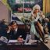 | Personal | 10cc | How Dare You! | 1976 | US | Mercury | SRM-1-1061 | Vinyl, LP, Album, Stereo |
| Personal | Adolph von Henselt | Henselt | 1969 | US | Candide | CE 31011 | Vinyl, LP, Album | |
| 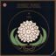 | Personal | Ahmad Jamal | One | 1978 | US | 20th Century Fox Records | T-555 | Vinyl, LP, Album |
| Personal | Al Di Meola | Land Of The Midnight Sun | 1976 | US | Columbia | PC 34074 | Vinyl, LP, Album | |
| 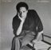 | Personal | Al Jarreau | This Time | 1980 | US | Warner Bros. Records | BSK 3434 | Vinyl, LP, Album |
| 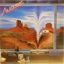 | Personal | Al Stewart | Time Passages | 1978 | US | Arista | AB-4190 | Vinyl, LP, Album |
| 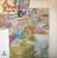 | Personal | Al Stewart | Year Of The Cat | 1976 | US | Janus Records | JXS-7022 | Vinyl, LP, Album, Promo |
| Personal | Al Stewart | Year Of The Cat | 1976 | US | Janus Records | JXS-7022 | Vinyl, LP, Album, Promo | |
| 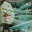 | Personal | The Alan Parsons Project | I Robot | 1977 | US | Arista | AL 7002 | Vinyl, LP, Album |
| Personal | The Alan Parsons Project | I Robot | 1977 | US | Arista | AL 7002 | Vinyl, LP, Album | |
| 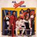 | Personal | All Sports Band | All Sports Band | 1981 | US | Radio Records (5) | RR 19321 | Vinyl, LP |
| 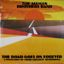 | Personal | The Allman Brothers Band | The Road Goes On Forever | 1975 | US | Capricorn Records | 2CP 0164 | 2x, Vinyl, LP, Compilation |
| 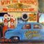 | Personal | The Allman Brothers Band | Wipe The Windows, Check The Oil, Dollar Gas | 1976 | US | Capricorn Records | 2CX0177 | 2x, Vinyl, LP, Album |
| 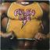 | Personal | Alvin Lee | Pump Iron! | 1975 | US | Columbia | PC 33796 | Vinyl, LP, Album |
| 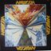 | Personal | Ambrosia (2) | Ambrosia | 1975 | US | 20th Century Records | T-434 | Vinyl, LP, Album |
| 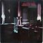 | Personal | Ambrosia (2) | Life Beyond L.A. | 1978 | US | Warner Bros. Records | BSK 3135 | Vinyl, LP, Album, Stereo |
| 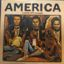 | Personal | America (2) | America | 1971 | US | Warner Bros. Records | BS 2576 | Vinyl, LP, Album, Repress, Stereo |
| Personal | America (2) | Harbor | 1977 | US | Warner Bros. Records | BSK 3017 | Vinyl, LP, Album | |
| 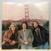 | Personal | America (2) | Hearts | 1975 | US | Warner Bros. Records | BS2852 | Vinyl, LP |
| 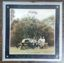 | Personal | America (2) | Holiday | 1974 | US | Warner Bros. Records | W 2808 | Vinyl, LP, Album |
| 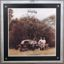 | Personal | America (2) | Holiday | 1974 | US | Warner Bros. Records | W 2808 | Vinyl, LP, Album |
| 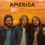 | Personal | America (2) | Homecoming | 1972 | US | Warner Bros. Records | BS 2655 | Vinyl, LP, Album, Promo |
| Personal | Ananta | Night And Daydream | 1978 | US | Touchstone Sound Recordings | BBT 112T | Vinyl, LP, Album, Promo | |
| 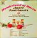 | Personal | André Kostelanetz | Wonderland Of Opera | 1963 | US | Columbia | CS 8795 | Vinyl, LP, Album, Stereo |
| 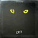 | Personal | Andrew Lloyd Webber | Cats: Selections From The Original Broadway Cast Recording | 1983 | US | Geffen Records | GHS 2026 | Vinyl, LP |
| Personal | The Animals | The Animals | 1964 | US | MGM Records | SE 4264 | Vinyl, LP, Album, Stereo | |
| 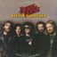 | Personal | April Wine | First Glance | 1978 | US | Capitol Records | SW-11852 | Vinyl, LP, Album |
| 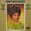 | Personal | Aretha Franklin | Aretha's Gold | 1969 | US | Atlantic | SD 8227 | Vinyl, LP, Album, Compilation, Reissue, Stereo |
| 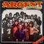 | Personal | Argent | All Together Now | 1972 | US | Epic | KE 31556 | Vinyl, LP, Album, Stereo |
| Personal | Argent | Nexus | 1974 | US | Epic | KE 32573 | Vinyl, LP, Album, Stereo | |
| 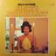 | Personal | Arlo Guthrie | Alice's Restaurant | 1976 | US | Reprise Records | 6267 | Vinyl, LP, Album, Reissue, Stereo |
| 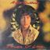 | Personal | Arlo Guthrie | Power Of Love | 1981 | US | Warner Bros. Records | BSK 3558 | Vinyl, LP, Album |
| 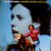 | Personal | Arlo Guthrie | Running Down The Road | 1969 | US | Reprise Records | RS 6346 | Vinyl, LP, Album |
| 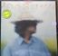 | Personal | Arlo Guthrie | One Night | 1978 | US | Warner Bros. Records | BSK 3232 | Vinyl, LP, Album, Stereo |
| 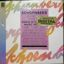 | Personal | Arnold Schoenberg | Opus 4 - Verklärte Nacht / Opus 45 - Trio For Violin,Viola And Cello | 1982 | US | Nonesuch | D-79028 | Vinyl, LP, Stereo |
 | Personal | Arthur Rubinstein | Chopin Waltzes | 1964 | US | RCA Victor Red Seal | LSC-2726 | Vinyl, LP, Stereo |
| 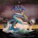 | Personal | Asia (2) | Asia | 1982 | US | Geffen Records | GHS 2008 | Vinyl, LP, Album |
| 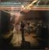 | Personal | Atlanta Rhythm Section | A Rock And Roll Alternative | 1976 | US | Polydor | PD-1-6080 | Vinyl, LP, Album |
| 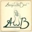 | Personal | Average White Band | AWB | 1974 | US | Atlantic | SD 7308 | Vinyl, LP, Album |
| Personal | Average White Band | Soul Searching | 1976 | US | Atlantic | SD 18179 | Vinyl, LP, Album | |
| 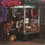 | Personal | Baby (7) | Where Did All The Money Go? | 1976 | US | Chelsea Records | CHL 517 | Vinyl, LP |
| 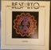 | Personal | Bachman-Turner Overdrive | Best Of B.T.O. (So Far) | 1976 | US | Mercury | SRM-1-1101 | Vinyl, LP, Compilation |
| 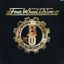 | Personal | Bachman-Turner Overdrive | Four Wheel Drive | 1975 | US | Mercury | SRM-1-1027 | Vinyl, LP, Album |
| 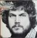 | Personal | Bachman-Turner Overdrive | Head On | 1975 | US | Mercury | SRM-1-1067 | Vinyl, LP, Album, Club Edition |
| 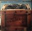 | Personal | Bachman-Turner Overdrive | Not Fragile | 1974 | US | Mercury | SRM-1-1004 | Vinyl, LP, Album, Stereo |
| Personal | Badfinger | Ass | 1973 | US | Apple Records | SW-3411 | Vinyl, LP, Album, Stereo | |
 | Personal | The Band | Rock Of Ages (The Band In Concert) | 1975 | US | Capitol Records | SABB-11045 | 2x, Vinyl, LP, Album, Reissue, Repress, Stereo |
| 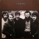 | Personal | The Band | The Band | 1969 | US | Capitol Records | STAO-132 | Vinyl, LP, Album |
| Personal | Barclay James Harvest | Barclay James Harvest | 1985 | German Democratic Republic (GDR) | AMIGA | 8 56 127 | Vinyl, LP, Compilation, Stereo | |
| 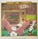 | Personal | Barefoot Jerry | Watchin' TV | 1974 | US | Monument | KZ 32926 | Vinyl, LP, Album, Stereo |
| 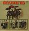 | Personal | The Beatles | Beatles '65 | 1964 | US | Capitol Records | T 2228 | Vinyl, LP, Album, Mono |
| 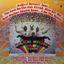 | Personal | The Beatles | Magical Mystery Tour | 1976 | US | Capitol Records | SMAL-2835 | Vinyl, LP, Album, Reissue, Stereo |
| Personal | The Beatles | Rubber Soul | 1971 | US | Capitol Records | ST-2442 | Vinyl, LP, Album, Repress, Stereo | |
| 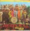 | Personal | The Beatles | Sgt. Pepper's Lonely Hearts Club Band | 1967 | US | Capitol Records | SMAS 2653 | Vinyl, LP, Album, Stereo |
| 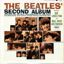 | Personal | The Beatles | The Beatles' Second Album | 1964 | US | Capitol Records | T 2080 | Vinyl, LP, Album, Mono |
| Personal | Bent Fabric | Alley Cat | 1962 | US | ATCO Records | 33-148 | Vinyl, LP, Album, Mono | |
| 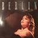 | Personal | Berlin | Love Life | 1984 | US | Geffen Records | GHS 4025 | Vinyl, LP, Album, Club Edition |
| 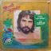 | Personal | Bertie Higgins | Just Another Day In Paradise | 1982 | US | Kat Family Records | FZ 37901 | Vinyl, LP, Album, Stereo |
| 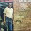 | Personal | Bill Withers | Just As I Am | 1971 | US | Sussex | SXBS 7006 | Vinyl, LP, Album, Stereo |
| 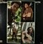 | Personal | Bill Withers | Still Bill | 1972 | US | Sussex | SXBS 7014 | Vinyl, LP, Album, Stereo |
| Personal | Billy 'Crash' Craddock | Billy "Crash" Craddock | 1978 | US | Capitol Records | ST-511758 | Vinyl, LP, Album | |
| 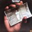 | Personal | Billy Cobham | Life & Times | 1976 | US | Atlantic | SD 18166 | Vinyl, LP, Album |
| Personal | Billy Paul | Only The Strong Survive | 1977 | US | Philadelphia International Records | PZ 34923 | Vinyl, LP, Album, Stereo | |
| Personal | Billy Paul | When Love Is New | 1975 | US | Philadelphia International Records | PZ 33843 | Vinyl, LP, Album, Stereo | |
| 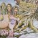 | Personal | Black Oak Arkansas | High On The Hog | 1974 | Germany | Atlantic | ATL 40 538 | Vinyl, LP, Album, Promo |
| 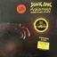 | Personal | Black Oak Arkansas | Raunch 'N' Roll Live | 1973 | US | ATCO Records | SD 7019 | Vinyl, LP, Album, Promo, Mono |
| 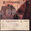 | Personal | Black Sabbath | Black Sabbath | 1970 | US | Warner Bros. Records | WS 1871 | Vinyl, LP, Album, Promo, Stereo |
| 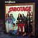 | Personal | Black Sabbath | Sabotage | 1975 | US | Warner Bros. Records | BS 2822 | Vinyl, LP, Album, Stereo |
| Personal | Blood, Sweat And Tears | B, S & T 4 | 1971 | US | Columbia | KC 30590 | Vinyl, LP, Album | |
| Personal | Blood, Sweat And Tears | Blood, Sweat & Tears | 1969 | US | Columbia | CS 9720 | Vinyl, LP, Album, Reissue, Stereo | |
| Personal | Blood, Sweat And Tears | Blood, Sweat & Tears | 1969 | US | Columbia | CS 9720 | Vinyl, LP, Album, Reissue, Stereo | |
| Personal | Blood, Sweat And Tears | Blood, Sweat & Tears Greatest Hits | 1972 | US | Columbia | KC 31170 | Vinyl, LP, Album, Compilation, Stereo | |
| Personal | Blood, Sweat And Tears | Blood, Sweat & Tears Greatest Hits | 1972 | US | Columbia | KC 31170 | Vinyl, LP, Compilation, Stereo | |
| Personal | Blood, Sweat And Tears | Blood, Sweat And Tears 3 | 1970 | US | Columbia | KC 30090 | Vinyl, LP, Album | |
| Personal | Blood, Sweat And Tears | Blood, Sweat And Tears 3 | 1970 | US | Columbia | KC 30090 | Vinyl, LP, Album | |
| Personal | Blood, Sweat And Tears | Brand New Day | 1977 | US | ABC Records | AB-1015 | Vinyl, LP, Album, Stereo | |
| Personal | Blood, Sweat And Tears | Child Is Father To The Man | 1968 | US | Columbia | CS 9619 | Vinyl, LP, Album, Stereo | |
| Personal | Blood, Sweat And Tears | New Blood | 1972 | US | Columbia | KC 31780 | Vinyl, LP, Album, Stereo | |
| Personal | Blue Öyster Cult | On Your Feet Or On Your Knees | 1975 | Europe | CBS | CBS 88116 | 2x, Vinyl, LP, Album, Repress, Stereo | |
| Personal | The Blues Brothers | Briefcase Full Of Blues | 1978 | US | Atlantic | SD 19217 | Vinyl, LP, Album, Club Edition | |
| Personal | Blues Magoos | Electric Comic Book | 1967 | US | Mercury | SR 61104 | Vinyl, LP, Album, Stereo | |
| Personal | Bob Dylan | Bob Dylan's Greatest Hits | 1967 | US | Columbia | KCS 9463 | Vinyl, LP, Compilation, Stereo | |
| Personal | Bob James | Obsession | 1986 | US | Warner Bros. Records | W1-25495 | Vinyl, LP, Album, Club Edition | |
| Personal | Bob Seger And The Silver Bullet Band | Against The Wind | 1980 | US | Capitol Records | SOO-12041 | Vinyl, LP, Album | |
| Personal | Bob Seger And The Silver Bullet Band | Against The Wind | 1980 | US | Capitol Records | SOO-12041 | Vinyl, LP, Album | |
| Personal | Bob Seger And The Silver Bullet Band | Live Bullet | 1976 | US | Capitol Records | SKBB-11523 | 2x, Vinyl, LP, Album | |
| Personal | Bob Seger And The Silver Bullet Band | Night Moves | 1986 | US | Capitol Records | ST-11557 | Vinyl, LP, Album, Reissue | |
| Personal | Bob Seger And The Silver Bullet Band | Stranger In Town | 1978 | US | Capitol Records | SW-11698 | Vinyl, LP, Album | |
 | Personal | Bob Seger And The Silver Bullet Band | Stranger In Town | 1978 | US | Capitol Records | SW-11698 | Vinyl, LP, Album, Stereo |
| Personal | Bob Seger And The Silver Bullet Band | The Distance | 1982 | US | Capitol Records | ST-12254 | Vinyl, LP, Album, Stereo | |
| Personal | Boots Randolph | Boots With Strings | 1966 | US | Monument | SLP 18066 | Vinyl, LP, Album, Stereo | |
| Personal | Boz Scaggs | Hits! | 1980 | US | Columbia | FC 36841 | Vinyl, LP, Compilation, Stereo | |
| Personal | Boz Scaggs | Silk Degrees | 1976 | US | Columbia | PC 33920 | Vinyl, LP, Album, Stereo | |
| Personal | Brand X (3) | Moroccan Roll | 1977 | US | Passport Records | PP 98022 | Vinyl, LP, Album, Stereo | |
| Personal | Bread | The Best Of Bread | 1973 | US | Elektra | EKS-75056 | Vinyl, LP, Compilation, Stereo | |
| Personal | Brian Auger's Oblivion Express | Straight Ahead | 1974 | US | RCA Victor | APL1-0454 | Vinyl, LP, Album, Stereo | |
| Personal | Brothers Johnson | Right On Time | 1977 | US | A&M Records | SP-4644 | Vinyl, LP, Album, Stereo | |
| Personal | Buddy Rich | Buddy Rich Plays And Plays And Plays | 1977 | US | RCA | CPL1-2273 | Vinyl, LP, Album, Stereo | |
| Personal | Buffalo Springfield | Last Time Around | 1968 | US | ATCO Records | SD33-256 | Vinyl, LP, Album, Reissue | |
| Personal | Buffalo Springfield | Retrospective The Best Of Buffalo Springfield | 1969 | US | ATCO Records | SD 33-283 | Vinyl, LP, Compilation, Stereo | |
| Personal | Buffy Sainte-Marie | The Best Of Buffy Sainte-Marie | 1970 | US | Vanguard | VSD-3/4 | 2x, Vinyl, LP, Compilation | |
| Personal | The Byrds | The Best Of The Byrds Greatest Hits, Volume II | 1972 | US | Columbia | KC 31795 | Vinyl, LP, Compilation | |
| Personal | The Byrds | Turn! Turn! Turn! | 1965 | US | Columbia | CL 2454 | Vinyl, LP, Album, Mono | |
| Personal | The Byrds | Younger Than Yesterday | 1967 | US | Columbia | CS 9442 | Vinyl, LP, Album, Stereo | |
| Personal | Carole King | Really Rosie | 1975 | US | Ode Records (2) | SP 77027 | Vinyl, LP, Album, Stereo | |
| Personal | The Cars | The Cars | 1978 | US | Elektra | 6E-135 | Vinyl, LP, Album, Stereo | |
| Personal | Cat Mother And The All-Night Newsboys | The Street Giveth.. And The Street Taketh Away | 1969 | US | Polydor | 24-4001 | Vinyl, LP, Album, Stereo | |
| Personal | Cat Stevens | Catch Bull At Four | 1972 | US | A&M Records | SP 4365 | Vinyl, LP, Album | |
| Personal | Cat Stevens | Tea For The Tillerman | 1970 | US | A&M Records | SP 4280 | Vinyl, LP, Album | |
| Personal | Chanson | Chanson | 1978 | US | Ariola Records America | SW-50039 | Vinyl, LP, Album | |
| Personal | Charley Pride | Country Feelin' | 1974 | US | RCA Victor | APL1-0534 | Vinyl, LP, Album | |
| Personal | Charlie Byrd | Bossa Nova Pelos Passaros | 1966 | US | Riverside Records | RM 436 | Vinyl, LP, Album, Reissue, Mono | |
| Personal | Charlie Byrd | Brazilian Byrd | 1966 | US | Columbia | CS 9137 | Vinyl, LP, Stereo, Album | |
| Personal | Charlie Byrd | For All We Know | 1971 | US | Columbia | G 30622 | 2x, Vinyl, LP, Album, Stereo | |
| Personal | The Charlie Daniels Band | Fire On The Mountain | 1976 | US | Epic | PE 34365 | Vinyl, LP, Album, Reissue | |
| Personal | Charlie Rich | Behind Closed Doors | 1973 | US | Epic | PE 32247 | Vinyl, LP, Album, Reissue | |
| Personal | Chase (5) | Chase | 1971 | US | Epic | E 30472 | Vinyl, LP, Album | |
| Personal | Cher | Chér | 1971 | US | Kapp Records | KS 3649 | Vinyl, LP, Album | |
| Personal | Chicago (2) | Chicago | 1970 | US | Columbia | KGP 24 | 2x, Vinyl, LP, Album | |
| Personal | Chicago (2) | Chicago Transit Authority | 1969 | US | Columbia | GP 8 | 2x, Vinyl, LP, Album | |
| Personal | Christopher Cross | Another Page | 1983 | US | Warner Bros. Records | 1-23757 | Vinyl, LP, Album, Club Edition | |
| Personal | Christopher Cross | Christopher Cross | 1979 | US | Warner Bros. Records | BSK 3383 | Vinyl, LP, Album | |
| Personal | Climax Blues Band | Gold Plated | 1976 | US | Sire | SASD-7523 | Vinyl, LP, Album, Stereo | |
| Personal | Count Basie Orchestra | The Best Of Count Basie | 1963 | US | Decca | DXSB-7170 | 2x, Vinyl, LP, Compilation, Stereo | |
| Personal | Country Joe And The Fish | I-Feel-Like-I'm-Fixin'-To-Die | 1969 | US | Vanguard | VSD 79266 | Vinyl, LP, Album, Repress, Stereo | |
| Personal | Creedence Clearwater Revival | Bayou Country | 1969 | US | Fantasy | 8387 | Vinyl, LP, Album, Reissue | |
| Personal | Creedence Clearwater Revival | Creedence Clearwater Revival | 1968 | US | Fantasy | 8382 | Vinyl, LP, Album | |
 | Personal | Crosby, Stills & Nash | Crosby, Stills & Nash | 1969 | US | Atlantic | SD-8229 | Vinyl, LP, Album, Stereo |
| Personal | Crosby, Stills & Nash | Crosby, Stills & Nash | 1969 | US | Atlantic | SD-8229 | Vinyl, LP, Album, Stereo | |
| Personal | Crosby, Stills & Nash | CSN | 1977 | US | Atlantic | SD 19104 | Vinyl, LP, Album, Stereo | |
| Personal | Crosby, Stills, Nash & Young | 4 Way Street | 1971 | US | Atlantic | SD 2-902 | 2x, Vinyl, LP, Album | |
| Personal | Crosby, Stills, Nash & Young | Déjà Vu | 1970 | US | Atlantic | SD 7200 | Vinyl, LP, Album, Stereo | |
| Personal | The Crusaders | Those Southern Knights | 1976 | US | ABC Blue Thumb | BTSD-6024 | Vinyl, LP, Album | |
| Personal | The Crusaders | Unsung Heroes | 1973 | US | Blue Thumb Records | BTS 6007 | Vinyl, LP, Album, Stereo | |
| Personal | Culture Club | Colour By Numbers | 1983 | US | Epic | QE 39107 | Vinyl, LP, Album, Stereo | |
| Personal | Dan Fogelberg | Captured Angel | 1975 | US | Full Moon | PE 33499 | Vinyl, LP, Album, Stereo | |
| Personal | Dan Fogelberg | Home Free | 1972 | US | Columbia | KC 31751 | Vinyl, LP, Album | |
| Personal | Dan Fogelberg | Souvenirs | 1974 | US | Epic | KE 33137 | Vinyl, LP, Album, Stereo | |
| Personal | Dan Fogelberg | The Innocent Age | 1981 | US | Full Moon | KE2 37393 | 2x, Vinyl, LP, Album | |
| Personal | Dan Fogelberg | The Innocent Age | 1981 | US | Full Moon | KE2 37393 | 2x, Vinyl, LP, Album | |
| Personal | Dan Hicks And His Hot Licks | Where's The Money? | 1971 | US | Blue Thumb Records | BTS 29 | Vinyl, LP, Album | |
| Personal | Dap Sugar Willie | From North Philly (Live) | 1976 | US | Philadelphia International Records | PZ 34122 | Vinyl, LP, Album, Promo, Stereo | |
| Personal | Darius Milhaud | La Création Du Monde / L'Histoire Du Soldat | 1959 | US | Everest | LPBR-6017 | Vinyl, LP, Album, Mono | |
| Personal | Dave Mason | Alone Together | 1970 | US | Blue Thumb Records | BTS 19 | Vinyl, LP, Album, Stereo | |
 | Personal | Dave Mason | Headkeeper | 1972 | US | Blue Thumb Records | BTS 34 | Vinyl, LP, Album, Stereo |
| Personal | David Lawton | Very Live! | US | Not On Label | DL-1000 | Vinyl, LP, Album | ||
| Personal | Deep Purple | 24 Carat Purple | 1975 | UK | Purple Records | TPSM 2002 | Vinyl, LP, Compilation | |
| Personal | Deep Purple | Made In Japan | 1973 | US | Warner Bros. Records | 2WS 2701 | 2x, Vinyl, LP, Album | |
| Personal | Deep Purple | Made In Japan | 1972 | US | Warner Bros. Records | 2WS 2701 | 2x, Vinyl, LP, Album, Club Edition, Reissue | |
| Personal | Deep Purple | Made In Japan | 1973 | US | Warner Bros. Records | 2WS 2701 | 2x, Vinyl, LP, Album | |
| Personal | Deep Purple | Perfect Strangers | 1984 | US | Mercury | 824 003-1 M-1 | Vinyl, LP, Album, Stereo | |
 | Personal | Deep Purple | Shades Of Deep Purple | 1968 | US | Tetragrammaton Records | T-102 | Vinyl, LP, Album, Stereo |
| Personal | Deep Purple | Shades Of Deep Purple | 1968 | US | Tetragrammaton Records | T-102 | Vinyl, LP, Album, Stereo |
| Personal | Deep Purple | The Book Of Taliesyn | 1968 | US | Tetragrammaton Records | T-107 | Vinyl, LP, Album, Stereo | |
| Personal | Deep Purple | Who Do We Think We Are! | 1973 | US | Warner Bros. Records | BS 2678 | Vinyl, LP, Album, Reissue | |
| Personal | Derek & The Dominos | Layla And Other Assorted Love Songs | 1973 | US | ATCO Records | SD 2-704 | 2x, Vinyl, LP, Album, Repress | |
| Personal | Detroit Emeralds | I Bet You Get The One (Who Loves You) / If I Lose Your Love | 1970 | US | Westbound Records | W 156 | Vinyl, 7", 45 RPM, Single | |
| Personal | Diana Ross | Diana Ross | 1976 | US | Motown | M6-861S1 | Vinyl, LP, Album | |
| Personal | Dick Haymes | Souvenir Album | 1946 | US | Decca | A-498 | 4x, Shellac, 10", 78 RPM, Album | |
| Personal | Dionne Warwick | Golden Hits - Part One | 1967 | US | Scepter Records | SPS 565 | Vinyl, LP, Compilation, Reissue, Stereo | |
| Personal | Dixie Dregs | Dregs Of The Earth | 1980 | US | Arista | AL 9528 | Vinyl, LP, Album | |
| Personal | Dixie Dregs | Unsung Heroes | 1981 | US | Arista | AL 9548 | Vinyl, LP, Album | |
| Personal | Dixie Dregs | What If | 1978 | US | Capricorn Records | CPN 0203 | Vinyl, LP, Album, Stereo | |
| Personal | Dobie Gray | Drift Away | 1973 | US | Decca | DL7-5397 | Vinyl, LP, Album, Stereo | |
| Personal | Don Janse And His 60 Voice Children's Chorus | The Christmas Drummer Boy | 1962 | US | Grand Prix Series | KX-6 | Vinyl, LP, Album | |
 | Personal | Don McLean | American Pie | 1971 | US | United Artists Records | UAS-5535 | Vinyl, LP, Album, Club Edition, Reissue, Stereo |
| Personal | Don McLean | American Pie | 1971 | US | United Artists Records | UAS-5535 | Vinyl, LP, Album, Stereo | |
| Personal | Don McLean | Playin' Favorites | 1973 | US | United Artists Records | UA-LA161-F | Vinyl, LP, Album | |
| Personal | Don McLean | Tapestry | 1982 | US | Liberty | LN-10157 | Vinyl, LP, Album, Reissue | |
| Personal | The Doobie Brothers | Best Of The Doobies | 1976 | US | Warner Bros. Records | BS 2978 | Vinyl, LP, Compilation | |
| Personal | The Doobie Brothers | Best Of The Doobies | 1976 | US | Warner Bros. Records | BS 2978 | Vinyl, LP, Compilation | |
| Personal | The Doobie Brothers | Best Of The Doobies | 1976 | US | Warner Bros. Records | BS 2978 | Vinyl, LP, Compilation | |
| Personal | The Doobie Brothers | Minute By Minute | 1978 | US | Warner Bros. Records | BSK 3193 | Vinyl, LP, Album, Stereo | |
| Personal | The Doobie Brothers | One Step Closer | 1980 | US | Warner Bros. Records | HS 3452 | Vinyl, LP, Album | |
| Personal | The Doobie Brothers | Takin' It To The Streets | 1976 | US | Warner Bros. Records | BS 2899 | Vinyl, LP, Album, Stereo | |
| Personal | The Doobie Brothers | The Captain And Me | 1973 | US | Warner Bros. Records | BS 2694 | Vinyl, LP, Album, Reissue, Stereo | |
 | Personal | The Doobie Brothers | The Captain And Me | 1974 | US | Warner Bros. Records | BS 2694 | Vinyl, LP, Album, Repress, Stereo |
| Personal | The Doobie Brothers | The Captain And Me | 1974 | US | Warner Bros. Records | BS 2694 | Vinyl, LP, Album, Repress, Stereo |
| Personal | The Doobie Brothers | Toulouse Street | 1972 | US | Warner Bros. Records | BS 2634 | Vinyl, LP, Album | |
| Personal | The Doobie Brothers | What Were Once Vices Are Now Habits | 1974 | US | Warner Bros. Records | W 2750 | Vinyl, LP, Album | |
| Personal | Dorothy Shay | Coming 'Round The Mountain | 1957 | US | Harmony (4) | HL 7017 | Vinyl, LP | |
| Personal | Dottie West | Wild West | 1981 | US | Liberty | LT-1062 | Vinyl, LP, Album | |
 | Personal | Dr. West's Medicine Show And Junk Band | The Eggplant That Ate Chicago | 1967 | US | A Go Go Record | 22 17 001 | Vinyl, LP, Album, Mono |
| Personal | Dreamgirls Original Broadway Cast | Dreamgirls Original Broadway Cast Album | 1982 | US | Geffen Records | GHSP 2007 | Vinyl, LP, Album | |
| Personal | Duke Ellington | Black Brown And Beige: A Duke Ellington Tone Parallel To The American Negro | 1946 | US | Victor | SP-9 | 2x, Shellac, 12", 78 RPM, Album | |
| Personal | Eagles | Hotel California | 1976 | US | Asylum Records | 7E-1084 | Vinyl, LP, Album, Stereo | |
| Personal | Earl Bostic | The Earl Of Bostic | 1966 | US | Design Records (2) | SDLP-232 | Vinyl, LP, Stereo | |
| Personal | Earl Klugh | Nightsongs | 1984 | US | Capitol Records | ST-12372 | Vinyl, LP, Album | |
| Personal | Earth, Wind & Fire | Gratitude | 1975 | US | Columbia | PG 33694 | 2x, Vinyl, LP, Album, Stereo | |
| Personal | Earth, Wind & Fire | Head To The Sky | 1973 | US | Columbia | KC 32194 | Vinyl, LP, Album, Stereo | |
| Personal | Earth, Wind & Fire | Head To The Sky | 1973 | US | Columbia | KC 32194 | Vinyl, LP, Album, Stereo | |
| Personal | Earth, Wind & Fire | Touch The World | 1987 | US | Columbia | FC 40596 | Vinyl, LP, Album | |
| Personal | Ed Ames | Sings Who Will Answer? (And Other Songs Of Our Time) | 1968 | US | RCA Victor | LSP-3961 | Vinyl, LP, Album, Stereo | |
| Personal | Eddy Duchin | The Eddy Duchin Story | 1956 | US | Columbia | CL 790 | Vinyl, LP, Mono | |
| Personal | The Edgar Winter Group | They Only Come Out At Night | 1972 | US | Epic | KE 31584 | Vinyl, LP, Album | |
| Personal | Edgar Winter's White Trash | Recycled | 1977 | US | Blue Sky | PZ 34858 | Vinyl, LP, Album | |
| Personal | Edgar Winter's White Trash | Roadwork | 1973 | US | Epic | KEG 31249 | 2x, Vinyl, LP, Album, Repress, Stereo | |
| Personal | Edvard Grieg | Peer Gynt Suites Nos. 1 & 2 / Lyric Suite | 1976 | US | RCA Gold Seal | AGL1-1524 | Vinyl, LP, Reissue, Remastered, Stereo | |
 | Personal | Electric Light Orchestra | Olé ELO | 1976 | US | United Artists Records | UA-LA630-G | Vinyl, LP, Compilation |
| Personal | Electric Light Orchestra | Xanadu (From The Original Motion Picture Soundtrack) | 1980 | US | MCA Records | MCA-6100 | Vinyl, LP, Album, Stereo | |
| Personal | The Eleventh House | Introducing The Eleventh House | 1974 | US | Vanguard | VSD 79342 | Vinyl, LP, Album | |
| Personal | Elton John | Goodbye Yellow Brick Road | 1973 | US | MCA Records | MCA2-10003 | 2x, Vinyl, LP, Album, Club Edition | |
| Personal | Elton John | Madman Across The Water | 1971 | US | UNI Records | 93120 | Vinyl, LP, Album | |
| Personal | Elton John | Rock Of The Westies | 1975 | US | MCA Records | MCA-2163 | Vinyl, LP, Album | |
| Personal | Elvis Presley | Elvis | 1973 | US | RCA | DPL2-0056 | 2x, Vinyl, LP, Compilation | |
| Personal | Emerson, Lake & Palmer | Brain Salad Surgery | 1973 | US | Manticore | MC 66669 | Vinyl, LP, Album, Reissue | |
| Personal | Emerson, Lake & Palmer | Brain Salad Surgery | 1977 | US | Atlantic | SD 19124 | Vinyl, LP, Album, Reissue | |
 | Personal | Emerson, Lake & Palmer | Emerson, Lake & Palmer | 1970 | Canada | Cotillion | SD 9040 | Vinyl, LP, Album, Stereo |
| Personal | Emerson, Lake & Palmer | Emerson, Lake & Palmer | 1971 | US | Cotillion | 9040 | Vinyl, LP, Album, Promo, Mono | |
| Personal | Emerson, Lake & Palmer | Love Beach | 1978 | US | Atlantic | SD 19211 | Vinyl, LP, Album, Club Edition | |
| Personal | Emerson, Lake & Palmer | Pictures At An Exhibition | 1972 | US | Cotillion | ELP 66666 | Vinyl, LP, Album | |
| Personal | Emerson, Lake & Palmer | Tarkus | 1971 | US | Cotillion | SD 9900 | Vinyl, LP, Album | |
 | Personal | Emerson, Lake & Palmer | Trilogy | 1972 | US | Cotillion | SD 9903 | Vinyl, LP, Album |
| Personal | Emerson, Lake & Palmer | Trilogy | 1972 | US | Cotillion | SD 9903 | Vinyl, LP, Album, Stereo | |
| Personal | Emerson, Lake & Palmer | Welcome Back My Friends To The Show That Never Ends - Ladies And Gentlemen | 1974 | US | Manticore | MC 3-200 | 3x, Vinyl, LP, Album, Club Edition, Stereo | |
| Personal | Emerson, Lake & Palmer | Welcome Back My Friends To The Show That Never Ends - Ladies And Gentlemen | 1974 | US | Manticore | MC 3-200 | 3x, Vinyl, LP, Album, Stereo | |
| Personal | Emerson, Lake & Palmer | Welcome Back My Friends To The Show That Never Ends ~ Ladies And Gentlemen | 1974 | US | Manticore | MC 3-200 | 3x, Vinyl, LP, Album, Stereo | |
| Personal | Emerson, Lake & Palmer | Works (Volume 1) | 1977 | US | Atlantic | SD 2-7000 | 2x, Vinyl, LP, Album, Stereo | |
| Personal | Emitt Rhodes | Emitt Rhodes | 1970 | US | Dunhill | DS 50089 | Vinyl, LP, Album, Stereo | |
| Personal | Ethel Merman | Annie Get Your Gun | 1946 | US | Decca | A-468 | 6x, Shellac, 10", 78 RPM, Album | |
| Personal | Everly Brothers | Stories We Could Tell | 1972 | US | RCA Victor | LSP-4620 | Vinyl, LP, Album, Stereo | |
| Personal | The Family Of Mann | First Light | 1974 | US | Atlantic | SD 1658 | Vinyl, LP, Album | |
| Personal | Fats Waller | "Live" Volume Two | 1984 | US | Giants Of Jazz Records | GOJ-1035 | Vinyl, LP | |
| Personal | Felix Cavaliere | Felix Cavaliere | 1974 | US | Bearsville | BR 6955 | Vinyl, LP, Album | |
| Personal | Fever (3) | Fever | 1979 | US | Fantasy | F-9580 | Vinyl, LP, Album, Mixed | |
| Personal | The Fifth Dimension | Greatest Hits On Earth | 1972 | US | Bell Records | BELL 1106 | Vinyl, LP, Compilation, Stereo | |
| Personal | First Fire | First Fire | 1978 | US | Tortoise International | BYL1-2677 | Vinyl, LP, Album, Stereo | |
| Personal | Fleetwood Mac | Future Games | 1972 | US | Reprise Records | RS 6465 | Vinyl, LP, Album, Reissue | |
| Personal | Focus (2) | Moving Waves | 1971 | US | Sire | SAS 7401 | Vinyl, LP, Album, Stereo | |
| Personal | Foghat | Energized | 1974 | US | Bearsville | BR 6950 | Vinyl, LP, Album | |
| Personal | Foghat | Foghat | 1973 | US | Bearsville | BR 2136 | Vinyl, LP, Album, Promo, Stereo | |
| Personal | Foghat | Foghat | 1973 | US | Bearsville | BR 2136 | Vinyl, LP, Album | |
| Personal | Foghat | Foghat | 1972 | US | Bearsville | BR 2077 | Vinyl, LP, Album, Stereo | |
| Personal | Foghat | Foghat | 1972 | US | Bearsville | BR 2077 | Vinyl, LP, Album, Stereo | |
| Personal | Foghat | Fool For The City | 1975 | US | Bearsville | BR 6959 | Vinyl, LP, Album | |
| Personal | Foghat | Stone Blue | 1978 | US | Bearsville | BRK 6977 | Vinyl, LP, Album, Stereo | |
| Personal | Foreigner | Foreigner | 1977 | US | Atlantic | SD 19109 | Vinyl, LP, Album, Reissue, Stereo | |
| Personal | Foreigner | Head Games | 1979 | US | Atlantic | SD 29999 | Vinyl, LP, Album | |
| Personal | Frank Marino | Tales Of The Unexpected | 1979 | US | Columbia | JC 35753 | Vinyl, LP, Album | |
| Personal | Frankie Carle | Easy To Love (And Other Favorites) | 1966 | US | RCA Camden | CAS-987(e) | Vinyl, LP, Album, Stereo | |
 | Personal | Frankie Goes To Hollywood | Welcome To The Pleasuredome | 1984 | US | Island Records | 7 90232-1-H | 2x, Vinyl, LP, Album |
| Personal | Fred Waring & The Pennsylvanians | 'Twas The Night Before Christmas | 1963 | US | Decca | DL 8171 | Vinyl, LP, Album, Repress, Mono | |
| Personal | The Friends Of Distinction | Whatever | 1970 | US | RCA Victor | LSP-4408 | Vinyl, LP, Album, Stereo | |
| Personal | Gabriel Bondage | Another Trip To Earth | 1977 | US | Dharma Records (4) | D-808 | Vinyl, LP, Album, Limited Edition | |
| Personal | Gene Pitney | Golden Greats | 1967 | US | Musicor Records | MS-3134 | Vinyl, LP, Album, Stereo | |
 | Personal | Genesis | Invisible Touch | 1986 | US | Atlantic | 81641-1-E | Vinyl, LP, Album |
| Personal | Genesis | Three Sides Live | 1982 | US | Atlantic | SD 2-2000 | 2x, Vinyl, LP, Album, Stereo | |
| Personal | George Carlin | A Place For My Stuff | 1981 | US | Atlantic | SD 19326 | Vinyl, LP, Album | |
| Personal | George Duke | Thief In The Night | 1985 | US | Elektra | 60398-1 | Vinyl, LP, Album | |
| Personal | George Gershwin | From Tin Pan Alley To Broadway | 1974 | US | Mark56 Records | 680 | Vinyl, LP, Album, Stereo | |
| Personal | George Hurst | Great Moments In Wagner | 1970 | US | London Records | SPC 21040 | Vinyl, LP, Album, Promo, Stereo | |
| Personal | The George Shearing Quintet | Velvet Carpet | 1956 | US | Capitol Records | DT720 | Vinyl, LP, Album, Reissue | |
| Personal | George Wright (2) | Great Hawaiian Melodies | 1963 | US | Dot Records | DLP 3526 | Vinyl, LP, Album, Mono | |
| Personal | Gerry Rafferty | City To City | 1978 | US | United Artists Records | UA-LA840-G | Vinyl, LP, Album, Misprint | |
| Personal | Giacomo Puccini | La Boheme (Highlights) | 1959 | London Records | 5562 | Vinyl, LP, Mono | ||
| Personal | Giuseppe di Stefano | Canzoni Italiane | US | Columbia Masterworks | Mono MS 6568 | Vinyl, LP, Album, Stereo | ||
| Personal | Good Rats | Tasty | 1978 | US | Ratcity Records | RCR 8002 | Vinyl, LP, Album, Reissue | |
| Personal | Gorillaz | Plastic Beach | 2010 | Europe | Parlophone | 5099962616614 | 2x, Vinyl, LP, Album, Reissue, Repress | |
| Personal | Grand Funk Railroad | Closer To Home | 1972 | US | Capitol Records | SKAO-471 | Vinyl, LP, Album | |
| Personal | Grand Funk Railroad | Survival | 1971 | US | Capitol Records | SW-764 | Vinyl, LP, Album, Club Edition, Stereo | |
| Personal | The Grass Roots | Move Along | 1972 | US | Dunhill | DSX-50112 | Vinyl, LP, Album, Stereo | |
| Personal | The Gregg Allman Band | Playin' Up A Storm | 1977 | US | Capricorn Records | CP 0181 | Vinyl, LP, Album | |
| Personal | Grover Washington, Jr. | Paradise | 1979 | US | Elektra | 6E-182 | Vinyl, LP, Album, Stereo | |
| Personal | The Guess Who | The Best Of The Guess Who | 1973 | US | Scepter Records | CTN 18021 | Vinyl, LP, Compilation | |
| Personal | The Guess Who | The Greatest Of The Guess Who | 1977 | US | RCA Victor | APL1-2253 | Vinyl, LP, Compilation, Reissue | |
| Personal | Gustav Holst | The Planets | 1979 | US | London Records | CS7110 | Vinyl, LP, Stereo | |
| Personal | Gustav Mahler | Symphonie No.2 | 1977 | Germany | Deutsche Grammophon | 2707 094 | Box Set | |
| Personal | Guy & Ralna | Lawrence Welk Presents Guy & Ralna | 1970 | US | Ranwood | R8071 | Vinyl, LP, Album | |
| Personal | Harry Belafonte | Belafonte At Carnegie Hall | 1959 | USA & Canada | RCA Victor | LSO-6006 (2) | 2x, Vinyl, LP, Stereo | |
| Personal | Harry Belafonte | Pure Gold | 1975 | US | RCA | ANL1-0979 | Vinyl, LP, Compilation | |
| Personal | Harry Belafonte | The Many Moods Of Belafonte | 1962 | US | RCA Victor | LPM-2574 | Vinyl, LP, Album, Mono | |
| Personal | Harry Chapin | Short Stories | 1973 | US | Elektra | EKS-75065 | Vinyl, LP, Album | |
| Personal | Harry Nilsson | A Little Touch Of Schmilsson In The Night | 1981 | US | RCA Victor | AYL1-3761 | Vinyl, LP, Album, Reissue, Stereo | |
| Personal | Harry Nilsson | Nilsson Schmilsson | 1971 | US | RCA Victor | LSP-4515 | Vinyl, LP, Album, Misprint, Reissue, Repress, Stereo | |
| Personal | The Havenstock River Band | The Havenstock River Band | 1972 | US | Im'press Records | IMPS 1615 | Vinyl, LP, Album, Promo | |
| Personal | The Hawaii Calls Orchestra | Exotic Instrumentals - Favorites Of The Islands: Vol. IV | 1961 | US | Capitol Records | ST-1409 | Vinyl, LP, Stereo | |
 | Personal | Heartsfield | Heartsfield | 1973 | US | Mercury | SRM 1 688 | Vinyl, LP, Album |
| Personal | Herbie Mann | Bird In A Silver Cage | 1976 | US | Atlantic | SD 18209 | Vinyl, LP, Album, Stereo | |
 | Personal | Herbie Mann | Bird In A Silver Cage | 1976 | US | Atlantic | SD 18209 | Vinyl, LP, Album |
| Personal | Herbie Mann | London Underground | 1974 | US | Atlantic | SD 1648 | Vinyl, LP, Album | |
| Personal | Herbie Mann | Mississippi Gambler | 1972 | US | Atlantic | SD 1610 | Vinyl, LP, Album | |
| Personal | Herbie Mann | Our Mann Flute | 1966 | US | Atlantic | SD 1464 | Vinyl, LP, Album, Stereo | |
| Personal | Herbie Mann | Right Now | 1962 | US | Atlantic | SD 1384 | Vinyl, LP, Album, Stereo | |
| Personal | Herbie Mann | The Inspiration I Feel | 1968 | US | Atlantic | SD 1513 | Vinyl, LP, Album | |
| Personal | Herbie Mann | The Wailing Dervishes | 1967 | US | Atlantic | SD 1497 | Vinyl, LP, Album, Stereo | |
| Personal | Herbie Mann | Turtle Bay | 1973 | US | Atlantic | SD 1642 | Vinyl, LP, Album, Stereo | |
| Personal | Herbie Mann | Herbie Mann & Fire Island | 1977 | US | Atlantic | SD 19112 | Vinyl, LP, Album | |
| Personal | The Herbie Mann Afro-Jazz Sextet + Four Trumpets | The Common Ground | 1960 | US | Atlantic | SD 1343 | Vinyl, LP, Album, Stereo | |
 | Personal | Herman's Hermits | Blaze | 1967 | US | MGM Records | SE-4478 | Vinyl, LP, Album, Stereo |
| Personal | Herman's Hermits | Herman's Hermits On Tour (Their Second Album!) | 1965 | US | MGM Records | E-4295 | Vinyl, LP, Album, Mono | |
| Personal | Herman's Hermits | The Best Of Herman's Hermits Volume III | 1967 | US | MGM Records | SE-4505 | Vinyl, LP, Compilation, Stereo | |
| Personal | Hot Tuna | First Pull Up, Then Pull Down | 1971 | US | RCA Victor | LSP-4550 | Vinyl, LP, Album, Stereo | |
| Personal | Hugo Montenegro, His Orchestra And Chorus | Hang 'Em High | 1968 | US | RCA Victor | LSP-4022 | Vinyl, LP, Album, Stereo | |
 | Personal | Humble Pie | Smokin' | 1972 | US | A&M Records | SP 4342 | Vinyl, LP, Album, Stereo |
| Personal | Humphrey Bogart | Original Radio Broadcast Humphrey Bogart Starring In Treasure Of Sierra Madre | 1973 | US | Mark56 Records | 610 | Vinyl, LP | |
| Personal | Igor Stravinsky | Le Sacre Du Printemps (The Rite Of Spring) | 1982 | US | Musical Heritage Society | MHS 4650 | Vinyl, LP, Reissue, Stereo | |
| Personal | Igor Stravinsky | The Rite Of Spring | 1979 | US | Angel Records | SZ-37646 | Vinyl, LP, Album, Stereo | |
| Personal | Igor Stravinsky | The Rite Of Spring (Le Sacre du Printemps) | 1970 | US | Nonesuch | H-71093 | Vinyl, LP, Album, Repress, Stereo | |
| Personal | Igor Stravinsky | Firebird Suite / Marche Slave / Night On Bald Mountain | 1967 | US | London Records | SPC 21026 | Vinyl, LP, Album, Stereo | |
| Personal | Igor Stravinsky | Firebird Suite: Marche Slave / Night On Bald Mountain | 1967 | US | London Records | SPC 21026 | Vinyl, LP, Album, Stereo | |
| Personal | In Sync (4) | Sync Or Swim | 1984 | US | Silver Seven Records (2) | SSR 700 | Vinyl, LP, Album, Stereo | |
| Personal | Iron Butterfly | Ball | 1969 | US | ATCO Records | SD 33-280 | Vinyl, LP, Album | |
| Personal | Iron Butterfly | Heavy | 1968 | US | ATCO Records | SD 33-227 | Vinyl, LP, Album, Stereo | |
| Personal | Iron Butterfly | In-A-Gadda-Da-Vida | 1968 | US | ATCO Records | SD 33-250 | Vinyl, LP, Album, Stereo | |
| Personal | Iron Butterfly | In-A-Gadda-Da-Vida | 1968 | US | ATCO Records | SD 33-250 | Vinyl, LP, Album, Stereo | |
| Personal | Iron Butterfly | In-A-Gadda-Da-Vida | 1968 | US | ATCO Records | SD 33-250 | Vinyl, LP, Album, Promo, Stereo | |
| Personal | Isaac Hayes | Shaft | 1971 | US | Enterprise | ENS-2-5002 | 2x, Vinyl, LP, Album, Stereo | |
| Personal | It's A Beautiful Day | Choice Quality Stuff / Anytime | 1971 | US | Columbia | KC 30734 | Vinyl, LP, Album, Stereo | |
| Personal | It's A Beautiful Day | It's A Beautiful Day | 1969 | US | Columbia | CS 9768 | Vinyl, LP, Album, Stereo | |
| Personal | It's A Beautiful Day | It's A Beautiful Day | 1969 | US | Columbia | CS 9768 | Vinyl, LP, Album, Stereo | |
| Personal | It's A Beautiful Day | Marrying Maiden | 1970 | US | Columbia | CS 1058 | Vinyl, LP, Album, Stereo | |
| Personal | It's A Beautiful Day | Marrying Maiden | 1970 | US | Columbia | CS 1058 | Vinyl, LP, Album, Stereo | |
| Personal | The J. Geils Band | "Live" Full House | 1972 | US | Atlantic | SD 7241 | Vinyl, LP, Album, Stereo | |
| Personal | Jackson Browne | For Everyman | 1973 | US | Asylum Records | SD 5067-2 | CD, Album, Reissue | |
| Personal | Jackson Browne | Running On Empty | 1977 | US | Asylum Records | 6E-113 | Vinyl, LP, Album, Stereo | |
| Personal | Jackson Browne | Saturate Before Using | 1972 | US | Asylum Records | SD 5051-2 | CD, Album, Reissue | |
| Personal | Jackson Browne | The Pretender | 1976 | US | Asylum Records | 7E-1079 | Vinyl, LP, Album, Stereo | |
| Personal | James Gang | Bang | 1973 | US | ATCO Records | SD 7037 | Vinyl, LP, Album | |
| Personal | James Gang | Passin' Thru | 1972 | US | ABC Records | ABCX-760 | Vinyl, LP, Album, Club Edition | |
| Personal | James Gang | The Best Of The James Gang | 1973 | US | ABC Records | ABCX-774 | Vinyl, LP, Compilation | |
| Personal | James Griffin (4) | Breakin' Up Is Easy | 1973 | US | Polydor | PD 6018 | Vinyl, LP, Album, Stereo | |
| Personal | James Taylor (2) | JT | 1977 | US | Columbia | JC 34811 | Vinyl, LP, Album, Promo | |
| Personal | James White & The Blacks | Off White | 1979 | US | ZE Records | ZEA33-003 | Vinyl, LP, Album | |
| Personal | Jay & The Americans | Sands Of Time | 1969 | US | United Artists Records | UAS 6671 | Vinyl, LP, Album | |
| Personal | Jay Boy Adams | Jay Boy Adams | 1977 | US | Atlantic | SD 18221 | Vinyl, 12", 33 ⅓ RPM, Promo, Stereo | |
| Personal | Jean-Luc Ponty | A Taste For Passion | 1979 | US | Atlantic | SD 19253 | Vinyl, LP, Album | |
| Personal | Jean-Luc Ponty | Aurora | 1976 | US | Atlantic | SD 18163 | Vinyl, LP, Album, Stereo | |
| Personal | Jean-Luc Ponty | Aurora | 1976 | US | Atlantic | SD 18163 | Vinyl, LP, Album, Stereo | |
| Personal | Jean-Luc Ponty | Individual Choice | 1983 | US | Atlantic | 80098-1 | Vinyl, LP, Album | |
| Personal | Jean-Luc Ponty | Upon The Wings Of Music | 1975 | US | Atlantic | SD 18138 | Vinyl, LP, Album, Stereo | |
| Personal | Jean-Michel Jarre | Equinoxe | 1978 | US | Polydor | PD-1-6175 | Vinyl, LP, Album | |
| Personal | Jeff Beck | Wired | 1976 | UK | Epic | PE 33849 | Vinyl, LP, Stereo | |
| Personal | Jefferson Airplane | Bark | 1971 | US | Grunt (3) | FTR-1001 | Vinyl, LP, Album, Stereo | |
| Personal | Jefferson Airplane | Crown Of Creation | 1968 | US | RCA Victor | LSP-4058 | Vinyl, LP, Album, Stereo | |
| Personal | Jefferson Airplane | Surrealistic Pillow | 1967 | US | RCA Victor | LSP-3766 | Vinyl, LP, Album, Misprint, Stereo | |
| Personal | Jefferson Airplane | Thirty Seconds Over Winterland | 1973 | US | Grunt (3) | BFL1-0147 | Vinyl, LP, Album | |
| Personal | Jefferson Airplane | Volunteers | 1969 | US | RCA Victor | LSP-4238 | Vinyl, LP, Album, Reissue | |
| Personal | Jefferson Starship | Dragon Fly | 1974 | US | Grunt (3) | BFL1-0717 | Vinyl, LP, Album, Stereo | |
| Personal | Jefferson Starship | Gold | 1979 | US | Grunt (3) | BZL1-3247 | Vinyl, LP, Compilation, Stereo | |
| Personal | Jefferson Starship | Red Octopus | 1981 | US | Grunt (3) | AYL1-3660 | Vinyl, LP, Album, Reissue | |
| Personal | Jefferson Starship | Red Octopus | 1975 | US | Grunt (3) | BFL1-0999 | Vinyl, LP, Album, Stereo | |
| Personal | Jefferson Starship | Red Octopus | 1975 | US | Grunt (3) | BFL1-0999 | Vinyl, LP, Album | |
 | Personal | Jesse Colin Young | Light Shine | 1976 | US | Warner Bros. Records | BS 2790 | Vinyl, LP, Album, Reissue, Stereo |
| Personal | Jesse Colin Young | The Soul Of A City Boy | 1974 | US | Capitol Records | ST-11267 | Vinyl, LP, Album, Reissue | |
| Personal | Jesse Colin Young | The Soul Of A City Boy | 1974 | US | Capitol Records | ST-11267 | Vinyl, LP, Album, Reissue, Stereo | |
| Personal | Jesse Colin Young | Together | 1972 | US | Warner Bros. Records | BS 2588 | Vinyl, LP, Album, Stereo | |
| Personal | Jesse West | No Prisoners | 1989 | US | Motown | L33-17912 | Vinyl, 12", 33 ⅓ RPM, Promo | |
| Personal | Jethro Tull | Aqualung | 1973 | US | Chrysalis | CHR 1044 | Vinyl, LP, Album, Reissue, Stereo | |
| Personal | Jethro Tull | Benefit | 1973 | US | Chrysalis | CHR 1043 | Vinyl, LP, Album, Reissue | |
| Personal | Jethro Tull | Crest Of A Knave | 1987 | US | Chrysalis | OV 41590 | Vinyl, LP, Album, Club Edition | |
| Personal | Jethro Tull | Heavy Horses | 1978 | US | Chrysalis | CHR-1175 | Vinyl, LP, Album, Stereo | |
| Personal | Jethro Tull | Heavy Horses | 1978 | US | Chrysalis | CHR-1175 | Vinyl, LP, Album, Club Edition, Stereo | |
| Personal | Jethro Tull | Live - Bursting Out | 1978 | US | Chrysalis | CH2 1201 | 2x, Vinyl, LP, Album | |
| Personal | Jethro Tull | Living In The Past | 1972 | US | Chrysalis | 2CH 1035 | 2x, Vinyl, LP, Compilation, Stereo | |
 | Personal | Jethro Tull | Minstrel In The Gallery | 1975 | US | Chrysalis | CHR 1082 | Vinyl, LP, Album |
| Personal | Jethro Tull | Songs From The Wood | 1977 | US | Chrysalis | CHR 1132 | Vinyl, LP, Album | |
| Personal | Jethro Tull | Songs From The Wood | 1977 | US | Chrysalis | CHR 1132 | Vinyl, LP, Album | |
| Personal | Jethro Tull | Stormwatch | 1979 | US | Chrysalis | CHR 1238 | Vinyl, LP, Album, Stereo | |
| Personal | Jethro Tull | Thick As A Brick | 1972 | US | Reprise Records | MS 2072 | Vinyl, LP, Album, Stereo | |
| Personal | Jethro Tull | This Was | 1968 | US | Reprise Records | RS 6336 | Vinyl, LP, Album, Stereo | |
| Personal | Jethro Tull | Too Old To Rock 'N' Roll: Too Young To Die! | 1976 | US | Chrysalis | CHR 1111 | Vinyl, LP, Album, Stereo | |
| Personal | Jethro Tull | War Child | 1974 | US | Chrysalis | CH4 1067 | Vinyl, Album, Quadraphonic, LP | |
| Personal | Jethro Tull | War Child | 1974 | US | Chrysalis | CHR 1067 | Vinyl, LP, Album | |
| Personal | Jim & Ingrid Croce | Another Day, Another Town | 1974 | US | Pickwick | SPC-3332 | Vinyl, LP, Album | |
| Personal | Jim Croce | I Got A Name | 1973 | US | ABC Records | ABCX 797 | Vinyl, LP, Album, Club Edition | |
| Personal | Jim Croce | I Got A Name | 1973 | US | ABC Records | ABCX 797 | Vinyl, LP, Album, Club Edition | |
| Personal | Jim Croce | Life And Times | 1973 | US | ABC Records | ABCX-769 | Vinyl, LP, Album, Stereo | |
| Personal | Jim Croce | Photographs And Memories His Greatest Hits | 1974 | US | Lifesong | LS 8000 | Vinyl, LP, Compilation, Reissue | |
 | Personal | Jim Croce | You Don't Mess Around With Jim | 1972 | US | ABC Records | ABCX-756 | Vinyl, LP, Album, Club Edition, Stereo |
| Personal | Jim Reeves | Songs To Warm The Heart | 1959 | US | RCA Victor | LSP-2001 | Vinyl, LP, Album, Stereo | |
| Personal | The Jimi Hendrix Experience | Are You Experienced? | 1967 | US | Reprise Records | 6261 | Vinyl, LP, Album, Stereo | |
| Personal | The Jimi Hendrix Experience | Electric Ladyland | 1968 | US | Reprise Records | 2RS 6307 | 2x, Vinyl, LP, Album, Stereo | |
| Personal | Jimmy Smith | Bashin' | 1962 | US | Verve Records | V-8474 | Vinyl, LP, Album, Mono | |
| Personal | Joe & Eddie | Joe & Eddie | 1963 | US | GNP Crescendo | GNP 75 | Vinyl, LP, Mono | |
| Personal | Joe Cocker | With A Little Help From My Friends | 1969 | US | A&M Records | SP-4182 | Vinyl, LP, Album | |
| Personal | Joe Farrell | La Catedral Y El Toro | 1977 | US | Warner Bros. Records | BS 3121 | Vinyl, LP, Album | |
| Personal | Joe Walsh | The Smoker You Drink, The Player You Get | 1973 | US | Dunhill | DSX-50140 | Vinyl, LP, Club Edition | |
| Personal | John Barry | Somewhere In Time (Original Motion Picture Soundtrack) | 1980 | US | MCA Records | MCA-5154 | Vinyl, LP, Album | |
| Personal | John Denver | John Denver's Greatest Hits | 1973 | US | RCA | CPL1-0374 | Vinyl, LP, Compilation | |
| Personal | John Denver | Rocky Mountain High | 1972 | US | RCA Victor | LSP-4731 | Vinyl, LP, Album, Repress | |
| Personal | John Denver | Rocky Mountain High | 1972 | US | RCA Victor | LSP-4731 | Vinyl, LP, Album, Stereo | |
| Personal | John Entwistle | Smash Your Head Against The Wall | 1971 | US | Decca | DL 79183 | Vinyl, LP, Album, Stereo | |
| Personal | John Klemmer | Brazilia | 1979 | US | ABC Records | AA-1116 | Vinyl, LP, Album | |
| Personal | John Mayall | Back To The Roots | 1971 | US | Polydor | 25-3002 | 2x, Vinyl, LP, Album | |
| Personal | John Mayall | Blues From Laurel Canyon | 1968 | US | London Records | PS 545 | Vinyl, LP, Album, Reissue, Stereo | |
| Personal | John Mayall | Looking Back | 1969 | US | London Records | PS 562 | Vinyl, LP, Album, Compilation | |
| Personal | John Mayall | The Turning Point | 1970 | US | Polydor | 24-4004 | Vinyl, LP, Album, Stereo | |
| Personal | John Mayall | USA Union | 1970 | US | Polydor | 24-4022 | Vinyl, LP, Album | |
| Personal | Johnny Cash | Johnny Cash At San Quentin | 1969 | US | Columbia | CS 9827 | Vinyl, LP, Album, Stereo | |
| Personal | Johnny Cash | Born To Sing | 1970 | US | Longines Symphonette Society | LS 205A | 5x, Vinyl, LP, Compilation | |
| Personal | Joni Mitchell | Ladies Of The Canyon | 1970 | US | Reprise Records | RS 6376 | Vinyl, LP, Album, Repress, Stereo | |
| Personal | Josef Leo Gruber | The Viennese Waltz | US | Diplomat Records | DS 2294 | Vinyl, LP, Album | ||
| Personal | Judy Collins | In My Life | 1966 | US | Elektra | EKS-74027 | Vinyl, LP, Album, Reissue, Stereo | |
| Personal | Jules Massenet | Le Cid-Ballet Music · Scènes Pittoresques · The Last Sleep Of The Virgin | 1973 | US | Klavier Records | KS 522 | Vinyl, LP | |
| Personal | Justin Hayward | Blue Jays | 1975 | UK | Threshold (5) | THS 12 | Vinyl, LP, Album, Stereo | |
| Personal | Kansas (2) | Audio-Visions | 1980 | US | Kirshner | FZ 36588 | Vinyl, LP, Album | |
| Personal | Kansas (2) | Leftoverture | 1976 | US | Kirshner | PZ 34224 | Vinyl, LP, Album, Stereo | |
| Personal | Kansas (2) | Leftoverture | 1976 | US | Kirshner | 34224 | Vinyl, LP, Album, Stereo | |
| Personal | Kansas (2) | Masque | 1975 | US | Kirshner | PZ 33806 | Vinyl, LP, Album, Stereo | |
| Personal | Kansas (2) | Song For America | 1986 | US | Kirshner | PZ 33385 | Vinyl, Album, LP, Reissue | |
| Personal | Kenny Dorham | Show Boat | 1981 | US | Bainbridge Records | BT 1043 | Vinyl, LP, Album, Reissue | |
| Personal | Kenny Rogers | The Gambler | 1978 | US | United Artists Records | UA-LA934-H | Vinyl, LP, Album | |
| Personal | Larry Carlton | Strikes Twice | 1980 | US | Warner Bros. Records | BSK 3380 | Vinyl, LP, Album | |
| Personal | The Laurindo Almeida Trio | Artistry In Rhythm | 1984 | US | Concord Jazz | CJ-238 | Vinyl, LP, Album | |
| Personal | Led Zeppelin | Led Zeppelin | 2003 | US | Classic Records | SD 8216 | Vinyl, LP, Album, Reissue | |
| Personal | Lee Michaels | 5th | 1971 | US | A&M Records | SP-4302 | Vinyl, LP, Album, Stereo | |
| Personal | Lee Ritenour | Captain Fingers | 1977 | US | Epic | PE 34426 | Vinyl, LP, Album, Stereo | |
| Personal | Lee Ritenour | The Captain's Journey | 1978 | US | Elektra | 6E-136 | Vinyl, LP, Album, Stereo | |
| Personal | Leif Garrett | Feel The Need | 1978 | US | Scotti Bros. Records | SB 7100 | Vinyl, LP, Album, Stereo | |
| Personal | Leif Garrett | Leif Garrett | 1977 | US | Atlantic | SD 19152 | Vinyl, LP, Album, Stereo | |
| Personal | Leon Redbone | Double Time | 1977 | US | Warner Bros. Records | BS 2971 | Vinyl, LP, Album | |
| Personal | Leon Russell | Asylum Choir II | 1971 | US | Shelter Records | SW-8910 | Vinyl, LP, Album | |
| Personal | Leonard Bernstein | Leonard Bernstein Conducts Great Marches | 1972 | US | Columbia Masterworks | M 30943 | Vinyl, LP, Album | |
| Personal | Leopold Stokowski | Walt Disney's Fantasia | 1981 | US | Buena Vista Records | 101 | 3x, Vinyl, LP, Album, Reissue, Repress, Stereo | |
| Personal | Leopold Stokowski | Walt Disney's Fantasia | 1976 | US | Buena Vista Records | STER 101 | 3x, Vinyl, LP, Album, Reissue, Repress, Stereo | |
| Personal | Les Dudek | Say No More | 1977 | US | Columbia | PC 34397 | Vinyl, LP, Album, Stereo | |
| Personal | Les Paul & Mary Ford | Lovers' Luau | 1959 | US | Columbia | CL 1276 | Vinyl, LP, Album, Mono | |
| Personal | Leslie West | Theme | 1988 | US | Passport Records | PB 6061 | Vinyl, LP, Album | |
| Personal | Linda Ronstadt | Heart Like A Wheel | 1974 | US | Capitol Records | ST-11358 | Vinyl, LP, Album | |
| Personal | Linda Ronstadt | Living In The USA | 1978 | US | Asylum Records | 6E-155 | Vinyl, LP, Album, Stereo | |
| Personal | Lionel Hampton And His Orchestra | Open House | 1959 | US | RCA Camden | CAL 517 | Vinyl, LP, Compilation | |
| Personal | Lionel Richie | Lionel Richie | 1982 | US | Motown | 6007ML | Vinyl, LP, Album | |
| Personal | Little River Band | First Under The Wire | 1979 | US | Capitol Records | SOO-11954 | Vinyl, LP, Album | |
| Personal | Little River Band | Greatest Hits | 1982 | US | Capitol Records | ST 512247 | Vinyl, LP, Compilation, Club Edition, Stereo | |
| Personal | Little River Band | Little River Band | 1976 | US | Harvest | ST-11512 | Vinyl, LP, Album | |
| Personal | Live Wire (3) | No Fright | 1980 | US | A&M Records | SP-4814 | Vinyl, LP, Album | |
 | Personal | Lobo (3) | Introducing Lobo | 1971 | US | Big Tree Records | BTS 2003 | Vinyl, LP, Album, Stereo |
| Personal | Loggins And Messina | Full Sail | 1973 | US | Columbia | KC 32540 | Vinyl, LP, Album, Stereo | |
| Personal | Louis Prima | Strictly Prima! | 1958 | US | Capitol Records | T1132 | Vinyl, LP, Album, Mono | |
| Personal | The Lovin' Spoonful | 24 Karat Hits | 1968 | US | Kama Sutra | KLPS-750-2 | 2x, Vinyl, LP, Compilation, Limited Edition, Stereo | |
| Personal | The Lovin' Spoonful | Once Upon A Time | 1970 | US | Kama Sutra | KSBS-2029 | Vinyl, LP, Compilation | |
| Personal | Ludwig van Beethoven | The Nine Symphonies | 1970 | US | Columbia Masterworks | D8S 815 | 8x, Vinyl, LP, Repress, Stereo | |
| Personal | Lyle Murphy | The Ultimate Odyssey | 1981 | US | Inner City Records | IC 1133 | Vinyl, LP, Album | |
| Personal | Lynyrd Skynyrd | (Pronounced 'Lĕh-'nérd 'Skin-'nérd) | 1980 | US | MCA Records | MCA-1685 | Vinyl, LP, Album, Reissue | |
| Personal | Lynyrd Skynyrd | Gold & Platinum | 1979 | US | MCA Records | MCA2-11008 | 2x, Vinyl, LP, Compilation | |
| Personal | Mady Mesplé | Coloratura Arias From French Opera | 1973 | US | Seraphim | S-60215 | Vinyl, LP | |
| Personal | Magic Violins | Magic Violins Play Musical Patterns Of Leroy Anderson | US | Magic Violins | SS-2501 | Vinyl, LP, Album, Stereo | ||
| Personal | Mahavishnu Orchestra | Visions Of The Emerald Beyond | 1975 | Europe | CBS | 69108 | Vinyl, LP, Album, Stereo | |
| Personal | Malcolm Arnold | The Bridge On The River Kwai | 1967 | US | Columbia | CS 9426 | Vinyl, LP, Album, Reissue, Stereo | |
| Personal | The Mamas & The Papas | If You Can Believe Your Eyes And Ears | 1967 | US | Dunhill | DS50006 | Vinyl, LP, Album, Repress, Stereo | |
 | Personal | The Mamas & The Papas | The Papas & The Mamas | 1968 | US | Dunhill | LP-DS-50031 | Vinyl, 7", 33 ⅓ RPM, Jukebox, Stereo |
| Personal | Man | Rhinos, Winos, And Lunatics | 1974 | US | United Artists Records | UA-LA247-G | Vinyl, LP, Album, Stereo | |
| Personal | Manfred Mann's Earth Band | The Roaring Silence | 1976 | US | Warner Bros. Records | BS 2965 | Vinyl, LP, Album | |
 | Personal | Manfred Mann's Earth Band | The Roaring Silence | 1976 | US | Warner Bros. Records | BS 2965 | Vinyl, LP, Album |
| Personal | Manfred Mann's Earth Band | The Roaring Silence | 1976 | US | Warner Bros. Records | BS 2965 | Vinyl, LP, Album |
| Personal | Manfred Mann's Earth Band | The Roaring Silence | 1976 | US | Warner Bros. Records | BS 2965 | Vinyl, LP, Album |
| Personal | The Manhattan Pops Orchestra | Ports Of Call | 1965 | US | Time Records (3) | S/2180 | Vinyl, LP, Album, Stereo | |
| Personal | Mannheim Steamroller | Fresh Aire | 1975 | US | American Gramaphone Records | AG-355 | Vinyl, LP, Album, Reissue, Stereo | |
| Personal | Mannheim Steamroller | Fresh Aire III | 1979 | US | American Gramaphone | AG-365 | Vinyl, LP, Album, Stereo | |
| Personal | Marilyn Horne | Duets From Semiramide, Norma | 1970 | US | London Records | OS 26168 | Vinyl, LP, Album | |
| Personal | Mario Lanza | The Student Prince | 1960 | US | RCA Victor Red Seal | LSC-2339 | Vinyl, LP, Album, Stereo | |
| Personal | The Marshall Tucker Band | A New Life | 1974 | US | Capricorn Records | CP 0124 | Vinyl, LP, Album | |
| Personal | The Marshall Tucker Band | Carolina Dreams | 1977 | US | Capricorn Records | CPK 0180 | Vinyl, LP, Album | |
| Personal | The Marshall Tucker Band | Greatest Hits | 1978 | US | Capricorn Records | CPN 0214 | Vinyl, LP, Compilation, Stereo | |
| Personal | The Marshall Tucker Band | Long Hard Ride | 1976 | US | Capricorn Records | CP 0170 | Vinyl, LP, Album | |
| Personal | The Marshall Tucker Band | Searchin' For A Rainbow | 1975 | US | Capricorn Records | CP 0161 | Vinyl, LP, Album | |
| Personal | The Marshall Tucker Band | The Marshall Tucker Band | 1974 | US | Capricorn Records | CP 0112 | Vinyl, LP, Album, Repress | |
| Personal | The Marshall Tucker Band | Together Forever | 1978 | US | Capricorn Records | CPN 0205 | Vinyl, LP, Album | |
| Personal | Martin And Finley | Dazzle 'Em With Footwork | 1974 | US | Motown | M6-797S1 | Vinyl, LP | |
| Personal | Marty Robbins | Marty Robbins' Greatest Hits Vol. III | 1971 | US | Columbia | C 30571 | Vinyl, LP, Compilation, Stereo | |
| Personal | Mary Martin | South Pacific | 1958 | US | Columbia Masterworks | OL 4180 | Vinyl, LP, Reissue, Mono | |
| Personal | Mason Proffit | Come & Gone | 1974 | US | Warner Bros. Records | 2LS 2746 | 2x, Vinyl, LP, Compilation | |
| Personal | Mason Proffit | Wanted | 1970 | US | Happy Tiger Records | HT-1009 | Vinyl, LP, Album | |
| Personal | Mason Williams | Classical Gas | 1987 | US | American Gramaphone Records | AG 800 | Vinyl, LP, Album, Stereo | |
| Personal | Mass Production | Turn Up The Music | 1981 | US | Cotillion | SD 5226 | Vinyl, LP, Album, Stereo | |
| Personal | McCoy Tyner | Focal Point | 1976 | US | Milestone (4) | M-9072 | Vinyl, LP, Album | |
| Personal | Men At Work | Business As Usual | 1982 | US | Columbia | FC 37978 | Vinyl, LP, Album, Stereo | |
| Personal | MFSB | Love Is The Message | 1973 | US | Philadelphia International Records | KZ 32707 | Vinyl, LP, Album, Stereo | |
| Personal | Michael LeGrand | I Love Paris | 1954 | US | Columbia | CL555 | Vinyl, LP | |
| Personal | Midnight String Quartet | The Look Of Love And Other Rhapsodies For Young Lovers | 1968 | US | Viva (3) | V36015 | Vinyl, LP, Album, Stereo | |
| Personal | The Mighty Clouds Of Joy | Changing Times | 1979 | US | Epic | JE 35971 | Vinyl, LP, Album | |
| Personal | Mike Bloomfield | The Live Adventures Of Mike Bloomfield And Al Kooper | 1969 | US | Columbia | KGP 6 | 2x, Vinyl, LP, Album | |
| Personal | Mike Oldfield | Tubular Bells | 1973 | US | Virgin | VR 13-105 | Vinyl, LP, Album | |
| Personal | Milt Raskin | Kapu (Forbidden) | 1959 | US | Crown Records (2) | CLP 5110 | Vinyl, LP, Album, Mono | |
| Personal | Moby Grape | Grape Jam | 1968 | US | Columbia | MGS 1 | Vinyl, LP, Album, Stereo | |
| Personal | Moby Grape | Wow | 1968 | US | Columbia | CS 9613 | Vinyl, LP, Album, Repress, Stereo | |
| Personal | Molly Hatchet | Molly Hatchet | 1978 | US | Epic | JE 35347 | Vinyl, LP, Album | |
| Personal | Montreux | Sign Language | 1987 | US | Windham Hill Records | WH-1058 | Vinyl, LP, Album | |
| Personal | Montserrat Caballé | Arias & Duets From Aida / Don Carlo / Manon Lescaut / Mefistofele | UK | His Master's Voice | SLS 5051 | 2x, Vinyl, LP, Compilation | ||
| Personal | The Moody Blues | A Question Of Balance | 1970 | US | Threshold (5) | THS 3 | Vinyl, LP, Album | |
| Personal | The Moody Blues | Every Good Boy Deserves Favour | 1971 | US | Threshold (5) | THS 5 | Vinyl, LP, Album | |
| Personal | The Moody Blues | Every Good Boy Deserves Favour | 1971 | US | Threshold (5) | THS 5 | Vinyl, LP, Album | |
| Personal | The Moody Blues | In Search Of The Lost Chord | 1968 | US | Deram | DES 18017 | Vinyl, LP, Album | |
| Personal | The Moody Blues | In Search Of The Lost Chord | 1968 | Canada | Deram | DES 18017 | Vinyl, LP, Album, Stereo | |
| Personal | The Moody Blues | Long Distance Voyager | 1981 | UK | Threshold (5) | TXS 139 | Vinyl, LP, Album, Stereo | |
| Personal | The Moody Blues | Long Distance Voyager | 1981 | US | Threshold (5) | TRL-1-2901 | Vinyl, LP, Album, Promo | |
| Personal | The Moody Blues | Long Distance Voyager | 1981 | US | Threshold (5) | TRL-1-2901 | Vinyl, LP, Album, Promo | |
| Personal | The Moody Blues | Octave | 1978 | US | London Records | PS 708 | Vinyl, LP, Album | |
| Personal | The Moody Blues | Seventh Sojourn | 1972 | US | Threshold (5) | THS 7 | Vinyl, LP, Album, Stereo | |
| Personal | The Moody Blues | Seventh Sojourn | 1972 | US | Threshold (5) | THS 7 | Vinyl, LP, Album, Stereo | |
| Personal | The Moody Blues | The Other Side Of Life | 1986 | US | Polydor | 829 179-1 Y-1 | Vinyl, LP, Album | |
| Personal | The Moody Blues | The Present | 1983 | US | Threshold (5) | TRL-1-2902 | Vinyl, LP, Album, Club Edition | |
| Personal | The Moody Blues | This Is The Moody Blues | 1974 | US | Threshold (5) | 2 THS 12/13 | 2x, Vinyl, LP, Compilation | |
| Personal | The Moody Blues | To Our Children's Children's Children | 1969 | US | Threshold (5) | THS 1 | Vinyl, LP, Album, Stereo | |
| Personal | The Moody Blues | Days Of Future Passed | 1968 | US | Deram | DES 18012 | Vinyl, LP, Album, Stereo | |
| Personal | The Mothers | Fillmore East - June 1971 | 1971 | US | Bizarre Records | MS 2042 | Vinyl, LP, Album, Stereo | |
| Personal | Munich Machine | A Whiter Shade Of Pale | 1978 | US | Casablanca | NBLP 7090 | Vinyl, LP, Album, Promo | |
 | Personal | Nancy Wilson | Broadway - My Way | 1963 | US | Capitol Records | T 1828 | Vinyl, LP, Mono, Album |
| Personal | Nat King Cole | Unforgettable | 1952 | US | Capitol Records | DT 357 | Vinyl, LP, Stereo | |
| Personal | Nazareth (2) | Hair Of The Dog | 1975 | US | A&M Records | SP-4511 | Vinyl, LP, Album, Remastered, Stereo | |
| Personal | Neil Larsen | Jungle Fever | 1978 | US | Horizon (3) | SP-733 | Vinyl, LP, Album | |
| Personal | Neil Larsen | Through Any Window | 1987 | US | MCA Records | MCA-42018 | Vinyl, LP, Album | |
 | Personal | Neil Sedaka | Sedaka's Back | 1974 | US | The Rocket Record Company | MCA-463 | Vinyl, LP, Album, Compilation, Club Edition |
| Personal | Neil Young | Harvest | 1972 | US | Reprise Records | MS 2032 | Vinyl, LP, Album, Stereo | |
| Personal | Neil Young | Rust Never Sleeps | 1979 | US | Reprise Records | HS 2295 | Vinyl, LP, Album | |
| Personal | Neil Young | Everybody Knows This Is Nowhere | 1969 | US | Reprise Records | RS 6349 | Vinyl, LP, Album, Stereo | |
| Personal | The New Christy Minstrels | The Quiet Sides Of The New Christy Minstrels | 1965 | US | Columbia | CL 2280 | Vinyl, LP, Mono | |
| Personal | The New Symphony Orchestra Of London | Classic Favorites | US | Golden Tone | C4018 | Vinyl, LP, Album | ||
| Personal | Nikolai Rimsky-Korsakov | The Exotic Rimsky-Korsakov | 1969 | US | London Records | SPC 21033 | Vinyl, LP, Album, Stereo | |
| Personal | Nikolai Rimsky-Korsakov | Scheherazade | 1977 | US | Summit (5) | SUM 1022 | Vinyl, LP, Album | |
| Personal | Nitty Gritty Dirt Band | Dream | 1975 | US | United Artists Records | UA-LA469-G | Vinyl, LP, Album | |
| Personal | Nitty Gritty Dirt Band | Rare Junk | 1968 | US | Liberty | LST-7540 | Vinyl, LP, Album, Stereo | |
| Personal | No Artist | Steel Drums | 1959 | US | HiFi Records | SR-817 | Vinyl, LP, Stereo | |
| Personal | No Artist | We Came In Peace For All Mankind | 1969 | US | Century Records (4) | 36344 | Vinyl, LP, Album | |
| Personal | Olivia Newton-John | Physical | 1981 | US | MCA Records | MCA-5229 | Vinyl, LP, Album, Stereo | |
| Personal | Olomana | And So We Are | 1977 | US | Seabird Sound | SS1002 | Vinyl, LP, Album | |
| Personal | The Organization | The Big Beat | 1985 | US | Techno Hop Records | THR-6 | Vinyl, 12", 33 ⅓ RPM | |
| Personal | The Original Star Wars Cast | The Story Of Star Wars | 1977 | US | 20th Century Fox Records | T-550 | Vinyl, LP, Album, Stereo | |
| Personal | Orson Welles | War Of The Worlds | 1968 | US | Longines Symphonette Society | 4001 | Vinyl, LP, Remastered, Stereo | |
| Personal | Outlaws | Bring It Back Alive | 1978 | US | Arista | AL 8300 | 2x, Vinyl, LP, Promo | |
| Personal | Outlaws | Lady In Waiting | 1976 | US | Arista | AL 4070 | Vinyl, LP, Album | |
| Personal | Papa John Creach | Filthy! | 1972 | US | Grunt (3) | FTR-1009 | Vinyl, LP, Album | |
| Personal | Papa John Creach | I'm The Fiddle Man | 1975 | US | Buddah Records | BDS 5649 | Vinyl, LP, Album | |
| Personal | Passport (2) | Looking Thru | 1974 | US | ATCO Records | SD 7042 | Vinyl, LP, Album | |
| Personal | Passport (2) | Man In The Mirror | 1983 | US | Atlantic | 80144-1 | Vinyl, LP, Album | |
| Personal | Pat Boone | Hymns We Love | 1957 | US | Dot Records | DLP 25068 | Vinyl, LP, Album, Stereo | |
| Personal | Paul & Linda McCartney | Ram | 1971 | US | Apple Records | SMAS-3375 | Vinyl, LP, Album, Stereo | |
| Personal | Paul Simon | One-Trick Pony | 1980 | US | Warner Bros. Records | HS 3472 | Vinyl, LP, Album | |
| Personal | Paul Simon | Still Crazy After All These Years | 1975 | US | Columbia | PC 33540 | Vinyl, LP, Album | |
| Personal | Paul Simon | There Goes Rhymin' Simon | 1973 | US | Columbia | KC 32280 | Vinyl, LP, Album | |
| Personal | Paul Williams (2) | Here Comes Inspiration | 1974 | US | A&M Records | SP-3606 | Vinyl, LP, Album, Club Edition | |
| Personal | Percy Faith | Percy Faith Favorites | 1951 | US | RCA Victor | WP 306 | 3x, Vinyl, 7", 45 RPM, Album | |
| Personal | Percy Faith & His Orchestra | Bon Voyage! Continental Souvenirs | 1960 | US | Columbia | CS 8214 | Vinyl, LP, Album, Stereo | |
| Personal | Perry Como | Como's Golden Records | 1961 | US | RCA Victor | LSP-1981 | Vinyl, LP, Compilation, Stereo | |
| Personal | Pete Townshend | Empty Glass | 1980 | US | ATCO Records | SD 32-100 | Vinyl, LP, Album | |
| Personal | Pete Townshend | Scoop | 1983 | Scandinavia | ATCO Records | 79 0063-1 | 2x, Vinyl, LP, Album | |
| Personal | Pete Townshend | White City: A Novel | 1985 | US | ATCO Records | A1 90473 | Vinyl, LP, Album, Club Edition, Stereo | |
| Personal | Pete Townshend | Rough Mix | 1977 | US | MCA Records | MCA-2295 | Vinyl, LP, Album | |
| Personal | Peter Frampton | Frampton Comes Alive | 1976 | US | A&M Records | SP-6505-DBX | 2x, Vinyl, LP, Album, Limited Edition | |
| Personal | Peter Nero | Sunday In New York | 1964 | US | RCA Victor | LSP-2827 | Vinyl, LP, Album, Misprint, Stereo | |
| Personal | Peter Wolf | Lights Out | 1984 | US | EMI America | SJ-17121 | Vinyl, LP, Album | |
| Personal | Peter Wolf | Lights Out | 1984 | US | EMI America | SJ-17121 | Vinyl, LP, Album | |
| Personal | Peter, Paul & Mary | (Moving) | 1962 | US | Warner Bros. Records | W 1473 | Vinyl, LP, Album, Mono | |
| Personal | Peter, Paul & Mary | (Moving) | 1962 | US | Warner Bros. Records | W 1473 | Vinyl, LP, Album, Mono | |
| Personal | Phil Collins | Face Value | 1981 | US | Atlantic | SD-16029 | Vinyl, LP, Album, Club Edition | |
| Personal | Phil Collins | No Jacket Required | 1985 | US | Atlantic | 81240-1 | Vinyl, LP, Album, Stereo | |
| Personal | Pierre Boulez | La Mer - L'Après Midi D'un Faune - Jeux | 1967 | US | Columbia Masterworks | MS 7361 | Vinyl, LP, Reissue, Stereo | |
| Personal | Poco (3) | Legend | 1978 | US | ABC Records | AA-1099 | Vinyl, LP, Album, Club Edition | |
| Personal | Poco (3) | Legend | 1978 | US | ABC Records | AA-1099 | Vinyl, LP, Album, Club Edition | |
| Personal | Poco (3) | Rose Of Cimarron | 1976 | US | ABC Records | ABCD-946 | Vinyl, LP, Album, Promo | |
| Personal | The Police | Ghost In The Machine | 1981 | US | A&M Records | SP-3730 | Vinyl, LP, Album | |
| Personal | Procol Harum | A Salty Dog | 1969 | US | A&M Records | SP 4179 | Vinyl, LP, Album, Stereo | |
| Personal | Procol Harum | Exotic Birds And Fruit | 1974 | US | Chrysalis | CHT 1058 | Vinyl, LP, Album | |
| Personal | Procol Harum | The Best Of Procol Harum | 1972 | US | A&M Records | SP-4401 | Vinyl, LP, Compilation, Stereo | |
| Personal | Procol Harum | Live | 1972 | US | A&M Records | SP 4335 | Vinyl, LP, Album, Stereo | |
| Personal | Procol Harum | Live | 1972 | US | A&M Records | SP 4335 | Vinyl, LP, Album, Stereo | |
| Personal | Pure Prairie League | If The Shoe Fits | 1976 | US | RCA Victor | APL1-1247 | Vinyl, LP, Album | |
| Personal | Pure Prairie League | Two Lane Highway | 1975 | US | RCA Victor | APL1-0933 | Vinyl, LP, Album, Stereo | |
| Personal | Quarterflash | Quarterflash | 1981 | US | Geffen Records | GHS 2003 | Vinyl, LP, Album | |
| Personal | Quicksilver Messenger Service | Happy Trails | 1969 | US | Capitol Records | ST-120 | Vinyl, LP, Album, Stereo | |
| Personal | Quicksilver Messenger Service | Happy Trails | 1969 | US | Capitol Records | ST-120 | Vinyl, LP, Album, Stereo | |
| Personal | Raiders (2) | Indian Reservation | 1971 | US | Columbia | C 30768 | Vinyl, LP, Album, Stereo | |
| Personal | Rainbow | Down To Earth | 1979 | US | Polydor | PD-1-6221 | Vinyl, LP, Album, Stereo | |
| Personal | Randy Bachman | As Brave Belt | 1975 | US | Reprise Records | MS 2210 | Vinyl, LP, Album, Reissue | |
| Personal | Randy Newman | Born Again | 1979 | US | Warner Bros. Records | HS 3346 | Vinyl, LP, Album | |
| Personal | Rare Earth | Back To Earth | 1975 | US | Rare Earth | R6-548S1 | Vinyl, LP, Album, Stereo | |
| Personal | Rare Earth | Back To Earth | 1975 | US | Rare Earth | R6-548S1 | Vinyl, LP, Album, Stereo | |
| Personal | Rare Earth | Ecology | 1970 | US | Rare Earth | RS514 | Vinyl, LP, Album, Stereo | |
| Personal | Rare Earth | Ma | 1973 | US | Rare Earth | R 546L-DJ | Vinyl, LP, Album, Promo | |
| Personal | Rare Earth | One World | 1971 | US | Rare Earth | RS-520 DJ | Vinyl, LP, Album, Promo | |
| Personal | Rare Earth | Rare Earth In Concert | 1971 | US | Rare Earth | R 534D | 2x, Vinyl, LP, Album, Stereo | |
| Personal | Rare Earth | Rare Earth In Concert | 1971 | US | Rare Earth | R 534D | 2x, Vinyl, LP, Album, Stereo | |
| Personal | Ray Charles | Greatest Hits | 1962 | US | ABC-Paramount | ABCS-415 | Vinyl, LP, Stereo, Compilation | |
| Personal | Renaissance (4) | Live At Carnegie Hall | 1977 | US | Sire | 2XS 6029 | 2x, Vinyl, LP, Album, Reissue, Stereo | |
| Personal | Richard Harris | Jonathan Livingston Seagull | 1973 | US | Dunhill | DSD 50160 | Vinyl, LP, Album, Stereo | |
| Personal | Richard Rodgers | Victory At Sea | 1955 | US | RCA Victor Red Seal | LM-1779 | Vinyl, LP, Album, Reissue, Mono | |
| Personal | Richard Strauss | Der Rosenkavalier - Highlights | 1971 | US | London Records | OS 26200 | Vinyl, LP | |
| Personal | Rick Springfield | Living In Oz | 1983 | US | RCA | AFLI-4660 | Vinyl, LP, Album, Stereo | |
| Personal | Rick Springfield | Success Hasn't Spoiled Me Yet | 1982 | US | RCA Victor | AFL1-4125 | Vinyl, LP, Album, Stereo | |
| Personal | Rick Springfield | Working Class Dog | 1981 | US | RCA Victor | AFL1-3697 | Vinyl, LP, Album, Stereo | |
| Personal | Rick Wakeman | Journey To The Centre Of The Earth | 1974 | US | A&M Records | SP-3621 | Vinyl, LP, Album, Stereo | |
| Personal | Rick Wakeman | Journey To The Centre Of The Earth | 1974 | US | A&M Records | SP-3621 | Vinyl, LP, Album, Stereo | |
| Personal | Rick Wakeman | Rick Wakeman's Criminal Record | 1977 | US | A&M Records | SP-4660 | Vinyl, LP, Album, Promo | |
| Personal | Rick Wakeman | The Myths And Legends Of King Arthur And The Knights Of The Round Table | 1975 | US | A&M Records | SP-4515 | Vinyl, LP, Album, Promo | |
| Personal | Rick Wakeman | The Six Wives Of Henry VIII | 1973 | US | A&M Records | SP-4361 | Vinyl, LP, Album, Stereo | |
| Personal | Rick Wakeman | White Rock | 1977 | US | A&M Records | SP-4614 | Vinyl, LP, Album, Stereo | |
| Personal | Rick Wakeman | No Earthly Connection | 1976 | US | A&M Records | SP-4583 | Vinyl, LP, Album, Stereo | |
| Personal | Rickie Lee Jones | The Magazine | 1984 | US | Warner Bros. Records | 9 25117-1 | Vinyl, LP, Album | |
| Personal | Robin Trower | For Earth Below | 1975 | US | Chrysalis | CHR 1073 | Vinyl, LP, Album | |
| Personal | Robin Trower | Victims Of The Fury | 1980 | US | Chrysalis | CHR 1215 | Vinyl, Album, LP | |
| Personal | Rod Stewart | Atlantic Crossing | 1975 | US | Warner Bros. Records | BS 2875 | Vinyl, LP, Album, Stereo | |
| Personal | Rod Stewart | Greatest Hits | 1979 | US | Warner Bros. Records | HS 3373 | Vinyl, LP, Compilation, Stereo | |
| Personal | Rod Stewart | Never A Dull Moment | 1981 | US | Mercury | SRM-1-646 | Vinyl, LP, Album, Reissue | |
| Personal | Rod Stewart | Sing It Again Rod | 1974 | US | Mercury | SRM 1 680 | Vinyl, LP, Compilation, Repress, Stereo | |
| Personal | Rod Stewart | Sing It Again Rod | 1973 | US | Mercury | SRM-1-680 | Vinyl, LP, Compilation, Club Edition, Reissue, Stereo | |
| Personal | Roger Williams (2) | Till | 1958 | US | Kapp Records | K-1081-S | Vinyl, LP, Album, Stereo | |
| Personal | The Rolling Stones | Get Yer Ya-Ya's Out! - The Rolling Stones In Concert | 1970 | US | London Records | NPS-5 | Vinyl, LP, Album, Stereo | |
| Personal | The Rolling Stones | Got Live If You Want It! | 1966 | US | London Records | LL 3493 | Vinyl, LP, Album, Mono | |
| Personal | Ronnie Montrose | Open Fire | 1978 | US | Warner Bros. Records | BSK 3134 | Vinyl, LP, Album | |
| Personal | Rootboy Slim And The Sex Change Band With The Rootettes | Zoom | 1979 | US | Illegal Records (2) | SP 006 | Vinyl, LP, Album | |
| Personal | Roy Orbison | More Of Roy Orbison's Greatest Hits | 1964 | US | Monument | SLP-18024 | Vinyl, LP, Compilation, Stereo | |
| Personal | Roy Orbison | The Very Best Of Roy Orbison | 1966 | US | Monument | MLP 8045 | Vinyl, LP, Compilation, Styrene | |
| Personal | Rush | 2112 | 1976 | US | Mercury | SRM-1-1079 | Vinyl, LP, Album | |
| Personal | Sam Harris (2) | Sam Harris | 1984 | US | Motown | 6103ML | Vinyl, LP, Album | |
| Personal | San Francisco Ltd. | San Francisco Ltd. | 1976 | US | Crystal Clear Records | CCS 5004 | Vinyl, LP, 45 RPM, Album, Limited Edition, Stereo | |
| Personal | Santana | Abraxas | 1970 | US | Columbia | KC 30130 | Vinyl, LP, Album | |
| Personal | Santana | Caravanserai | 1972 | Taiwan | Liming Record | LM-2516 | Vinyl, LP, Album, Unofficial Release | |
| Personal | Santana | Santana | 1969 | US | Columbia | CS 9781 | Vinyl, LP, Album, Stereo | |
| Personal | Santana | Santana's Greatest Hits | 1974 | US | Columbia | PC 33050 | Vinyl, LP, Compilation, Stereo | |
| Personal | Savoy Brown | Lion's Share | 1972 | US | Parrot | XPAS 71057 | Vinyl, LP, Album, Stereo | |
| Personal | Savoy Brown | Street Corner Talking | 1971 | US | Parrot | PAS 71047 | Vinyl, LP, Album, Stereo | |
| Personal | Scandal (4) | Warrior | 1984 | US | Columbia | FC 39173 | Vinyl, LP, Album | |
| Personal | Sea Level | Cats On The Coast | 1977 | US | Capricorn Records | CPN-0198 | Vinyl, LP, Album | |
| Personal | Sea Level | On The Edge | 1978 | US | Capricorn Records | CPN 0212 | Vinyl, LP, Album, Stereo | |
| Personal | Sea Level | Sea Level | 1977 | US | Capricorn Records | CP 0178 | Vinyl, LP, Album | |
 | Personal | Sea Level | Sea Level | 1977 | US | Capricorn Records | CP 0178 | Vinyl, LP, Album, Stereo |
| Personal | Seals & Crofts | Diamond Girl | 1973 | US | Warner Bros. Records | BS 2699 | Vinyl, LP, Album | |
| Personal | Seals & Crofts | Greatest Hits | 1975 | US | Warner Bros. Records | BS 2886 | Vinyl, LP, Compilation, Club Edition | |
| Personal | Sergei Prokofiev | Alexander Nevsky | 1962 | US | Columbia Masterworks | MS 6306 | Vinyl, LP, Album, Stereo | |
| Personal | Sergei Rachmaninoff | Symphony No. 2 In E Minor, Op. 27 | 1960 | US | Columbia Masterworks | MS 6110 | Vinyl, LP, Album, Repress, Stereo | |
| Personal | Shadowfax | Shadowfax | 1982 | US | Windham Hill Records | WH 1022 | Vinyl, LP, Album | |
| Personal | Shawn Phillips (2) | Bright White | 1973 | US | A&M Records | SP 4402 | Vinyl, LP, Album, Stereo | |
| Personal | Shawn Phillips (2) | Rumplestiltskin’s Resolve | 1976 | US | A&M Records | SP-4582 | Vinyl, LP, Album | |
| Personal | The Shenandoah Strings | Shenandoah | 1965 | Canada | Crown Records (2) | CLP 5474 | Vinyl, LP, Album, Mono | |
| Personal | Simon & Garfunkel | Bridge Over Troubled Water | 1970 | US | Columbia | KCS 9914 | Vinyl, LP, Album, Reissue, Stereo | |
| Personal | Simon & Garfunkel | Parsley, Sage, Rosemary And Thyme | 1966 | US | Columbia | CL 2563 | Vinyl, LP, Album, Mono | |
| Personal | Sister Rosetta Tharpe | Gospel Greats | US | Viking (6) | VKS 1025 | Vinyl, LP, Compilation, Stereo | ||
| Personal | Skeeter Davis | Why So Lonely? | 1968 | US | RCA Victor | LSP-3960 | Vinyl, LP, Album, Stereo | |
| Personal | Sky (4) | Sky 3 | 1981 | US | Arista | AB 4288 | Vinyl, LP, Album | |
| Personal | The Sons Of Champlin | Loving Is Why | 1977 | US | Ariola Records America | ST 50017 | Vinyl, LP, Album | |
| Personal | Sounds Unlimited Orchestra | 15 Súper Éxitos Instrumentales | 1982 | Mexico | Mediterraneo | LPR-2082 | Vinyl, LP, Compilation | |
| Personal | Spike Jones | The Best Of Spike Jones | 1960 | US | RCA | ANL1-1035(e) | Vinyl, LP, Compilation, Reissue | |
| Personal | Spirit (8) | Spirit | 1968 | US | Ode Records (2) | Z12 44004 | Vinyl, LP, Album, Stereo | |
| Personal | Spirit (8) | The Family That Plays Together | 1968 | US | Ode Records (2) | Z12 44014 | Vinyl, LP, Album, Stereo | |
| Personal | Spirit (8) | The Family That Plays Together | 1972 | US | Epic | E 31461 | Vinyl, LP, Album, Reissue | |
| Personal | Spirit (8) | Twelve Dreams Of Dr. Sardonicus | 1970 | US | Epic | E 30267 | Vinyl, LP, Album, Stereo | |
| Personal | Stanley Clarke | Modern Man | 1978 | US | Nemperor Records | JZ 35303 | Vinyl, LP, Album | |
| Personal | Stanley Clarke | Stanley Clarke | 1974 | US | Nemperor Records | NE 431 | Vinyl, LP, Album | |
| Personal | Stanley Jordan | Magic Touch | 1985 | US | Blue Note | BT 85101 | Vinyl, LP, Album, Stereo | |
| Personal | The Staple Singers | Be Altitude: Respect Yourself | 1972 | US | Stax | STS 3002 | Vinyl, LP, Album, Promo | |
| Personal | Steeleye Span | All Around My Hat | 1975 | US | Chrysalis | CHR 1091 | Vinyl, LP, Album | |
 | Personal | Steeleye Span | Parcel Of Rogues | 1973 | US | Chrysalis | CHR 1046 | Vinyl, LP, Album |
| Personal | Steely Dan | Greatest Hits | 1978 | US | ABC Records | AK-1107/2 | 2x, Vinyl, LP, Compilation | |
| Personal | Steely Dan | Katy Lied | 1975 | US | ABC Records | ABCD 846 | Vinyl, LP, Album, Stereo | |
| Personal | Steely Dan | Pretzel Logic | 1974 | US | ABC Records | ABCD-808 | Vinyl, LP, Album | |
| Personal | Stephen Stills | Illegal Stills | 1976 | US | Columbia | PC 34148 | Vinyl, LP, Album, Stereo | |
| Personal | Stephen Stills | Stephen Stills | 1970 | US | Atlantic | SD 7202 | Vinyl, LP, Album | |
| Personal | Stephen Stills | Stephen Stills | 1970 | US | Atlantic | SD 7202 | Vinyl, LP, Album | |
| Personal | Stephen Stills | Stephen Stills 2 | 1971 | US | Atlantic | SMAS 93854 | Vinyl, LP, Album, Club Edition | |
| Personal | Stephen Stills | Stephen Stills Live | 1975 | US | Atlantic | SD 18156 | Vinyl, LP, Album, Stereo | |
| Personal | Stephen Stills | Down The Road | 1973 | US | Atlantic | SD 7250 | Vinyl, LP, Album | |
| Personal | Stephen Stills | Down The Road | 1973 | US | Atlantic | SD 7250 | Vinyl, LP, Album, Stereo | |
| Personal | Stephen Stills | Down The Road | 1973 | US | Atlantic | SD 7250 | Vinyl, LP, Album, Stereo | |
| Personal | Steppenwolf | At Your Birthday Party | 1969 | US | Dunhill | DSX-50053 | Vinyl, LP, Album | |
| Personal | Steppenwolf | Rest In Peace | 1972 | US | Dunhill | DSX 50124 | Vinyl, LP, Compilation, Stereo | |
| Personal | Steppenwolf | The Second | 1968 | US | Dunhill | DS-50037-S | Vinyl, LP, Album, Stereo | |
| Personal | Steve Howe | Beginnings | 1975 | US | Atlantic | SD 18154 | Vinyl, LP, Album | |
| Personal | Steve Morse Band | The Introduction | 1984 | US | Elektra Musician | 9 60369-1-E | Vinyl, LP, Album | |
| Personal | Stevie Wonder | Innervisions | 1973 | US | Tamla | T 326L | Vinyl, LP, Album, Stereo | |
| Personal | Stevie Wonder | Songs In The Key Of Life | 1976 | US | Tamla | T13-340C2 | 2x, Vinyl, LP | |
| Personal | Stevie Wonder | Syreeta | 1974 | US | Motown | M6-808S1 | Vinyl, LP, Album | |
| Personal | The Stills-Young Band | Long May You Run | 1976 | US | Reprise Records | MS 2253 | Vinyl, LP, Album | |
| Personal | The Stranglers | IV Rattus Norvegicus | 1977 | US | A&M Records | SP-4648 | Vinyl, LP, Album | |
 | Personal | Styx | Cornerstone | 1979 | US | A&M Records | SP-3711 | Vinyl, LP, Album |
| Personal | Styx | Paradise Theatre | 1981 | US | A&M Records | SP-3719 | Vinyl, LP, Album, Etched, Promo | |
| Personal | Styx | Pieces Of Eight | 1978 | US | A&M Records | SP-4724 | Vinyl, LP, Album, Repress, Stereo | |
| Personal | Styx | The Grand Illusion | 1977 | US | A&M Records | SP-4637 | Vinyl, LP, Album | |
| Personal | Sugarhill Gang | Sugarhill Gang | 1980 | US | Sugar Hill Records | SH245 | Vinyl, LP, Album, Reissue | |
| Personal | Supertramp | Crime Of The Century | 1974 | US | A&M Records | SP-3647 | Vinyl, LP, Album, Stereo | |
| Personal | Supertramp | Even In The Quietest Moments... | 1977 | US | A&M Records | SP-4634 | Vinyl, LP, Album, Club Edition, Stereo | |
| Personal | The Supremes | Cream Of The Crop | 1969 | US | Motown | MS 694 | Vinyl, LP, Album, Stereo | |
| Personal | The Supremes | Greatest Hits | 1967 | US | Motown | 2-663 | 2x, Vinyl, LP, Compilation, Stereo | |
| Personal | The Supremes | Diana Ross & The Supremes Join The Temptations | 1968 | US | Motown | MS-679 | Vinyl, LP, Album, Stereo | |
| Personal | Susann McDonald | Susann McDonald Plays The Romantic Harp | 1973 | US | Klavier Records | KS 525 | Vinyl, LP | |
| Personal | Taj Mahal | The Natch'l Blues | 1968 | US | Columbia | CS 9698 | Vinyl, LP, Album, Reissue | |
| Personal | Ted Nugent | Cat Scratch Fever | 1977 | US | Epic | JE 34700 | Vinyl, LP, Album, Stereo | |
| Personal | Ted Nugent | Free-For-All | 1976 | US | Epic | PE 34121 | Vinyl, LP, Album, Stereo | |
| Personal | Ted Nugent | Ted Nugent | 1975 | US | Epic | PE 33692 | Vinyl, LP, Album, Reissue | |
| Personal | Ten Wheel Drive | Brief Replies | 1970 | US | Polydor | 24-4024 | Vinyl, LP, Album | |
| Personal | Ten Wheel Drive | Peculiar Friends | 1971 | US | Polydor | 24-4062 | Vinyl, LP, Album | |
| Personal | Ten Years After | Cricklewood Green | 1970 | US | Deram | DES 18038 | Vinyl, LP, Album, Stereo | |
| Personal | Ten Years After | Recorded Live | 1973 | US | Columbia | C2X 32288 | 2x, Vinyl, LP, Album | |
| Personal | Ten Years After | Rock & Roll Music To The World | 1972 | US | Columbia | KC 31779 | Vinyl, LP, Album, Stereo | |
| Personal | Ten Years After | Ssssh. | 1969 | US | Deram | DES 18029 | Vinyl, LP, Album, Stereo | |
| Personal | Three Dog Night | Around The World With Three Dog Night | 1973 | US | Dunhill | DSY-50138 | 2x, Vinyl, LP, Album, Stereo | |
| Personal | Three Dog Night | Cyan | 1973 | US | Dunhill | DSX 50158 | Vinyl, LP, Album, Stereo | |
| Personal | Three Dog Night | Golden Bisquits | 1972 | US | Dunhill | DSX 50098 | Vinyl, LP, Compilation, Repress, Stereo | |
| Personal | Three Dog Night | Harmony | 1971 | US | Dunhill | DSX 50108 | Vinyl, LP, Promo, White Label, Stereo | |
| Personal | Three Dog Night | Harmony | 1971 | US | Dunhill | DSX 50108 | Vinyl, LP, Album, Repress | |
| Personal | Three Dog Night | It Ain't Easy | 1970 | US | Dunhill | 50078 | Vinyl, LP, Album, Stereo | |
| Personal | Three Dog Night | Naturally | 1970 | US | ABC/Dunhill Records | DSX 50088 | Vinyl, LP, Album, Club Edition, Stereo | |
| Personal | Three Dog Night | Naturally | 1970 | US | Dunhill | DSX 50088 | Vinyl, LP, Album, Promo | |
| Personal | Three Dog Night | Naturally | 1970 | US | Dunhill | DSX 50088 | Vinyl, LP, Album | |
| Personal | Three Dog Night | Suitable For Framing | 1969 | US | ABC Records | DS-50058 | Vinyl, LP, Album | |
| Personal | Three Dog Night | Suitable For Framing | 1969 | US | ABC Records | DS-50058 | Vinyl, LP, Album | |
| Personal | Three Dog Night | Three Dog Night | 1969 | US | Dunhill | ST-91718 | Vinyl, LP, Album, Club Edition | |
| Personal | Tim Weisberg | Live At Last! | 1976 | US | A&M Records | SP-4600 | Vinyl, LP, Album | |
| Personal | Timbuk 3 | Rev Jack & His Roamin' Cadillac Church | 1988 | US | I.R.S. Records | L33-17540 | Vinyl, 12", 33 ⅓ RPM, Promo | |
 | Personal | Tina Turner | Private Dancer | 1984 | US | Capitol Records | ST-12330 | Vinyl, LP, Album, Stereo |
| Personal | Todd Rundgren | Initiation | 1975 | US | Bearsville | BR 6957 | Vinyl, LP, Album, Stereo | |
| Personal | Tom Rush | Got A Mind To Ramble | 1968 | US | Prestige | FL 14003 | Vinyl, LP, Album | |
| Personal | Tomita | The Planets | 1976 | US | RCA Red Seal | ARL1-1919 | Vinyl, LP, Album, Stereo | |
| Personal | Tommy Bolin | Private Eyes | 1976 | US | Columbia | C 34329 | Vinyl, LP, Album, Stereo | |
| Personal | Traffic | Heavy Traffic | 1975 | US | United Artists Records | UA-LA421-G | Vinyl, LP, Compilation | |
| Personal | Traffic | John Barleycorn Must Die | 1979 | US | United Artists Records | UAS 5504 | Vinyl, LP, Album, Reissue | |
| Personal | Traffic | Last Exit | 1969 | US | United Artists Records | UAS 6702 | Vinyl, LP, Album | |
| Personal | Traffic | Shoot Out At The Fantasy Factory | 1973 | US | Island Records | SW-9323 | Vinyl, LP, Album, Stereo | |
| Personal | Traffic | The Low Spark Of High Heeled Boys | 1971 | US | Island Records | SW-9306 | Vinyl, LP, Album, Club Edition, Stereo | |
| Personal | Traffic | When The Eagle Flies | 1974 | US | Asylum Records | 7E-1020 | Vinyl, LP, Album, Stereo | |
| Personal | Trooper (4) | Trooper | 1975 | US | MCA Records | MCA-2149 | Vinyl, LP, Album | |
| Personal | Twennynine | Twennynine With Lenny White | 1980 | US | Elektra | 6E-304 | Vinyl, LP, Album, Stereo | |
| Personal | Unknown Artist | 12 Top Hits | 1959 | US | Crown Records (2) | CLP 5038 | Vinyl, LP, Album | |
| Personal | Unknown Artist | The Golden Record Library: A Musical Heritage For Young America | 1959 | US | The Golden Record Library | RL 99 | 12x, Vinyl, LP, Album | |
| Personal | Uriah Heep | The Best Of Uriah Heep | 1976 | US | Mercury | SRM-1-1070 | Vinyl, LP, Compilation | |
| Personal | Uriah Heep | The Magician's Birthday | 1972 | US | Mercury | SRM-1-652 | Vinyl, LP, Album | |
| Personal | Vangelis | Heaven And Hell | 1975 | US | RCA | AFL1-5110 | Vinyl, LP, Album, Reissue, Stereo | |
| Personal | Vanilla Fudge | The Beat Goes On | 1968 | US | ATCO Records | SD 33-237 | Vinyl, LP, Album, Stereo | |
 | Personal | Vanilla Fudge | The Beat Goes On | 1968 | US | ATCO Records | SD 33-237 | Vinyl, LP, Album, Stereo |
| Personal | Vanilla Fudge | Vanilla Fudge | 1967 | US | ATCO Records | SD 33-224 | Vinyl, LP, Album, Stereo | |
| Personal | Various | 20 Top Star Festival Dynamic Hits Volume Two | 1972 | US | K-Tel | TU 223 | Vinyl, LP, Compilation | |
| Personal | Various | 24 Happening Hits | US | Not On Label | GT-9000 | Vinyl, LP, Compilation | ||
 | Personal | Various | Beverly Hills Cop - Music From The Motion Picture Soundtrack | 1984 | US | MCA Records | MCA-5553 | Vinyl, LP, Compilation |
| Personal | Various | Brian Clewer presents "The Best Of Cynic's Choice" | 1970 | US | Not On Label | none | Vinyl, LP, Compilation, Mixed, Sampler, Unofficial Release, Stereo | |
| Personal | Various | Certified Gold | 1981 | US | K-Tel | TU 2830 | 2x, Vinyl, LP, Compilation, Stereo | |
| Personal | Various | Collectus Interruptus | 1978 | US | Warner Bros. Records | PRO-A-726 | 2x, Vinyl, LP, Compilation, Promo, Sampler | |
| Personal | Various | Command Performance - Highlights from the Great Operas | 1978 | Reader's Digest | RD4-125-1 | 7x, Vinyl, LP, Compilation | ||
| Personal | Various | Dirty Dancing (Original Soundtrack From The Vestron Motion Picture) | 1987 | US | RCA Victor | 6408-1-R | Vinyl, LP, Album, Compilation | |
| Personal | Various | Dr. Demento's Delights | 1975 | US | Warner Bros. Records | BS 2855 | Vinyl, LP, Compilation, Repress | |
| Personal | Various | Dr. Strangelove And Other Great Movie Themes | 1964 | US | Colpix Records | SCP-464 | Vinyl, LP, Compilation, Stereo | |
 | Personal | Various | Dreamgirls Original Broadway Cast Album | 1982 | US | Geffen Records | GHSP 2007 | Vinyl, LP, Album |
| Personal | Various | Ed Sullivan Presents Song & Music Of Oklahoma | 1959 | US | Ed Sullivan | ES 6 | Vinyl, LP | |
| Personal | Various | Ed Sullivan Presents Song & Music Of Roberta | 1959 | US | Ed Sullivan | ES 10 | Vinyl, LP | |
| Personal | Various | Grease (The Original Soundtrack From The Motion Picture) | 1978 | US | RSO | RS-2-4002 | 2x, Vinyl, LP, Album, Stereo | |
| Personal | Various | Greatest Folksingers Of The 'Sixties | 1972 | US | Vanguard | VSD • 17/18 | 2x, Vinyl, LP, Compilation, Stereo | |
| Personal | Various | Home Grown IV | 1976 | US | KGB Records | none | Vinyl, LP, Album, Stereo | |
 | Personal | Various | Home Grown VI | 1978 | US | KGB Records | none | Vinyl, LP, Compilation |
| Personal | Various | Homegrown Brand Greatest Hits | 1978 | US | kgb records | none | Vinyl, LP, Compilation | |
| Personal | Various | Keyboard | 1975 | US | Chevron | none | 2x, Vinyl, LP | |
| Personal | Various | More Dirty Dancing | 1988 | US | RCA Victor | 6965-1-R | Vinyl, LP, Compilation, Stereo | |
| Personal | Various | Pretty Baby (Music From The Soundtrack Of The Paramount Motion Picture) | 1978 | US | ABC Records | AA 1076 | Vinyl, LP, Album, Stereo | |
| Personal | Various | Sgt. Pepper's Lonely Hearts Club Band | 1978 | US | RSO | RS-2-4100 | 2x, Vinyl, LP, Album | |
| Personal | Various | Sounds In Space | 1958 | US | RCA Victor | SP-33-13 | Vinyl, LP, Compilation, Stereo | |
| Personal | Various | Southern Fried Rock | 1980 | US | K-Tel | NU 9520 | Vinyl, LP, Compilation | |
| Personal | Various | Staying Alive (The Original Motion Picture Soundtrack) | 1983 | US | RSO | 813 269-1 Y-1 | Vinyl, LP, Album | |
| Personal | Various | Stereo Dynamics! To Scare Hell Out Of Your Neighbors | 1962 | US | Somerset | SF-11400 | Vinyl, LP, Compilation, Stereo | |
| Personal | Various | Street Beat | 1984 | US | K-Tel | TU 2980 | Vinyl, LP, Compilation | |
| Personal | Various | Super Bad | 1973 | US | K-Tel International | NU 427 | Vinyl, LP, Compilation, Limited Edition, Stereo | |
| Personal | Various | Thank God It's Friday (The Original Motion Picture Soundtrack) | 1978 | US | Casablanca | NBLP 7099-12.98 | 2x, Vinyl, LP, Album | |
| Personal | Various | The Motown Story / Volume 5 | 1971 | US | Motown | MS-731 | Vinyl, LP, Compilation | |
 | Personal | Various | The Rock Story | 1977 | Schirmer Records | P 12488 | Vinyl, LP, Compilation | |
| Personal | Various | Rimsky-Korsakov's Greatest Hits | 1971 | US | RCA Red Seal | LSC-5012 | Vinyl, LP, Compilation, Stereo | |
| Personal | Victor Young | Michael Todd's Around The World In 80 Days (Music From The Sound Track) | 1957 | US | Decca | DL 79046 | Vinyl, LP, Album, Repress, Stereo | |
| Personal | Vikki Carr | Superstar | 1971 | US | Columbia | C 31040 | Vinyl, LP, Album | |
 | Personal | Vincenzo Macaluso | The 10 String Guitar Interprets French Classics...Debussy, Ravel, Satie, Milhaud, Poulenc | 1973 | US | Klavier Records | KS 523 | Vinyl, LP, Album, Stereo |
| Personal | The Vogues | Till | 1969 | US | Reprise Records | RS 6326 | Vinyl, LP, Album, Stereo | |
| Personal | Walter Carlos | Switched-On Bach | 1968 | US | Columbia Masterworks | MS 7194 | Vinyl, LP, Album, Stereo | |
| Personal | Walter Carlos | The Well-Tempered Synthesizer | 1969 | US | Columbia Masterworks | MS 7286 | Vinyl, LP, Album, Stereo | |
| Personal | Walter Murphy & The Big Apple Band | A Fifth Of Beethoven | 1976 | US | Private Stock | PS 2015 | Vinyl, LP, Album | |
 | Personal | Waylon Jennings & Willie Nelson | Waylon & Willie | 1978 | US | RCA Victor | AFL1-2686 | Vinyl, LP, Album, Limited Edition, Stereo |
| Personal | Waylon Jennings | Wanted! The Outlaws | 1977 | US | RCA Victor | AFL1-1321 | Vinyl, LP, Album, Compilation, Reissue | |
| Personal | The Who | Face Dances | 1981 | US | Warner Bros. Records | HS 3516 | Vinyl, LP, Album, Club Edition, Stereo | |
| Personal | The Who | Who's Next | 1971 | US | Decca | DL 79182 | Vinyl, LP, Album | |
| Personal | Willie Nelson | Always On My Mind | 1982 | US | Columbia | FC 37951 | Vinyl, LP, Album | |
| Personal | Willie Nelson | Always On My Mind | 1982 | US | Columbia | FC 37951 | Vinyl, LP, Album | |
| Personal | Willie Nelson | Red Headed Stranger | 1975 | US | Columbia | KC 33482 | Vinyl, LP, Album, Stereo | |
| Personal | Willie Nelson | Stardust | 1978 | US | Columbia | JC 35305 | Vinyl, LP, Album | |
| Personal | Willie Nelson | The Troublemaker | 1976 | US | Columbia | KC 34112 | Vinyl, LP, Album, Promo, Stereo | |
| Personal | Willie Nelson | One For The Road | 1979 | US | Columbia | KC2 36064 | 2x, Vinyl, LP, Album, Stereo | |
| Personal | Wishbone Ash | Argus | 1972 | US | Decca | DL 7-5347 | Vinyl, LP, Album, Stereo | |
| Personal | Wishbone Ash | Argus | 1972 | US | Decca | DL 75347 | Vinyl, LP, Album | |
| Personal | Wishbone Ash | Live Dates | 1973 | US | MCA Records | MCA2-8006 | 2x, Vinyl, LP, Album | |
| Personal | Wishbone Ash | Pilgrimage | 1977 | US | MCA Records | MCA-36 | Vinyl, LP, Album, Reissue | |
| Personal | Wishbone Ash | Wishbone Four | 1973 | US | MCA Records | MCA-327 | Vinyl, LP, Album | |
| Personal | Yes | Classic Yes | 1981 | US | Atlantic | SD 19320 | Vinyl, LP, Compilation | |
 | Personal | Yes | Fragile | 1971 | US | Atlantic | SD 19132 | Vinyl, LP, Album, Reissue, Repress, Stereo |
| Personal | Yes | Fragile | 1972 | US | Atlantic | SD 7211 | Vinyl, LP, Album | |
| Personal | Yes | Tales From Topographic Oceans | 1974 | US | Atlantic | SD 2-908 | 2x, Vinyl, LP, Album, Stereo | |
| Personal | Yes | The Yes Album | 1971 | US | Atlantic | SD 8283 | Vinyl, LP, Album, Promo, Stereo | |
| Personal | Yes | Yessongs | 1973 | US | Atlantic | SD 3-100 | 3x, Vinyl, LP, Album, Stereo | |
| Personal | The Youngbloods | The Best Of The Youngbloods | 1970 | US | RCA Victor | LSP-4399 | Vinyl, LP, Compilation, Stereo | |
| For Sale | "Fáklya" Központi Népi Táncegyüttes Budapest | Hungary | 1971 | US | Request Records (2) | SRLP 8143 | Vinyl, LP, Album | |
| For Sale | 101 Strings | I Left My Heart In San Francisco | 1964 | US | Somerset | SF-20300 | Vinyl, LP, Album, Stereo | |
| For Sale | 101 Strings | Soul Of The Gypsies | 1958 | US | Alshire | S-5024 | Vinyl, LP, Album, Stereo | |
| For Sale | Al Conte Quartet | Happy Time! The Scintillating Piano-Banjo Rhythms Of The Al Conte Quartet | 1962 | US | Columbia | CL 1404 | Vinyl, 12", Mono | |
| For Sale | Al Hirt | Our Man In New Orleans | 1963 | US | RCA Victor | LSP-2607 | Vinyl, LP, Album, Stereo | |
| For Sale | Alexander Brailowsky | The 24 Preludes | 1960 | Canada | Columbia Masterworks | ML 5444 | Vinyl, LP, Mono | |
| For Sale | The Alexandrov Red Army Ensemble | Soviet Army Chorus & Band | 1960 | US | Parliament | PLP (S)-128 | Vinyl, LP, Album, Stereo | |
| For Sale | Alexis Weissenberg | Sonatas No. 62 In E-flat / No. 50 In D / No. 33 In C Minor | 1969 | US | RCA Red Seal | LSC-3111 | Vinyl, LP, Album, Stereo | |
| For Sale | Alfred Drake | The Rubáiyát Of Omar Khayyam & Sohrab And Rustum | 1976 | US | Caedmon Records | TC-1023 | Vinyl, LP | |
| For Sale | André Kostelanetz And His Orchestra | Kostelanetz Conducts Broadway And Movie Favorites | 1972 | US | Columbia | CB-11 | Vinyl, LP, Album, Limited Edition, Promo | |
| For Sale | Andrés Segovia | Music For The Guitar | 1962 | US | Decca | DL 10046 | Vinyl, LP, Album, Mono | |
| For Sale | Andrés Segovia | My Favorite Spanish Encores | 1976 | US | RCA Red Seal | ARL1-0485 | Vinyl, LP, Album, Reissue | |
| For Sale | Andrés Segovia | The Genius Of Andrés Segovia - A Bach Recital | 1969 | US | Everest | 3261 | Vinyl, LP, Album, Stereo | |
 | For Sale | Andrew Lloyd Webber | Cats (Complete Original Broadway Cast Recording) | 1983 | US | Geffen Records | 2GHS 2031 | 2x, Vinyl, LP, Album |
| For Sale | Andy Williams | Honey | 1968 | US | Columbia | CS 9662 | Vinyl, LP, Album, Stereo | |
| For Sale | The Anita Kerr Singers | The Anita Kerr Singers Reflect On The Hits Of Burt Bacharach & Hal David | 1969 | US | Dot Records | DLP 25906 | Vinyl, LP, Album, Stereo | |
| For Sale | Anne Murray | A Country Collection | 1980 | US | Capitol Records | ST-12039 | Vinyl, LP, Compilation | |
| For Sale | Anne Murray | A Little Good News | 1983 | Australia | Capitol Records | ST-12301 | Vinyl, LP, Album | |
| For Sale | Anne Murray | A Little Good News | 1983 | Australia | Capitol Records | ST-12301 | Vinyl, LP, Album, Promo | |
| For Sale | Anne Murray | A Little Good News | 1983 | US | Capitol Records | ST-12301 | Vinyl, LP, Album | |
| For Sale | Anne Murray | Anne Murray | 1971 | US | Capitol Records | ST-667 | Vinyl, LP, Album, Club Edition, Stereo | |
| For Sale | Anne Murray | Anne Murray's Greatest Hits | 1980 | US | Capitol Records | SOO-12110 | Vinyl, LP, Compilation, Stereo | |
| For Sale | Anne Murray | Christmas Wishes | 1981 | US | Capitol Records | SN-16232 | Vinyl, LP, Album | |
| For Sale | Anne Murray | Christmas Wishes | 1981 | US | Capitol Records | SN 16232 | Vinyl, LP, Album | |
| For Sale | Anne Murray | Country | 1981 | US | Capitol Records | SN-16213 | Vinyl, LP, Compilation, Club Edition, Reissue | |
| For Sale | Anne Murray | Country | 1974 | US | Capitol Records | ST 511324 | Vinyl, LP, Compilation | |
| For Sale | Anne Murray | Danny's Song | 1973 | US | Capitol Records | ST-11172 | Vinyl, LP, Album | |
| For Sale | Anne Murray | Heart Over Mind | 1984 | US | Capitol Records | SJ-12363 | Vinyl, LP, Album | |
 | For Sale | Anne Murray | Heart Over Mind | 1984 | US | Capitol Records | SJ-12363 | Vinyl, LP, Album |
| For Sale | Anne Murray | Heart Over Mind | 1984 | US | Capitol Records | SJ-12363 | Vinyl, LP, Album, Club Edition, Stereo | |
 | For Sale | Anne Murray | Highly Prized Possession | 1974 | US | Capitol Records | ST-11354 | Vinyl, LP, Album |
| For Sale | Anne Murray | I'll Always Love You | 1979 | US | Capitol Records | SOO-12012 | Vinyl, LP, Album | |
| For Sale | Anne Murray | I'll Always Love You | 1979 | US | Capitol Records | SOO-12012 | Vinyl, LP, Album | |
| For Sale | Anne Murray | Keeping In Touch | 1976 | US | Capitol Records | ST-11559 | Vinyl, LP, Album | |
| For Sale | Anne Murray | Keeping In Touch | 1976 | US | Capitol Records | ST-11559 | Vinyl, LP, Album | |
 | For Sale | Anne Murray | Let's Keep It That Way | 1978 | US | Capitol Records | ST-11743 | Vinyl, LP, Album, Stereo |
| For Sale | Anne Murray | Let's Keep It That Way | 1978 | US | Capitol Records | ST-11743 | Vinyl, LP, Album | |
| For Sale | Anne Murray | Love Song | 1974 | US | Capitol Records | ST-11266 | Vinyl, LP, Album | |
| For Sale | Anne Murray | New Kind Of Feeling | 1979 | Canada | Capitol Records | SW-11849 | Vinyl, LP, Album | |
| For Sale | Anne Murray | New Kind Of Feeling | 1979 | US | Capitol Records | SW-11849 | Vinyl, LP, Album | |
| For Sale | Anne Murray | New Kind Of Feeling | 1979 | US | Capitol Records | SW-511849 | Vinyl, LP, Album, Club Edition | |
| For Sale | Anne Murray | Snowbird | 1970 | US | Capitol Records | ST-579 | Vinyl, LP, Compilation, Reissue, Stereo | |
| For Sale | Anne Murray | Snowbird | 1970 | US | Capitol Records | ST-579 | Vinyl, LP, Compilation | |
| For Sale | Anne Murray | Somebody's Waiting | 1980 | Barbados | Capitol Records | SOO-12064 | Vinyl, LP, Album | |
| For Sale | Anne Murray | Somebody's Waiting | 1980 | Barbados | Capitol Records | SOO-12064 | Vinyl, LP, Album | |
| For Sale | Anne Murray | Somebody's Waiting | 1980 | US | Capitol Records | SOO-12064 | Vinyl, LP, Album | |
| For Sale | Anne Murray | Something To Talk About | 1986 | US | Capitol Records | SJ-12466 | Vinyl, LP, Album, Stereo | |
| For Sale | Anne Murray | Talk It Over In The Morning | 1971 | US | Capitol Records | ST-500821 | Vinyl, LP, Album, Club Edition, Reissue, Stereo | |
| For Sale | Anne Murray | Talk It Over In The Morning | 1971 | US | Capitol Records | ST 821 | Vinyl, LP, Album, Repress | |
| For Sale | Anne Murray | The Hottest Night Of The Year | 1982 | US | Capitol Records | ST-12225 | Vinyl, LP, Album | |
| For Sale | Anne Murray | This Way Is My Way | 1969 | Canada | Capitol Records | ST-6330 | Vinyl, LP, Album | |
| For Sale | Anne Murray | Together | 1975 | US | Capitol Records | ST-11433 | Vinyl, LP, Album | |
| For Sale | Anne Murray | What About Me | 1968 | US | Pickwick/33 Records | SPC 3350 | Vinyl, LP, Album, Stereo, Reissue | |
| For Sale | Anne Murray | Where Do You Go When You Dream | 1981 | US | Capitol Records | SOO-12144 | Vinyl, LP, Album | |
| For Sale | Anne Murray | Anne Murray / Glen Campbell | 1971 | US | Capitol Records | SN-11992 | Vinyl, LP, Album, Reissue | |
| For Sale | Anne Murray | Anne Murray / Glen Campbell | 1971 | US | Capitol Records | SN-11992 | Vinyl, LP, Album, Reissue | |
| For Sale | Anton Karas | Viennese Bonbons Volume II | 1957 | US | Period Records | RL 1918 | Vinyl, LP | |
| For Sale | Antonín Dvořák | The New World - Ninth Symphony | 1977 | Canada | Funk & Wagnalls | FW-315 | Vinyl, LP, Album | |
| For Sale | Antonio Vivaldi | The Mandolin Concerti And Concerto For Violino Discordato | 1980 | US | Musical Heritage Society | MHS 1100 | Vinyl, LP, Reissue, Stereo | |
 | For Sale | Arthur Smith (2) | Battling Banjos | 1973 | US | Monument | Z 32259 | Vinyl, LP |
| For Sale | Artie Matthews | Pastimes & Piano Rags | 1974 | UK | Nonesuch | H-71299 | Vinyl, LP, Album, Stereo | |
| For Sale | Artie Shaw | A Legacy | 1984 | US | Book-Of-The-Month Records | 71-7715 | 4x, Vinyl, LP, Compilation, Mono | |
| For Sale | Artie Shaw | Big Bands: Artie Shaw | 1983 | US | Time Life Music | STBB-06 | 2x, Vinyl, LP, Compilation, Mono | |
| For Sale | Artie Shaw | The Complete Artie Shaw, Vol. I 1938-1939 | 1976 | US | Bluebird (3) | AXM2-5517 | 2x, Vinyl, LP, Compilation, Mono | |
| For Sale | Artie Shaw And His Orchestra | Moonglow | 1956 | US | RCA Victor | LPM-1244 | Vinyl, LP, Compilation, Mono | |
| For Sale | Artie Shaw And His Orchestra | Reissued By Request | 1958 | US | RCA Victor | LPM-1648 | Vinyl, LP, Compilation, Reissue | |
| For Sale | Baja Marimba Band | Heads Up! | 1967 | US | A&M Records | SP-4123 | Vinyl, LP, Album, Stereo | |
| For Sale | Baja Marimba Band | Heads Up! | 1967 | US | A&M Records | SP-4123 | Vinyl, LP, Album, Promo, Stereo | |
| For Sale | Baja Marimba Band | Watch Out! | 1966 | US | A&M Records | SP-4118 | Vinyl, LP, Album, Stereo | |
| For Sale | The Band Of Her Majesty's Royal Marines Commando Forces | The Best Of The Royal Marines | 1975 | US | London Records | SW 99622 | Vinyl, LP, Compilation, Club Edition | |
| For Sale | The Banjo Barons | Banjo Party With The Banjo Barons | 1961 | US | Columbia | CL 1689 | Vinyl, LP | |
| For Sale | Barbara Dane | On My Way | 1962 | US | Capitol Records | T 1758 | Vinyl, LP, Album, Mono | |
| For Sale | Barbra Streisand | Barbra Joan Streisand | 1971 | US | Columbia | KC 30792 | Vinyl, LP, Album, Stereo | |
| For Sale | Barbra Streisand | Barbra Streisand's Greatest Hits - Volume 2 | 1978 | US | Columbia | FC 35679 | Vinyl, LP, Compilation, Stereo | |
| For Sale | Barbra Streisand | Barbra Streisand's Greatest Hits - Volume 2 | 1978 | US | Columbia | FC 35679 | Vinyl, LP, Compilation, Stereo | |
| For Sale | Barry Manilow | Greatest Hits | 1978 | US | Arista | A2L 8601 | 2x, Vinyl, LP, Compilation, Picture Disc | |
| For Sale | Bedřich Smetana | Overture To The Bartered Bride / Symphony No. 5 In E Minor "From The New World" / Slavonic Dances Nos. 1 And 2 | 1955 | US | Music Treasures Of The World | MT 22 | Vinyl, LP, Compilation | |
| For Sale | Bellamy Brothers | Featuring "Let Your Love Flow" (And Others) | 1976 | US | Warner Bros. Records | BS 2941 | Vinyl, LP, Album, Stereo | |
| For Sale | Bellamy Brothers | Howard & David | 1985 | US | Curb Records | MCA-5586 | Vinyl, LP | |
| For Sale | Ben Webster | Giants Of Jazz | 1982 | US | Time Life Records | STL-J21 | 3x, Vinyl, LP, Compilation | |
| For Sale | Bengt Granstam | Dalakoraler Och Bröllopsmusik | 1976 | Sweden | Proprius | PROP 7763 | Vinyl, LP, Stereo | |
| For Sale | Benny Goodman | Big Bands: Benny Goodman | 1983 | US | Time Life Music | STBB-03 | 2x, Vinyl, LP, Compilation, Mono | |
| For Sale | Benny Goodman And His Orchestra | Benny In Brussels Volume 1 | 1958 | US | Columbia | CL 1247 | Vinyl, LP, Album, Mono | |
| For Sale | Bessie Smith | The Bessie Smith Story - Volume 2 | 1956 | US | Columbia | CL 856 | Vinyl, LP, Compilation, Mono, Reissue | |
| For Sale | Bill Monroe | Bill Monroe And Charlie Monroe | 1969 | US | Decca | DL 75066 | Vinyl, LP, Compilation | |
| For Sale | Billie Holiday | Giants Of Jazz: Billie Holiday | 1979 | US | Time Life Records | STL-J03 | 3x, Vinyl, LP, Compilation | |
| For Sale | Billy Edd Wheeler | I Ain't The Worryin' Kind | 1968 | US | Kapp Records | KS-3567 | Vinyl, LP, Album, Stereo | |
| For Sale | Billy Lee Riley | Harmonica And The Blues | 1962 | US | Crown Records (2) | CLP 5277 | Vinyl, LP | |
 | For Sale | Billy Swan | I Can Help | 1974 | US | Monument | KZ 33279 | Vinyl, LP, Album |
| For Sale | Billy Swan | Rock 'n' Roll Moon | 1975 | Canada | Monument | KZ 33805 | Vinyl, LP, Album | |
| For Sale | Billy Swan | You're Ok, I'm Ok | 1978 | US | Pickwick | SPC-3743 | Vinyl, LP, Album | |
| For Sale | Billy Walker | Portrait Of Billy | 1969 | US | Monument | SLP-18116 | Vinyl, LP | |
| For Sale | Bing Crosby | Bing Crosby | 1965 | US | Metro Records | MS-523 | Vinyl, LP, Compilation, Stereo | |
| For Sale | Bing Crosby | Bing: A Musical Autobiography | 1954 | US | Decca | DX-151 | 5x, Vinyl, LP, Compilation | |
| For Sale | Bing Crosby | Home On The Range | 1956 | US | Decca | DL 8210 | Vinyl, LP, Album, Compilation | |
| For Sale | Bing Crosby | Merry Christmas | 1955 | US | Decca | DL 8128 | Vinyl, LP, Album, Mono | |
| For Sale | Bing Crosby | Rare Early Recordings 1929-1933 | 1973 | US | Biograph | BLP-C-13 | Vinyl, LP, Compilation, Mono | |
| For Sale | Bix Beiderbecke | Bix Beiderbecke | 1979 | US | Time Life Records | STL-J04 | 3x, Vinyl, LP, Compilation | |
| For Sale | Bix Beiderbecke | The Bix Beiderbecke Story / Volume 1 - Bix And His Gang | 1952 | US | Columbia | GL 507 | Vinyl, LP, Compilation, Reissue | |
| For Sale | Bix Beiderbecke | The Bix Beiderbecke Story / Volume 1 - Bix And His Gang | 1952 | US | Columbia | GL 507 | Vinyl, LP, Compilation, Reissue | |
| For Sale | Bix Beiderbecke | The Bix Beiderbecke Story / Volume 2 - Bix And Tram | 1952 | US | Columbia | GL 508 | Vinyl, LP, Compilation, Mono | |
| For Sale | Bix Beiderbecke | The Bix Beiderbecke Story / Volume 3 - Whiteman Days | 1952 | US | Columbia | GL 509 | Vinyl, LP, Compilation | |
| For Sale | Bix Beiderbecke | The Bix Beiderbecke Story / Volume 3 - Whiteman Days | 1952 | US | Columbia | GL 509 | Vinyl, LP, Compilation | |
| For Sale | The Blue Ribbon Strings | Around The World | US | Blue Ribbon (2) | BRM-7010 | Vinyl, LP, Album | ||
| For Sale | Bob Crosby | Big Bands: Bob Crosby | 1984 | US | Time Life Music | STBB-14 | 2x, Vinyl, LP, Compilation, Mono | |
| For Sale | Bob Ward (7) | At Home With Bob Ward "Encores" | US | Century Records (4) | V13917 | Vinyl, LP, Album, Mono | ||
| For Sale | Bobby Goldsboro | Honey | 1968 | US | United Artists Records | UAS 6642 | Vinyl, LP, Album, Stereo | |
| For Sale | Bonnie Owens | Mother's Favorite Hymns | 1970 | US | Capitol Records | ST-557 | Vinyl, LP, Album | |
| For Sale | Bonnie Tyler | It's A Heartache | 1978 | US | RCA Victor | AFL1-2821 | Vinyl, LP, Album, Stereo | |
| For Sale | Boots Randolph | Boots Randolph's Yakety Sax | 1963 | US | Monument | SLP-18002 | Vinyl, LP, Album, Stereo | |
| For Sale | Boots Randolph | Plays 12 Monstrous Sax Hits! | 1965 | US | Monument | SLP 18029 | Vinyl, LP, Stereo | |
| For Sale | Boots Randolph | The Sound Of Boots | 1968 | US | Monument | SLP 18099 | Vinyl, LP, Album, Stereo | |
| For Sale | Boris Karloff | The Three Little Pigs And Other Fairy Tales | 1962 | US | Caedmon Records | TC 1129 | Vinyl, LP, Album, Mono | |
| For Sale | Boston Pops Orchestra | Sousa Marches | 1973 | US | RCA Camden | CAS-2593(e) | Vinyl, LP, Album, Reissue, Stereo | |
| For Sale | Boston Pops Orchestra | Boston Pops Marches | 1952 | US | RCA Victor Red Seal | WEPR 22 | Vinyl, 7", 45 RPM, EP | |
| For Sale | Boz Scaggs | Down Two Then Left | 1977 | US | Columbia | JC 34729 | Vinyl, LP, Album, Stereo | |
| For Sale | Brad Swanson | 22 Great Ragtime Hits | 1974 | US | Thunderbird Records | THDX 9018-2 | 2x, Vinyl, LP, Album | |
| For Sale | Brenda Lee | "Let Me Sing" | 1964 | US | Decca | DL 74439 | 5x, Vinyl, 7", 33 ⅓ RPM, Album, Single, Jukebox, Stereo | |
| For Sale | Brenda Lee | 10 Golden Years | 1966 | US | Decca | DL 74757 | Vinyl, LP, Compilation, Stereo | |
| For Sale | Brenda Lee | 10 Golden Years | 1966 | US | MCA Records | MCA-107 | Vinyl, LP, Compilation, Club Edition, Stereo | |
| For Sale | Brenda Lee | All Alone Am I | 1963 | US | Decca | DL 74370 | Vinyl, LP, Album, Stereo | |
| For Sale | Brenda Lee | All Alone Am I | 1963 | US | Decca | DL 74370 | Vinyl, LP, Album, Stereo | |
| For Sale | Brenda Lee | All Alone Am I | 1963 | US | Decca | DL 4370 | Vinyl, LP, Album, Mono | |
| For Sale | Brenda Lee | By Request | 1964 | US | Decca | DL 74509 | Vinyl, LP, Stereo | |
 | For Sale | Brenda Lee | Emotions | 1961 | US | Decca | DL 4104 | Vinyl, LP, Album, Mono |
| For Sale | Brenda Lee | Emotions | 1961 | US | Decca | DL 4104 | Vinyl, LP, Album, Mono | |
| For Sale | Brenda Lee | Even Better | 1980 | US | MCA Records | MCA-3211 | Vinyl, LP, Album, Stereo | |
| For Sale | Brenda Lee | Greatest Country Hits | 1982 | US | MCA Records | MCA-5342 | Vinyl, LP, Compilation, Reissue | |
| For Sale | Brenda Lee | Here's Brenda Lee! | 1967 | US | Vocalion (2) | VL 73795 | Vinyl, LP, Album, Reissue, Stereo | |
| For Sale | Brenda Lee | New Sunrise | 1973 | US | MCA Records | MCA-373 | Vinyl, LP, Album, Stereo | |
| For Sale | Brenda Lee | Now | 1974 | US | MCA Records | MCA 433 | Vinyl, LP | |
| For Sale | Brenda Lee | Sincerely | 1963 | US | Decca | DL 4216 | Vinyl, LP, Album, Repress, Mono | |
 | For Sale | Brenda Lee | Sincerely | 1962 | US | Decca | DL 74216 | Vinyl, LP, Album, Stereo |
| For Sale | Brenda Lee | Take Me Back | 1980 | US | MCA Records | MCA-5143 | Vinyl, LP, Album, Stereo | |
| For Sale | Brenda Lee | This Is Brenda | 1960 | US | Decca | DL 4082 | Vinyl, LP, Album, Mono | |
| For Sale | Brenda Lee | Too Many Rivers | 1965 | US | Decca | DL 74684 | Vinyl, LP, Album, Stereo | |
| For Sale | British Regimental Bands | Pass In Review | 1962 | US | Somerset | SF-16300 | Vinyl, LP, Stereo | |
| For Sale | Brooke Pemberton | The Ragtime Kid | 1958 | US | Warner Bros. Records | WS 1235 | Vinyl, LP, Album | |
| For Sale | Brother International Corporation | Hear How To Touch Type - For Beginners Or Refresher Course | 1960 | US | Brother International Corporation | none | Vinyl, LP, Album | |
| For Sale | The Browns (3) | The Best Of The Browns | 1966 | US | RCA Victor | LSP-3561 | Vinyl, LP, Compilation | |
| For Sale | The Browns (3) | Town & Country | 1960 | US | RCA Victor | LSP-2174 | Vinyl, LP, Stereo | |
| For Sale | The Browns (3) | Sing Their Hits | 1960 | US | RCA Victor | LPM-2260 | Vinyl, LP, Album, Mono | |
| For Sale | Bruno Walter | Waltzes- Overtures | 1956 | US | Columbia Masterworks | ML 5113 | Vinyl, LP | |
| For Sale | Bruno Walter | An Evening With Bruno Walter | 1958 | US | Columbia Masterworks | WZ--2 | Vinyl, LP, Compilation, Limited Edition | |
| For Sale | Buck Owens | Live At The Nugget | 1972 | US | Capitol Records | SMAS 11039 | Vinyl, LP, Album, Stereo | |
| For Sale | Buck Owens | 41st Street Lonely Hearts' Club / Weekend Daddy | 1975 | US | Capitol Records | ST 11390 | Vinyl, LP, Album | |
| For Sale | Buck Owens | Buck Owens | 1961 | US | La Brea | L 8017 | Vinyl, LP, Album, Mono | |
| For Sale | Buck Owens | Buck Owens | 1962 | US | Capitol Records | T1489 | Vinyl, LP, Album, Repress, Mono | |
| For Sale | Buck Owens | Buck Owens In London | 1969 | US | Capitol Records | ST-232 | Vinyl, LP, Album | |
 | For Sale | Buck Owens | Buck Owens Sings Harlan Howard | 1961 | US | Capitol Records | T 1482 | Vinyl, LP, Album, Mono |
| For Sale | Buck Owens | Our Old Mansion | 1977 | US | Warner Bros. Records | BS 3087 | Vinyl, LP, Album | |
| For Sale | Buck Owens | The Best Of Buck Owens | 1964 | US | Capitol Records | ST-2105 | Vinyl, LP, Compilation, Stereo | |
| For Sale | Buck Owens | The Best Of Buck Owens | 1964 | US | Capitol Records | T-2105 | Vinyl, LP, Compilation, Mono | |
| For Sale | Buck Owens | The Guitar Player | 1968 | Canada | Capitol Records | ST 2994 | Vinyl, LP, Album, Stereo | |
| For Sale | Buck Owens | Buck Owens & Ferlin Husky & Faron Young | 1965 | Canada | Hilltop | JS-6027 | Vinyl, LP, Compilation, Stereo | |
| For Sale | Buck Owens | Merry Christmas From Buck Owens & Susan Raye | 1971 | US | Capitol Records | ST-837 | Vinyl, LP, Album | |
 | For Sale | Buck Owens | The Good Old Days (Are Here Again) | 1973 | Canada | Capitol Records | ST-11204 | Vinyl, LP, Album |
| For Sale | Buck Owens | We're Gonna Get Together | 1970 | US | Capitol Records | ST-448 | Vinyl, LP, Album | |
| For Sale | Buck Owens And His Buckaroos | (It's A) Monsters' Holiday | 1974 | US | Capitol Records | ST-11332 | Vinyl, LP | |
| For Sale | Buck Owens And His Buckaroos | Ain't It Amazing, Gracie | 1973 | US | Capitol Records | SMAS-11180 | Vinyl, LP, Album, Stereo | |
| For Sale | Buck Owens And His Buckaroos | Getting Used To Losing You | 1969 | US | Sears | SPS-129 | Vinyl, LP, Compilation | |
| For Sale | Buck Owens And His Buckaroos | I Don't Care | 1964 | US | Capitol Records | ST 2186 | Vinyl, LP, Album, Stereo | |
| For Sale | Buck Owens And His Buckaroos | I Wouldn't Live In New York City | 1970 | US | Capitol Records | ST 628 | Vinyl, LP, Album | |
| For Sale | Buck Owens And His Buckaroos | I've Got A Tiger By The Tail | 1965 | US | Capitol Records | ST 2283 | Vinyl, LP, Album, Stereo | |
| For Sale | Buck Owens And His Buckaroos | It Takes People Like You To Make People Like Me | 1968 | US | Capitol Records | ST 2841 | Vinyl, LP, Album, Stereo | |
 | For Sale | Buck Owens And His Buckaroos | Open Up Your Heart | 1966 | US | Capitol Records | ST 2640 | Vinyl, LP, Album, Stereo |
| For Sale | Buck Owens And His Buckaroos | The Best Of Buck Owens, Vol. 2 | 1969 | US | Capitol Records | ST-2897 | Vinyl, LP, Compilation, Repress | |
| For Sale | Buck Owens And His Buckaroos | The Best Of Buck Owens, Vol. 2 | 1969 | US | Capitol Records | ST-2897 | Vinyl, LP, Compilation, Repress, Stereo | |
| For Sale | Buck Owens And His Buckaroos | The Instrumental Hits Of Buck Owens And His Buckaroos | 1965 | US | Capitol Records | ST-2367 | Vinyl, LP, Album, Stereo | |
| For Sale | Buck Owens And His Buckaroos | The Kansas City Song | 1970 | US | Capitol Records | ST-476 | Vinyl, LP, Album, Stereo | |
| For Sale | Buck Owens And His Buckaroos | Together Again / My Heart Skips A Beat | 1964 | US | Capitol Records | ST-2135 | Vinyl, LP, Album, Stereo | |
| For Sale | Buck Owens And His Buckaroos | Together Again / My Heart Skips A Beat | 1964 | US | Capitol Records | ST 2135 | Vinyl, LP, Album, Stereo | |
| For Sale | Buck Owens And His Buckaroos | Your Tender Loving Care | 1967 | US | Capitol Records | ST 2760 | Vinyl, LP, Album, Stereo | |
| For Sale | Buck Owens | The Best Of Buck Owens & Susan Raye | 1972 | Canada | Capitol Records | ST-11084 | Vinyl, LP, Album, Compilation | |
| For Sale | The Buckaroos | The Buck Owens Song Book | 1966 | US | Capitol Records | T-2436 | Vinyl, LP, Album, Mono | |
| For Sale | Buddy Cole | Powerhouse! | 1959 | US | Warner Bros. Records | WS 1310 | Vinyl, LP, Album, Stereo | |
| For Sale | Buddy Greco | Greatest Hits | 1963 | US | Epic | LN 24043 | Vinyl, LP, Compilation, Mono | |
| For Sale | Buddy Greco | On Stage | 1964 | US | Epic | BN 26116 | Vinyl, LP, Album | |
| For Sale | Burl Ives | Coronation Concert | 1954 | US | Decca | DL 8080 | Vinyl, LP, Album | |
| For Sale | Burl Ives | Have A Holly Jolly Christmas | 1965 | US | Decca | DL 74689 | Vinyl, LP, Album, Stereo | |
| For Sale | Burl Ives | How Great Thou Art | 1971 | US | Word | WST-8537-LP | Vinyl, LP, Album | |
| For Sale | Burl Ives | It's Just My Funny Way Of Laughin' | 1962 | US | Decca | DL 4279 | Vinyl, LP, Album, Mono | |
| For Sale | Burl Ives | Shall We Gather At The River? | 1965 | US | Word | W-3339-LP | Vinyl, LP, Album, Mono | |
| For Sale | Burl Ives | Something Special | 1966 | US | Decca | DL 74789 | Vinyl, LP, Stereo | |
| For Sale | Burl Ives | Something Special | 1966 | US | Decca | DL 4789 | Vinyl, LP, Album, Mono | |
| For Sale | Burl Ives | The Return Of The Wayfaring Stranger | 1960 | US | Columbia | CL 1459 | Vinyl, LP, Mono | |
| For Sale | Burl Ives | The Versatile Burl Ives! | 1961 | US | Decca | DL 74152 | Vinyl, LP, Album, Stereo | |
 | For Sale | Burl Ives | The Wayfaring Stranger | 1955 | US | Columbia | CL 628 | Vinyl, LP, Mono |
| For Sale | Burl Ives | The Wild Side Of Life | 1955 | US | Decca | DL 8107 | Vinyl, LP, Album, Mono | |
| For Sale | Cal Smith | It's Time To Pay The Fiddler | 1975 | US | MCA Records | MCA-467 | Vinyl, LP, Album | |
| For Sale | Cal Smith | My Kind Of Country | 1975 | US | MCA Records | MCA-485 | Vinyl, LP, Album | |
| For Sale | Cal Smith | Swinging Doors | 1973 | US | MCA Coral | CB-20008 | Vinyl, LP, Album, Compilation | |
| For Sale | Cal Tjader Quartet | Delightfully Light | 1957 | US | Jazztone (2) | J1277 | Vinyl, LP, Compilation, Mono | |
| For Sale | Cambridge Language Series | Spanish Vol.2 | US | Interdisca School Of Language Studies | L-142 | 2x, Vinyl, LP | ||
| For Sale | Carl Smith (3) | Carl Smith And The Tunesmiths | 1970 | US | Columbia | C 30215 | Vinyl, LP, Album, Stereo | |
| For Sale | Carl Smith (3) | Carl Smith Sings A Tribute To Roy Acuff | 1969 | US | Columbia | CS 9870 | Vinyl, LP, Album, Stereo | |
| For Sale | Carl Smith (3) | Carl Smith's Greatest Hits | 1963 | US | Columbia | CS 8737 | Vinyl, LP, Album, Reissue, Stereo | |
| For Sale | Carl Smith (3) | Deep Water | 1967 | US | Columbia | CS 9622 | Vinyl, LP, Album, Stereo | |
| For Sale | Carl Smith (3) | Faded Love And Winter Roses | 1969 | US | Columbia | CS 9786 | Vinyl, LP, Album, Stereo | |
| For Sale | Carl Smith (3) | I Want To Live And Love | 1965 | US | Columbia | CL 2293 | Vinyl, LP, Album | |
| For Sale | Carl Smith (3) | Love While You Can | 1967 | US | Columbia Record Club | DS 341 | Vinyl, LP, Album, Stereo | |
| For Sale | Carl Smith (3) | The Carl Smith Touch | 1960 | US | Columbia Special Products | CSRP 8332 | Vinyl, LP, Reissue | |
 | For Sale | Carl Smith (3) | The Country Gentleman | 1967 | US | Columbia | CS-9410 | Vinyl, LP, Album, Stereo |
| For Sale | Carla Alberghetti | My Cousin Josefa (An Original Recording) | 1969 | US | Harlequin Records (2) | H-3270 | Vinyl, LP | |
| For Sale | Carlos Gardel | Lo Mejor De | 1977 | Mexico | RCA Victor | MKLA-34 | 3x, Vinyl, LP, Compilation | |
| For Sale | Carlos Montoya | A Spanish Fiesta / Spanish Gypsy Airs | 1975 | US | VOX (6) | STPL 513.430 | Vinyl, LP, Compilation, Stereo | |
| For Sale | Carlos Montoya | Adventures In Flamenco | US | ABC-Paramount | ABCS-508 | Vinyl, LP, Album, Stereo | ||
| For Sale | Carlos Montoya | Carlos Montoya | 1960 | US | RCA Victor | LPM-2251 | Vinyl, LP, Album, Mono | |
| For Sale | Carlos Montoya | Carlos Montoya And His Flamenco Guitar | 1958 | US | RCA Victor | LPM-1610 | Vinyl, LP, Album, Mono | |
| For Sale | Carlos Montoya | Carlos Montoya and His Flamenco Guitar | 1961 | US | RCA Victor | LSP 1610 | Vinyl, LP, Album, Stereo | |
| For Sale | Carlos Montoya | Carlos Montoya Plays Malagueña, 2 Sets Of Variaciones, Toque De Lavarte, Bolero, Alegria, Farruca, Zambrilla, Chufla | 1972 | US | VOX (6) | STPL 513.450 | Vinyl, LP, Stereo | |
 | For Sale | Carlos Montoya | Flamenco Concert | 1964 | US | RCA Victor | LPM-2846 | Vinyl, LP, Album, Mono |
| For Sale | Carlos Montoya | Flamenco Fire | 1958 | US | ABC-Paramount | ABC-191 | Vinyl, LP, Mono | |
| For Sale | Carlos Montoya | Flamenco Fury | 1977 | US | Everest | SDBR 3263 | Vinyl, LP | |
| For Sale | Carlos Montoya | Flamenco Guitar | 1957 | US | ABC-Paramount | ABC 157 | Vinyl, LP, Album | |
| For Sale | Carlos Montoya | Malagueña | 1961 | US | RCA Victor | LSP-2380 | Vinyl, LP, Album, Stereo | |
| For Sale | Carlos Montoya | Montoya! | 1958 | US | ABC-Paramount | ABC-202 | Vinyl, LP, Mono | |
| For Sale | Carlos Montoya | Patterns In Flamenco | US | Cook | 10289 | Vinyl, LP | ||
| For Sale | Carlos Montoya | Plays Flamenco Guitar | 1958 | US | Palace (2) | PST-709 | Vinyl, LP, Stereo | |
| For Sale | Carlos Montoya | Spontaneous Flamenco | 1966 | US | ABC-Paramount | ABCS-564 | Vinyl, LP, Album, Stereo | |
| For Sale | Carmel Quinn | Arthur Godfrey Presents Carmel Quinn | 1955 | US | Columbia | CL 629 | Vinyl, LP, Album, Mono | |
| For Sale | Carmel Quinn | Carmel Quinn's TV Party | 1956 | US | Columbia | CL 807 | Vinyl, LP, Album, Mono | |
| For Sale | Carmen D'Oro | I Aim To Please (Deseo Complacer) | Qui Records | Q1800 | Vinyl, LP, Stereo | |||
 | For Sale | Cecil Brower And His Square Dance Fiddlers | America's Favorite Square Dances (With Calls) | 1953 | US | Cumberland Records | MGC-29508 | Vinyl, LP, Mono |
| For Sale | Charles Aznavour | The Aznavour Story | 1965 | US | Reprise Records | R-6172 | Vinyl, LP, Album, Mono | |
| For Sale | Charley Pride | A Sunshiny Day With Charley Pride | 1972 | US | RCA Victor | LSP-4742 | Vinyl, LP, Album | |
| For Sale | Charley Pride | I'm Just Me | 1971 | US | RCA Victor | LSP-4560 | Vinyl, LP, Album | |
| For Sale | Charley Pride | In Person | 1969 | US | RCA Victor | LSP-4094 | Vinyl, LP, Album, Stereo | |
| For Sale | Charley Pride | Songs Of Pride...Charley That Is | 1968 | US | RCA Victor | LSP-4041 | Vinyl, LP, Album | |
| For Sale | Charlie Barnet | Big Bands: Charlie Barnet | 1983 | US | Time Life Music | STBB07 | 2x, Vinyl, LP, Compilation, Mono | |
| For Sale | Charlie Barnet | The Complete Charlie Barnet Vol. 1/1935-1937 | 1977 | US | Bluebird (3) | AXM2-5526 | 2x, Vinyl, LP, Compilation, Mono | |
| For Sale | Charlie Rich | A Time For Tears | 1970 | US | Sun (9) | SUN 123 | Vinyl, LP, Compilation, Stereo | |
| For Sale | Charlie Rich | Behind Closed Doors | 1973 | US | Epic | KE 32247 | Vinyl, LP, Album | |
| For Sale | Charlie Rich | Sun's Best Of Charlie Rich | 1974 | US | Sun (9) | SUN 135 | Vinyl, LP, Compilation | |
| For Sale | Charlie Rich | Sun's Best Of Charlie Rich | 1974 | US | Sun (9) | SUN 135 | Vinyl, LP, Compilation | |
| For Sale | Charlie Rich | The Silver Fox | 1974 | US | Epic | PE 33250 | Vinyl, LP, Album, Stereo | |
| For Sale | Charlie Rich | The Silver Fox | 1974 | US | Power Pak | PO-252 | Vinyl, LP, Compilation, Stereo | |
| For Sale | Cher | Half-Breed | 1973 | US | MCA Records | MCA 2104 | Vinyl, LP, Album, Club Edition | |
| For Sale | Cher | Half-Breed | 1973 | US | MCA Records | MCA 2104 | Vinyl, LP, Album, Club Edition | |
| For Sale | Cher | Half-Breed | 1973 | US | MCA Records | MCA 2104 | Vinyl, LP, Album, Club Edition | |
| For Sale | Cher | Half-Breed | 1973 | US | MCA Records | MCA-2104 | Vinyl, LP, Album | |
| For Sale | Chet Atkins | A Session With Chet Atkins | 1955 | US | RCA Victor | LSP-1090(e) | Vinyl, LP, Album, Reissue, Stereo | |
| For Sale | Chet Atkins | Country Pickin' | 1971 | US | RCA Camden | CXS-9006 | 2x, Vinyl, LP, Compilation | |
| For Sale | Chet Atkins | The Most Popular Guitar | 1961 | US | RCA Victor | LPM-2346 | Vinyl, LP, Album, Mono | |
| For Sale | Chet Atkins | The Other Chet Atkins | 1960 | US | RCA Victor | LPM-2175 | Vinyl, LP, Mono, Album | |
 | For Sale | Chet Atkins | Reminiscing | 1964 | US | RCA Victor | LSP-2952 | Vinyl, LP, Album, Stereo |
| For Sale | The Chipmunks | Christmas With The Chipmunks Vol. 2 | 1963 | US | Liberty | LRP-3334 | Vinyl, LP, Album, Mono | |
| For Sale | Chubby Checker | For 'Teen Twisters Only | 1961 | US | Parkway | SP 7009 | Vinyl, LP, Album, Stereo | |
| For Sale | Chubby Checker | Twistin' Round The World | 1962 | US | Parkway | P-7008 | Vinyl, LP, Album, Mono | |
| For Sale | The Clancy Brothers & Tommy Makem | Hearty And Hellish | 1962 | US | Columbia | CS 8571 | Vinyl, LP, Album, Repress, Stereo | |
| For Sale | Claude Debussy | Clair De Lune: A Debussy Piano Recital By Philippe Entremont | 1960 | US | Columbia Masterworks | MS 6214 | Vinyl, LP, Compilation, Stereo | |
 | For Sale | Clyde Otis And His Orchestra | America's Dance Favorites | 1959 | US | Mercury | SR-60089 | Vinyl, LP, Album, Stereo |
| For Sale | Coleman Hawkins | Giants Of Jazz: Coleman Hawkins | 1979 | US | Time Life Records | STL-J06 | 3x, Vinyl, LP, Compilation | |
| For Sale | Connie Smith | Ain't We Havin' Us A Good Time | 1972 | US | RCA Victor | LSP-4694 | Vinyl, LP, Album, Stereo | |
| For Sale | Connie Smith | Back In Baby's Arms | 1969 | US | RCA Victor | LSP-4229 | Vinyl, LP, Album, Stereo | |
| For Sale | Connie Smith | Back In Baby's Arms | 1969 | US | RCA Victor | LSP 4229 | Vinyl, LP, Album, Stereo | |
| For Sale | Connie Smith | Connie's Country | 1969 | US | RCA Victor | LSP-4132 | Vinyl, LP, Album, Stereo | |
| For Sale | Connie Smith | I Love Charley Brown | 1968 | US | RCA Victor | LSP 4002 | Vinyl, LP, Album, Stereo | |
| For Sale | Connie Smith | I Never Knew (What That Song Meant Before) | 1974 | US | Columbia | KC 33055 | Vinyl, LP, Album | |
 | For Sale | Connie Smith | The Best Of Connie Smith | 1972 | US | RCA Victor | LSP 3848 | Vinyl, LP, Compilation |
| For Sale | Conway Twitty | I Can't Stop Loving You / (Lost Her Love) On Our Last Date | 1972 | US | Decca | DL 7-5361 | Vinyl, LP, Album, Club Edition | |
| For Sale | The Coon-Sanders Nighthawks | Radio's Aces | 1965 | US | RCA Victor | LPV-511 | Vinyl, LP, Compilation, Mono | |
| For Sale | Cristy Lane | Footprints | 1985 | US | Arrival Records | NU 9230 | Vinyl, LP, Album | |
| For Sale | Cy Coleman | The Ages Of Rock Plays The Classic Beat | 1968 | US | MGM Records | E/SE-4502 | Vinyl, LP | |
| For Sale | Cy Payne & His Orchestra | Songs That Won The War | 1973 | UK | CBS | S 30026 | Vinyl, LP | |
| For Sale | The Darol Rice Silver Saxophones | Play The Golden Hymns | 1964 | US | RCA Victor | LSP-2929 | Vinyl, LP, Album, Stereo | |
| For Sale | Das Hellberg-Duo | Music From The Black Forest | 1976 | US | Mace Records | Mxx 10044 | Vinyl, LP | |
| For Sale | The Dave Brubeck Quartet | Jazz Goes To College | 1962 | US | Columbia | CS 8631 | Vinyl, LP, Album, Stereo, Reissue | |
 | For Sale | The Dave Brubeck Quartet | Jazz: Red Hot And Cool | 1955 | US | Columbia | CL 699 | Vinyl, LP, Album, Mono |
| For Sale | David Houston | A Loser's Cathedral | 1967 | US | Epic | BN 26303 | Vinyl, LP, Album, Stereo | |
| For Sale | David Houston | A Woman Always Knows | 1971 | US | Epic | E 30657 | Vinyl, LP | |
| For Sale | David Houston | Almost Persuaded | 1966 | US | Epic | LN 24213 | Vinyl, LP, Album, Mono | |
| For Sale | David Houston | Already It's Heaven | 1968 | US | Epic | BN 26391 | Vinyl, LP, Album, Stereo | |
| For Sale | David Houston | Already It's Heaven | 1968 | US | Epic | BN 26391 | Vinyl, LP, Album, Stereo | |
| For Sale | David Houston | David | US | Epic | BN 26482 | Vinyl, LP, Stereo | ||
| For Sale | David Houston | David Houston's Greatest Hits | 1968 | US | Epic | BN 26342 | Vinyl, LP, Compilation, Stereo | |
| For Sale | David Houston | David Houston's Greatest Hits, Volume II | 1971 | US | Columbia Limited Edition | LE 10051 | Vinyl, LP, Compilation, Reissue | |
| For Sale | David Houston | Golden Hymns | 1967 | US | Epic | BN 26320 | Vinyl, LP, Album, Stereo | |
| For Sale | David Houston | Good Things | 1973 | US | Epic | KE 32189 | Vinyl, LP | |
| For Sale | David Houston | Kiss Away | 1968 | US | Columbia Musical Treasuries | DS 398 | Vinyl, LP, Compilation | |
| For Sale | David Houston | The Day That Love Walked In | 1972 | US | Epic | KE 31385 | Vinyl, LP, Album, Stereo | |
| For Sale | David Houston | Where Love Used To Live / My Woman's Good To Me | 1969 | US | Epic | BN 26432 | Vinyl, LP, Album, Stereo | |
| For Sale | David Houston | You Mean The World To Me | 1967 | US | Epic | LN 24338 | Vinyl, LP, Mono | |
| For Sale | David Houston | My Elusive Dreams | 1967 | US | Epic | BN 26325 | Vinyl, LP, Album, Stereo | |
| For Sale | David Oistrach | Vivaldi: Double Concerto; Bach: Violin Concertos 1 And 2 | 1957 | US | Columbia Masterworks | ML 5087 | Vinyl, LP | |
| For Sale | David Rose & His Orchestra | A Merry Christmas To You | 1956 | US | MGM Records | E3469 | Vinyl, LP, Album | |
| For Sale | David Yantis | Unconditional Love | 1971 | US | David Yantis Publications | DY-101 | Vinyl, LP | |
| For Sale | Dean Martin | Everybody Loves Somebody | 1964 | US | Reprise Records | RS-6130 | Vinyl, LP, Album, Compilation, Stereo | |
| For Sale | Der Flotte Franz Und Seine Bierbrummer | Ja, Das Haben Die Mädchen So Gerne (Schwoof Anno Dazumal) | 1970 | Germany | Baccarola | S 71 753 IU | Vinyl, LP, Reissue, Stereo | |
| For Sale | Diana Trask | The Mood I'm In | 1975 | US | ABC Dot | DOSD-2024 | Vinyl, LP, Album, Stereo | |
| For Sale | Dick Kesner | Intermezzo | 1959.0 | US | Brunswick | BL 754054 | Vinyl, LP, Album, Stereo | |
 | For Sale | Dick Kesner, His Magic Stradivarius And Orchestra | Dick Kesner And His Magic Stradivarius | 1960 | US | Brunswick | BL 754051 | Vinyl, LP, Album, Stereo |
| For Sale | Dick Schory's Percussion And Brass Ensemble | Stereo Action Goes Broadway | 1961 | US | RCA Victor | LSA-2382 | Vinyl, LP, Album | |
| For Sale | Dick Schory's Percussion Pops Orchestra | Holiday For Percussion | 1962 | US | RCA Victor | LSA-2485 | Vinyl, LP, Album, Stereo | |
| For Sale | Dick Schory's Percussion Pops Orchestra | Holiday For Percussion | 1962 | US | RCA Victor | LSA-2485 | Vinyl, LP, Album, Stereo | |
| For Sale | Die Oberkrainer Musikanten | Die Oberkrainer Musikanten | 1967 | Germany | Fass | 1477 WY | Vinyl, LP, Album, Stereo | |
| For Sale | Dixieland "All Stars" | The Golden Era Of Dixieland Jazz: 1887-1937 Vol.II | 1957 | US | Design Records (2) | DLP-91 | Vinyl, LP, Stereo | |
| For Sale | Dmitri Shostakovich | Violin Concerto, Op. 99 (First Recording) | 1956 | US | Columbia Masterworks | ML 5077 | Vinyl, LP, Album, Mono | |
| For Sale | Dolly Parton | 9 To 5 And Odd Jobs | 1980 | US | RCA Victor | AHL1-3852 | Vinyl, LP, Album | |
| For Sale | Domenico Scarlatti | Sonaten Für Cembalo | 1972 | Germany | Archiv Produktion | 2533 072 | Vinyl, LP | |
| For Sale | Don Gibson | Don Gibson With Spanish Guitars | US | RCA Victor | LSP-3594 | Vinyl, LP, Album, Repress, Stereo | ||
| For Sale | Don Gibson | I Wrote A Song | 1963 | US | RCA Victor | LSP-2702 | Vinyl, LP, Stereo, Album | |
| For Sale | Don Gibson | Look Who's Blue | 1960 | US | RCA Victor | LPM-2184 | Vinyl, LP, Album, Mono | |
| For Sale | Don Gibson | Too Much Hurt | 1965 | US | RCA Victor | LSP 3470 | Vinyl, LP, Album, Stereo | |
| For Sale | Don Williams (2) | Cafe Carolina | 1984 | US | MCA Records | MCA-5493 | Vinyl, LP, Album | |
| For Sale | Don Williams (2) | Country Boy | 1977 | US | ABC Dot | DO-2088 | Vinyl, LP, Album | |
| For Sale | Don Williams (2) | Especially For You | 1981 | US | MCA Records | MCA-5210 | Vinyl, LP, Album | |
| For Sale | Don Williams (2) | Expressions | 1978 | US | ABC Records | AY 1069 | Vinyl, LP, Album | |
| For Sale | Don Williams (2) | Expressions | 1978 | US | ABC Records | AY 1069 | Vinyl, LP, Album | |
| For Sale | Don Williams (2) | Expressions | 1978 | US | ABC Records | AY 1069 | Vinyl, LP, Album | |
| For Sale | Don Williams (2) | Harmony | 1976 | US | ABC Dot | DOSD-2049 | Vinyl, LP, Album | |
| For Sale | Don Williams (2) | Images | 1978 | UK & Ireland | K-Tel | NE 1033 | Vinyl, LP, Compilation | |
| For Sale | Don Williams (2) | Visions | 1977 | US | ABC Dot | DO-2064 | Vinyl, LP, Album | |
| For Sale | Don Williams (2) | Vol. III | 1974 | US | MCA Records | MCA-37155 | Vinyl, LP, Album, Reissue | |
| For Sale | Don Williams (2) | Yellow Moon | 1983 | US | MCA Records | MCA-5407 | Vinyl, LP, Album, Stereo | |
| For Sale | Don Williams (2) | You're My Best Friend | 1975 | US | ABC Dot | DOSD-2021 | Vinyl, LP, Album, Stereo | |
| For Sale | Doris Day | Day Dreams | 1955 | US | Columbia | CL 624 | Vinyl, LP, Album, Repress | |
| For Sale | Dorothy Kirsten | The Student Prince | 1953 | Canada | Columbia Masterworks | ML 4592 | Vinyl, LP, Album, Mono | |
| For Sale | Dorothy Moore | Misty Blue | 1976 | US | Malaco Records | MAL 6351 | Vinyl, LP, Album | |
 | For Sale | Doug Kershaw | Alive & Pickin' | 1975 | US | Warner Bros. Records | BS 2851 | Vinyl, LP, Album |
| For Sale | Doug Kershaw | Alive & Pickin' | 1975 | US | Warner Bros. Records | BS 2851 | Vinyl, LP, Album |
| For Sale | Doug Kershaw | Doug Kershaw | 1971 | US | Warner Bros. Records | WS 1906 | Vinyl, LP, Album | |
 | For Sale | Doug Kershaw | Spanish Moss | 1970 | US | Warner Bros. Records | WS 1861 | Vinyl, LP, Album |
| For Sale | Doug Kershaw | The Cajun Way | 1969 | US | Warner Bros. Records | WS 1820 | Vinyl, LP, Album | |
| For Sale | Drifting Cowboys | Tribute To Hank Williams | 1979 | US | Standing Stone Records | SSDC1234 | 2x, Vinyl, LP, Album, Stereo | |
| For Sale | Duke Ellington | Big Bands: Duke Ellington | 1983 | US | Time Life Music | STBB-05 | 2x, Vinyl, LP, Compilation, Mono | |
| For Sale | Duke Ellington | Flaming Youth | 1969 | US | RCA Victor | LPV-568 | Vinyl, LP, Mono, Compilation | |
| For Sale | Duke Ellington | Giants Of Jazz - Duke Ellington | 1980 | US | Time Life Records | STL-J02 | 3x, Vinyl, LP, Compilation | |
| For Sale | Duke Ellington | The Early Duke Ellington | 1968 | US | Everest Records Archive Of Folk & Jazz Music | FS221 | Vinyl, LP, Compilation | |
| For Sale | Duke Ellington | The Early Duke Ellington | 1968 | US | Everest Records Archive Of Folk & Jazz Music | FS221 | Vinyl, LP, Compilation | |
| For Sale | Duke Ellington | This Is Duke Ellington | 1971 | US | RCA Victor | VPM-6042 | 2x, Vinyl, LP, Compilation, Mono | |
| For Sale | Duke Ellington And His Cotton Club Orchestra | Big Bands: Cotton Club Nights | 1985 | US | Time Life Music | STBB-16 | 2x, Vinyl, LP, Compilation, Mono | |
 | For Sale | The Dukes Of Dixieland | More Best Of The Dukes Of Dixieland, Vol. 2 | 1962 | US | Audio Fidelity | AFSD 5964 | Vinyl, LP, Compilation, Stereo |
| For Sale | The Dukes Of Dixieland | Piano Ragtime With The Dukes Of Dixieland, Volume 11 | 1960 | US | Audio Fidelity | AFSD-5928 | Vinyl, LP, Album | |
 | For Sale | Duo Pomponio-Zarate | Masters Of The Guitar Volume 2 | 1964 | US | RCA Victor Red Seal | LSC-2717 | Vinyl, LP, Album, Stereo |
| For Sale | Earl Thomas Conley | Somewhere Between Right And Wrong | 1982 | US | RCA | AHL1-4348 | Vinyl, LP, Album, Stereo | |
| For Sale | Earl Wild | The Romantic Rachmaninoff: The Complete Piano Concertos | 1966 | Canada | Reader's Digest | RDA 29-A | 4x, Vinyl, LP, Stereo | |
| For Sale | Earl Wrightson | A Night With Rudolf Friml | 1961 | US | Columbia | CL 1630 | Vinyl, LP, Mono | |
| For Sale | Ed Ames | A Time For Living A Time For Hope | 1969 | US | RCA Victor | LSP 4128 | Vinyl, LP, Album | |
| For Sale | Ed Ames | My Cup Runneth Over | 1967 | US | RCA Victor | LSP-3774 | Vinyl, LP, Album, Reissue, Stereo | |
| For Sale | Ed Ames | My Cup Runneth Over | 1967 | US | RCA Victor | LSP-3774 | Vinyl, LP, Album, Stereo | |
| For Sale | Ed Ames | Sings Who Will Answer? (And Other Songs Of Our Time) | 1968 | US | RCA Victor | LSP-3961 | Vinyl, LP, Album, Stereo | |
| For Sale | Ed Ames | Time, Time | 1967 | US | RCA Victor | LSP-3834 | Vinyl, LP, Stereo | |
| For Sale | Ed Bruce | Ed Bruce | 1980 | US | MCA Records | MCA-3242 | Vinyl, LP, Album, Club Edition | |
| For Sale | Ed Bruce | Ed Bruce | 1976 | US | United Artists Records | UA-LA613-G | Vinyl, LP, Album | |
 | For Sale | Ed Bruce | Homecoming | 1984 | US | RCA | AHL1-5324 | Vinyl, LP, Album, Stereo |
| For Sale | Ed Bruce | I Write It Down | 1982 | US | MCA Records | MCA-5323 | Vinyl, LP, Album, Stereo | |
| For Sale | Ed Bruce | Night Things | 1986 | US | RCA Victor | AHL1-5808 | Vinyl, LP, Album | |
| For Sale | Ed Bruce | One To One | 1981 | US | MCA Records | MCA-5188 | Vinyl, LP, Album | |
| For Sale | Ed Bruce | You're Not Leavin' Here Tonight | 1983 | US | MCA Records | MCA-5416 | Vinyl, LP | |
| For Sale | Ed Sullivan | Ed Sullivan Presents Songs And Music Of My Fair Lady | 1960 | US | National Academy Record Club | ES1 | Vinyl, LP, Club Edition | |
| For Sale | Eddie Condon | Dixieland Dance Party | 1958 | US | Dot Records | DLP 25141 | Vinyl, LP, Album, Stereo | |
| For Sale | Eddie Rabbitt | Horizon | 1980 | Canada | Elektra | 6E-276 | Vinyl, LP, Album | |
| For Sale | Eddie Rabbitt | Horizon | 1980 | Canada | Elektra | 6E-276 | Vinyl, LP, Album | |
| For Sale | Eddie Rabbitt | Horizon | 1980 | US | Elektra | 6E-276 | Vinyl, LP, Album, Stereo | |
| For Sale | Eddie Rabbitt | Variations | 1978 | US | Elektra | 6E-127 | Vinyl, LP, Album | |
| For Sale | Eddy Duchin And His Orchestra | The Fabulous Eddy Duchin | 1995.0 | US | Vik | LX-1043 | Vinyl, LP | |
| For Sale | Edvard Grieg | Grieg's Greatest Hits Made Popular in Songs of Norway | 1971 | Canada | RCA | LSC-3198 | Vinyl, LP, Compilation | |
| For Sale | Eileen Rodgers | Blue Swing | 1958 | US | Columbia | CS 8029 | Vinyl, LP, Album, Stereo | |
 | For Sale | Eine Große Deutsche Militär-Kapelle | Berühmte Marschmusik | US | Fiesta | FLPS 1838 | Vinyl, LP, Stereo | |
| For Sale | Elena Paz | Sing, Say And Speak Spanish | US | Peter Pan Records | 8014 | Vinyl, LP, Album, Stereo | ||
| For Sale | Emma Barrett | Sweet Emma Barrett And Her New Orleans Music | 1963 | US | Southland Records | Southland LP 241 | Vinyl, LP | |
| For Sale | Emmylou Harris | Elite Hotel | 1975 | US | Reprise Records | MS 2236 | Vinyl, LP, Album, Repress | |
| For Sale | Engelbert Humperdinck | Engelbert Humperdinck | 1969 | US | Parrot | XPAS 71030 | Vinyl, LP, Album, Stereo | |
| For Sale | Enoch Light | The Roaring 20's 16 Greatest Hits | 1971 | US | ABC Records | ABCS-746 | Vinyl, LP, Album | |
| For Sale | Enoch Light And His Orchestra | Discotheque: Dance Dance Dance | 1964 | US | Command | SMAS-90099 | Vinyl, LP, Album, Club Edition, Stereo | |
| For Sale | Enoch Light And The Light Brigade | Pertinent Percussion Cha Cha's | 1960 | US | Command | RS 814 S. D. | Vinyl, LP, Album, Stereo | |
| For Sale | Enrico Caruso | A Legendary Performer | 1976 | Canada | RCA Red Seal | CRM1-1749 | Vinyl, LP, Compilation, Mono | |
| For Sale | Enrico Caruso | A Treasury Of Immortal Performances | 1951 | US | RCA Victor Red Seal | LCT 1007 | Vinyl, LP, Compilation | |
| For Sale | Enrico Caruso | Caruso At The Met | 1977 | US | Metropolitan Opera Guild | MET-101 | Vinyl, LP, Album, Compilation, Stereo | |
| For Sale | Enrico Caruso | Caruso In Song | 1965 | US | RCA Victor Red Seal | LM-2778 | Vinyl, LP, Compilation | |
| For Sale | Enrico Caruso | From The Best Of Caruso | 1960 | US | RCA Victor Red Seal | SP-33-75 | Vinyl, LP, Compilation, Mono | |
| For Sale | Erdoğan Çapli | Exciting Rhythms Of Piano Pasha | 1963 | US | Time Records (3) | S/2074 | Vinyl, LP, Album, Stereo | |
| For Sale | Erich Kunz | Erich Kunz Sings German University Songs Of Wenching, Wining And Other Irreverent Pastimes | 1956 | Australia | Vanguard | VRS-477 | Vinyl, LP, Album | |
| For Sale | Erich Kunz | Erich Kunz Sings German University Songs (Volume 4) | 1959 | US | Vanguard | VSD-2040 | Vinyl, LP, Stereo | |
| For Sale | Erich Kunz | Erich Kunz Sings German University Songs Of Wooing, Wit And Wanderlust | 1958 | US | Vanguard | SRV-278 SD | Vinyl, LP, Reissue, Stereo | |
| For Sale | Erich Kunz | Erich Kunz Sings German University Songs Of Wooing, Wit And Wanderlust | 1958 | US | Vanguard | SRV-278 SD | Vinyl, LP, Reissue, Stereo | |
| For Sale | Erich Leinsdorf | The World's Greatest Marches | 1964 | US | RCA Victor Red Seal | LSC-2757 | Vinyl, LP, Album, Stereo | |
| For Sale | Ernest Tubb | Ernest Tubb | 1975 | US | MCA Records | MCA-496 | Vinyl, LP, Album | |
| For Sale | Ernest Tubb And His Texas Troubadours | Ernest Tubb And His Texas Troubadours | 1960 | US | Vocalion (2) | VL 3684 | Vinyl, LP, Album, Mono | |
| For Sale | Ernest Tubb And His Texas Troubadours | Ernest Tubb's Golden Favorites | 1961 | US | Decca | DL 74118 | Vinyl, LP, Album, Stereo | |
| For Sale | Ernest Tubb And His Texas Troubadours | Ernest Tubb's Golden Favorites | 1973 | US | MCA Records | MCA-84 | Vinyl, LP, Album, Reissue | |
| For Sale | Ernest Tubb And His Texas Troubadours | My Pick Of The Hits | 1965 | US | Decca | DL 74640 | Vinyl, LP, Compilation, Stereo | |
| For Sale | Ernesto Bitetti | Contemporary Music For The Guitar | 1971 | US | Westminster Gold Series | WGS-8149 | Vinyl, LP, Album, Stereo | |
| For Sale | Ernst Neger | Die Große Stimmungsparade | 1966 | Germany | Ariola | 73 797 IU | Vinyl, LP, Stereo | |
| For Sale | Erroll Garner | Concert By The Sea | 1956 | US | Columbia | CL 883 | Vinyl, LP, Album, Mono | |
| For Sale | Eugene Istomin | Nocturnes Volume I: Nos. 1-10 | US | Columbia Masterworks | ML 5054 | Vinyl, LP, Mono | ||
| For Sale | Eugene Istomin | Tchaikovsky Piano Concerto No. 1 In B-Flat Minor, Op. 23 | 1959 | Canada | Columbia Masterworks | ML 5399 | Vinyl, LP | |
| For Sale | Eugene Ormandy | Fledermaus Suite | 1956 | US | Columbia Masterworks | ML 5166 | Vinyl, LP, Album, Mono | |
| For Sale | Eve Watkinson | The Little Match Girl: Spoken Arts Treasury Of Hans Christian Andersen Fairy Tales Read By Eve Watkinson And Christopher Casson Volume V | 1963 | US | Spoken Arts | SA 875 | Vinyl, LP, Album | |
| For Sale | The Exotic Guitars | 22 Great Guitar Favorites | 1978 | US | Ranwood | RAN 7014 | Vinyl, LP, Album, Compilation, Stereo | |
| For Sale | Ezio Pinza | Pinza | 1958 | US | Columbia Masterworks | ML 5239 | Vinyl, LP, Mono | |
| For Sale | Fanny Brice | The Original Funny Girl | 1968 | US | Audio Fidelity | AFLP 707 | Vinyl, LP, Album | |
| For Sale | The Fantastic Strings Of Felix Slatkin | Paradise Found | 1960 | US | Liberty | LMM 13001 | Vinyl, LP, Album, Mono | |
| For Sale | Faron Young | Fan Club Favorites | 1961 | US | Capitol Records | T-1528 | Vinyl, LP, Mono | |
| For Sale | Faron Young | Faron Young Sings The Best Of Faron Young | 1960 | US | Capitol Records | T1450 | Vinyl, LP, Compilation, Mono | |
| For Sale | Faron Young | Faron Young's Memory Lane | 1964 | US | Capitol Records | T 2037 | Vinyl, LP, Album, Compilation, Mono | |
| For Sale | Faron Young | Hello Walls Fan Club Favorites | 1961 | US | Capitol Records | T 1528 | Vinyl, LP, Mono | |
| For Sale | Faron Young | Sings The Best Of Jim Reeves | 1966 | US | Mercury | SR 61058 | Vinyl, LP, Stereo | |
| For Sale | Faron Young | The All-Time Great Hits Of Faron Young | 1967 | US | Capitol Records | DT 1876 | Vinyl, LP, Compilation, Reissue, Stereo | |
| For Sale | Faron Young | The Object Of My Affection | 1958 | US | Capitol Records | T 1004 | Vinyl, LP, Album, Mono | |
| For Sale | Faron Young | This Is Faron Young! | 1961 | US | Capitol Records | T1096 | Vinyl, LP, Album, Reissue, Mono | |
| For Sale | Faye Tucker | Blues From A Broken Hearted Country Gal | 1968 | US | Somerset | SF-28700 | Vinyl, LP, Album, Stereo | |
| For Sale | Felix Mendelssohn-Bartholdy | Concerto In E Minor For Violin And Orchestra / Concerto In D Major For Violin And Orchestra | 1960 | US | Columbia Masterworks | ML 4965 | Vinyl, LP, Album, Reissue | |
| For Sale | Felix Mendelssohn-Bartholdy | Concerto In E Minor For Violin And Orchestra / Concerto In D Major For Violin And Orchestra | 1960 | US | Columbia Masterworks | ML 4965 | Vinyl, LP, Album, Reissue | |
| For Sale | Felix Mendelssohn-Bartholdy | Symphony No. 4 In A Major, Op. 90 (Italian) / Symphony No. 5 In D Major, Op. 107 (Reformation) | 1975 | Italy | Deutsche Grammophon | 138 684 SLPM | Vinyl, LP, Reissue, Stereo | |
| For Sale | Felix Mendelssohn-Bartholdy | Symphony No. 4, "Italian" / Symphony No. 5, "Reformation" | 1961 | Canada | Deutsche Grammophon | 2535 171 | Vinyl, LP, Album, Stereo | |
| For Sale | Felix Vance | Christmas Chimes And Organ | 1957 | US | Tops Records | L1600 | Vinyl, LP, Album, Mono | |
| For Sale | Ferde Grofé | Grofé ― Grand Canyon Suite • Beethoven ― Wellington's Victory | 1960 | US | RCA Victor Red Seal | LM-2433 | Vinyl, LP, Album, Mono | |
| For Sale | Ferlin Husky | Gone | 1960 | US | Capitol Records | T1383 | Vinyl, LP, Compilation, Mono | |
| For Sale | Ferlin Husky | Sings The Songs Of Music City U.S.A. | 1966 | US | Capitol Records | ST-2439 | Vinyl, LP, Album, Stereo | |
 | For Sale | Ferlin Husky | The Letter You Promised To Write | 1960 | US | Sears | SPS-106 | Vinyl, LP, Stereo |
| For Sale | Ferlin Husky | True True Lovin' | 1973 | Canada | ABC/Dunhill Records | ABCX-776 | Vinyl, LP | |
| For Sale | Firehouse Five Plus Two | Goes To A Fire | 1964 | US | Good Time Jazz | S 10052 | Vinyl, LP, Album | |
| For Sale | Fletcher Henderson | The Immortal Fletcher Henderson | 1968 | US | Milestone (4) | MLP 2005 | Vinyl, LP, Compilation | |
 | For Sale | Flip Wilson | The Devil Made Me Buy This Dress | 1970 | US | Little David Records | LD-1000 | Vinyl, LP, Album |
| For Sale | Floyd Cramer | Best Of The Class Of Floyd Cramer | 1973 | US | RCA Victor | LSP 4821 | Vinyl, LP, Compilation | |
| For Sale | Floyd Cramer | Class Of '69 | 1969 | US | RCA Victor | LSP-4162 | Vinyl, LP, Album, Stereo | |
| For Sale | Floyd Cramer | Class Of '72 | 1972 | US | RCA Victor | LSP-4773 | Vinyl, LP, Album, Stereo | |
| For Sale | Floyd Cramer | Comin' On | 1963 | US | RCA Victor | LPM-2701 | Vinyl, LP, Mono | |
| For Sale | Floyd Cramer | Hits From The Country Hall Of Fame | 1965 | US | RCA Victor | LSP 3318 | Vinyl, LP, Album, Repress, Stereo | |
| For Sale | Floyd Cramer | More Country Classics | 1969 | US | RCA Victor | LSP-4220 | Vinyl, LP, Album, Stereo | |
| For Sale | Floyd Cramer | Plays Country Classics | 1968 | US | RCA Victor | LSP-3935 | Vinyl, LP, Album, Stereo | |
| For Sale | Floyd Tillman | Floyd Tillman | 1985 | US | Columbia | FC 39996 | Vinyl, LP, Album, Compilation, Mono | |
| For Sale | Floyd Tillman | Floyd Tillman's Country | 1967 | US | Musicor Records | MM 2136 | Vinyl, LP, Album, Mono | |
| For Sale | The Four Freshmen | 4 Freshmen And 5 Trumpets | 1957 | US | Capitol Records | T763 | Vinyl, LP, Album | |
| For Sale | The Four Freshmen | The Best Of The Four Freshmen | 1961 | US | Capitol Records | SM-11965 | Vinyl, LP, Album, Compilation, Reissue | |
| For Sale | The Four Freshmen | Voices And Brass | 1960 | US | Capitol Records | T-1295 | Vinyl, LP, Album | |
| For Sale | The Four Freshmen | Voices In Modern | 1955 | US | Capitol Records | T-522 | Vinyl, LP | |
| For Sale | Four Roses Society | Sing With The Four Roses Society | 1958 | US | Four Roses | K8OP-6582 / 3 | Vinyl, LP | |
| For Sale | Foy Willing & The Riders Of The Purple Sage | Cool Water | US | Crown Records (2) | CST 306 | Vinyl, LP, Stereo | ||
| For Sale | Franck Pourcel | Viennese Waltzes In Stereo | 1958 | US | Capitol Records | ST-10214 | Vinyl, LP | |
| For Sale | Frank Froeba | Old Time Piano | 1955 | US | Royale | 1818 | Vinyl, 10", Album | |
| For Sale | Frankie Laine | Balladeer | 1959 | US | Columbia | CL 1393 | Vinyl, LP, Mono | |
| For Sale | Frankie Laine | Command Performance | 1955 | US | Columbia | CL 625 | Vinyl, LP, Album, Mono | |
| For Sale | Frankie Laine | Deuces Wild | 1962 | US | Columbia | CL 1696 | Vinyl, LP, Album, Mono | |
| For Sale | Frankie Laine | Rockin' | 1957 | US | Columbia | CL 975 | Vinyl, LP, Album, Mono | |
| For Sale | Frankie Laine | Torchin' | 1958 | US | Columbia | CL 1176 | Vinyl, LP, Mono | |
| For Sale | Franz Liszt | Favorite Melodies Of Liszt: Liebestraum | 1965 | Canada | Columbia Masterworks | ML 6123 | Vinyl, LP, Album, Mono | |
| For Sale | Franz Schubert | Quartet No. 14 D Minor, Op. Posth. "Death And The Maiden" | US | Columbia Masterworks | ML 4832 | Vinyl, LP, Reissue, Mono | ||
| For Sale | Franz Schubert | Guitar Music In Vienna | 1969 | US | Turnabout | TV 34171S | Vinyl, LP | |
| For Sale | Franzl Lang | Bergvagabunden | 1962.0 | Germany | Philips | 6305 191 | Vinyl, LP | |
 | For Sale | Freddie Hart | Easy Loving | 1971 | US | Capitol Records | ST-838 | Vinyl, LP, Album, Reissue |
| For Sale | Freddie Hart | From Canada To Tennessee | 1972 | US | Pickwick/33 Records | JS-6117 | Vinyl, LP, Album | |
| For Sale | Freddie Hart | The Spirited Freddie Hart | 1962 | US | Columbia | CL 1792 | Vinyl, LP, Album, Mono | |
| For Sale | Freddie Hart | The World Of Freddie Hart | 1972 | US | Columbia | G 31550 | 2x, Vinyl, LP, Compilation, Stereo | |
| For Sale | Freddie Hart And The Heartbeats | Bless Your Heart | US | Capitol Records | ST-11073 | Vinyl, LP, Album | ||
| For Sale | Freddie Hart And The Heartbeats | Got The All Overs For You | 1972 | US | Capitol Records | ST-11107 | Vinyl, LP, Album | |
| For Sale | Freddy Gardner | Freddy Gardner | 1951 | US | Capitol Records | T-10296 | Vinyl, LP, Mono | |
| For Sale | Frédéric Chopin | Polonaises, Nocturne, Etudes, Mazurkas | 1976 | US | RCA Custom | FW-305 | Vinyl, LP, Album | |
| For Sale | Frédéric Chopin | The Chopin Ballades | 1960 | Canada | RCA Victor Red Seal | LSC-2370 | Vinyl, LP, Stereo | |
| For Sale | Frédéric Chopin | Polonaises | 1962 | US | Columbia Masterworks | MS 6305 | Vinyl, LP, Reissue, Stereo | |
| For Sale | Frédéric Chopin | Chopin The Piano Concertos | 1972 | US | RCA Red Seal | VCS 7091 | 2x, Vinyl, LP, Compilation, Stereo | |
| For Sale | Frédéric Chopin | Chopin Recital | 1957 | US | Epic | LC 3316 | Vinyl, LP | |
| For Sale | Frederick Fennell | Macho Marches | 1979 | US | Telarc | DG-10043 | Vinyl, LP, Album, Stereo | |
| For Sale | Fritz Kreisler | Souvenirs | 1968 | US | RCA Victrola | VIC-1372 | Vinyl, LP, Mono | |
| For Sale | Gail Davies | The Game | 1980 | US | Warner Bros. Records | BSK 3395 | Vinyl, LP, Album | |
| For Sale | Gene Austin | Gene Austin's Great Hits | 1960 | US | Dot Records | DLP 25300 | Vinyl, LP | |
| For Sale | General Douglas MacArthur | Speech To Congress, April 19, 1951 | 1951 | US | Columbia | PL 4410 | Vinyl, LP | |
| For Sale | George Jones & Tammy Wynette | Let's Build A World Together | US | Epic | KE 32113 | Vinyl, LP, Album, Reissue, Stereo | ||
| For Sale | George Jones & Tammy Wynette | Me And The First Lady | 1972 | US | Epic | KE 31554 | Vinyl, LP, Album | |
| For Sale | George Jones & Tammy Wynette | We Go Together | 1971 | Canada | Epic | KE 30802 | Vinyl, LP, Album | |
| For Sale | George Liberace And His Orchestra | Dine And Dance With George Liberace At The Beverly Hilton | 1959 | US | Crown Records (2) | CLP 5141 | Vinyl, LP, Mono | |
| For Sale | George Maharis | George Maharis Sings! | 1962 | US | Epic | LN 24001 | Vinyl, LP, Album | |
| For Sale | The George Poole Orchestra | Hawaiian Enchantment For Dancing | US | Omega Records (13) | OSL-34 | Vinyl, LP, Stereo | ||
| For Sale | The George Shearing Quintet | An Evening With The George Shearing Quintet | 1954 | US | MGM Records | E3122 | Vinyl, LP, Compilation | |
| For Sale | The George Shearing Quintet | Latin Escapade | 1957 | US | Capitol Records | T 737 | Vinyl, LP, Album, Repress, Mono | |
| For Sale | George Whiteman (2) | Hammond Organ Favorites: George Whiteman At The Organ | US | Custom Records (2) | CS 1081 | Vinyl, LP | ||
| For Sale | George Wright (2) | Merry Christmas | 1955 | US | HiFi Records | R-706 | Vinyl, LP, Album, Mono | |
| For Sale | George Wright (2) | The Genius Of George Wright | 1958 | US | HiFi Records | SR 713 | Vinyl, LP, Stereo | |
| For Sale | Gheorghe Zamfir | Zamfir Plays The World's Most Beautiful Melodies | 1988 | US | Heartland Music | HL 1066 / HL 1067 | 2x, Vinyl, LP, Compilation | |
| For Sale | Glen Campbell | Basic | 1978 | US | Capitol Records | SW-11722 | Vinyl, LP, Album, Stereo | |
| For Sale | Glen Campbell | Burning Bridges | 1967 | US | Capitol Records | ST-2679 | Vinyl, LP, Album, Stereo | |
| For Sale | Glen Campbell | Galveston | 1969 | US | Capitol Records | ST-210 | Vinyl, LP, Album, Stereo | |
| For Sale | Glen Campbell | Gentle On My Mind | 1967 | Australia | Capitol Records | ST-2809 | Vinyl, LP, Album, Stereo | |
| For Sale | Glen Campbell | Gentle On My Mind | 1968 | US | Capitol Records | ST 2809 | Vinyl, LP, Album, Repress, Stereo | |
| For Sale | Glen Campbell | Hey, Little One | 1968 | US | Capitol Records | ST 2878 | Vinyl, LP, Album, Stereo | |
| For Sale | Glen Campbell | Highwayman | 1979 | US | Capitol Records | SOO 12008 | Vinyl, LP, Album | |
| For Sale | Glen Campbell | Limited Collector's Edition | 1970 | US | Capitol Records | SWAK 93157 | Vinyl, LP, Compilation, Club Edition, Limited Edition, Stereo | |
| For Sale | Glen Campbell | Limited Collector's Edition | 1970 | US | Capitol Records | SWAK 93157 | Vinyl, LP, Compilation, Club Edition, Limited Edition, Stereo | |
| For Sale | Glen Campbell | Southern Nights | 1983 | US | Capitol Records | ST-511601 | Vinyl, LP, Album, Club Edition | |
| For Sale | Glen Campbell | Still Within The Sound Of My Voice | 1987 | US | MCA Records | MCA-42009 | Vinyl, LP, Album | |
| For Sale | Glen Campbell | The Astounding 12-String Guitar Of Glen Campbell | 1968 | US | Capitol Records | ST 2023 | Vinyl, LP, Album, Reissue, Stereo | |
| For Sale | Glen Campbell | Try A Little Kindness | 1970 | US | Capitol Records | SW 389 | Vinyl, LP, Album | |
| For Sale | Glen Campbell | Wichita Lineman | 1968 | US | Capitol Records | ST 103 | Vinyl, LP, Album | |
| For Sale | Glen Campbell | Live At The Royal Festival Hall | 1977 | New Zealand | Capitol Records | SWBC-11707 | 2x, Vinyl, LP, Album, Stereo | |
 | For Sale | Glenn Miller And His Orchestra | Glenn Miller Plays Selections From "The Glenn Miller Story" And Other Hits | 1963 | US | RCA Victor | LSP 1192 | Vinyl, LP, Stereo |
| For Sale | Glenn Miller And His Orchestra | The Great Glenn Miller And His Orchestra | 1963 | US | RCA Camden | CAS 751 (e) | Vinyl, LP, Stereo | |
| For Sale | Glenn Yarbrough | The Bitter And The Sweet | 1967 | US | RCA Victor | LSP 3951 | Vinyl, LP, Stereo | |
| For Sale | The Green Hornet | Two Complete Episodes | 1977 | US | Golden Age Records | 5010 | Vinyl, LP, Album, Mono | |
| For Sale | The Guitars, Inc. | Guitars At Christmas | 1959 | US | Warner Bros. Records | 1340 | Vinyl, LP, Album, Mono | |
| For Sale | Guy Lombardo And His Royal Canadians | Guy Lombardo Vol. II | 1975 | US | MCA Records | MCA2-4082 | 2x, Vinyl, LP, Compilation | |
| For Sale | Guy Lombardo And His Royal Canadians | The Sweetest Waltzes This Side Of Heaven | 1960 | US | Capitol Records | ST1306 | Vinyl, LP, Album, Stereo | |
| For Sale | Hank Locklin | Country Hall Of Fame | 1968 | US | RCA Victor | LSP-3946 | Vinyl, LP, Album, Stereo | |
| For Sale | Hank Locklin | Down Texas Way | 1965 | US | Metro Records | M-541 | Vinyl, LP, Mono | |
| For Sale | Hank Locklin | Irish Songs, Country Style | 1964 | US | RCA Victor | LSP-2801 | Vinyl, LP, Album, Stereo | |
| For Sale | Hank Locklin | Nashville Women | 1967 | US | RCA Victor | LSP-3841 | Vinyl, LP, Album | |
| For Sale | Hank Locklin | Send Me The Pillow You Dream On And Other Great Country Hits | 1967 | US | RCA Victor | LPM-3770 | Vinyl, LP, Album, Mono | |
| For Sale | Hank Locklin | Softly | 1969 | US | RCA Victor | LSP-4113 | Vinyl, LP, Album | |
| For Sale | Hank Locklin | The First Fifteen Years | 1971 | US | RCA Victor | LSP-4604 | Vinyl, LP, Compilation | |
| For Sale | Hank Locklin | The Ways Of Life | 1963 | US | RCA Victor | LSP 2680 | Vinyl, LP, Album, Stereo | |
| For Sale | Hank Snow | Hank Snow Sings Jimmie Rodgers Songs | 1960 | US | RCA Victor | LSP-2043 | Vinyl, LP, Album, Stereo | |
| For Sale | Hank Snow | Hello Love | 1974 | US | RCA Victor | APL1-0441 | Vinyl, LP, Album, Stereo | |
| For Sale | Hank Snow | Hits, Hits & More Hits | 1968 | US | RCA Victor | LSP-3965 | Vinyl, LP, Album, Stereo | |
| For Sale | Hank Snow | Tales Of The Yukon | 1968 | US | RCA Victor | LSP-4032 | Vinyl, LP, Stereo | |
 | For Sale | Hank Thompson | Movin' On | 1974 | US | ABC Dot | DOSD-2003 | Vinyl, LP, Album, Stereo |
| For Sale | Hanne-Lore Kuhse | A Lieder Recital | 1967 | Canada | RCA Victor Red Seal | LSC-2967 | Vinyl, LP, Stereo | |
| For Sale | Hansl Krönauer | Ich möcht'gern dein Herz klopfen hör'n | 1973 | Germany | Telefunken | SLE 14 722-P | Vinyl, LP, Album, Stereo | |
| For Sale | Harry Belafonte | Calypso | 1956 | US | RCA Victor | LPM-1248 | Vinyl, LP, Album, Mono | |
| For Sale | Harry Kaapuni And His Royal Polynesians | Aloha Hawaii | 1960 | US | Coronet Records | CX-43 | Vinyl, LP, Album, Mono | |
| For Sale | Harry Owens & His Royal Hawaiians | Hawaiian Melodies | 1949 | US | Columbia | CL 6030 | Vinyl, LP, 10" | |
| For Sale | The Harry Simeone Chorale | The Little Drummer Boy: A Christmas Festival | 1966 | US | 20th Century Fox Records | S 3100 | Vinyl, LP, Album, Reissue, Stereo | |
 | For Sale | Heeresmusikkorps 3 | HI-FI German Marches | 1958 | US | Capitol Records | T-10156 | Vinyl, LP, Album, Mono |
| For Sale | Heino | Mein Vaterland - German Patriotic Songs Of The 19th Century | 1977 | US | Peters International | PLD 7053 | Vinyl, LP, Album | |
| For Sale | Heintje | Heintje | 1968 | Austria | Ariola | 77 541 IU | Vinyl, LP, Album | |
| For Sale | Helen Morgan | Helen Morgan Sings The Songs She Made Famous | US | Audio Rarities | LPA 2330 | Vinyl, LP, Album | ||
| For Sale | Helen Reddy | I Am Woman | 1972 | US | Capitol Records | ST-11068 | Vinyl, LP, Album | |
| For Sale | Helmut Zacharias Und Seine Verzauberten Geigen | Golden Award Songs | 1959 | Germany | Polydor | 237 520 SLPHM | Vinyl, LP, Album, Stereo | |
| For Sale | Henry Busse And His Orchestra | The Uncollected Henry Busse, Vol. 2, 1941-1944 | 1983 | US | Hindsight Records (2) | HSR-193 | Vinyl, LP, Album, Mono | |
| For Sale | Henry Mancini | Plays The Great Academy Award Songs | 1964 | US | RCA Victor | PRM-151 | Vinyl, LP, Limited Edition, Mono | |
| For Sale | Henry Mancini And His Orchestra | The Versatile Henry Mancini And His Orchestra | 1959 | US | Liberty | LST-7121 | Vinyl, LP, Album, Stereo | |
| For Sale | Henry Mancini And His Orchestra And Chorus | Music Of Hawaii | 1966 | US | RCA Victor | LSP-3713 | Vinyl, LP, Album, Stereo | |
| For Sale | Herb Alpert & The Tijuana Brass | !!Going Places!! | 1965 | US | A&M Records | ST-90507 | Vinyl, LP, Album, Club Edition, Stereo | |
| For Sale | Herb Alpert & The Tijuana Brass | !!Going Places!! | 1965 | US | A&M Records | SP-4112 | Vinyl, LP, Album, Stereo | |
| For Sale | Herb Alpert & The Tijuana Brass | Foursider | 1973 | US | A&M Records | SP-3521 | 2x, Vinyl, LP, Compilation, Repress | |
| For Sale | Herb Alpert & The Tijuana Brass | Herb Alpert's Ninth | 1967 | US | A&M Records | SP 4134 | Vinyl, LP, Album, Stereo | |
| For Sale | Herb Alpert & The Tijuana Brass | S.R.O. | 1966 | US | A&M Records | SP-4119 | Vinyl, LP, Album, Stereo | |
| For Sale | Herb Alpert & The Tijuana Brass | Sounds Like | 1967 | France | A&M Records | SP 4124 | Vinyl, LP, Album, Reissue, Stereo | |
| For Sale | Herb Alpert & The Tijuana Brass | Sounds Like | 1967 | France | A&M Records | SP 4124 | Vinyl, LP, Album, Reissue, Stereo | |
| For Sale | Herb Alpert & The Tijuana Brass | South Of The Border | 1965 | US | A&M Records | ST-90073 | Vinyl, LP, Album, Club Edition, Stereo | |
| For Sale | Herb Alpert & The Tijuana Brass | The Beat Of The Brass | 1968 | US | A&M Records | SP-4146 | Vinyl, LP, Stereo, Album | |
| For Sale | Herb Alpert & The Tijuana Brass | Warm | 1969 | US | A&M Records | SP-4190 | Vinyl, LP, Album, Stereo | |
| For Sale | Herb Eberle | Chasing Shadows In The Sun | US | Ascot Music Inc. | AMI-1102 | Vinyl, LP, Album | ||
| For Sale | High On "Pops" Orchestra & Chorus | High On Organ & Chimes Christmas | 1978 | US | Parade Records (2) | PA111 | Vinyl, LP | |
| For Sale | Hoagy Carmichael | A Legendary Performer & Composer | 1979 | US | RCA | CPL1-3370(e) | Vinyl, LP, Compilation, Reissue, Remastered | |
| For Sale | Hoagy Carmichael | From "Star Dust" To "Ole Buttermilk Sky" | 1980 | US | CBS | P3-15343 | 3x, Vinyl, LP, Compilation | |
| For Sale | Hoagy Carmichael | Hoagy Sings Carmichael | 1982 | US | Pausa Records | 9006 | Vinyl, LP, Reissue, Mono | |
| For Sale | The Holiday Singers | The Waltons' Christmas Album | 1974 | US | Columbia | KC 33193 | Vinyl, LP, Album | |
| For Sale | Horst Günter | Über Die Heide | Germany | Telefunken | BLE 14 333-P | Vinyl, LP, Mono | ||
| For Sale | Hoyt Axton | Country Anthem | 1971 | US | Capitol Records | SMAS-850 | Vinyl, LP, Album | |
| For Sale | Hugo Montenegro | Music Festival Spain | 1965 | US | Time Records (3) | S/TT 302 | 3x, Vinyl, LP, Album, Compilation, Stereo | |
| For Sale | Ian & Sylvia | Early Morning Rain | 1965 | US | Vanguard | VRS-9175 | Vinyl, LP, Album, Mono | |
| For Sale | Ian & Sylvia | Four Strong Winds | 1963 | US | Vanguard | VSD 2149 | Vinyl, LP | |
| For Sale | Ian & Sylvia | Ian & Sylvia | 1963 | US | Vanguard | VSD 2113 | Vinyl, LP, Album, Reissue, Stereo | |
| For Sale | Ian & Sylvia | Lovin' Sound | 1967 | US | MGM Records | ST-91246 | Vinyl, LP, Album, Stereo | |
| For Sale | Ian & Sylvia | Nashville | 1968 | US | Vanguard | VSD-79284 | Vinyl, LP, Album | |
| For Sale | Ian & Sylvia | Northern Journey | 1964 | US | Vanguard | VRS-9154 | Vinyl, LP, Album, Mono | |
| For Sale | Ian & Sylvia | Play One More | 1966 | US | Vanguard | VSD-79215 | Vinyl, LP, Album, Stereo | |
| For Sale | Ian & Sylvia | So Much For Dreaming | 1967 | US | Vanguard | VSD-79241 | Vinyl, LP, Album, Stereo | |
| For Sale | Ian & Sylvia | So Much For Dreaming | 1968 | US | Vanguard | VSD-79241 | Vinyl, LP, Album, Repress, Stereo | |
| For Sale | Imelda Miller | Exitos De La Ojiverde | 1973 | US | Cariño | DBL1 5116 | Vinyl, LP, Compilation, Stereo | |
| For Sale | The In Crowd Singers | Will Bronson Presents The In Crowd Singers | 1966 | US | Solid State Series | SM 17005 | Vinyl, LP, Album, Mono | |
| For Sale | Irving Berlin | Music Of Irving Berlin | 1955 | Canada | Columbia Masterworks | CL 768 | Vinyl, LP, Reissue, Mono | |
| For Sale | Isaac Stern | None But The Lonely Heart - Isaac Stern Plays Great Violin Favorites | 1963 | US | Columbia Masterworks | MS 6496 | Vinyl, LP, Album, Compilation, Stereo | |
| For Sale | Isaac Stern | Concerto In D Major For Violin And Orchestra, Op. 77 | 1953 | US | Columbia Masterworks | ML 4530 | Vinyl, LP, Reissue, Mono | |
| For Sale | Isaac Stern | Symphonie Espagnole In D Minor, Op. 21 / Violin Concerto In G Minor, Op. 26 | 1956 | US | Columbia Masterworks | ML 5097 | Vinyl, LP, Mono | |
| For Sale | Itzhak Perlman | The Easy Winners | 1975 | Israel | Angel Records | ASD 3075 | Vinyl, LP | |
| For Sale | Jack Benny | Remember The Golden Days Of Radio Volume 2 | 1955 | US | Longines Symphonette Society | SY 5184 | Vinyl, LP | |
| For Sale | Jack Greene | All the Time | 1967 | US | Decca | DL 74904 | Vinyl, LP, Album, Stereo | |
| For Sale | Jack Greene | You Are My Treasure | 1968 | US | Decca | DL 74979 | Vinyl, LP, Album, Stereo | |
| For Sale | Jack Jenney | Jack Jenney and his Orchestra | 1951 | US | Columbia | ML 4803 | Vinyl, LP, Compilation | |
| For Sale | Jack Jones | The Impossible Dream | 1966 | US | Kapp Records | KL-1486 | Vinyl, LP, Album, Mono | |
| For Sale | Jack Larson (2) | The Official Request Album | US | O. J. Records | O. J. 100 | Vinyl, LP | ||
| For Sale | Jack Teagarden | Giants Of Jazz - Jack Teagarden | 1979 | US | Time Life Records | STL-J08 | 3x, Vinyl, LP, Compilation | |
| For Sale | Jack Teagarden | Shades Of Night | 1959 | US | Capitol Records | ST1143 | Vinyl, LP, Album, Stereo | |
| For Sale | Jacqueline François | Les Grandes Chansons (Volume IV) | 1964 | US | Columbia | WL 178 | Vinyl, LP, Compilation, Mono | |
| For Sale | James Galway | Annie's Song And Other Galway Favorites | 1978 | US | RCA Red Seal | ARL1-3061 | Vinyl, LP, Album, Stereo | |
| For Sale | James Levine (2) | James Levine Plays Scott Joplin | 1977 | US | RCA Red Seal | ARL1-2243 | Vinyl, LP, Album | |
| For Sale | Jan Garber And His Orchestra | Everybody Dance | 1961 | US | Decca | DL 74066 | Vinyl, LP, Stereo | |
| For Sale | Jan Howard | Love Is Like A Spinning Wheel | 1972 | US | Decca | DL7-5333 | Vinyl, LP | |
| For Sale | Jan Howard | Sincerely, Jan Howard | 1975 | US | GRT | GRT-8006 | Vinyl, LP, Album, Stereo | |
| For Sale | Jan Ladislav Dusík | Concerto In B Flat For 2 Pianos & Orchestra / Andante & Variations For 2 Pianos, 2 Cellos | 1969 | US | Turnabout | TV 34204 | Vinyl, LP | |
 | For Sale | Jane Morgan | Something Old, Something New, Something Borrowed, Something Blue | 1958 | US | Kapp Records | KL-1089 | Vinyl, LP, Stereo |
| For Sale | Jean Shepard | "Poor Sweet Baby" And Ten More Bill Anderson Songs | 1975 | US | United Artists Records | UA-LA363-G | Vinyl, LP, Album, Stereo | |
| For Sale | Jean Shepard | A Real Good Woman | 1968 | US | Capitol Records | ST 2966 | Vinyl, LP, Album, Stereo | |
| For Sale | Jean Shepard | Heart To Heart | 1968 | US | Capitol Records | ST 2871 | Vinyl, LP, Album, Stereo | |
| For Sale | Jean Shepard | Here And Now | 1971 | US | Capitol Records | ST 738 | Vinyl, LP, Album | |
| For Sale | Jean Shepard | Many Happy Hangovers | 1966 | US | Capitol Records | ST 2547 | Vinyl, LP, Album, Stereo | |
| For Sale | Jean Shepard | Mercy Ain't Love Good | 1976 | US | United Artists Records | UA-LA 609-G | Vinyl, LP | |
| For Sale | Jean Shepard | The Best Of Jean Shepard | 1963 | Canada | Capitol Records | T 1922 | Vinyl, LP, Compilation | |
| For Sale | Jean Shepard | The Best Of Jean Shepard | 1963 | US | Capitol Records | T 1922 | Vinyl, LP, Compilation, Mono | |
| For Sale | Jean-Pierre Rampal | Rampal Plays Scott Joplin: The Entertainer / Great Crush Collection | 1983 | US | CBS | FM 37818 | Vinyl, LP, Album | |
| For Sale | Jeanette MacDonald | Jeanette MacDonald Sings Songs Of Faith And Inspiration | 1963 | US | RCA Camden | CAL 750 | Vinyl, LP, Album, Mono | |
| For Sale | Jeanette MacDonald | Favorites In Hi-Fi | 1965 | US | RCA Victor | LPM-1738 | Vinyl, LP, Album, Repress, Mono | |
| For Sale | Jeanette MacDonald | Favorites In Stereo | 1975 | US | RCA | ANL1-1075 | Vinyl, LP, Album, Reissue | |
| For Sale | Jeanette MacDonald | Favorites In Stereo | 1959 | US | RCA Victor | LSP-1738 | Vinyl, LP, Album | |
| For Sale | Jeanette MacDonald | Legendary Performers | 1977 | US | RCA | CPL1-2468 | Vinyl, LP, Compilation, Reissue | |
| For Sale | Jeanne Pruett | Honey On His Hands | 1975 | US | MCA Records | MCA-479 | Vinyl, LP, Album | |
| For Sale | Jeanne Pruett | Jeanne Pruett | 1974 | US | MCA Records | MCA-388 | Vinyl, LP, Album | |
| For Sale | Jeanne Pruett | Satin Sheets | 1973 | US | MCA Records | MCA-338 | Vinyl, LP, Album | |
 | For Sale | Jeannie C. Riley | Harper Valley P.T.A. | 1968 | US | Plantation Records | PLP 1 | Vinyl, LP, Album, Stereo |
| For Sale | Jeannie C. Riley | Jeannie C. Riley's Greatest Hits | 1971 | US | Plantation Records | PLP-13 | Vinyl, LP, Compilation | |
| For Sale | Jeannie C. Riley | Sock Soul | 1968 | US | Little Darlin' | SLD-8011 | Vinyl, LP, Album, Stereo | |
| For Sale | Jeannie C. Riley | Wings To Fly | 1979 | US | Cross Country (3) | R3539 | Vinyl, LP, Album | |
| For Sale | Jerome Moross | The Big Country (Original Music From The Motion Picture Sound Track) | 1958 | US | United Artists Records | UAL 40004 | Vinyl, LP, Mono | |
 | For Sale | Jerry Lee Lewis | Keeps Rockin' | 1978 | US | Mercury | SRM-1-5010 | Vinyl, LP, Mixed |
| For Sale | Jerry Lee Lewis | She Still Comes Around (To Love What's Left Of Me) | 1969 | Canada | Smash Records (4) | SRS-67112 | Vinyl, LP, Album, Stereo | |
| For Sale | Jerry Lee Lewis | The Session Recorded In London With Great Guest Artists | 1973 | US | Mercury | SRM 2-803 | 2x, Vinyl, LP, Album | |
| For Sale | Jerry Lee Lewis | Who's Gonna Play This Old Piano... (Think About It Darlin') | 1972 | US | Mercury | SR 61366 | Vinyl, LP, Album | |
| For Sale | Jessi Colter | Diamond In The Rough | 1976 | US | Capitol Records | ST-511543 | Vinyl, LP, Album, Club Edition | |
| For Sale | Jessi Colter | I'm Jessi Colter | 1975 | US | Capitol Records | ST-11363 | Vinyl, LP, Album, Repress | |
| For Sale | Jessi Colter | I'm Jessi Colter | 1975 | US | Capitol Records | ST-11363 | Vinyl, LP, Album, Stereo | |
| For Sale | Jessi Colter | Jessi | 1976 | US | Capitol Records | ST 11477 | Vinyl, LP, Album | |
| For Sale | Jessi Colter | That's The Way A Cowboy Rocks And Rolls | 1978 | US | Capitol Records | ST-11863 | Vinyl, LP, Album | |
| For Sale | Jim Ed Brown | Angel's Sunday | 1971 | US | RCA Victor | LSP-4525 | Vinyl, LP, Stereo, Album | |
| For Sale | Jim Ed Brown | Best Of Jim Ed Brown | 1973 | Canada | RCA Victor | APL1-0324 | Vinyl, LP, Compilation | |
| For Sale | Jim Ed Brown | Evening | 1972 | US | RCA Victor | LSP- 4713 | Vinyl, LP, Album | |
| For Sale | Jim Ed Brown | Going Up The Country | 1970 | US | RCA Victor | LSP-4262 | Vinyl, LP, Album, Stereo | |
| For Sale | Jim Ed Brown | Morning | 1971 | US | RCA Victor | LSP-4461 | Vinyl, LP, Album | |
 | For Sale | Jim Ed Brown | This Is My Beat! | 1968 | US | RCA Victor | LSP-4067 | Vinyl, LP, Album, Stereo |
| For Sale | Jim Ed Brown & Helen Cornelius | One Man, One Woman | 1980 | US | RCA Victor | AHL1-3562 | Vinyl, LP, Album | |
| For Sale | Jim Nabors | Everything Is Beautiful | 1970 | US | Columbia | C 30129 | Vinyl, LP, Album, Stereo | |
| For Sale | Jim Nabors | Galveston | 1969 | US | Columbia | CS 9817 | Vinyl, LP, Album | |
| For Sale | Jim Nabors | Galveston | 1969 | US | Columbia | CS 9817 | Vinyl, LP, Album | |
| For Sale | Jim Nabors | Jim Nabors Sings Love Me With All Your Heart | 1966 | US | Columbia | CS 9358 | Vinyl, LP, Album, Stereo | |
| For Sale | Jim Nabors | Jim Nabors Sings Love Me With All Your Heart | 1966 | US | Columbia | CL 2558 | Vinyl, LP, Album, Mono | |
| For Sale | Jim Nabors | Jim Nabors Sings The Lord's Prayer And Other Sacred Songs | 1968 | US | Columbia | CS 9716 | Vinyl, LP, Album, Stereo | |
 | For Sale | Jim Nabors | Kiss Me Goodbye | 1968 | US | Columbia | CS 9620 | Vinyl, LP, Stereo |
| For Sale | Jimmie Rodgers (2) | Child Of Clay | 1967 | US | A&M Records | SP-4130 | Vinyl, LP, Album | |
| For Sale | Jimmy Dorsey | Big Bands: Jimmy Dorsey | 1984 | US | Time Life Music | STBB-10 | 2x, Vinyl, LP, Compilation, Mono | |
| For Sale | Jimmy Martin | Greatest Bluegrass Hits | 1978 | US | Gusto Records (2) | GT-0003 | Vinyl, LP, Album, Compilation | |
| For Sale | Jindřich Bauer Brass Band | Original Böhmische Blasmusik | US | Fiesta | FLPS 1776 | Vinyl, LP, Stereo | ||
| For Sale | Jo Ann Castle | Lawrence Welk's Ragtime Gal! | 1967 | US | Pickwick/33 Records | SPC-3072 | Vinyl, LP, Album, Stereo | |
| For Sale | Jo Stafford | Whispering Hope | 1950.0 | US | Capitol Records | SM-1696 | Vinyl, LP, Album | |
| For Sale | Joan Baez | 5 | 1964 | US | Vanguard | VSD-79160 | Vinyl, LP, Album, Stereo | |
| For Sale | Joan Baez | Any Day Now | 1968 | US | Vanguard | VSD•79306/7 | 2x, Vinyl, LP, Album, Stereo | |
| For Sale | Joan Baez | Blessed Are... | 1971 | US | Vanguard | VSD-6570/1 | 2x, Vinyl, LP, Stereo | |
| For Sale | Joan Baez | Blowin' Away | 1977 | US | Portrait | PR 34697 | Vinyl, LP, Album, Stereo | |
| For Sale | Joan Baez | Carry It On Original Sound Track Album | 1976 | US | Vanguard | VSD 79313 | Vinyl, LP, Album, Reissue, Stereo | |
| For Sale | Joan Baez | David's Album | 1969 | US | Vanguard | VSD • 79308 | Vinyl, LP, Album | |
| For Sale | Joan Baez | Farewell, Angelina | 1965 | Switzerland | Vanguard | VSD • 79200 | Vinyl, LP, Album, Stereo | |
| For Sale | Joan Baez | Gulf Winds | 1976 | US | A&M Records | SP 4603 | Vinyl, LP, Album, Stereo | |
| For Sale | Joan Baez | In Concert | 1967 | US | Vanguard | VSD-2122 | Vinyl, LP, Album, Reissue, Stereo | |
| For Sale | Joan Baez | In San Francisco | 1964 | US | Fantasy | 5015 | Vinyl, LP, Album, Unofficial Release, Mono | |
| For Sale | Joan Baez | Joan | 1967 | US | Vanguard | VSD-79240 | Vinyl, LP, Album, Club Edition, Stereo | |
| For Sale | Joan Baez | Joan | 1968 | US | Vanguard | VSD-79240 | Vinyl, LP, Album, Stereo | |
| For Sale | Joan Baez | Joan Baez | 1960 | US | Vanguard | VSD 2077 | Vinyl, LP, Album, Stereo | |
| For Sale | Joan Baez | Noël | 1966 | US | Vanguard | VSD 79230 | Vinyl, LP, Album, Stereo | |
| For Sale | Joan Baez | Noël | 1966 | US | Vanguard | VSD 79230 | Vinyl, LP, Album, Stereo | |
| For Sale | Joan Baez | One Day At A Time | 1970 | US | Vanguard | VSD 79310 | Vinyl, LP, Album | |
| For Sale | Joan Baez | The Best Of Joan Baez | 1963 | US | Squire Records | SQ 33001 | Vinyl, LP, Compilation | |
| For Sale | Joan Baez | The Best Of Joan C. Baez | 1977 | US | A&M Records | SP-4668 | Vinyl, LP, Compilation | |
| For Sale | Joaquín Rodrigo | Fantasia Para Un Gentilhombre / Concierto Andaluz | 1981 | US | Varèse Sarabande Digital | VCDM 1000.150 | Vinyl, LP, Album | |
| For Sale | Joe Wilder | The Pretty Sound | 1959 | US | Columbia | CS 8173 | Vinyl, LP, Album, Stereo | |
| For Sale | Johann Christoph Pepusch | Flute & Guitare | 1978 | France | Erato | STU 71127 | Vinyl, LP, Stereo | |
| For Sale | Johann Pachelbel | The Pachelbel Canon And Two Suites For Strings / Two Sinfonias And Concerto For Trumpet | 1977 | US | RCA Red Seal | FRL1-5468 | Vinyl, LP, Album, Stereo | |
| For Sale | Johann Sebastian Bach | Brandenburg Concerto No. 2 In F / Brandenburg Concerto No. 3 In G / Hungarian Dances / Finlandia | 1955 | US | Music Treasures Of The World | MT 19 | Vinyl, LP | |
| For Sale | Johann Strauss Jr. | Strauss Waltzes | 1952 | US | London Records | LL 685 | Vinyl, LP, Album, Mono | |
| For Sale | Johann Strauss Jr. | Waltzes & Polkas | 1963 | US | VOX (6) | STPL 512.470 | Vinyl, LP, Album, Stereo | |
| For Sale | Johannes Brahms | The Piano Concerto No. 2 In B Flat | 1977 | Canada | Funk & Wagnalls | FW-304 | Vinyl, LP, Album | |
| For Sale | Johannes Brahms | Violin Concerto In D Major, Op.77 | 1952 | US | Classics International | CIS 1817 | Vinyl, LP, Album, Remastered, Stereo | |
| For Sale | Johannes Brahms | Symphony No. 4 In E Minor, Opus 98 | 1972 | US | Command | CC 11030SD | Vinyl, LP, Album, Stereo | |
| For Sale | Johannes Brahms | Symphony No. 4 In E Minor, Op. 98 | 1955 | US | Columbia Masterworks | ML 4472 | Vinyl, LP, Mono, Repress | |
| For Sale | Johannes Brahms | Double Concerto In A Minor For Violin And 'Cello Op. 102 / Variations On A Theme By Haydn, Op. 56a / Tragic Overture, Op. 81 | 1956 | US | Columbia Masterworks | ML 5076 | Vinyl, LP, Mono | |
| For Sale | John Charles Thomas | An Affectionate Recollection | 1965 | US | RCA Victor | LPV-515 | Vinyl, LP, Compilation, Reissue, Remastered, Mono | |
| For Sale | John Charles Thomas | An Affectionate Recollection | 1965 | US | RCA Victor | LPV-515 | Vinyl, LP, Compilation, Reissue, Remastered, Mono | |
| For Sale | John Conlee | Greatest Hits | 1983 | US | MCA Records | MCA-5405 | Vinyl, LP, Album, Compilation, Club Edition, Stereo | |
| For Sale | John Conlee | Greatest Hits Volume 2 | 1985 | US | MCA Records | MCA-5642 | Vinyl, LP, Compilation | |
| For Sale | John Conlee | Harmony | 1986 | US | Columbia | FC 40257 | Vinyl, LP | |
| For Sale | John Conlee | Rose Colored Glasses | 1978 | US | ABC Records | AY-1105 | Vinyl, LP, Album | |
| For Sale | John F. Kennedy | A Memorial Album | 1963 | US | Premier (7) | 2099 | Vinyl, LP, Album | |
| For Sale | John McCormack (2) | John McCormack Sings Irish Songs | 1958 | US | RCA Camden | CAL 407 | Vinyl, LP, Compilation, Mono | |
| For Sale | John Williams (7) | Seven Great Guitar Concertos | 1973 | US | Columbia | M3X 31508 | 3x, Vinyl, LP | |
| For Sale | John Williams (7) | Spanish Guitar | 1970 | US | Westminster Gold | WGS-8109 | Vinyl, LP, Reissue, Stereo | |
| For Sale | John Williams (7) | The Virtuoso Guitar | 1968 | US | Everest | 3195 | Vinyl, LP, Album, Stereo | |
| For Sale | Johnny Bond | Ten Little Bottles | 1965 | US | Starday Records | SLP 333 | Vinyl, LP, Album, Mono | |
| For Sale | Johnny Bond | The Best Of Johnny Bond | 1969 | US | Starday Records | SLP 444 | Vinyl, LP, Compilation, Stereo | |
| For Sale | Johnny Desmond | So Nice! | 1961 | US | Venise | 10013 | Vinyl, LP, Stereo | |
| For Sale | Johnny Horton | Country Style With Billy Barton And Don Hughes | 1963 | US | Crown Records (2) | CLP 5290 | Vinyl, LP | |
| For Sale | Johnny Horton | Honky-Tonk Man | 1962 | US | Columbia | CL 1721 | Vinyl, LP, Album, Repress, Mono | |
 | For Sale | Johnny Horton | I Can't Forget You | 1965 | US | Columbia | CL 2299 | Vinyl, LP, Album, Mono |
| For Sale | Johnny Horton | Johnny Horton's Greatest Hits | 1962 | US | Columbia | CL 1596 | Vinyl, LP, Compilation, Repress, Mono | |
| For Sale | Johnny Horton | On The Road | 1969 | US | Columbia | CS 9940 | Vinyl, LP, Stereo | |
| For Sale | Johnny Horton | The Unforgettable Johnny Horton | 1968 | Canada | Harmony (4) | HS 11291 | Vinyl, LP, Compilation, Stereo | |
| For Sale | Johnny Horton | The Voice Of Johnny Horton | 1963 | US | Hilltop | JM-6012 | Vinyl, LP, Compilation, Mono | |
| For Sale | Johnny Horton | The World Of Johnny Horton | 1971 | US | Columbia | G 30884 | 2x, Vinyl, LP, Compilation | |
| For Sale | Johnny Maddox And His Dixie Boys | Dixieland Blues | US | Dot Records | DLP 25131 | Vinyl, LP, Album, Stereo | ||
| For Sale | The Johnny Mann Singers | Don't Look Back | 1967 | US | Liberty | LST-7535 | Vinyl, LP, Album, Stereo | |
| For Sale | The Johnny Mann Singers | Love Is Blue | 1968 | US | Liberty | LST-7553 | Vinyl, LP, Album, Stereo | |
 | For Sale | The Johnny Mann Singers | We Can Fly! Up-Up And Away | 1967 | US | Liberty | LST-7523 | Vinyl, LP, Album, Stereo |
| For Sale | Johnny Mathis | Johnny's Greatest Hits | 1962 | US | Columbia | CL 1133 | Vinyl, LP, Compilation, Mono, Reissue | |
| For Sale | Johnny Mathis | Merry Christmas | 1959 | US | Columbia | CS 8021 | Vinyl, LP, Album, Stereo | |
| For Sale | Johnny Mathis | The Sweetheart Tree | 1965 | US | Mercury | MG 21041 | Vinyl, LP, Mono | |
| For Sale | Johnny Mathis | Wonderful! Wonderful! | 1957 | US | Columbia | CL 1028 | Vinyl, LP, Album, Mono | |
| For Sale | Johnny Mathis | Warm | 1957 | US | Columbia | CL 1078 | Vinyl, LP, Album, Reissue, Mono | |
| For Sale | Johnny Paycheck | Greatest Hits, Volume II | 1978 | US | Epic | PE 35623 | Vinyl, LP, Compilation, Reissue | |
| For Sale | Johnny Prophet | I'm Shooting High | US | J&P Recording Company | JPS 1001 | Vinyl, LP | ||
| For Sale | Johnny Prophet | This Is My Life | 1973 | US | JJ Records (7) | 2266 | Vinyl, LP | |
| For Sale | Johnny Rodriguez (4) | All I Ever Meant To Do Was Sing | 1973 | US | Mercury | SRM-1-686 | Vinyl, LP, Album | |
| For Sale | Johnny Rodriguez (4) | My Third Album | 1974 | US | Mercury | SRM-1-699 | Vinyl, LP, Album | |
| For Sale | Johnny Tillotson | It Keeps Right On A-Hurtin | 1962 | US | Cadence (2) | CLP 3058 | Vinyl, LP, Promo, Mono | |
| For Sale | The Jonah Jones Quartet | Swingin' On Broadway | 1958 | US | Capitol Records | T963 | Vinyl, LP, Album, Mono | |
| For Sale | Joseph Haydn | Surprise Symphony No. 94 In G Major / Drum Roll Symphony No. 103 In E Flat Major | 1951 | US | Columbia Masterworks | ML 4453 | Vinyl, LP, Album, Mono | |
| For Sale | Joshua Rifkin | Piano Rags By Scott Joplin | 1970 | US | Nonesuch | H-71248 | Vinyl, LP, Album, Reissue | |
| For Sale | Joshua Rifkin | Piano Rags By Scott Joplin Volume II | 1972 | UK | Nonesuch | H-71264 | Vinyl, LP, Album | |
| For Sale | Joshua Rifkin | Piano Rags By Scott Joplin Volume II | 1972 | UK | Nonesuch | H-71264 | Vinyl, LP, Album | |
| For Sale | Juca Mestre And His Brasileiros | Panorama Musical Do Brasil | 1961 | Italy | Audio Fidelity | AFSD 5954 | Vinyl, LP, Album, Stereo | |
| For Sale | The Judds | Why Not Me | 1984 | US | RCA Victor | AHL1-5319 | Vinyl, LP, Album, Stereo | |
| For Sale | Judy Collins | Wildflowers | 1967 | US | Elektra | EKS-74012 | Vinyl, LP, Album, Stereo | |
| For Sale | Judy Garland | A Star Is Born | 1954 | US | Columbia | BL 1201 | Vinyl, LP, Album, Mono | |
| For Sale | Judy Garland | I Could Go On Singing | 1963 | US | Capitol Records | SW 1861 | Vinyl, LP, Album, Stereo | |
| For Sale | Judy Garland | Judy At Carnegie Hall - Judy In Person | 1961 | US | Capitol Records | SWBO 1569 | 2x, Vinyl, LP, Album, Stereo | |
| For Sale | Judy Garland | The Hits Of Judy Garland | 1964 | US | Capitol Records | ST-1999 | Vinyl, LP, Compilation | |
| For Sale | Judy Garland | Lady In The Dark | 1953 | Command Performance Records (3) | LP-10 | Vinyl, LP, Album | ||
| For Sale | Juice Newton | Juice | 1981 | US | Capitol Records | ST-12136 | Vinyl, LP, Album | |
| For Sale | Julian Bream | Julian Bream Plays Sonatas | 1976 | UK | RCA Red Seal | SB 6891 | Vinyl, LP, Album, Stereo | |
| For Sale | Julian Bream | Lute Music From The Royal Courts Of Europe | 1967 | US | RCA Victor Red Seal | LSC-2924 | Vinyl, LP, Stereo | |
| For Sale | Julian Bream | Plays Bach | 1970 | US | Westminster Gold | WGM-8113 | Vinyl, LP, Album, Mono | |
| For Sale | Julian Bream | The Art Of Julian Bream | 1960 | US | RCA Victor Red Seal | LSC-2448 | Vinyl, LP, Album, Stereo | |
| For Sale | Julian Bream | Sonatas For Lute And Harpsichord | 1969 | Israel | RCA Victor Red Seal | LSC-3100 | Vinyl, LP, Album, Stereo | |
| For Sale | Julie Andrews | Broadway's Fair Julie | 1962 | US | Columbia | CS 8512 | Vinyl, LP, Album, Reissue, Stereo | |
| For Sale | Julie London | Julie Is Her Name | 1955 | US | Liberty | LRP 3006 | Vinyl, LP, Album, Misprint, Mono | |
| For Sale | Julie London | Tenderly Yours | 1964 | US | Guest Star | G-1417 | Vinyl, LP, Album, Mono | |
| For Sale | Justin Tubb | Where You're Concerned | 1965 | US | RCA Victor | LSP-3399 | Vinyl, LP, Album, Stereo | |
| For Sale | Kai Winding | Modern Country | 1964 | US | Verve Records | V6-8602 | Vinyl, LP, Stereo | |
 | For Sale | Karl Goldmark | "Rustic Wedding" Symphony, Opus 26 | 1953 | US | Columbia Masterworks | ML 4626 | Vinyl, LP, Mono |
| For Sale | Karoly Szenassy And His Zigeuner Band | The Gypsy String Band | 1959 | US | Rondo (2) | ST 572 | Vinyl, LP, Album | |
| For Sale | Kay Starr | Blue Starr | 1957 | Canada | RCA Victor | LPM-1549 | Vinyl, LP, Album | |
| For Sale | Kay Starr | Blue Starr | 1957 | US | RCA Victor | LPM 1549 | Vinyl, LP, Album, Mono | |
| For Sale | Kay Starr | In A Blue Mood | 1955 | US | Capitol Records | T 580 | Vinyl, LP, Album, Mono | |
| For Sale | Kay Starr | Just Plain Country | 1962 | US | Capitol Records | ST 1795 | Vinyl, LP, Album, Stereo | |
| For Sale | Kay Starr | Kay Starr Sings | 1950.0 | US | Parade Records | SPS-604 | Vinyl, LP, Stereo | |
| For Sale | Kay Starr | Kay Starr Sings | 1963 | US | Rondo (2) | 1760 | Vinyl, LP, Album | |
| For Sale | Kay Starr | Kay Starr Sings | 1963 | US | Evon | 313 | Vinyl, LP | |
| For Sale | Kay Starr | Losers, Weepers | 1960 | US | Capitol Records | ST 1303 | Vinyl, LP, Album, Stereo | |
| For Sale | Kay Starr | Movin' on Broadway | 1960 | US | Capitol Records | ST 1374 | Vinyl, LP, Stereo | |
| For Sale | Kay Starr | Movin' on Broadway | 1960 | US | Capitol Records | ST 1374 | Vinyl, LP, Stereo | |
| For Sale | Kay Starr | One More Time | 1960 | US | Capitol Records | T1358 | Vinyl, LP, Compilation, Mono | |
| For Sale | Kay Starr | Portrait Of A Starr | 1966 | US | Sunset Records | SUS-5126 | Vinyl, LP, Album, Reissue, Stereo | |
| For Sale | Kay Starr | The Fabulous Favorites! | 1964 | US | Capitol Records | ST-2106 | Vinyl, LP, Stereo | |
| For Sale | Kay Starr | The Hits Of Kay Starr | 1954 | US | Capitol Records | T415 | Vinyl, LP, Compilation, Mono | |
| For Sale | Kay Starr | The Hits Of Kay Starr | 1954 | US | Capitol Records | T 415 | Vinyl, LP, Compilation, Mono | |
| For Sale | Kay Starr | Singin' Swingin' | 1956 | US | Modern Records (2) | LMP-1203 | Vinyl, LP, Album, Mono | |
| For Sale | Kay Starr | Singin' Swingin' | 1957 | US | Crown Records (2) | CLP 5003 | Vinyl, LP, Album, Reissue, Mono | |
| For Sale | Ken Griffin (2) | Anniversary Songs | 1951 | US | Columbia | CL 586 | Vinyl, LP, Album, Repress | |
| For Sale | Ken Griffin (2) | Cruising Down The River | 1958 | US | Columbia | CL 761 | Vinyl, LP, Reissue | |
 | For Sale | Ken Griffin (2) | Latin Americana | 1957 | US | Columbia | CL 1042 | Vinyl, LP, Album, Mono |
| For Sale | Ken Griffin (2) | Let's Have A Party (And Everybody Sing) | 1958 | US | Columbia | CL 1127 | Vinyl, LP, Album | |
 | For Sale | Ken Griffin (2) | Lost In A Cloud | 1955 | Canada | Columbia | CL 662 | Vinyl, LP, Mono |
| For Sale | Ken Griffin (2) | Moonlight And Roses | 1963 | Canada | Columbia | CL 1207 | Vinyl, LP | |
| For Sale | Ken Griffin (2) | Moonlight And Roses | 1963 | US | Columbia | CL 1207 | Vinyl, LP | |
| For Sale | Ken Griffin (2) | Plays Romantic Waltzes For Listening, Dancing, Skating | 1959 | US | Columbia | CL 1365 | Vinyl, LP, Album | |
| For Sale | Ken Griffin (2) | Remembering | 1959 | US | Columbia | CL 1289 | Vinyl, LP | |
| For Sale | Ken Griffin (2) | Skating Time | 1955 | US | Columbia | CL 610 | Vinyl, LP, Album, Mono | |
| For Sale | Ken Griffin (2) | Sweet And Lively | 1960 | US | Columbia | CL 1411 | Vinyl, LP, Album, Mono | |
| For Sale | Ken Griffin (2) | The Sparkling Touch! | 1961 | US | Columbia | CL 1709 | Vinyl, LP, Album | |
| For Sale | The Kendalls | 1978 Grammy Award Winners - Best Country Duo | 1978 | US | Gusto Records (2) | GT-0001 | Vinyl, LP, Album | |
| For Sale | The Kendalls | 1978 Grammy Award Winners - Best Country Duo | 1978 | US | Gusto Records (2) | GT-0001 | Vinyl, LP, Album | |
| For Sale | The Kendalls | Just Like Real People | 1979 | US | Ovation Records | OV-1739 | Vinyl, LP, Album | |
| For Sale | The Kendalls | Leavin' On A Jet Plane | 1973 | US | Power Pak | PO #216 | Vinyl, LP, Album, Reissue | |
| For Sale | The Kendalls | Meet The Kendalls | 1970 | US | Stop (3) | STLP 1020 | Vinyl, LP, Album | |
| For Sale | The Kendalls | Stickin' Together | 1982 | US | Mercury | SRM-1-4046 | Vinyl, LP, Album | |
| For Sale | The Kendalls | The Best Of The Kendalls | 1980 | US | Ovation Records | OV/1756 | Vinyl, LP, Compilation, Stereo | |
| For Sale | Kenny Rogers | Kenny | 1979 | US | United Artists Records | LOO-979 | Vinyl, LP, Album, Repress | |
| For Sale | Kermit Schafer | All Time Great Bloopers Volume 1 | 1973 | US | Brookville Records | 2 2873 | 2x, Vinyl, LP, Compilation | |
| For Sale | Khalil Gibran | The Prophet | 1974 | US | Atlantic | SD 18120 | Vinyl, LP, Album | |
| For Sale | Kingston Trio | Aspen Gold | 1981 | US | 51 West | Q 16116 | Vinyl, LP, Reissue | |
| For Sale | Kingston Trio | Here We Go Again! | 1959 | US | Capitol Records | ST1258 | Vinyl, LP, Album, Stereo | |
| For Sale | Kingston Trio | Make Way! | 1961 | US | Capitol Records | T1474 | Vinyl, LP, Album, Mono | |
| For Sale | Kingston Trio | The Kingston Trio | 1958 | US | Capitol Records | T 996 | Vinyl, LP, Album, Repress, Mono | |
| For Sale | Kitty Kallen | America's Sweethearts | US | Viking (6) | VK 019 | Vinyl, LP, Album, Compilation, Mono | ||
| For Sale | Kitty Wells | Burning Memories | 1965 | US | Decca | DL 4612 | Vinyl, LP, Album, Mono | |
| For Sale | Kitty Wells | Burning Memories | 1965 | US | Decca | DL 74612 | Vinyl, LP, Stereo | |
| For Sale | Kitty Wells | Country All The Way | 1966 | US | Decca | DL 4776 | Vinyl, LP, Album, Mono | |
 | For Sale | Kitty Wells | Country Music Time | 1964 | US | Decca | DL 74554 | Vinyl, LP, Album, Stereo |
| For Sale | Kitty Wells | Cream Of Country Hits | 1968 | US | Decca | DL 75067 | Vinyl, LP, Stereo | |
| For Sale | Kitty Wells | Golden Favorites | 1961 | US | Decca | DL 4108 | Vinyl, LP, Compilation, Mono | |
| For Sale | Kitty Wells | Guilty Street | 1969 | US | Decca | DL 75098 | Vinyl, LP, Album, Stereo | |
| For Sale | Kitty Wells | Kitty Wells | 1966 | US | Vocalion (2) | VL 73786 | Vinyl, LP | |
| For Sale | Kitty Wells | Kitty Wells' Greatest Hits | 1968 | US | Decca | DL 75001 | Vinyl, LP, Compilation, Stereo | |
| For Sale | Kitty Wells | Queen Of Honky Tonk Street | 1967 | US | Decca | DL 74929 | Vinyl, LP, Album, Stereo | |
| For Sale | Kitty Wells | Showcase | 1968 | US | Decca | DL 74961 | Vinyl, LP, Album, Stereo | |
| For Sale | Kitty Wells | The Kitty Wells Story | 1963 | US | Decca | DXB 174 | 2x, Vinyl, Mono, LP, Compilation | |
| For Sale | Klaus Und Ferdl | Ein Abend Auf Der Heidi | 1973 | Germany | Polydor | 2480 149 | Vinyl, LP, Album | |
| For Sale | Lacy J. Dalton | 16th Avenue | 1982 | US | Columbia | FC 37975 | Vinyl, LP, Album | |
| For Sale | Lacy J. Dalton | Hard Times | 1980 | US | Columbia | JC 36763 | Vinyl, LP, Album | |
| For Sale | Lacy J. Dalton | Lacy J. Dalton | 1980 | US | Columbia | JC 36322 | Vinyl, LP, Album | |
| For Sale | Lacy J. Dalton | Lacy J. Dalton | 1980 | US | Columbia | JC 36322 | Vinyl, LP, Album | |
| For Sale | Laurindo Almeida | Virtuoso Guitar | 1977 | US | Crystal Clear Records | CCS 8001 | Vinyl, LP, 45 RPM, Album, Limited Edition | |
| For Sale | Laurindo Almeida | Selected Classical Works For Guitar And Flute | 1982 | US | Concord Concerto | CC-2003 | Vinyl, LP, Album | |
| For Sale | Laurindo Almeida | Duets With The Spanish Guitar | 1971 | US | Angel Records | S-36050 | Vinyl, LP, Album, Reissue, Stereo | |
| For Sale | Lawrence Welk | Champagne On Broadway | 1966 | US | Dot Records | DLP 25688 | Vinyl, LP, Stereo | |
| For Sale | Lawrence Welk And His Champagne Music | A Musical Trip To Latin America With Lawrence Welk | 1958 | US | Coral | CRL 57187 | Vinyl, LP, Album, Mono | |
| For Sale | Lawrence Welk And His Champagne Music | Lawrence Welk Favorites | 1957 | US | Coral | CRL 57139 | Vinyl, LP, Album, Mono | |
| For Sale | Lawrence Welk | Lawrence Welk Presents Dick Kesner And His Stradivarius Violin | 1958 | US | Brunswick | BL 754044 | Vinyl, LP, Album, Stereo | |
| For Sale | Leo Addeo And His Orchestra | Paradise Regained | 1961 | US | RCA Victor | LSA-2414 | Vinyl, LP, Album, Stereo | |
| For Sale | Leo Addeo And His Orchestra | The Music Goes 'Round And 'Round | 1961 | US | RCA Victor | LSA-2353 | Vinyl, LP, Album | |
| For Sale | Leo Addeo And His Orchestra | The Music Goes 'Round And 'Round | 1961 | US | RCA Victor | LSA-2353 | Vinyl, LP, Album | |
 | For Sale | Leonard Bernstein | Russian Sailor's Dance And Other Dazzling Dances | 1966 | Canada | Columbia Masterworks | MS 6871 | Vinyl, LP, Stereo |
| For Sale | Leonard MacClain | Theatre Organ In Hi-Fi | 1956 | US | Epic | LN 3273 | Vinyl, LP | |
| For Sale | Leonard Pennario | Favorite Classics For Piano | 1956 | US | Angel Records | S-36049 | Vinyl, LP, Album, Reissue, Remastered, Repress, Stereo | |
| For Sale | Leonardo Leo | Baroque Cello Concerti | 1968 | US | Turnabout | TV 34236 | Vinyl, LP, Stereo | |
| For Sale | Les Brown | Big Bands: Les Brown | 1984 | US | Time Life Music | STBB-11 | 2x, Vinyl, LP, Compilation, Mono | |
| For Sale | Lesley Gore | The Golden Hits Of Lesley Gore | 1965 | US | Mercury | MG-21024 | Vinyl, LP, Compilation, Reissue, Mono | |
 | For Sale | Lester Lanin And His Orchestra | Twistin' In High Society | 1961 | US | Epic | BN 620 | Vinyl, LP, Album, Stereo |
| For Sale | The Lettermen | She Cried | 1964 | US | Capitol Records | T 2142 | Vinyl, LP, Album, Mono | |
| For Sale | The Lettermen | Spring! | 1967 | US | Capitol Records | ST-2711 | Vinyl, LP, Album, Stereo | |
| For Sale | Liberace | Liberace | 1979 | US | AVI Records | AVI 6065 | Vinyl, LP, Picture Disc | |
 | For Sale | Liberace | Concertos For You | 1953 | US | Columbia Masterworks | ML 4764 | Vinyl, LP, Album |
 | For Sale | Lily Tomlin | On Stage | 1977 | US | Arista | AB 4142 | Vinyl, LP, Album, Promo |
| For Sale | The Limeliters | More Of Everything | 1964 | US | RCA Victor | LSP-2844 | Vinyl, LP, Album, Stereo | |
| For Sale | Linda Ronstadt | Don't Cry Now | 1973 | US | Asylum Records | SD 5064 | Vinyl, LP, Album, Stereo | |
| For Sale | Liona Boyd | Miniatures For Guitar | 1981 | US | CBS Masterworks | M 36732 | Vinyl, LP | |
| For Sale | The London Proms Symphony Orchestra | Clair De Lune | 1959 | US | RCA Victor Red Seal | LM-2326 | Vinyl, LP, Mono | |
| For Sale | London Symphonic Band | Bach For Band | 1972 | US | Columbia Masterworks | MQ 31226 | Vinyl, LP, Album, Quadraphonic | |
| For Sale | The Longines Symphonette | Christmas At The Fireside | 1966 | US | Longines Symphonette Society | none | 4x, Vinyl, LP, Mono | |
| For Sale | The Longines Symphonette | Folk Songs Of The World | 1973 | US | Longines Symphonette Society | C4-E5 | 3x, Vinyl, LP | |
| For Sale | The Longines Symphonette | The Hard-Time '30s | 1974 | US | Longines Symphonette Society | C - 7 - 3 | 3x, Vinyl, LP, Album | |
| For Sale | The Longines Symphonette | The Sweet Voices Of Christmas | 1964 | US | Longines Symphonette Society | LWS 155 | Vinyl, LP, Stereo | |
| For Sale | The Longines Symphonette | The Treasury Of Immortal Solos | 1968 | US | Longines Symphonette Society | none | 6x, Vinyl, LP | |
| For Sale | Lou Stein | Honky Tonk Piano | 1956 | US | Mercury | MG 20159 | Vinyl, LP, Album | |
| For Sale | Louis Armstrong | Giants Of Jazz: Louis Armstrong | 1980 | US | Time Life Records | STL-J01 | 3x, Vinyl, LP, Compilation | |
| For Sale | Louis Armstrong | Hello, Louis! | 1965 | US | Metro Records | MS 510 | Vinyl, LP, Compilation, Stereo | |
| For Sale | Louis Armstrong | Mostly Blues | 1974 | US | Olympic Records (4) | 7124 | Vinyl, LP, Compilation, Quadraphonic | |
| For Sale | Louis Armstrong | Rare Items (1935-1944) | 1967 | US | Decca | DL 79225 | Vinyl, LP, Compilation, Stereo | |
| For Sale | Louis Armstrong | V.S.O.P. (Very Special Old Phonography) Vol. 6 | 1961 | Italy | CBS | 62475 | Vinyl, LP, Compilation | |
| For Sale | Louis Armstrong | Young Louis Armstrong / 1932-1933 | 1977 | US | Bluebird (3) | AXM2-5519 | 2x, Vinyl, LP, Album, Compilation, Mono | |
| For Sale | Louis Armstrong | Dixieland Trumpet | US | Murray Hill Records | 930633 | 4x, Vinyl, LP, Compilation, Reissue, Stereo | ||
| For Sale | Louis Armstrong | Louis And The Dukes Of Dixieland | 1970 | UK | RCA International (Camden) | INTS 1146 | Vinyl, LP, Album, Reissue, Stereo | |
| For Sale | Louis Armstrong And His All-Stars | European Concert Recordings By Ambassador Satch | 1956 | US | Columbia Special Products | CCL 840 | Vinyl, LP, Reissue, Mono | |
| For Sale | Louis Armstrong And His Orchestra | A Chronological Study Of The Louis Armstrong Orchestra 1935-41 - Volume 6 | 1969 | Australia | Swaggie Records | 706 | Vinyl, LP, Compilation, Mono | |
| For Sale | Louis Armstrong And His Orchestra | Town Hall Concert Plus | 1957 | US | RCA Victor | LPM-1443 | Vinyl, LP, Album, Mono | |
| For Sale | Louis Armstrong | Louis Armstrong & Bing Crosby Live Featuring: Joe Venuti And Jack Teagarden | 1972 | Italy | Family Records (4) | SFR-DP 655 | Vinyl, LP, Album | |
| For Sale | Louis Prima | Wonderland By Night (Pretty Music - Prima Style, Vol. II) | 1960 | US | Dot Records | DLP 25352 | Vinyl, LP, Album, Stereo | |
 | For Sale | Louis Prima & Keely Smith | The Wildest Show At Tahoe | 1957 | New Zealand | Capitol Records | T908 | Vinyl, LP |
| For Sale | Louis Prima | The Wildest! | 1956 | US | Capitol Records | T755 | Vinyl, LP, Album, Mono | |
| For Sale | Luciano Pavarotti | Pavarotti's Greatest Hits | 1980 | US | London Records | PAV 2003-4 | 2x, Vinyl, LP, Compilation, Stereo | |
| For Sale | Ludwig van Beethoven | The Pastoral - Sixth Symphony | 1976 | US | RCA Custom | FW-301 | Vinyl, LP, Album, Stereo | |
| For Sale | Ludwig van Beethoven | Piano Concerto No. 3 In C Minor | 1960 | US | Columbia Masterworks | ML 5418 | Vinyl, LP | |
| For Sale | Ludwig van Beethoven | Symphonies And Overtures Part One | 1972 | US | Deutsche Grammophon | STL-41 | 5x, Vinyl, LP, Stereo | |
| For Sale | Ludwig van Beethoven | Bernstein Conducts Four Great Beethoven Symphonies | 1975 | US | Columbia Masterworks | D3M 33273 | 3x, Vinyl, LP, Stereo | |
| For Sale | Ludwig van Beethoven | Moonlight Sonata / “Les Adieux” / “A Therese” / “Appassionata” | 1958 | US | Columbia Masterworks | ML 5233 | Vinyl, LP, Album, Mono | |
| For Sale | Ludwig van Beethoven | Variations On A Theme By Diabelli, Op. 120 | 1958 | US | Columbia Masterworks | ML 5246 | Vinyl, LP, Mono | |
| For Sale | Ludwig van Beethoven | Symphony No. 9 In D Minor, Op. 125 / Symphony No. 1 In C Major, Op. 21 | 1954 | US | Music Treasures Of The World | MT 11 | 2x, Vinyl, LP, Album | |
| For Sale | Ludwig van Beethoven | Symphony No. 5 In C Minor, Op. 67 / Symphony No. 8 In B Minor, The "Unfinished" | 1976.0 | US | Music Treasures Of The World | MT-12 | Vinyl, LP | |
| For Sale | Ludwig van Beethoven | Symphony No. 6 In F Major, Op. 68 ("Pastorale") | 1955 | US | Columbia Masterworks | ML 5057 | Vinyl, LP, Album | |
| For Sale | Ludwig van Beethoven | Symphony No. 3 In E Flat Major, Op. 55 ("Eroica") | 1959 | US | Columbia Masterworks | ML 5320 | Vinyl, LP, Mono | |
| For Sale | Ludwig van Beethoven | Symphony No.6 "Pastoral" | 1977 | Canada | Deutsche Grammophon | 2531 106 | Vinyl, LP | |
| For Sale | Ludwig van Beethoven | Violin Concerto In D Major | 1959 | US | Columbia Masterworks | ML 5415 | Vinyl, LP, Album | |
| For Sale | Ludwig van Beethoven | Emperor Concerto: Concerto No. 5 In E-Flat Major, Op. 73 | 1956 | US | Columbia Masterworks | ML 5100 | Vinyl, LP, Promo, Mono | |
| For Sale | Ludwig van Beethoven | Sonata No. 9 ("Kreutzer") / Sonata No. 1 | 1960 | US | Columbia Masterworks | ML 5453 | Vinyl, LP, Mono | |
| For Sale | Mac Wiseman | Mac Wiseman Sings 12 Great Hits | 1960 | US | Dot Records | DLP 3313 | Vinyl, LP, Album, Mono | |
| For Sale | Maddox Brothers and Rose | Maddox Brothers And Rose | 1962 | US | Forum Circle | 7G-503 | Vinyl, LP, Compilation | |
| For Sale | Mahalia Jackson | Silent Night - Songs For Christmas | 1962 | US | Columbia | LE 10165 | Vinyl, LP, Album, Stereo | |
| For Sale | The Mamas & The Papas | The Mamas & The Papas | 1966 | US | Dunhill | D-50010 | Vinyl, LP, Album, Mono | |
| For Sale | Manitas De Plata | Flamenco Guitar | 1965 | US | Connoisseur Society | SRL 8643 | 3x, Vinyl, LP, Compilation, Stereo | |
| For Sale | Mantovani And His Orchestra | Strauss Waltzes | 1959 | US | London Records | LL.685 | Vinyl, LP, Album | |
| For Sale | Manuel De Falla | Nights In The Gardens Of Spain | 1957 | US | Columbia Masterworks | ML 5172 | Vinyl, LP, Album, Mono, Promo | |
| For Sale | Manuel Lopez Ramos | The Guitar (Works For Solo Guitar: Castelnuovo-Tedesco; Tansman; Tarrega Terzetto For Violin, Cello And Guitar: Paganini) | 1971 | US | Pfizer | PLD 5 | Vinyl, LP, Album, Stereo | |
| For Sale | Manuel Rivera And His Orchestra | Dance Tempo Cha Cha Cha | 1959 | US | Crown Records (2) | CLP 5138 | Vinyl, LP, Album, Mono | |
| For Sale | Marcel Thielemans | Vaarwel En Adieu | 1983 | Netherlands | Dureco Benelux | 55.074 | Vinyl, LP, Compilation, Mono | |
| For Sale | Mario Lanza | Be My Love: The Golden Voice Of Mario Lanza | 1968 | US | Reader's Digest | RDA 73-A | 6x, Vinyl, LP, Compilation | |
| For Sale | Mario Lanza | Christmas Hymns And Carols | 1963 | US | RCA Camden | CAL-777 | Vinyl, LP, Album, Mono | |
 | For Sale | Mario Lanza | Sings Caruso Favorites | 1960 | US | RCA Victor Red Seal | LM-2393 | Vinyl, LP, Album, Mono |
| For Sale | Mario Lanza | The Desert Song | 1960 | US | RCA Victor Red Seal | LM-2440 | Vinyl, LP, Mono | |
| For Sale | Mario Lanza | The Mario Lanza Collection | 1981 | US | RCA Red Seal | CRM5-4158 | 5x, Vinyl, LP, Compilation, Mono | |
| For Sale | Mario Lanza | The Student Prince | 1960 | US | RCA Victor Red Seal | LSC-2339 | Vinyl, LP, Album, Stereo | |
| For Sale | Mario Lanza | The Vagabond King | 1961 | US | RCA Victor Red Seal | LM-2509 | Vinyl, Mono, LP | |
| For Sale | Mario Lanza | The Student Prince | 1960 | US | RCA Victor Red Seal | LM-2339 | Vinyl, LP, Mono | |
| For Sale | Mario Lanza | The Student Prince | 1960 | US | RCA Victor Red Seal | LM-2339 | Vinyl, LP, Mono | |
| For Sale | Marjorie McCoy | I Am Marjorie McCoy | 1967 | US | Viva (3) | V-36007 | Vinyl, LP, Album, Stereo | |
| For Sale | Marlena Shaw | Sweet Beginnings | 1977 | US | Columbia | PC 34458 | Vinyl, LP, Album, Stereo | |
| For Sale | Marlene Dietrich | Songs In German By The Inimitable Dietrich | 1964 | US | Capitol Records | ST 10397 | Vinyl, LP, Album, Stereo | |
| For Sale | The Marshall Tucker Band | Together Forever | 1978 | US | Capricorn Records | CPN 0205 | Vinyl, LP, Album | |
| For Sale | Marty Gold and His Orchestra | It's Magic | 1961 | US | RCA Victor | LSA-2290 | Vinyl, LP, Album, Reissue, Stereo | |
| For Sale | Marty Gold and His Orchestra | It's Magic | 1961 | US | RCA Victor | LSA-2290 | Vinyl, LP, Album, Stereo | |
| For Sale | Marty Robbins | Good 'N Country | 1974 | US | MCA Records | MCA 421 | Vinyl, LP, Album | |
| For Sale | Marty Robbins | The Drifter | 1966 | US | Columbia | CS9327 | Vinyl, LP, Album, Stereo | |
| For Sale | Marvin Miller | Classic Poems of Suspense & Horror | USA & Canada | Literary Records | LR-6003 | Vinyl, LP | ||
| For Sale | Mary Jane Van Remortel | I Believe | US | Golden Echo Records | 808G5289 | Vinyl, LP, Album | ||
| For Sale | Mary Martin | Hello, Dolly! | 1965 | US | RCA Victor | LSOD-2007 | Vinyl, LP, Album, Stereo | |
| For Sale | Mary Martin | South Pacific | 1949 | US | Columbia Masterworks | OL 4180 | Vinyl, LP, Mono | |
| For Sale | Maurice Jarre | Doctor Zhivago (Original Sound Track Album) | 1965 | US | MGM Records | S1E-6ST | Vinyl, LP, Stereo | |
| For Sale | Maurice Ravel | Quartet In F Major / Quartet In G Minor, Opus 10 | 1958 | US | Columbia Masterworks | ML 5245 | Vinyl, LP, Album, Mono | |
| For Sale | Mauro Giuliani (2) | Concertos For Guitar | 1967 | US | Turnabout | TV 34123S | Vinyl, LP, Stereo | |
| For Sale | Max Morath | Max Morath Plays The Best Of Scott Joplin And Other Rag Classics | 1972 | US | Vanguard | VSD 39/40 | 2x, Vinyl, LP, Album | |
| For Sale | Max Morath | The World Of Scott Joplin | 1973 | US | Vanguard | SRV-310 SD | Vinyl, LP, Stereo | |
| For Sale | Max Reger | Sonata For Violin And Piano, Op. 139 / Sonata For Cello And Piano, Op. 116 | 1973 | US | Columbia Masterworks | M 32221 | Vinyl, LP, Album | |
| For Sale | Max Steiner | Gone With The Wind (Original Soundtrack Album) | 1967 | US | MGM Records | S1E-10 ST | Vinyl, LP, Album, Stereo | |
| For Sale | Merle Haggard | The Best Of Merle Haggard | 1968 | US | Capitol Records | ST-2951 | Vinyl, LP, Compilation | |
| For Sale | Michael Martin Murphey | Blue Sky · Night Thunder | 1975 | US | Epic | KE 33290 | Vinyl, LP, Album, Stereo | |
| For Sale | Michel Legrand Et Son Orchestre | Castles In Spain | 1956 | US | Columbia | CL 888 | Vinyl, LP, Album, Mono | |
| For Sale | Mike Minor | Silver Dollar - Ace In The Hole | 1964 | US | Dot Records | DLP 25615 | Vinyl, LP, Stereo | |
| For Sale | The Mills Brothers | My Shy Violet | 1968 | US | Dot Records | DLP 25872 | Vinyl, LP, Album | |
| For Sale | The Mills Brothers | Songs You Love To Remember | 1968 | US | Pickwick/33 Records | PTP 2008 | 2x, Vinyl, LP, Compilation | |
| For Sale | Mitch Miller And The Gang | Rhythm / Sing Along With Mitch | 1962 | US | Columbia | CL 1727 | Vinyl, LP, Mono | |
 | For Sale | Mitch Miller And The Gang | Sentimental Sing Along With Mitch | 1960 | US | Columbia | CL 1457 | Vinyl, LP, Album, Mono |
| For Sale | Mitch Miller And The Gang | Still More Sing Along With Mitch | 1959 | US | Columbia | CL 1283 | Vinyl, LP, Album, Mono | |
| For Sale | Mitch Miller And The Gang | TV Sing Along With Mitch | 1961 | US | Columbia | CL 1628 | Vinyl, LP, Compilation, Mono | |
| For Sale | The Mitchell Trio | Violets Of Dawn | 1965 | US | Mercury | MG 21067 | Vinyl, LP, Album, Mono | |
| For Sale | Moe Bandy & Joe Stampley | Just Good Ol' Boys | 1979 | US | Columbia | JC 36202 | Vinyl, LP, Album, Stereo | |
| For Sale | Mohammed El-Bakkar & His Oriental Ensemble | Port Said - Music Of The Middle East | 1957 | US | Audio Fidelity | AFSD 5833 | Vinyl, LP, Album, Repress, Stereo | |
| For Sale | Montanara Chor | Ich Bete An Die Macht Der Liebe | 1970 | Germany | Polydor | 2371 012 | Vinyl, LP, Album, Stereo | |
| For Sale | Mormon Tabernacle Choir | Beautiful Dreamer: The Favorite Melodies Of Stephen Foster | 1967 | US | Columbia Masterworks | MS 7149 | Vinyl, LP, Album, Stereo | |
| For Sale | Mormon Tabernacle Choir | Songs Of The North & South 1861-1865 | US | Columbia Masterworks | ML 5659 | Vinyl, LP, Album, Mono | ||
| For Sale | Mormon Tabernacle Choir | The Spirit Of Christmas: Christmas Carols Sung By The Mormon Tabernacle Choir | 1959 | US | Columbia Masterworks | MS 6100 | Vinyl, LP, Album, Stereo | |
| For Sale | Morton Gould And His Orchestra | Billy The Kid / Rodeo | 1958 | US | RCA Victor Red Seal | LSC-2195 | Vinyl, LP, Album, Numbered, Repress | |
 | For Sale | Morty Lewis | Wichita Lineman | 1969 | US | Design Records (2) | SDLP-305 | Vinyl, LP |
| For Sale | Nana Mouskouri | Christmas With Nana Mouskouri | 1972 | New Zealand | Fontana | 6312 033 | Vinyl, LP, Album, Stereo | |
| For Sale | Nana Mouskouri | Come With Me | 1980 | Canada | Grand Records (4) | GLP 80,000 | Vinyl, LP, Album | |
| For Sale | Nana Mouskouri | Die Welt Ist Voll Licht | 1976 | Germany | Philips | 9120 086 | Vinyl, LP, Album | |
| For Sale | Nana Mouskouri | Greek Songs | 1963 | Netherlands | Fontana | 858 101 FPY | Vinyl, LP, Album, Reissue, Stereo | |
| For Sale | Nana Mouskouri | Le Jour Où La Colombe... | 1967 | France | Fontana | 6399 017 | Vinyl, LP, Album, Reissue | |
| For Sale | Nana Mouskouri | Le Jour Où La Colombe... | 1967 | France | Fontana | 6399 017 | Vinyl, LP, Album, Reissue | |
| For Sale | Nana Mouskouri | Nana | 1984 | US | Mercury | 818 622-1 M-1 | Vinyl, LP, Album, Stereo | |
| For Sale | Nana Mouskouri | Nana | 1987 | US | Philips | 832 900-1 | Vinyl, LP, Album | |
| For Sale | Nana Mouskouri | Nana Mouskouri - Volume 2 | France | Impact (2) | 6886 153 | Vinyl, LP, Compilation, Reissue, Stereo | ||
| For Sale | Nana Mouskouri | Noël | 1985 | Greece | Philips | 6399 095 | Vinyl, LP, Compilation | |
| For Sale | Nana Mouskouri | Récital 70 | 1970 | France | Fontana | 6399 021 | Vinyl, LP, Album, Reissue | |
| For Sale | Nana Mouskouri | Roses & Sunshine | 1979 | US | Cachet Records | CL 3-3000 | Vinyl, LP, Album | |
| For Sale | Nana Mouskouri | Roses & Sunshine | 1979 | US | Cachet Records | CL 3-3000 | Vinyl, LP, Album | |
| For Sale | Nana Mouskouri | Song For Liberty | 1982 | US | Mercury | SRM-1-4049 | Vinyl, LP, Album | |
| For Sale | Nana Mouskouri | Song For Liberty | 1982 | US | Mercury | SRM-1-4049 | Vinyl, LP, Album | |
| For Sale | Nana Mouskouri | Song For Liberty | 1982 | US | Mercury | 822 866-1 M-1 | Vinyl, LP, Album | |
 | For Sale | Nana Mouskouri | Songs Of My Land | 1966.0 | US | Fontana | SRF-67563 | Vinyl, LP, Album |
| For Sale | Nana Mouskouri | Spotlight On Nana Mouskouri | 1973 | Canada | Fontana | 6641 197 | 2x, Vinyl, LP, Compilation, Stereo | |
| For Sale | Nana Mouskouri | The Exquisite Nana Mouskouri | 1969 | UK | Fontana | STL 5536 | Vinyl, LP, Album, Stereo | |
| For Sale | Nana Mouskouri | Un Canadien Errant | 1967 | Canada | Fontana | 885.523 | Vinyl, LP, Album, Stereo | |
| For Sale | Nancy Ames | Spiced With Brasil | 1967 | US | Epic | BN 26238 | Vinyl, LP, Album, Stereo | |
| For Sale | Nancy Wilson | Gentle Is My Love | 1965 | US | Capitol Records | ST 2351 | Vinyl, LP, Album, Stereo | |
| For Sale | Nat King Cole | Every Time I Feel The Spirit | 1960 | US | Capitol Records | W 1249 | Vinyl, LP, Album, Mono | |
| For Sale | National Singers | Irish Song Festival | 1954 | US | Halo | 50112 | Vinyl, LP | |
| For Sale | Neil Diamond | Beautiful Noise | 1976 | US | Columbia | PC 33965 | Vinyl, LP, Album, Stereo | |
| For Sale | Neil Diamond | Heartlight | 1982 | US | Columbia | QC 38359 | Vinyl, LP, Album, Stereo | |
| For Sale | Neil Diamond | I'm Glad You're Here With Me Tonight | 1977 | US | Columbia | JC 34990 | Vinyl, LP, Album, Stereo | |
| For Sale | Neil Diamond | Love At The Greek: Recorded Live At The Greek Theatre | 1977 | US | Columbia | KC2 34404 | 2x, Vinyl, LP, Album, Stereo | |
| For Sale | Neil Diamond | The Jazz Singer (Original Songs From The Motion Picture) | 1980 | US | Capitol Records | SWAV-512120 | Vinyl, LP, Album, Club Edition | |
| For Sale | Neil Diamond | You Don't Bring Me Flowers | 1978 | US | Columbia | FC 35625 | Vinyl, LP, Album, Stereo | |
| For Sale | Nelson Eddy | Nelson Eddy Favorites | 1959 | US | RCA Camden | CAL 492 | Vinyl, LP, Compilation, Mono | |
| For Sale | Nelson Eddy | Oklahoma! | 1956 | US | Columbia | CL 828 | Vinyl, LP, Mono | |
| For Sale | Nelson Eddy | Songs For Christmas | 1951 | US | Columbia Masterworks | ML 4442 | Vinyl, LP, Mono | |
| For Sale | Nelson Eddy | A Starry Night | 1960 | US | Everest | SDBR 8004 | Vinyl, LP, Album, Stereo | |
| For Sale | Nelson Eddy | Sweethearts | 1989 | US | RCA Special Products | DMM2-0876 | 2x, Vinyl, LP, Compilation | |
| For Sale | Nelson Eddy | Great Voices Of The Century | 1972 | US | Everest/Scala | SC-887 | Vinyl, LP | |
| For Sale | Nelson Eddy | Nelson Eddy And Gale Sherwood | 1960 | US | Everest | LPBR 9002 | Vinyl, LP, Album, Stereo | |
| For Sale | The New Bull Moose Party Band | The New Bull Moose Party Band Featuring Alton Purnell | 1981 | US | Antler Records (2) | NBM 8356-2 | Vinyl, LP, Stereo | |
| For Sale | The New Christy Minstrels | Exciting New Folk Chorus | 1962 | US | Columbia | CS 8672 | Vinyl, LP, Album, Stereo | |
| For Sale | The New Christy Minstrels | In Person | 1963 | US | Columbia | CS 8741 | Vinyl, LP, Album, Stereo | |
| For Sale | The New Christy Minstrels | The New Christy Minstrels Tell Tall Tales! Legends And Nonsense | 1963 | US | Columbia | CS 8817 | Vinyl, LP, Album, Stereo | |
| For Sale | The New England Conservatory Ragtime Ensemble | More Scott Joplin Rags | 1974 | US | Golden Crest | CRS-31031 | Vinyl, LP, Quadraphonic | |
| For Sale | Niccolò Paganini | Concerto No.1 In D Major, Op. 6 + Concerto No. 3 In B Minor, Op. 61 | 1954 | US | Columbia Masterworks | ML 4315 | Vinyl, LP, Mono | |
| For Sale | Nightwind (8) | A Casual Romance | 1982 | US | Pausa Records | PR 7127 | Vinyl, LP, Album, Stereo | |
| For Sale | Nikolai Rimsky-Korsakov | Scheherazade, Op. 35 | 1956 | US | Columbia | CL 850 | Vinyl, LP, Mono | |
| For Sale | Nino Rota | Romeo & Juliet | 1968 | US | Capitol Records | ST 2993 | Vinyl, LP, Album, Stereo | |
| For Sale | Nitty Gritty Dirt Band | Will The Circle Be Unbroken | 1972 | US | United Artists Records | UAS-9801 | 3x, Vinyl, LP, Album, Stereo | |
| For Sale | No Artist | Environments (New Concepts In Stereo Sound - Disc 1) | 1970 | US | Atlantic | SD 66001 | Vinyl, 12", 16 ⅔ RPM, 33 ⅓ RPM, 45 RPM, Stereo | |
| For Sale | No Artist | Environments 3 (Totally New Concepts In Stereo Sound - Disc 3) | 1971 | US | Atlantic | SD 66003 | Vinyl, LP, Repress, Stereo | |
| For Sale | No Artist | Learn Spanish In Record Time | 1958 | US | Institute For Language Study | SPA-7001 | 2x, Vinyl, LP | |
| For Sale | Noël Coward | Marlene Dietrich At The Café De Paris | 1954 | UK | Philips | BBR 8006 | Vinyl, LP, 10", Album, Mono | |
| For Sale | Norddeutsches Marschorchester | German Band Marches (Old And New) | 1961 | US | Somerset | SF-14300 | Vinyl, LP, Album, Stereo | |
| For Sale | Norman Allin | Norman Allin, Vulcan's Song Etc. Recorded 1923-1929 | 1979 | UK | Pearl | GEMM 173 | Vinyl, LP | |
| For Sale | Norman Luboff Choir | Just A Song... | 1956 | US | Columbia | CL 890 | Vinyl, LP, Album | |
| For Sale | Norman Luboff Choir | Songs Of The South | 1956 | US | Columbia | CL 860 | Vinyl, LP, Album, Mono | |
| For Sale | Norman Luboff Choir | Songs Of The World - Vol.II | 1958 | US | Columbia | CS 8141 | Vinyl, LP, Stereo | |
| For Sale | Norman Luboff Choir | Songs Of The World, Volume 1 | 1958 | US | Columbia | CS 8140 | Vinyl, LP, Stereo | |
| For Sale | Original Dixieland Jazz Band | The Original Dixieland Jazz Band | 1969 | US | RCA Victor | LPV-547 | Vinyl, LP, Compilation, Mono | |
| For Sale | Orson Welles | No Man Is An Island | 1956 | US | Decca | DL9060 | Vinyl, LP | |
| For Sale | Orson Welles | The Shadow / Fibber McGee And Molly | 1973 | US | Mark56 Records | 636 | Vinyl, LP | |
| For Sale | Oscar Peterson | Pastel Moods | 1956 | US | Verve Records | MG V-2004 | Vinyl, LP, Album | |
| For Sale | P. Müller's Banater Kapelle | German Folk Dances | US | Colonial Records | COL-LP-130 | Vinyl, LP, Mono | ||
| For Sale | Pablo de Sarasate | Zigeunerweisen • Havanaise • Introduction And Rondo Capriccioso • Poème | 1958 | US | Columbia Masterworks | ML 5253 | Vinyl, LP, Promo, Mono | |
 | For Sale | Patsy Cline | Country Great! | 1980 | US | MCA Records | MCA-736 | Vinyl, LP, Reissue |
| For Sale | Patsy Cline | Her Legendary Recordings | 1986 | US | Suffolk Marketing, Inc. | MSM 35076 | 2x, Vinyl, LP, Compilation | |
| For Sale | Patsy Cline | Her Legendary Recordings Album No. 2 | 1986 | US | MCA Records | MSM 35076 | Vinyl, LP, Compilation | |
| For Sale | Patsy Cline | Today, Tomorrow & Forever | 1964 | US | Hilltop | JS-6001 | Vinyl, LP, Compilation | |
| For Sale | Patti Page | Go On Home | 1962 | US | Mercury | SR-60689 | Vinyl, LP, Stereo | |
| For Sale | Patti Page | Golden Hits | 1960 | US | Mercury | MG 20495 | Vinyl, LP, Compilation, Mono | |
| For Sale | Patti Page | I'll Remember April | 1959 | US | Mercury | MG 20406 | Vinyl, LP, Album, Mono | |
| For Sale | Patti Page | Indiscretion | 1959 | US | Mercury | MG 20405 | Vinyl, LP, Album, Mono | |
| For Sale | Patti Page | Love After Midnight | 1964 | US | Columbia | CS 8932 | Vinyl, LP, Album, Stereo | |
| For Sale | Patti Page | Page 1 - A Collection Of Her Most Famous Songs | 1957 | US | Mercury | MG 20095 | Vinyl, LP, Album | |
| For Sale | Patti Page | Patti Page Sings Country And Western Golden Hits | 1961 | US | Mercury | MG-20615 | Vinyl, LP, Album, Mono | |
| For Sale | Patti Page | Patti Sings Golden Hits Of The Boys | 1962 | US | Mercury | SR 60712 | Vinyl, LP, Album, Stereo | |
| For Sale | Patti Page | Romance On The Range | 1958 | US | Mercury | MG-20076 | Vinyl, LP, Compilation, Repress, Mono | |
| For Sale | Patti Page | The Waltz Queen | 1958 | Australia | Wing Records | MGW 12121 | Vinyl, LP, Album, Mono | |
| For Sale | Patti Page | The Waltz Queen | 1958 | US | Wing Records | MGW 12121 | Vinyl, LP, Album, Mono | |
| For Sale | Patti Page | The Waltz Queen | 1957 | US | Mercury | MG 20318 | Vinyl, LP, Album, Mono | |
| For Sale | Patti Page | The Waltz Queen | 1958 | Canada | Mercury Wing | MGW 12121 | Vinyl, LP, Album, Mono | |
| For Sale | Patti Page | Today My Way | 1967 | US | Columbia | CL 2761 | Vinyl, LP, Album, Mono | |
| For Sale | Paul Hersh | The Great Ragtime Classics | 1974 | US | RCA Red Seal | ARL1-0364 | Vinyl, LP, Album | |
| For Sale | Paul Robeson | Victrola America Historic Recordings: Ballad For Americans And I Hear America Singing | 1976 | US | RCA Victrola | AVM1-1736 | Vinyl, LP, Compilation, Mono | |
| For Sale | Pepi Wimmer | Music Of The Austrian Alps | 1957 | US | Capitol Records | T-10016 | Vinyl, LP, Album, Mono | |
| For Sale | Percy Faith & His Orchestra | Malaguena (Music Of Cuba) | 1959 | US | Columbia | CL 1267 | Vinyl, LP, Album, Mono | |
| For Sale | Percy Faith & His Orchestra | The Music Of Brazil! | 1962 | US | Columbia | CS 8622 | Vinyl, LP, Album, Stereo | |
| For Sale | Percy Faith & His Orchestra | Viva! The Music Of Mexico | 1958 | US | Columbia | CS 8038 | Vinyl, LP, Album, Stereo | |
| For Sale | Percy Humphrey | Living New Orleans Jazz - 1974 | 1974 | US | Smoky Mary Phonograph Company | SM 1974 P | Vinyl, LP, Album, Stereo | |
| For Sale | Perry Como | Dream Along With Me | 1957 | US | RCA Camden | CAL 403 | Vinyl, LP, Album, Mono | |
| For Sale | Perry Como | Perry | 1974 | US | RCA Victor | CPL1 0585 | Vinyl, LP, Album, Stereo | |
| For Sale | Perry Como | Perry Como Sings Merry Christmas Music | 1956 | US | RCA Victor | LPM-1243 | Vinyl, LP, Album, Mono | |
| For Sale | Perry Como | So Smooth | 1955 | US | RCA Victor | LPM-1085 | Vinyl, LP, Album, Mono | |
| For Sale | Pete Fountain | Pete Fountain | 1966 | US | Pickwick/33 Records | SPC-3024 | Vinyl, LP, Compilation, Stereo | |
| For Sale | Pete Fountain | Pete's Place | 1964 | US | Coral | CRL 757453 | Vinyl, LP, Album, Stereo | |
| For Sale | Pete Seeger | I Can See A New Day (In Concert) | 1964 | Canada | Columbia | CL 2257 | Vinyl, LP, Album, Mono | |
| For Sale | Peter Alexander | ... Aber Böhmisch Muß Es Sein! | 1988 | Germany | Ariola | 60 107 0 | Vinyl, LP, Album, Club Edition | |
| For Sale | Petula Clark | Downtown | 1966 | US | Warner Bros. Records | WS 1590 | Vinyl, LP, Album, Repress, Stereo | |
| For Sale | Phil Martin Orchestra | String Of Pearls | 1957 | US | Crown Records (2) | CLP 5026 | Vinyl, LP | |
 | For Sale | Phil Napoleon And His Memphis Five | Tenderloin Dixieland | 1961 | US | Capitol Records | T 1535 | Vinyl, LP |
| For Sale | The Philadelphia Orchestra | The Moldau | 1958 | US | Columbia Masterworks | ML 5261 | Vinyl, LP | |
| For Sale | The Philadelphia Orchestra | Gayne Ballet Suite / The Comedians. Op.26 | 1956 | US | Columbia | CL 917 | Vinyl, LP, Promo, Mono | |
| For Sale | Pierre Boulez | Petrushka | 1972 | US | Columbia Masterworks | M 31076 | Vinyl, LP | |
| For Sale | The Pipes And Drums Of The Royal Scots Dragoon Guards (Carabiniers And Greys) | Amazing Grace | 1972 | US | RCA Victor | LSP-4744 | Vinyl, LP, Album | |
| For Sale | Placido Domingo | Domingo! | 1981 | US | CBS Masterworks | M 37207 | Vinyl, LP, Compilation | |
| For Sale | Placido Domingo | My Life For A Song | 1983 | US | CBS | FM 37799 | Vinyl, LP, Album | |
| For Sale | Placido Domingo | Sings Tangos | 1981 | Austria | Deutsche Grammophon | 2536 416 | Vinyl, LP, Album | |
| For Sale | The Polynesians | Blue Hawaii | 1959 | US | Crown Records (2) | CST 163 | Vinyl, LP, Album, Stereo | |
| For Sale | Preservation Hall Jazz Band | New Orleans, Vol. 1 | 1977 | US | Columbia Masterworks | M 34549 | Vinyl, LP, Album, Quadraphonic | |
| For Sale | Pyotr Ilyich Tchaikovsky | The Pathétique - Sixth Symphony | 1976 | US | RCA Custom | FW-302 | Vinyl, LP, Album, Stereo | |
| For Sale | Pyotr Ilyich Tchaikovsky | Variations On A Rococo Theme For Cello And Orchestra Op. 33 / Overture To "Der Freischütz" / Overture To "Oberon" | US | Columbia Masterworks | GB 1 | Vinyl, LP, Limited Edition, Reissue, Mono | ||
| For Sale | Pyotr Ilyich Tchaikovsky | Violin Concerto In D Major / Violin Concerto In E Minor | 1959 | US | Columbia Masterworks | ML 5379 | Vinyl, LP, Album, Mono | |
| For Sale | Pyotr Ilyich Tchaikovsky | 1812 Festival Overture, Op. 49 / Wellington's Victory Battle Symphony, Op. 91 | 1964 | US | Mercury | MGD-19 | Vinyl, LP, Album, Mono | |
| For Sale | Pyotr Ilyich Tchaikovsky | Francesca Da Rimini / Hamlet / Voyevode | 1974 | US | London Records | CS6841 | Vinyl, LP, Album, Stereo | |
| For Sale | Pyotr Ilyich Tchaikovsky | Concerto No. 1 | 1958 | US | RCA Victor Red Seal | LSC-2252 | Vinyl, LP, Album, Stereo | |
| For Sale | Pyotr Ilyich Tchaikovsky | Tchaikovsky Concerto No. 1 | 1958 | Germany | RCA | LM-2252 | Vinyl, LP, Album, Mono | |
| For Sale | The Ralph Carmichael Singers | A City Of The King | 1968 | US | Light Records | LS-5509-LP | Vinyl, LP | |
| For Sale | The Rampart Street Paraders | Dixieland, My Dixieland | 1956 | US | Columbia | CL 785 | Vinyl, LP | |
| For Sale | The Rampart Street Paraders | Rampart And Vine | 1955 | Canada | Columbia | CL 648 | Vinyl, LP, Album, Mono | |
| For Sale | The Rampart Street Paraders | Rampart And Vine | 1955 | US | Columbia | CL 648 | Vinyl, LP, Album, Mono | |
| For Sale | Ravi Shankar | The Sounds Of India | 1958 | US | Columbia | WL 119 | Vinyl, LP, Album | |
| For Sale | Ray Bohr | The Radio City Music Hall Organ | 1965 | US | Pickwick/33 Records | SPC-3015 | Vinyl, LP, Album, Stereo | |
| For Sale | Ray Conniff And The Singers | Jean | 1969 | US | Columbia | CS 9920 | Vinyl, LP, Album, Stereo | |
| For Sale | Ray Conniff And The Singers | This Is My Song And Other Great Hits | 1970 | US | Columbia | CS 9476 | Vinyl, LP, Repress, Stereo | |
| For Sale | Ray Martin And His Orchestra | Dynamica | 1961 | US | RCA Victor | LSA-2287 | Vinyl, LP, Album, Stereo | |
| For Sale | Ray Martin And His Orchestra | Dynamica | 1961 | US | RCA Victor | LSA 2287 | Vinyl, LP, Album, Stereo | |
| For Sale | Ray Price | A Tribute To Willie And Kris | 1981 | US | Columbia | JC 37061 | Vinyl, LP, Compilation, Stereo | |
| For Sale | Ray Price | All-Time Greatest Hits | 1972 | US | Columbia | KG 31364 | 2x, Vinyl, LP, Compilation | |
| For Sale | Ray Price | Another Bridge To Burn | 1966 | US | Columbia Limited Edition | LE 10028 | Vinyl, LP, Album, Stereo, Reissue | |
| For Sale | Ray Price | Danny Boy | 1967 | US | Columbia | CS 9477 | Vinyl, LP, Stereo | |
| For Sale | Ray Price | For The Good Times | 1970 | US | Columbia | C 30106 | Vinyl, LP, Album, Stereo | |
| For Sale | Ray Price | For The Good Times | 1970 | US | Columbia | C 30106 | Vinyl, LP, Album, Stereo | |
| For Sale | Ray Price | I Won't Mention It Again | 1971 | Canada | Columbia | C 30510 | Vinyl, LP, Album | |
| For Sale | Ray Price | I Won't Mention It Again | 1971 | Canada | Columbia | C 30510 | Vinyl, LP, Album | |
| For Sale | Ray Price | I Won't Mention It Again | 1971 | Canada | Columbia | C 30510 | Vinyl, LP, Album | |
| For Sale | Ray Price | I Won't Mention It Again | 1971 | US | Columbia | C 30510 | Vinyl, LP, Album, Stereo | |
| For Sale | Ray Price | Make The World Go Away | 1970 | Canada | Harmony (4) | KH 30272 | Vinyl, LP, Album | |
| For Sale | Ray Price | Night Life | 1963 | US | Columbia Special Products | P 11511 | Vinyl, LP, Album, Reissue | |
| For Sale | Ray Price | Night Life | 1963 | US | Columbia | CL 1971 | Vinyl, LP, Album, Mono | |
| For Sale | Ray Price | Night Life | 1963 | US | Columbia Limited Edition | LE 10061 | Vinyl, LP, Album, Reissue, Stereo | |
| For Sale | Ray Price | Ray Price's Greatest Hits | 1961 | US | Columbia | CL 1566 | Vinyl, LP, Compilation, Mono | |
| For Sale | Ray Price | She Wears My Ring | 1968 | US | Columbia | CS 9733 | Vinyl, LP, Album, Stereo | |
| For Sale | Ray Price | Sings Heart Songs | 1957 | US | Columbia | CL 1015 | Vinyl, LP, Album, Mono | |
| For Sale | Ray Price | Sweetheart Of The Year | 1969 | US | Columbia | CS 9822 | Vinyl, LP, Album, Stereo | |
| For Sale | Ray Price | Take Me As I Am | 1968 | US | Columbia | CS 9606 | Vinyl, LP, Album, Stereo | |
| For Sale | Ray Price | The Lonesomest Lonesome | 1972 | US | Columbia | KC 31546 | Vinyl, LP, Album | |
| For Sale | Ray Price | The Other Woman | 1965 | US | Columbia | CL 2382 | Vinyl, LP, Album, Mono | |
| For Sale | Ray Price | The Other Woman | US | Columbia | CS 9182 | Vinyl, LP, Album, Reissue | ||
| For Sale | Ray Price | Welcome To My World | 1971 | US | Columbia | G 30878 | 2x, Vinyl, LP, Compilation | |
| For Sale | Ray Price | Welcome To My World | 1971 | US | Columbia | G 30878 | 2x, Vinyl, LP, Compilation | |
| For Sale | Ray Price | You Wouldn't Know Love | 1970 | US | Columbia | CS 9918 | Vinyl, LP, Album, Stereo | |
| For Sale | Red Nichols And His Five Pennies | Dixieland Dinner Dance | 1960 | US | Capitol Records | ST-1297 | Vinyl, LP, Album, Stereo | |
| For Sale | Red Nichols And His Five Pennies | Dixieland Dinner Dance | 1960 | South Africa | Capitol Records | ST 1297 | Vinyl, LP, Album, Stereo | |
| For Sale | Red Nichols And His Five Pennies | Red Nichols And The Five Pennies At Marineland | 1958 | US | Capitol Records | ST-1163 | Vinyl, LP, Stereo | |
| For Sale | Red Nichols And His Five Pennies | Dixieland That's All | 1963 | US | Camay Records | CA 3026S | Vinyl, LP, Album, Stereo | |
| For Sale | Red Sovine | 16 All Time Favorites | 1977 | US | Gusto Records (2) | SD 3010 | Vinyl, LP, Compilation | |
| For Sale | Red Sovine | Red Sovine | 1964 | US | Decca | DL 74445 | Vinyl, LP, Album, Stereo | |
| For Sale | Redd Foxx | The Best Of Redd Foxx | 1972 | US | MF Records (2) | MF 101 | Vinyl, LP, Stereo | |
 | For Sale | The Regimental Band Of The Scots Guards | Behind The Footlights | 1960 | US | Angel Records | 35790 | Vinyl, LP, Album, Stereo |
| For Sale | Rex Harrison | My Fair Lady | 1956 | US | Columbia Masterworks | OL 5090 | Vinyl, LP, Reissue, Mono | |
| For Sale | Richard Tauber | Vienna, City Of My Dreams | 1967 | US | Seraphim | 60051 | Vinyl, LP, Compilation, Mono | |
| For Sale | Richard Tucker (2) | Sorrento | 1958 | US | Columbia Masterworks | ML 5258 | Vinyl, LP, Album | |
| For Sale | Richard Wagner | Wagner | 1958 | Canada | Epic | LC 3485 | Vinyl, LP | |
| For Sale | Risë Stevens | The Chocolate Soldier (Abridged) | 1959 | Canada | RCA Victor | LSO-1506 | Vinyl, LP, Stereo | |
| For Sale | Robert Armbruster | The Living Constitution Of The United States | 1961 | US | Kaydan Records | KR-1001 | Vinyl, LP, Album | |
| For Sale | Robert Schumann | Carnaval, Op. 9 / Fantasie In C Major, Op. 17 | 1956 | US | Columbia Masterworks | ML 5146 | Vinyl, LP, Album, Mono | |
| For Sale | Robert Service | Robert Service Recites | 1975 | US | Bard Of Alaska | BOA-RSR-002-3 | Vinyl, LP, Album, Mono | |
| For Sale | Rod McKuen | At Carnegie Hall | 1969 | US | Warner Bros. - Seven Arts Records | 2WS 1794 | 2x, Vinyl, LP, Album | |
| For Sale | Rod Stewart | The Best Of Rod Stewart | 1976 | US | Mercury | SRM-2-7507 | 2x, Vinyl, LP, Compilation, Stereo | |
| For Sale | Rodgers & Hammerstein | Oklahoma | 1962 | US | Grand Prix Series | K-410 | Vinyl, LP | |
| For Sale | Roger Miller | Dang Me | 1964 | Canada | Smash Records (4) | SRS-67049 | Vinyl, LP, Album, Stereo | |
| For Sale | Roger Miller | The 3rd Time Around | 1965 | US | Smash Records (4) | SRS 67068 | Vinyl, LP, Album, Stereo | |
| For Sale | Roger Miller | The Best Of Roger Miller | 1971 | US | Mercury | SR 61361 | Vinyl, LP, Compilation | |
| For Sale | Roger Miller | The Return Of Roger Miller | 1965 | Canada | Smash Records (4) | SRS 67061 | Vinyl, LP, Album, Stereo | |
| For Sale | Roger Miller | Walkin' In The Sunshine | 1967 | Canada | Smash Records (4) | SRS 67092 | Vinyl, LP, Album, Stereo | |
| For Sale | Roger Williams (2) | Always | 1960 | US | Kapp Records | KL-1172 | Vinyl, LP, Album, Mono | |
| For Sale | Roger Williams (2) | Born Free | 1966 | US | Kapp Records | KS 3501 | Vinyl, LP, Album, Stereo | |
| For Sale | Roger Williams (2) | Greatest Hits | 1962 | US | Kapp Records | KS-3260 | Vinyl, LP, Compilation, Stereo | |
| For Sale | Roger Williams (2) | Maria | 1962 | US | Kapp Records | KS-3266 | Vinyl, LP | |
| For Sale | Roger Williams (2) | More Than A Miracle | 1968 | US | Kapp Records | KS-3550 | Vinyl, LP, Stereo | |
| For Sale | Roger Williams (2) | Roger! | 1967 | US | Kapp Records | KS-3512 | Vinyl, LP, Album, Stereo | |
 | For Sale | Roger Williams (2) | Songs Of The Fabulous Fifties: Part 2 | 1960 | US | Kapp Records | KL-1210 | Vinyl, LP |
| For Sale | Roger Williams (2) | Songs Of The Soaring '60s Volume 1 | 1961 | US | Kapp Records | KL-1251 | Vinyl, LP, Mono | |
| For Sale | Roger Williams (2) | Yellow Bird | 1961 | US | Kapp Records | KS-3244 | Vinyl, LP, Stereo | |
| For Sale | Ronnie Aldrich | For Young Lovers | 1968 | US | London Records | SP 44108 | Vinyl, LP, Album | |
 | For Sale | Rose Maddox | A Big Bouquet Of Rose's | 1961 | US | Capitol Records | ST 1548 | Vinyl, LP, Album, Stereo |
| For Sale | Rose Maddox | Precious Memories | 1958 | US | Columbia | CL 1159 | Vinyl, LP, Album | |
| For Sale | Rose Maddox | Rose Maddox's Best | 1964 | US | Harmony (4) | HL 7312 | Vinyl, LP, Compilation | |
 | For Sale | Rose Maddox | This Is Rose Maddox | 1981 | US | Arhoolie Records | 5024 | Vinyl, LP |
| For Sale | Rosemary Clooney | Blue Rose | 1956 | US | Columbia | CL 872 | Vinyl, LP, Album, Mono | |
| For Sale | Rosemary Clooney | Hollywood Hits | 1959 | US | Harmony (4) | HL 7213 | Vinyl, LP, Compilation, Reissue, Mono | |
| For Sale | Rouvaun | Walk Into My Life | 1968 | US | RCA | LSP-4038 | Vinyl, LP, Album | |
| For Sale | Roy Drusky | Greatest Hits Vol 2 | 1968 | US | Mercury | SR 61145 | Vinyl, LP, Compilation | |
| For Sale | Rudolf Serkin | Piano Concerto No.1 In D Minor | 1962 | US | Columbia Masterworks | MS 6304 | Vinyl, LP, Album, Stereo | |
| For Sale | Rudolf Serkin | Piano Concerto No. 2 | 1960 | US | Columbia Masterworks | MS 6156 | Vinyl, LP, Album, Stereo | |
| For Sale | Rudolf Serkin | Concerto No. 1 In G Minor / Concerto No. 2 In D Minor | 1960 | US | Columbia Masterworks | MS 6128 | Vinyl, LP, Album, Stereo | |
| For Sale | Rudy Vallee | The Fleischmann's Hour Presents Rudy Vallee | 1973 | US | Mark56 Records | 613 | Vinyl, LP | |
| For Sale | Rudy Vallee | The Good Old Songs | 1960 | US | Guest Star | G 1414 | Vinyl, LP, Album | |
| For Sale | Russisches Volksmusik-Ensemble | Russische Balalaika-Musik | Germany | Melodia-Eurodisc | 74 619 IU | Vinyl, LP, Album | ||
| For Sale | Rusty Dean | Wailin' Time | 1969 | US | Alshire | S-5122 | Vinyl, LP, Album | |
| For Sale | Sabicas | Soul Of Flamenco | 1960 | US | ABC-Paramount | ABC-339 | Vinyl, LP, Mono | |
| For Sale | Sabicas | The Romantic Guitars Of Sabicas And Escudero (From The Pampas To The Rio Grande) | 1960 | US | Decca | DL 78897 | Vinyl, LP, Album, Stereo | |
| For Sale | Sammi Smith | As Long As There's A Sunday | 1976 | Canada | Elektra | 7E-1058 | Vinyl, LP, Album, Stereo | |
| For Sale | Sammi Smith | As Long As There's A Sunday | 1976 | US | Elektra | 7E-1058 | Vinyl, LP, Album | |
| For Sale | Sammi Smith | Help Me Make It Through The Night | 1976 | US | Zodiac (21) | ZLP-5000 | Vinyl, LP, Compilation | |
| For Sale | Sammi Smith | Mixed Emotions | 1977 | US | Elektra | 7E-1108 | Vinyl, LP, Album | |
| For Sale | Sammi Smith | New Winds • All Quadrants | 1978 | US | Elektra | 6E137 | Vinyl, LP, Album | |
| For Sale | Sammi Smith | New Winds • All Quadrants | 1978 | US | Elektra | 6E137 | Vinyl, LP, Album | |
| For Sale | Sammi Smith | New Winds • All Quadrants | 1978 | US | Elektra | 6E137 | Vinyl, LP, Album | |
| For Sale | Sammi Smith | Sings Her Best | 1976 | Springboard | SPX-6009 | 2x, Vinyl, LP, Album, Compilation | ||
| For Sale | Sammi Smith | The Best Of Sammi Smith | 1972 | US | Mega (2) | M31-1019 | Vinyl, LP, Compilation, Promo | |
| For Sale | Sammi Smith | The Rainbow In Daddy's Eyes | 1974 | US | Mega (2) | MLPS 601 | Vinyl, LP, Album, Promo, Stereo | |
| For Sale | Sammi Smith | The Rainbow In Daddy's Eyes | 1974 | US | Mega (2) | MLPS 601 | Vinyl, LP, Album, Promo, Stereo | |
| For Sale | Sammi Smith | The Very Best Of | 1972 | US | United Artists Records | UA-LA501-E | Vinyl, LP, Compilation | |
| For Sale | Sammi Smith | Today I Started Loving You Again | 1975 | US | Mega (2) | MLPS-612 | Vinyl, LP, Album, Stereo | |
| For Sale | The San Domenico Barbers Of Taormina | Mandolino | 1958 | US | Columbia | WL 116 | Vinyl, LP, Album | |
| For Sale | Scott Joplin | "The Entertainer" Classic Ragtime From Rare Piano Rolls | 1974 | US | Biograph | BLP 1013Q | Vinyl, LP | |
| For Sale | Scott Joplin | 1916 | 1971 | US | Biograph | BLP-1006Q | Vinyl, LP | |
| For Sale | Scott Joplin | An Evening with Scott Joplin | 1971 | US | New York Public Library For The Performing Arts | NYPL-SJ | Vinyl, LP | |
| For Sale | Scott Joplin | Ragtime Vol. 3 | 1972 | US | Biograph | BLP-1010Q | Vinyl, Stereo, LP | |
| For Sale | Scott Joplin | Treemonisha (Original Cast Recording) | 1976 | Germany | Deutsche Grammophon | 2707 083 | Box Set, Album | |
| For Sale | Scott Joplin | Palm Leaf Rag | 1974 | US | Angel Records | S-36074 | Vinyl, LP, Album | |
| For Sale | Scott Joplin | Piano Rags - Volume III | 1974 | US | Nonesuch | H-71305 | Vinyl, LP, Album, Stereo | |
| For Sale | Scott Joplin | The Red Back Book | 1973 | US | Angel Records | S-36060 | Vinyl, LP, Album, Stereo | |
| For Sale | Scott Joplin | The Red Back Book | 1973 | US | Angel Records | S-36060 | Vinyl, LP, Album, Stereo | |
| For Sale | Seawind | Seawind | 1976 | US | CTI Records | CTI 5002 | Vinyl, LP, Album, Stereo | |
| For Sale | Sergei Rachmaninoff | Concerto No. 2 / Three Preludes For Piano | 1960 | US | Columbia Masterworks | MS 6148 | Vinyl, LP, Album, Repress, Stereo | |
| For Sale | Sergei Rachmaninoff | Concerto No. 3 | 1959 | US | RCA Victor Red Seal | LM-2355 | Vinyl, LP, Album, Mono | |
| For Sale | Sergei Rachmaninoff | Concerto No. 3 | 1959 | US | RCA Victor Red Seal | LM-2355 | Vinyl, LP, Album, Mono | |
| For Sale | Sergei Rachmaninoff | Concerto No. 2 | 1962 | US | RCA Victor Red Seal | LSC-2601 | Vinyl, LP, Album, Reissue, Stereo | |
| For Sale | Sergei Rachmaninoff | Concerto No. 2 In C Minor For Piano And Orchestra / Roumanian Rhapsody No. 1 In A Major, Op. 11 | 1955 | US | Music Treasures Of The World | MT 26 | Vinyl, LP, Album, Mono | |
| For Sale | Sergei Rachmaninoff | Concerto No. 3 (Actual Carnegie Hall Performance Of May 19, 1958) | 1959 | Italy | RCA Victor Red Seal | LM 2355 | Vinyl, LP, Album, Mono | |
| For Sale | The Shadow Radio Program | The Shadow The Lone Ranger Original Radio Broadcasts | 1973 | US | Mark56 Records | 649 | Vinyl, LP, Album | |
| For Sale | The Shadow Radio Program | The Shadow (Original Radio Broadcasts) | 1972 | US | Mark56 Records | 591 | Vinyl, LP | |
 | For Sale | Shelly Manne & His Friends | Modern Jazz Performances From The Hit Musical 'My Fair Lady' | 1956 | US | Contemporary Records | C3527 | Vinyl, LP, Album, Mono |
 | For Sale | Shelly Manne & His Friends | Modern Jazz Performances Of Songs From Li'l Abner | 1957 | US | Contemporary Records | C3533 | Vinyl, LP, Mono, Album |
| For Sale | Shirley Temple | Remember Shirley | 1973 | US | 20th Century Records | T-906 | 2x, Vinyl, LP, Compilation, Stereo | |
| For Sale | Skeeter Davis | Why So Lonely? | 1968 | US | RCA Victor | LSP-3960 | Vinyl, LP, Album, Stereo | |
| For Sale | Slim Berry | Abilene And Other Western Hits | US | Viking (6) | VK 621 | Vinyl, LP | ||
| For Sale | Slim Whitman | All-Time Favorites | 1964 | US | Imperial | LP 9252 | Vinyl, LP, Mono | |
| For Sale | Slim Whitman | Birmingham Jail And Other Country Favorites | 1966 | US | RCA Camden | CAS-954(e) | Vinyl, LP, Compilation, Stereo | |
| For Sale | Slim Whitman | Birmingham Jail And Other Country Favorites | 1966 | US | RCA Camden | CAS-954(e) | Vinyl, LP, Compilation, Stereo | |
| For Sale | Slim Whitman | Country Memories | 1967 | US | Imperial | LP-12356 | Vinyl, LP, Album | |
| For Sale | Slim Whitman | Country Songs / City Hits | 1964 | US | Imperial | LP-9268 | Vinyl, LP, Album, Mono | |
| For Sale | Slim Whitman | Ghost Riders In The Sky | 1981 | US | Liberty | LN-10124 | Vinyl, LP, Album, Reissue | |
| For Sale | Slim Whitman | Home On The Range | 1978 | US | United Artists Records | R-124478 | Vinyl, LP, Album | |
| For Sale | Slim Whitman | Love Song Of The Waterfall | 1965 | US | Imperial | LP 9277 | Vinyl, LP, Album | |
| For Sale | Slim Whitman | More Than Yesterday | 1965 | US | Imperial | LP 9303 | Vinyl, LP, Album, Mono | |
| For Sale | Slim Whitman | Red River Valley | 1977 | US | United Artists Records | UA-LA752-G | Vinyl, LP, Album, Stereo | |
| For Sale | Slim Whitman | Reminiscing | 1965 | US | Imperial | LP-12288 | Vinyl, LP, Album, Stereo | |
| For Sale | Slim Whitman | Sings Annie Laurie | 1961 | US | Imperial | LP-12077 | Vinyl, LP, Album, Stereo | |
| For Sale | Slim Whitman | The Best Of Slim Whitman | 1973 | Canada | Liberty Records (3) | LN-10125 | Vinyl, LP, Compilation | |
| For Sale | Slim Whitman | The Very Best Of Slim Whitman | 1980 | US | United Artists Records | LM-1005 | Vinyl, LP, Compilation | |
| For Sale | Slim Whitman | Yodeling | 1963 | US | Imperial | LP-9235 | Vinyl, Mono, LP | |
| For Sale | Soeur Sourire | The Singing Nun | 1963 | US | Philips | PCC-203 | Vinyl, LP, Album, Mono | |
| For Sale | Soeur Sourire | The Singing Nun | 1963 | US | Philips | PCC-603 | Vinyl, LP, Album, Stereo | |
| For Sale | Sonja Prunnbauer | Virtuose Gitarrenkonzerte | 1980 | Germany | Schwann Musica Mundi | VMS 2062 | Vinyl, LP | |
| For Sale | Sonny & Cher | All I Ever Need Is You | 1972 | US | Kapp Records | KS-3660 | Vinyl, LP, Album, Stereo | |
| For Sale | Sonny & Cher | All I Ever Need Is You | 1972 | US | Kapp Records | KS 3660 | Vinyl, LP, Album, Stereo | |
| For Sale | Sonny & Cher | Look At Us | 1965 | US | ATCO Records | 33-177 | Vinyl, LP, Album, Mono | |
| For Sale | Sophie Tucker | Her Latest And Greatest Spicy Songs | 1964 | US | Mercury Wing | MGW 12167 | Vinyl, LP, Album, Mono | |
| For Sale | Sophie Tucker | The Golden Age Of Sophie Tucker | 1976 | UK | EMI | GX 41 2533 1 | Vinyl, LP, Compilation, Reissue, Mono | |
| For Sale | Spiro T. Agnew | The Speeches That Stirred America | 1970 | US | Podium Records (6) | PODIUM 72 | Vinyl, LP | |
| For Sale | Stan Kenton And His Orchestra | Kenton's West Side Story | 1961 | US | Capitol Records | ST 1609 | Vinyl, LP, Album, Repress, Stereo | |
| For Sale | Stanglwirt Und Familie | Greetings From Tyrol - Grüsse Aus Tirol | US | Request Records (2) | RLPS-8051-ST | Vinyl, LP, Album, Stereo | ||
| For Sale | The Statler Brothers | 10th Anniversary | 1980 | US | Mercury | SRM-1-5027 | Vinyl, LP, Album | |
| For Sale | The Statler Brothers | Carry Me Back | 1973 | US | Mercury | SRM-1-676 | Vinyl, LP, Album, Stereo | |
| For Sale | The Statler Brothers | Country Music Then And Now | 1972 | US | Mercury | SR 61367 | Vinyl, Stereo, LP | |
| For Sale | The Statler Brothers | Entertainers...On And Off The Record | 1978 | US | Mercury | SRM-1-5007 | Vinyl, LP | |
| For Sale | The Statler Brothers | Entertainers...On And Off The Record | 1978 | US | Mercury | SRM-1-5007 | Vinyl, LP | |
| For Sale | The Statler Brothers | Harold, Lew, Phil & Don | 1976 | US | Mercury | SRM-1-1077 | Vinyl, LP | |
| For Sale | The Statler Brothers | Innerview | 1972 | US | Mercury | SR 61358 | Vinyl, LP, Album | |
| For Sale | The Statler Brothers | Short Stories | 1977 | Canada | Mercury | SRM-1-5001 | Vinyl, LP, Album | |
| For Sale | The Statler Brothers | Short Stories | 1977 | US | Mercury | SRM-1-5001 | Vinyl, LP, Album, Stereo | |
| For Sale | The Statler Brothers | Sing The Big Hits | 1967 | US | Columbia | CS 9519 | Vinyl, LP, Album, Reissue | |
| For Sale | The Statler Brothers | Sing The Big Hits | 1967 | US | Columbia | CS 9519 | Vinyl, LP, Album, Reissue | |
| For Sale | The Statler Brothers | The Best Of The Statler Bros. Rides Again Volume II | 1979 | US | Mercury | SRM1-5024 | Vinyl, LP, Compilation | |
| For Sale | The Statler Brothers | The Best Of The Statler Brothers | 1975 | US | Mercury | SRM-1-1037 | Vinyl, LP, Compilation, Stereo | |
| For Sale | The Statler Brothers | The Country America Loves | 1977 | US | Mercury | SRM-1-1125 | Vinyl, LP, Album, Stereo | |
| For Sale | The Statler Brothers | The Originals | 1979 | US | Mercury | SRM-1-5016 | Vinyl, LP, Album | |
| For Sale | The Statler Brothers | The Statler Brothers Christmas Card | 1978 | US | Mercury | SRM-1-5012 | Vinyl, LP, Album | |
| For Sale | The Statler Brothers | Today | 1983 | US | Mercury | 812 184-1 M-1 | Vinyl, LP, Album, Club Edition | |
| For Sale | The Statler Brothers | Years Ago | 1981 | US | Mercury | SRM-1-6002 | Vinyl, LP, Album | |
| For Sale | Stephen Foster | Songs Of Stephen Foster | 1974 | US | Angel Records | S-36071 | Vinyl, LP, Album, Stereo, Reissue | |
 | For Sale | Steve Allen (3) | Steve Allen Plays | 1959 | US | DOT Records | DLP 3161 | Vinyl, LP, Album, Mono |
| For Sale | Stuart Hamblen | The Cowboy Church | 1973.0 | US | Word | WST-8509-LP | Vinyl, LP, Stereo | |
| For Sale | The Supremes | It's Happening! | 1970 | US | MCA Special Markets | 734727 | Vinyl, LP, Compilation | |
| For Sale | Susan Raye | I've Got A Happy Heart | 1972 | US | Capitol Records | ST-875 | Vinyl, LP, Album, Stereo | |
| For Sale | Sweet Emma | New Orleans' Sweet Emma And Her Preservation Hall Jazz Band | 1964 | US | Preservation Hall | VPS-2 | Vinyl, LP, Album, Reissue, Stereo | |
| For Sale | Tammy Wynette | 'Til I Can Make It On My Own | 1976 | US | Epic | KE 34075 | Vinyl, LP, Album, Stereo | |
| For Sale | Tammy Wynette | Bedtime Story | 1972 | US | Epic | KE 31285 | Vinyl, LP, Album, Stereo | |
 | For Sale | Tammy Wynette | D-I-V-O-R-C-E | 1968 | US | Epic | BN 26392 | Vinyl, LP, Album, Stereo |
| For Sale | Tammy Wynette | Higher Ground | 1987 | US | Epic | FE 40832 | Vinyl, LP, Album, Stereo | |
| For Sale | Tammy Wynette | I Still Believe In Fairy Tales | 1975 | US | Epic | KE 33582 | Vinyl, LP, Album | |
| For Sale | Tammy Wynette | Just Tammy | 1979 | Australia | Epic | ELPS 4000 | Vinyl, LP, Album | |
| For Sale | Tammy Wynette | Just Tammy | 1979 | Australia | Epic | ELPS 4000 | Vinyl, LP, Album | |
| For Sale | Tammy Wynette | Kids Say The Darndest Things | 1973 | US | Epic | KE 31937 | Vinyl, LP, Album, Compilation, Stereo | |
| For Sale | Tammy Wynette | Let's Get Together | 1977 | US | Epic | KE 34694 | Vinyl, LP, Album, Stereo | |
| For Sale | Tammy Wynette | My Man | 1972 | US | Epic | KE 31717 | Vinyl, LP, Album | |
| For Sale | Tammy Wynette | Only Lonely Sometimes | 1980 | US | Epic | JE 36485 | Vinyl, LP, Album | |
| For Sale | Tammy Wynette | Stand By Your Man | 1969 | US | Epic | BN 26451 | Vinyl, LP, Album, Stereo | |
| For Sale | Tammy Wynette | Tammy Wynette | 1970 | US | Harmony (4) | KH 30096 | Vinyl, LP, Compilation | |
| For Sale | Tammy Wynette | Tammy Wynette's Greatest Hits Volume Three | 1975 | US | Epic | KE 33396 | Vinyl, LP, Compilation | |
| For Sale | Tammy Wynette | Tammy's Greatest Hits | 1969 | US | Epic | BN 26486 | Vinyl, LP, Compilation, Stereo | |
| For Sale | Tammy Wynette | Tammy's Greatest Hits, Volume II | 1971 | US | Epic | E 30733 | Vinyl, LP, Compilation, Stereo | |
| For Sale | Tammy Wynette | Tammy's Touch | 1970 | US | Epic | BN 26549 | Vinyl, LP, Album, Stereo | |
| For Sale | Tammy Wynette | The First Lady | 1970 | US | Epic Records | E 30213 | Vinyl, LP, Stereo | |
| For Sale | Tammy Wynette | The First Lady | 1970 | US | Epic | E 30213 | Vinyl, LP, Album | |
| For Sale | Tammy Wynette | The First Songs Of The First Lady | 1973 | US | Epic | KEG 30358 | 2x, Vinyl, LP, Compilation, Stereo | |
| For Sale | Tammy Wynette | The First Songs Of The First Lady | 1973 | US | Epic | KEG 30358 | 2x, Vinyl, LP, Compilation, Stereo | |
| For Sale | Tammy Wynette | The Ways To Love A Man | 1970 | New Zealand | Epic | BN 26519 | Vinyl, LP, Album | |
| For Sale | Tammy Wynette | The Ways To Love A Man | 1970 | New Zealand | Epic | BN 26519 | Vinyl, LP, Album | |
| For Sale | Tammy Wynette | The Ways To Love A Man | 1970 | US | Epic | BN 26519 | Vinyl, LP, Album | |
| For Sale | Tammy Wynette | We Sure Can Love Each Other | 1971 | US | Columbia Limited Edition | LE 10195 | Vinyl, LP, Album | |
| For Sale | Tammy Wynette | You And Me | 1976 | US | Epic | KE 34289 | Vinyl, LP, Album, Stereo | |
| For Sale | Ted Auletta | In New Orleans With The Dixieland Dandies | 1959 | US | Treasure Productions | TLP 803 | Vinyl, LP, Mono | |
| For Sale | Teddy Wilson Trio | Play Gypsy In Jazz | 1959 | US | Columbia | CL 1352 | Vinyl, LP, Album, Mono | |
| For Sale | Tennessee Ernie Ford | A Treasury Of Inspirational Songs | 1968 | US | Longines Symphonette Society | LS 115A | 6x, Vinyl, LP, Album, Stereo | |
| For Sale | Tennessee Ernie Ford | Hymns | 1962 | US | Capitol Records | ST 756 | Vinyl, LP, Album, Stereo | |
 | For Sale | Tennessee Ernie Ford | Hymns | 1957 | US | Capitol Records | T 756 | Vinyl, LP, Album, Repress, Mono |
 | For Sale | Teresa Brewer | I Dig Big Band Singers | 1983 | US | Doctor Jazz | FW 38534 | Vinyl, LP, Album |
| For Sale | Teresa Brewer | Songs Everybody Knows | 1961 | US | Coral | CRL 757361 | Vinyl, LP, Album, Repress, Stereo | |
| For Sale | Teresa Brewer | Teresa | 1956 | US | Coral | CRL 57053 | Vinyl, LP, Compilation, Reissue, Mono | |
 | For Sale | Teresa Brewer | Teresa | 1956 | US | Coral | CRL 57053 | Vinyl, LP, Compilation, Mono |
| For Sale | Teresa Brewer | The Best Of Teresa Brewer | 1975 | US | RCA | ANL1-1131 | Vinyl, LP, Compilation, Stereo | |
| For Sale | Terry Baxter His Orchestra & Chorus | The Best Of '69 | 1969 | US | Columbia Musical Treasuries | P2S 5332 | 2x, Vinyl, LP, Album, Stereo | |
| For Sale | Terry Snyder And The All Stars | Persuasive Percussion | 1959 | US | Command | RS 800 SD | Vinyl, LP, Album, Stereo | |
| For Sale | Tex Ritter | An American Legend | 1973 | US | Capitol Records | SKC-11241 | 3x, Vinyl, LP, Compilation | |
| For Sale | Tex Ritter | Sings His Hits | 1967 | US | Hilltop | JM-6043 | Vinyl, LP, Compilation, Mono | |
 | For Sale | Tex Ritter | Sweet Land Of Liberty | 1967 | US | Capitol Records | T 2743 | Vinyl, LP, Mono |
| For Sale | Tex Ritter | Tex | 1975 | US | Pickwick | JS-6155 | Vinyl, LP, Compilation | |
| For Sale | Tex Ritter | The Best Of Tex Ritter | 1967 | US | Capitol Records | DT-2595 | Vinyl, LP, Compilation, Stereo | |
| For Sale | Tex Ritter | The Friendly Voice Of Tex Ritter | 1965 | US | Capitol Records | ST 2402 | Vinyl, LP, Album, Stereo | |
| For Sale | Tex Williams | The Best Of Tex Williams | 1967 | US | Coronet Records | CXS-278 | Vinyl, LP, Compilation, Stereo | |
| For Sale | Thelma Houston | The Devil In Me | 1977 | US | Tamla | T7-358R1 | Vinyl, LP, Album, Stereo | |
| For Sale | The Three Suns | Midnight For Two | 1957 | US | RCA Victor | LPM-1333 | Vinyl, LP, Album, Mono | |
| For Sale | Thunder (18) | Thunder | 1980 | US | ATCO Records | SD 38-129 | Vinyl, LP, Album | |
| For Sale | Tom & Jerry (4) | Guitar's Greatest Hits | 1961 | US | Mercury | MG 20626 | Vinyl, LP, Album, Mono | |
| For Sale | Tom T. Hall | I Wrote A Song About It | 1975 | US | Mercury | SRM-1-1033 | Vinyl, LP, Album, Stereo | |
| For Sale | Tommy Dorsey And His Orchestra | Big Bands: Sentimental Gentleman | 1985 | US | Time Life Music | STBB-19 | 2x, Vinyl, LP, Compilation, Mono | |
| For Sale | Tony Mottola | Close To You | 1970 | US | Project 3 Total Sound | PR 5050SD | Vinyl, LP, Album, Stereo | |
| For Sale | Tony Mottola And His Orchestra | Roman Guitar | 1960 | US | Command | RS 816 SD | Vinyl, LP, Album, Stereo | |
| For Sale | Tony Mottola And His Orchestra | Spanish Guitar | 1962 | US | Command | RS 841 SD | Vinyl, LP, Stereo | |
| For Sale | Tracy Nelson | Tracy Nelson | 1974 | US | Atlantic | SD 7310 | Vinyl, LP, Album | |
| For Sale | Tracy Nelson | Poor Man's Paradise | 1973 | US | Columbia | KC 31759 | Vinyl, LP, Album | |
| For Sale | Trini Lopez | Greatest Hits! | 1966 | US | Reprise Records | RS 6226 | Vinyl, LP, Album, Compilation, Stereo | |
| For Sale | Trini Lopez | Live At Basin St. East | 1964 | US | Reprise Records | RS-6134 | Vinyl, LP, Album, Stereo | |
| For Sale | Trini Lopez | On The Move | 1964 | US | Reprise Records | RS-6112 | Vinyl, LP, Stereo | |
| For Sale | Trini Lopez | Trini Lopez At PJ's | 1963 | US | Reprise Records | R9-6093 | Vinyl, LP, Album, Stereo | |
| For Sale | Turk Murphy's Jazz Band | New Orleans Shuffle | 1957 | US | Columbia | CL 927 | Vinyl, LP | |
| For Sale | Unknown Artist | Four Roses Dance Party | 1961 | US | Columbia Record Productions | none | Vinyl, LP, Sampler | |
| For Sale | Unknown Artist | Strings Around The World | 1959 | US | Riviera Records | R0026 | Vinyl, LP, Album | |
| For Sale | Unknown Artist | The Astromusical House Of Libra | 1969 | US | GWP Records | ASTRO 1007 | Vinyl, LP, Album | |
| For Sale | Unknown Artist | The History Of Cante Flamenco: An Archive | 1974 | US | Everest | 3366/5 | 5x, Vinyl, LP, Stereo | |
| For Sale | Van Cliburn | My Favorite Concertos | 1971 | US | RCA Red Seal | LSC-4014 | Vinyl, LP, Album, Compilation, Stereo | |
| For Sale | Van Cliburn | My Favorite Encores | 1970 | US | RCA Red Seal | LSC-3185 | Vinyl, LP, Album | |
| For Sale | Van Cliburn | The World's Favorite Piano Music | 1979 | US | RCA Red Seal | LSC-3323 | Vinyl, LP, Album, Reissue | |
| For Sale | Van Cliburn | Two 20th-Century Masterpieces (Sonata No. 6 / Sonata) | 1971 | US | RCA Red Seal | LSC-3229 | Vinyl, LP, Album, Stereo | |
| For Sale | Van Cliburn | A Romantic Collection | 1976 | US | RCA Red Seal | ARL1-1176 | Vinyl, LP, Album | |
| For Sale | Van Cliburn | Van Cliburn Plays Brahms | 1977 | US | RCA Red Seal | ARL1-2280 | Vinyl, LP, Album | |
| For Sale | Van Cliburn | Concerto No. 3 / Concerto No. 2 | 1961 | US | RCA Victor Red Seal | LSC-2507 | Vinyl, LP, Stereo | |
| For Sale | Van Cliburn | Concerto In A Minor / Concerto No. 1 In E-Flat | 1969 | US | RCA Red Seal | LSC-3065 | Vinyl, LP, Album, Stereo | |
| For Sale | Various | 150 Songs, Jigs, Reels And Ballads Of Ireland | US | Murray Hill Records | 920344 | 5x, Vinyl, LP | ||
| For Sale | Various | 25 Great Country Artists Singing Their Original Hits | 1964 | US | Artistic | LP-711 | Vinyl, LP, Compilation | |
| For Sale | Various | 50 Stars!, 50 Hits! Of Country Music | 1966 | US | Great Country Music | CMS | 2x, Vinyl, LP, Compilation, Mono | |
| For Sale | Various | All Around Country | 1977 | US | 4 Star Records | 4S-SP-116 | Vinyl, LP, Compilation | |
| For Sale | Various | All Time Hootenanny Folk Favorites | 1963 | US | Decca | DL 74469 | Vinyl, LP, Album, Compilation, Stereo | |
| For Sale | Various | All-Star Country & Western Jamboree - 24 Stars 24 Hits | 1967 | US | Starday Records | SYS 7001 | 2x, Vinyl, LP, Compilation, Stereo | |
| For Sale | Various | Around The Christmas Tree | 1959 | US | Decca | DL 38170 | Vinyl, LP, Compilation | |
| For Sale | Various | Around The Christmas Tree | 1959 | US | Decca | DL 38170 | Vinyl, LP, Compilation | |
| For Sale | Various | Avon Valentine Favorites | 1987 | US | RCA Special Products | DPL1-0751 | Vinyl, LP, Compilation, Stereo | |
| For Sale | Various | Big Band Jazz (From The Beginnings To The Fifties) | 1983 | US | Smithsonian Collection | R 03030 | 6x, Vinyl, LP, Compilation, Mono | |
| For Sale | Various | Big Bands: Big Band Bash | 1984 | US | Time Life Music | STBB-15 | 2x, Vinyl, LP, Compilation, Mono | |
| For Sale | Various | Christmas In California | 1968 | US | RCA Victor | PRS-276 | Vinyl, LP, Album, Compilation, Sampler, Stereo | |
| For Sale | Various | Command Sampler Volume 12 | 1964 | US | Command | COM-12SD | Vinyl, LP, Compilation, Sampler, Stereo | |
| For Sale | Various | Compositions Of Lionel Hampton | 1959 | US | Crown Records (2) | CLP 5107 | Vinyl, LP, Album | |
| For Sale | Various | Country Music Spectacular | 1967 | US | Starday Records | SYS 6801 | 6x, Vinyl, LP, Compilation, Club Edition, Stereo | |
| For Sale | Various | Country Nostalgia | 1977 | US | 4 Star Records | 4S-SP121 | Vinyl, LP, Compilation | |
| For Sale | Various | Country Spectacular | 1956 | US | Columbia | CL 894 | Vinyl, LP, Compilation | |
| For Sale | Various | Creme Of Nashville | 1977 | US | 4 Star Records | 4S-SP-108 | Vinyl, LP, Compilation | |
| For Sale | Various | Decca Cavalcade Of Stars | 1965 | US | Decca | DL 734289 | Vinyl, LP, Album, Compilation, Stereo | |
 | For Sale | Various | Dixieland Sampler | 1957 | US | Riverside Records | S-1 | Vinyl, LP, Sampler, Mono |
| For Sale | Various | Dueling Banjos | 1973 | US | Pickwick/33 Records | SPC-3340 | Vinyl, LP, Compilation | |
| For Sale | Various | Ed Sullivan Presents Songs & Music Of Showboat | 1960 | US | Ed Sullivan Presents Songs And Music | ES3 | Vinyl, LP | |
| For Sale | Various | Encores From The 30's | 1975 | US | Columbia Special Products | P2 12854 | 2x, Vinyl, LP, Compilation | |
| For Sale | Various | Famous Original Hits By 25 Great Country Music Artists | 1965 | US | Country Music Association | CMA 712 | Vinyl, LP, Album, Compilation, Mono | |
| For Sale | Various | Fiesta! 50 Latin-American Favorites For Listening And Dancing | 1965 | US | Reader's Digest | RDA38-A | 4x, Vinyl, LP, Compilation | |
| For Sale | Various | FortyMania | 1976 | UK | Ronco | RTD 2018 | Vinyl, LP, Compilation | |
| For Sale | Various | German Beer Drinking Songs | 1972 | US | Oscar Records | OS-116 | Vinyl, LP | |
| For Sale | Various | German Drinking Songs Recorded Live In Munich | 1976 | US | Tradition Everest | TR 2076 | Vinyl, LP, Album | |
| For Sale | Various | German Drinking Songs Recorded Live In Munich | 1981 | US | Tradition Everest | TR 2076 | Vinyl, LP, Album, Reissue | |
| For Sale | Various | Great American Speeches | 1958 | US | Caedmon Records | TC 2016 | 2x, Vinyl, LP, Compilation | |
| For Sale | Various | Greatest Western Hits, Vol. 1: Ray Price, Carl Smith, Lefty Frizzell | 1959 | US | Columbia | CL 1257 | Vinyl, LP, Compilation, Reissue, Mono | |
| For Sale | Various | Greatest Western Hits, Vol. 1: Ray Price, Carl Smith, Lefty Frizzell | 1959 | US | Columbia | CL 1257 | Vinyl, LP, Compilation, Mono | |
| For Sale | Various | Green, Green Grass Of Home | 1972 | US | Reader's Digest | RDA 165-A | 6x, Vinyl, LP, Compilation, Stereo | |
| For Sale | Various | Hats Off To Country - Stetson Salutes Country Music | 1981 | US | Columbia Special Products | P 15639 | Vinyl, LP, Compilation, Stereo | |
| For Sale | Various | Hawaii A Musical Memento Of The Islands | 1959 | US | GNP Crescendo | GNP 34 | Vinyl, LP, Album, Mono | |
| For Sale | Various | Hot Platters | 1971 | US | Warner Bros. Records | PRO 474 | 2x, Vinyl, LP, Advance, Compilation, Promo, Stereo | |
| For Sale | Various | Jazz At Columbia - Swing | 1955 | US | Columbia | CB-4 | Vinyl, LP, Compilation | |
| For Sale | Various | Jazz At Columbia Collector's Items | 1956 | US | Columbia | CB-16 | Vinyl, LP, Compilation, Club Edition, Limited Edition, Mono | |
| For Sale | Various | Jetzt Geht Die Party Richtig Los | 1981 | Germany | SR International | 91 387 1 | 3x, Vinyl, LP, Compilation | |
| For Sale | Various | Listening In Depth: An Introduction To Columbia Stereophonic Sound | 1958 | US | Columbia Masterworks | SF 1 | Vinyl, LP, Compilation, Special Cut, Stereo | |
| For Sale | Various | Long Ago And Far Away (The Great Love Songs Of The 40's) | 1974 | US | A Columbia Musical Treasury | 2P 6264 | 2x, Vinyl, LP, Compilation | |
| For Sale | Various | Long Ago And Far Away (The Great Love Songs Of The 40's) | 1974 | US | A Columbia Musical Treasury | 1P 6265 | Vinyl, LP, Compilation, Stereo | |
| For Sale | Various | Music Of The German Werdenfels | US | Capitol Records | T 10291 | Vinyl, LP, Album | ||
| For Sale | Various | Music Of The Swiss Alps | 1957 | US | Capitol Records | T-10009 | Vinyl, LP, Compilation | |
| For Sale | Various | O Love Is Teasin' (Anglo-American Mountain Balladry) | 1984 | US | Elektra | 9 60402-1-U | 3x, Vinyl, LP, Compilation | |
| For Sale | Various | Old Time Religion | 1975 | US | Power Pak | PO-254 | Vinyl, LP, Compilation | |
| For Sale | Various | Original Artists Country Gospel | 1980 | US | Exact Productions | EX-215 | Vinyl, LP, Compilation | |
| For Sale | Various | Parade Of Stars | 1965 | US | MGM Records | SNP-90569 | Vinyl, LP, Compilation, Stereo | |
| For Sale | Various | Pop Country Hits | 1964 | US | RCA Victor | LSP 2949 | Vinyl, LP, Compilation, Stereo | |
| For Sale | Various | Silver Eagle Records Presents Solid Gold Party Rock | 1982 | US | Warner Special Products | OP-5501 | 5x, Vinyl, LP, Compilation | |
| For Sale | Various | Singendes, Klingendes Alpen-Land | US | London International | SW 99327 | Vinyl, LP, Compilation, Stereo | ||
| For Sale | Various | Six Presidents Speak - A Profile Of The Presidency | 1972 | US | Columbia Special Products | C11006 | Vinyl, LP, Album | |
| For Sale | Various | Soft 'N' Sentimental | 1990 | US | Reader's Digest | RBA-043 | 7x, Vinyl, LP, Compilation, Stereo | |
| For Sale | Various | Songs For A Summer Night | 1963 | US | Columbia | PMS-2 | 2x, Vinyl, LP, Compilation, Stereo | |
| For Sale | Various | South Of The Border 48 Lively Latin Favorites | 1968 | US | Reader's Digest | RDA 72-A | 4x, Vinyl, LP, Compilation, Stereo | |
| For Sale | Various | Stereo Action Unlimited! | 1962 | Venezuela | RCA Victor | LSA-2489 | Vinyl, LP, Album, Compilation, Stereo | |
| For Sale | Various | Stereo Action Unlimited! | 1961 | US | RCA Victor | LSA-2489 | Vinyl, LP, Album, Stereo, Compilation | |
| For Sale | Various | Stimmung Beim Jodlerwirt | Germany | Philips | 843 964 PY | Vinyl, LP, Stereo | ||
| For Sale | Various | Süßer Die Glocken Nie Klingen (Lieder Zur Heiligen Nacht) | 1969 | Germany | Top Five | TF 4040 ST | Vinyl, LP | |
| For Sale | Various | Ten Hours In The Wonderful World Of Music | 1972 | US | Miller International Company | STP-10 | 10x, Vinyl, LP, Compilation, Stereo | |
| For Sale | Various | The Commodore Jazz Classics | 1979 | US | Book-Of-The-Month Records | 10-5557 | 3x, Vinyl, LP, Compilation, Mono | |
| For Sale | Various | The Giants Of Jazz | 1963 | US | Columbia | CL 1970 | Vinyl, LP, Compilation, Mono | |
| For Sale | Various | The Great Folk-Country Hits | 1967.0 | US | Creative Products | SL-6647 | Vinyl, LP, Compilation, Limited Edition, Stereo | |
| For Sale | Various | The Greatest Recordings Of The Big Band Era | 1980 | US | The Franklin Mint Record Society | 1/2 | 2x, Vinyl, LP, Compilation, Mono | |
| For Sale | Various | The History Of Country Music - Volume 1 | 1977 | US | RCA Special Products | PRS-449(e) | 2x, Vinyl, LP, Compilation, Stereo | |
| For Sale | Various | The History Of Jazz Vol. 3 – Everybody Swings | 1957 | US | Capitol Records | T-795 | Vinyl, LP, Compilation | |
| For Sale | Various | The Music Of Russia | 1970 | US | Horizon (4) | H-1000 | 2x, Vinyl, LP, Compilation, Mono | |
| For Sale | Various | The Rock 'N' Roll Era 1957 | 1986 | US | Time Life Music | SRNR-01 | 2x, Vinyl, LP, Compilation, Remastered, Mono | |
 | For Sale | Various | The Royal Tribute | 1981 | US | Columbia | C2 37655 | 2x, Vinyl, LP |
 | For Sale | Various | The Sound Of Folk Music | 1961 | US | Vanguard | SRV-125SD | Vinyl, LP, Compilation, Stereo |
| For Sale | Various | The Sound Of Genius | 1960 | US | Columbia Masterworks | GB-6 | Vinyl, LP, Compilation, Mono, Club Edition, Limited Edition | |
| For Sale | Various | The Sound Of Genius 1963 | 1963 | US | Columbia | GS 12 | Vinyl, LP, Album, Compilation, Club Edition, Stereo | |
| For Sale | Various | The Sound Of Genius, Volume 2 | US | Columbia Masterworks | GB-8 | Vinyl, LP, Compilation, Club Edition, Limited Edition | ||
| For Sale | Various | The Sound Of Genius, Volume 3 | 1962 | US | Columbia | GS 10 | Vinyl, LP, Compilation, Stereo | |
| For Sale | Various | The Sound Of Jazz | 1958 | US | Columbia | CL 1098 | Vinyl, LP, Album, Mono | |
| For Sale | Various | The Sounds Of Spain | 1958 | US | Columbia | WL 110 | Vinyl, LP, Compilation | |
| For Sale | Various | The Story Of Great Music: The Spanish Style | 1967 | UK | Time Life Records | STL 149 | 4x, Vinyl, LP, Compilation, Stereo | |
| For Sale | Various | The Story Of Great Music: The Spanish Style | 1967 | UK | Time Life Records | STL 149 | 4x, Vinyl, LP, Compilation, Stereo | |
| For Sale | Various | The Whistler | 1974 | US | Radiola | MR-1037 | Vinyl, LP, Album, Mono | |
| For Sale | Various | Them Old Country Songs | 1972 | US | RCA Special Products | PRS 404 | 2x, Vinyl, LP, Compilation, Stereo | |
| For Sale | Various | These Were Our Songs - The Early '40s | 1985 | US | Reader's Digest | RBA-084/A | 7x, Vinyl, LP, Compilation | |
| For Sale | Various | This Is Stereo | 1960 | US | Liberty | LST 101 | Vinyl, LP, Compilation, Stereo | |
| For Sale | Various | Those Memory Years Volume 2 | 1969 | US | Longines Symphonette Society | TMY II-C | Vinyl, LP, Compilation, Stereo | |
| For Sale | Various | Top 12 Volume III | 1957 | US | Columbia | CL 1017 | Vinyl, LP, Compilation | |
| For Sale | Various | Unforgettable Folk Music From Germany | US | Mace Records | M10007 | Vinyl, LP, Mono | ||
| For Sale | Various | Unforgettable Folk Music From Germany | US | Mace Records | M10007 | Vinyl, LP, Mono | ||
| For Sale | The Ventures | The Ventures Play Telstar, The Lonely Bull | 1962 | US | Dolton Records | BST-8019 | Vinyl, LP, Album, Repress, Stereo | |
| For Sale | Vic Damone | On The Street Where You Live: Vic Damone's Best | 1965 | US | Harmony (4) | HS 11128 | Vinyl, LP, Compilation, Stereo | |
 | For Sale | The Vienna Mandolin And Guitar Ensemble | Music For Mandolin And Guitar Ensemble | 1968 | US | Turnabout | TV 34239 | Vinyl, LP, Stereo |
| For Sale | Vikki Carr | For Once In My Life | 1969 | US | Liberty | LST-7604 | Vinyl, LP, Album, Stereo | |
| For Sale | Vikki Carr | The First Time Ever (I Saw Your Face) | 1972 | Canada | Columbia Records of Canada, Ltd. | KC 31453 | Vinyl, LP, Stereo | |
| For Sale | Vikki Carr | Vikki Carr's Love Story | 1971 | US | Columbia | C 30662 | Vinyl, LP, Album, Stereo | |
| For Sale | Vincenzo Macaluso | The 10 String Guitar Interprets French Classics...Debussy, Ravel, Satie, Milhaud, Poulenc | 1973 | US | Klavier Records | KS 523 | Vinyl, LP, Album, Stereo |
| For Sale | Virgil Fox | Virgil Fox Plays The Philharmonic Hall Organ At Lincoln Center For The Performing Arts | 1963 | US | Command | CC 11018 SD | Vinyl, LP, Stereo | |
| For Sale | W.C. Fields | Nostalgia - W.C. Fields Original Radio Broadcast | 1972 | US | Mark56 Records | 571 | Vinyl, LP, Picture Disc, Mono | |
| For Sale | Wally Fernez | Latin Heat Wave | 1962 | US | Crown Records (2) | CLP 5282 | Vinyl, LP, Album, Mono | |
| For Sale | Walter Cronkite | Man On The Moon | US | CBS Enterprises | LMM-1 | Vinyl, LP, Album | ||
| For Sale | Wayne King And His Orchestra | Waltz Dreams | 1955 | US | Decca | DL 8145 | Vinyl, LP, Album, Mono | |
| For Sale | Wayne Newton | The Wayne Newton 2-Record Show! | US | Capitol Records | SPCB-3491 | 2x, Vinyl, LP, Compilation | ||
 | For Sale | Webb Pierce | Fallen Angel... | 1960 | US | Decca | DL 4144 | Vinyl, LP, Album, Mono |
| For Sale | Webb Pierce | Fool, Fool, Fool | 1968 | US | Decca | DL 74964 | Vinyl, LP, Album, Stereo | |
| For Sale | Webb Pierce | Just Webb Pierce! | 1965 | US | Hilltop | JM-6002 | Vinyl, LP, Compilation, Mono | |
| For Sale | Webb Pierce | Webb Pierce | 1966 | US | Vocalion (2) | VL 73766 | Vinyl, LP, Compilation, Stereo | |
| For Sale | Wiener Rundfunkchor | A Treasury Of German Folksong | 1959 | Canada | Columbia Masterworks | ML 5344 | Vinyl, LP, Mono | |
| For Sale | Will Glahé Und Sein Orchester | Beer Garden Musik | 1957 | US | London Records | LL 3021 | Vinyl, LP, Album | |
| For Sale | Will Glahé Und Sein Orchester | Oktoberfest! (Music And Sound Effects Of This Famous Festival) | 1970 | US | London Records | SP 44145 | Vinyl, LP | |
| For Sale | Winzermusik Weinfelden | In Fröhlicher Runde | Switzerland | Egolf | EV-30798 | Vinyl, LP, Stereo | ||
| For Sale | Wolfgang Amadeus Mozart | The Piano Concerto In B Flat | 1976 | US | Funk & Wagnalls | FW-303 | Vinyl, LP, Album, Stereo | |
| For Sale | Wolfgang Amadeus Mozart | Concerto No. 3 In G Major For Violin And Orchestra K. 216 / Concerto No. 1 in C Major For Violin And String Orchestra | 1957 | US | Columbia Masterworks | ML 5248 | Vinyl, LP | |
| For Sale | Wolfgang Amadeus Mozart | Symphony In G Minor, No. 40 (K.550) / Symphony In G Major, No. 94 | 1957 | US | Music Treasures Of The World | MT 17 | Vinyl, LP | |
| For Sale | Woody Guthrie | Dust Bowl Ballads | 1968 | US | RCA Victor | LPV 502 | Vinyl, LP, Compilation, Reissue | |
| For Sale | Woody Herman | Big Bands: Woody Herman | 1984 | US | Time Life Music | STBB-09 | 2x, Vinyl, LP, Compilation, Mono | |
| For Sale | Woody Herman | Big Bands: Woody Herman | 1984 | US | Time Life Music | STBB-09 | 2x, Vinyl, LP, Compilation, Mono | |
| For Sale | Wynn Stewart | Above And Beyond The Call Of Love | 1967 | US | Hilltop | JS-6050 | Vinyl, LP, Album, Compilation, Stereo | |
| For Sale | Wynn Stewart | In Love | 1968 | US | Capitol Records | ST 113 | Vinyl, LP, Album, Stereo | |
| For Sale | Wynn Stewart | Love's Gonna Happen To Me | 1967 | US | Capitol Records | ST 2849 | Vinyl, LP, Album, Stereo | |
| For Sale | Wynn Stewart | The Songs Of Wynn Stewart | 1965 | US | Capitol Records | ST 2332 | Vinyl, LP, Album, Stereo | |
| For Sale | Wynn Stewart | Yours Forever | 1969 | USA & Canada | Capitol Records | ST 324 | Vinyl, LP | |
| For Sale | Zino Francescatti | Francescatti Plays Kreisler | 1958 | US | Columbia Masterworks | ML 5255 | Vinyl, LP, Mono | |
| For Sale | Zino Francescatti | Sonata For Violin And Piano, Tzigane (Rapsodie De Concert), Kaddisch (Prayer For The Dead), Pièce En Forme De Habenera, Berceuse | 1955 | Canada | Columbia Masterworks | ML 5058 | Vinyl, LP, Mono | |
| Controversial | Al Jolson | The Best Of Al Jolson | 1962 | US | Decca | DXA 169 | 2x, Vinyl, LP, Compilation, Mono | |
| Controversial | Al Jolson | The Jolson Story "Rock-A-Bye Your Baby..." | 1980 | US | MCA Records | MCA-27052 | Vinyl, LP, Compilation, Reissue | |
| Controversial | Alfons Bauer | Music Of The German Alps | 1959 | US | Capitol Records | ST 10211 | Vinyl, LP, Stereo | |
| Controversial | Alfons Bauer And His Hofbrau Entertainers | More German Beer-Drinking Music | 1961.0 | US | Capitol Records | T 10297 | Vinyl, LP, Compilation | |
| Controversial | Banda De Aviación De Madrid | Spanish Marches | 1978 | US | Olympic Records (4) | OL-6146 | Vinyl, LP | |
| Controversial | Barry Goldwater | Acceptance Speech Republican National Convention 1964 | 1964 | US | Greenleaf Records | M102-64-A | Vinyl, LP, Club Edition | |
| Controversial | Musikkorps Der 11. Panzer-Grenadier-Division | Wir Singen Und Marschieren | 1963 | US | Universe Records (6) | ULP-560 | Vinyl, LP, Album | |
| Controversial | Rudolf Heß | Weihnacht 1936 | Liechtenstein | Documentary Series | DS 377 | Vinyl, LP | ||
| For Sale 10" | Antonio Vivaldi | Various | US | Musical Masterpiece Society | MMS-100W, MMS-100T | Vinyl, LP, 10", Mono | ||
| For Sale 10" | Basin Street Six | Basin Street Six | 1951 | US | Mercury | MG 25111 | Vinyl, LP, 10", Album | |
| For Sale 10" | Basin Street Six | Dixieland From New Orleans | 1951 | US | Circle | L-403 | Vinyl, LP, 10", Album | |
 | For Sale 10" | Bedřich Smetana | The Moldau, Husitská Overture | 1950 | US | RCA Victor Red Seal | LM 1 | Vinyl, LP, 10", Album, Mono |
| For Sale 10" | Benny Goodman Sextet | Benny Goodman Sextet Session | 1946 | US | Columbia | CL 6052 | Vinyl, LP, 10", Album, Reissue | |
| For Sale 10" | Felix Mendelssohn-Bartholdy | A Midsummer Night's Dream (Incidental Music) | Musical Masterpiece Society | MMS-125 | Vinyl, 10", 33 ⅓ RPM | |||
| For Sale 10" | Firehouse Five Plus Two | The Firehouse Five Plus Two | 1949 | US | Good Time Jazz | G.T.J. 33-1 | Vinyl, LP, 10", Album | |
| For Sale 10" | Firehouse Five Plus Two | Vol. 5: Firehouse Five Plus 2 Goes South! | 1954 | US | Good Time Jazz | L-23 | Vinyl, LP, 10", Mono | |
| For Sale 10" | Frank Sinatra | Get Happy! | 1955 | US | Columbia | CL 2521 | Vinyl, LP, 10", Compilation | |
| For Sale 10" | Frankie Carle | At The Piano... | 1949 | US | Columbia | CL 6075 | Vinyl, LP, 10" | |
| For Sale 10" | Frankie Laine | One For My Baby | 1956 | US | Columbia | CL 2548 | Vinyl, LP, 10", Album, Mono | |
| For Sale 10" | Gene Autry | Gene Autry's Western Classics | 1948 | US | Columbia | CL 6020 | Vinyl, LP, 10", Reissue | |
| For Sale 10" | Glenn Miller | Glenn Miller Plays Selections From The Film "The Glenn Miller Story" | 1954 | Canada | RCA Victor | LPT-3057 | Vinyl, LP, 10", Compilation | |
 | For Sale 10" | Glenn Miller | Glenn Miller Plays Selections From The Film "The Glenn Miller Story" | 1954 | US | RCA Victor | LPT-3057 | Vinyl, LP, 10", Compilation |
| For Sale 10" | Hank Williams With His Drifting Cowboys | Hank Williams Sings | 1952 | US | MGM Records | E107 | Vinyl, LP, 10", Album | |
| For Sale 10" | Harry Owens & His Royal Hawaiians | Hawaiian Melodies | 1948 | US | Columbia | CL 6030 | Vinyl, LP, 10", Album, Mono | |
| For Sale 10" | Hugo Winterhalter's Orchestra And Chorus | Winterhalter Magic | 1953 | US | RCA Victor | LPM 3100 | Vinyl, LP, 10", Album | |
| For Sale 10" | Johann Sebastian Bach | Suite No. 1 In C Major / Suite No. 2 In B Minor | 1955 | US | Musical Masterpiece Society | MMS-74 | Vinyl, LP, 10", Mono | |
| For Sale 10" | Lefty Frizzell | Songs of Jimmie Rodgers | 1951 | US | Columbia | HL 9019 | Vinyl, LP, 10" | |
| For Sale 10" | Les Paul & Mary Ford | Les Paul's New Sound Vol. 2 | 1951 | US | Capitol Records | H-286 | Vinyl, LP, 10", Album | |
 | For Sale 10" | Liberace | An Evening With Liberace | 1953 | US | Columbia | CL 6239 | Vinyl, LP, 10" |
| For Sale 10" | Liberace | Liberace By Candlelight | 1953 | US | Columbia | CL 6251 | Vinyl, LP, 10" | |
| For Sale 10" | Ludwig van Beethoven | Symphony No. 7 In A, Opus 92 | US | Musical Masterpiece Society | MMS-33 | Vinyl, LP, 10" | ||
| For Sale 10" | Max Bruch | Violin Concerto No. 1 G Minor, Op. 26 / La Campanella | 1953 | US | Musical Masterpiece Society | MMS-40 | Vinyl, LP, 10", Album, Mono | |
| For Sale 10" | The Mills Brothers | Wonderful Words | 1951 | US | Decca | DL 5337 | Vinyl, LP, 10", Mono | |
 | For Sale 10" | Mitch Miller & His Orchestra | European Holiday | 1956 | US | Columbia | CL 2586 | Vinyl, LP, 10", Mono |
| For Sale 10" | Pete Daily's Chicagoans | Dixieland Jazz Battle Vol. 1 | US | Decca | DL 5261 | Vinyl, LP, 10" | ||
| For Sale 10" | Pyotr Ilyich Tchaikovsky | Romeo And Juliet/The Voyevoda/Elegy | US | Musical Masterpiece Society | MMS-66 | Vinyl, 10", 33 ⅓ RPM | ||
| For Sale 10" | Richard Strauss | Death And Transfiguration / Les Préludes | 1955 | Musical Masterpiece Society | MMS-73 | Vinyl, LP, 10", Album, Reissue, Mono | ||
| For Sale 10" | Roy Acuff And His Smoky Mountain Boys | Songs Of The Smoky Mountains | 1949 | US | Columbia | HL 9004 | Vinyl, LP, 10", Album, Mono | |
| For Sale 10" | Roy Rogers (3) | Souvenir Album | 1952 | US | RCA Victor | LPM 3041 | Vinyl, LP, 10" | |
| For Sale 10" | Stan Kenton And His Orchestra | A Concert In Progressive Jazz | 1948 | US | Capitol Records | L172 | Vinyl, LP, 10", Reissue | |
| For Sale 10" | Various | Current Country Hits No. 1 | 1949 | US | Columbia | HL 9008 | Vinyl, LP, 10", Compilation | |
| For Sale 10" | Various | Current Country Hits Number Three | 1950 | US | Columbia | HL 9016 | Vinyl, LP, 10", Compilation, Mono | |
| For Sale 10" | Wolfgang Amadeus Mozart | Symphony No. 40 In G Minor, K.550 / Symphony No. 34 In C Major, K.338 | 1955 | US | Musical Masterpiece Society | MMS-65 | Vinyl, LP, 10", Mono | |
| For Sale 10" | Woody Herman And His Orchestra | Woody Herman Dance Parade | 1949 | US | Columbia | CL 6049 | Vinyl, LP, 10", Compilation, Repress | |
| For Sale 7" | The Andrews Sisters | Winter Wonderland | 1970 | US | Decca | 23722 | Vinyl, 7", 45 RPM, Reissue, Repress | |
| For Sale 7" | Bobby Helms | Jingle Bell Rock / Captain Santa Claus (And His Reindeer Space Patrol) | 1960 | US | Decca | 30513 | Vinyl, 7", 45 RPM, Single, Reissue | |
| For Sale 7" | The Browns (3) | Whiffenpoof Song / Brighten The Corner Where You Are | 1960 | Canada | RCA Victor | 47-7780 | Vinyl, 7", 45 RPM, Single | |
| For Sale 7" | Bud Dashiell & The Kinsmen | Pom Pa Lom / I Talk To The Trees | 1961 | US | Warner Bros. Records | 5231 | Vinyl, 7", 45 RPM | |
 | For Sale 7" | The Buttons And Beaus | Never Leave Your Sugar / Twistin' Blues | US | Zen Records (2) | 104 | Vinyl, 7", 45 RPM, Single, Promo | |
| For Sale 7" | Commander Shea School Boys' Choir | White Christmas | 1959 | US | Cadence (2) | 1375 | Vinyl, 7", 45 RPM, Single | |
| For Sale 7" | Dale's Boys | The Big Jump / Marching Blues | 1958 | US | Crest | 45-1045 | Vinyl, 7", 45 RPM, Single | |
| For Sale 7" | John Denver | Wild Montana Skies | 1983 | US | RCA | PB-13562 | Vinyl, 7", 45 RPM | |
| For Sale 7" | Margaret Whiting | Silver Bells / Christmas Candy | 1950 | US | Capitol Records | 3905 | Vinyl, 7", 45 RPM, Reissue | |
| For Sale 7" | Peter Pan Orchestra And Chorus | Wyatt Earp | US | Peter Pan Records | 478 | Vinyl, 7", 45 RPM, Single, Mono | ||
| For Sale 7" | Toni Basil | Mickey | 1982 | UK | Radialchoice | TIC 4 | Vinyl, 7", 45 RPM, Single | |
| For Sale 7" | Tony Bennett | Who Can I Turn To (When Nobody Needs Me) / Waltz For Debby | 1964 | US | Columbia | 4-43141 | Vinyl, 7", 45 RPM, Single | |
| For Sale 7" | Various | Untitled | 1961 | US | RCA Victor | SP-33-99 | Vinyl, 7", 33 ⅓ RPM, EP, Stereo, Mono | |
| For Sale 78 rpm | Aileen Stanley | Anna In Indiana / Oh! They're Such Nice People | 1921 | US | Edison Records | 50804 | Edison Disc | |
| For Sale 78 rpm | Alma Gluck | Whispering Hope / One Sweetly Solemn Thought | 1924 | US | Victrola | 3000 | Shellac, 10", 78 RPM | |
| For Sale 78 rpm | Bing Crosby | Decca Presents: Bing Crosby In An Album Of Cowboy Songs | 1939 | US | Decca | 69 | 6x, Shellac, 10", 78 RPM, Album, Compilation | |
| For Sale 78 rpm | Carmen Cavallaro | Smoke Gets In Your Eyes | US | Decca | 73410 | Shellac, 10", 78 RPM, Single Sided, Test Pressing | ||
| For Sale 78 rpm | Chubby Jackson And His Orchestra | Father Knickerbopper / Godchild | 1949 | US | Columbia | 38451 | Shellac, 10", 78 RPM | |
| For Sale 78 rpm | Dan Kalauawa Stewart And His Islanders | Hawaiian War Chant / Luau Hula | US | Pan-American | PAN 029 | Shellac, 10", 78 RPM | ||
| For Sale 78 rpm | Doris Day | It's Magic / Put 'Em In A Box, Tie 'Em With A Ribbon (And Throw 'Em In The Deep Blue Sea) | 1948 | US | Columbia | 38188 | Shellac, 10", 78 RPM | |
| For Sale 78 rpm | Felicia Sanders | My Love's A Gentle Man / Blue Star | 1955 | US | Columbia | 40508 | Shellac, 10", 78 RPM | |
| For Sale 78 rpm | Guy Mitchell | Green Grows The Grass / Solo | 1956 | Canada | Columbia | 40672 | Shellac, 10", 78 RPM | |
| For Sale 78 rpm | Jerry Vale | Love Is A Circus / For You, My Love | 1954 | US | Columbia | 40322 | Shellac, 10", 78 RPM | |
| For Sale 78 rpm | Jo Stafford | Tennessee Waltz / If You've Got The Money I've Got The Time | 1950 | US | Columbia | 39065 | Shellac, 10", 78 RPM | |
| For Sale 78 rpm | Johnnie Lee Wills & His Boys | Rag Mop / Near Me | 1949 | US | Bullet (2) | 696 | Shellac, 10", 78 RPM | |
| For Sale 78 rpm | Johnnie Ray | Ain't Misbehavin' / Walk Along With Kings | 1956 | US | Columbia | 40649 | Shellac, 10", 78 RPM, Single | |
| For Sale 78 rpm | Johnnie Ray | You Don't Owe Me A Thing / Look Homeward, Angel | 1956 | US | Columbia | 40803 | Shellac, 10", 78 RPM | |
| For Sale 78 rpm | Joni James | Your Cheatin' Heart / I'll Be Waiting For You | 1953 | US | MGM Records | 11426 | Vinyl, 10", 78 RPM | |
 | For Sale 78 rpm | Kay Starr | Rock And Roll Waltz / I've Changed My Mind A Thousand Times | 1955 | US | RCA Victor | 20-6359 | Shellac, 10", 78 RPM |
| For Sale 78 rpm | Ken Griffin (2) | You Can't Be True, Dear / Cuckoo Waltz | 1948 | US | Rondo (2) | R-128 | Vinyl, 10", 78 RPM | |
| For Sale 78 rpm | Louise Homer | Annie Laurie | 1919 | US | Victrola | 87206 | Shellac, 10", 78 RPM, Single Sided, Repress | |
| For Sale 78 rpm | Nelson Eddy | When I Grow Too Old To Dream / You Are Free (Love Is Just A Game) | 1947 | US | RCA Victor Red Seal | 4285 | Shellac, 10", 78 RPM, Repress | |
| For Sale 78 rpm | Percy Faith | Bahama Lullaby / Italiano! | 1957 | US | Columbia | 40900 | Shellac, 10", 78 RPM | |
| For Sale 78 rpm | Percy Faith And His Orchestra And Chorus | On Top Of Old Smoky / The Syncopated Clock | 1951 | US | Columbia | 39328 | Shellac, 10", 78 RPM, Single | |
| For Sale 78 rpm | Perry Como | Papa Loves Mambo / The Things I Didn't Do | 1954 | US | RCA Victor | 20-5857 | Shellac, 10", 78 RPM | |
| For Sale 78 rpm | Perry Como | Surrender / More Than You Know | 1946 | US | RCA Victor | 20-1877 | Shellac, 10", 78 RPM | |
| For Sale 78 rpm | Rosemary Clooney | Half As Much / Poor Whip-Poor-Will (Move Over, Move Over) | 1952 | US | Columbia | 39710 | Shellac, 10", 78 RPM | |
| For Sale 78 rpm | The Rover Boys | Graduation Day | 1956 | US | ABC-Paramount | 9700 | Vinyl, 10", 78 RPM | |
| For Sale 78 rpm | The Schoolboys | Shirley / Please Say You Want Me | 1956 | US | Okeh | 7076 | Shellac, 10", 78 RPM | |
 | For Sale 78 rpm | Spike Jones And His City Slickers | Old MacDonald Had A Farm / Mother Goose Medley | 1946 | US | RCA Victor | 20-1836 | Shellac, 10", 78 RPM |
| For Sale 78 rpm | Xavier Cugat And His Orchestra | Rhumba Fantasy / Made For Each Other = Tu Felicidad | 1947 | US | Columbia | 37939 | Shellac, 10", 78 RPM |
| Cover | Artist | Title | Year | Country | Label | Cat# | Format |
|---|
| Cover | Artist | Title | Year | Country | Label | Cat# | Format |
|---|---|---|---|---|---|---|---|
| 10cc | How Dare You! | 1976 | US | Mercury | SRM-1-1061 | Vinyl, LP, Album, Stereo | |
| Adolph von Henselt | Henselt | 1969 | US | Candide | CE 31011 | Vinyl, LP, Album | |
| Ahmad Jamal | One | 1978 | US | 20th Century Fox Records | T-555 | Vinyl, LP, Album | |
| Al Di Meola | Land Of The Midnight Sun | 1976 | US | Columbia | PC 34074 | Vinyl, LP, Album | |
| Al Jarreau | This Time | 1980 | US | Warner Bros. Records | BSK 3434 | Vinyl, LP, Album | |
| Al Stewart | Time Passages | 1978 | US | Arista | AB-4190 | Vinyl, LP, Album | |
| Al Stewart | Year Of The Cat | 1976 | US | Janus Records | JXS-7022 | Vinyl, LP, Album, Promo | |
| Al Stewart | Year Of The Cat | 1976 | US | Janus Records | JXS-7022 | Vinyl, LP, Album, Promo | |
| The Alan Parsons Project | I Robot | 1977 | US | Arista | AL 7002 | Vinyl, LP, Album | |
| The Alan Parsons Project | I Robot | 1977 | US | Arista | AL 7002 | Vinyl, LP, Album | |
| All Sports Band | All Sports Band | 1981 | US | Radio Records (5) | RR 19321 | Vinyl, LP | |
| The Allman Brothers Band | The Road Goes On Forever | 1975 | US | Capricorn Records | 2CP 0164 | 2x, Vinyl, LP, Compilation | |
| The Allman Brothers Band | Wipe The Windows, Check The Oil, Dollar Gas | 1976 | US | Capricorn Records | 2CX0177 | 2x, Vinyl, LP, Album | |
| Alvin Lee | Pump Iron! | 1975 | US | Columbia | PC 33796 | Vinyl, LP, Album | |
| Ambrosia (2) | Ambrosia | 1975 | US | 20th Century Records | T-434 | Vinyl, LP, Album | |
| Ambrosia (2) | Life Beyond L.A. | 1978 | US | Warner Bros. Records | BSK 3135 | Vinyl, LP, Album, Stereo | |
| America (2) | America | 1971 | US | Warner Bros. Records | BS 2576 | Vinyl, LP, Album, Repress, Stereo | |
| America (2) | Harbor | 1977 | US | Warner Bros. Records | BSK 3017 | Vinyl, LP, Album | |
| America (2) | Hearts | 1975 | US | Warner Bros. Records | BS2852 | Vinyl, LP | |
| America (2) | Holiday | 1974 | US | Warner Bros. Records | W 2808 | Vinyl, LP, Album | |
| America (2) | Holiday | 1974 | US | Warner Bros. Records | W 2808 | Vinyl, LP, Album | |
| America (2) | Homecoming | 1972 | US | Warner Bros. Records | BS 2655 | Vinyl, LP, Album, Promo | |
| Ananta | Night And Daydream | 1978 | US | Touchstone Sound Recordings | BBT 112T | Vinyl, LP, Album, Promo | |
| André Kostelanetz | Wonderland Of Opera | 1963 | US | Columbia | CS 8795 | Vinyl, LP, Album, Stereo | |
| Andrew Lloyd Webber | Cats: Selections From The Original Broadway Cast Recording | 1983 | US | Geffen Records | GHS 2026 | Vinyl, LP | |
| The Animals | The Animals | 1964 | US | MGM Records | SE 4264 | Vinyl, LP, Album, Stereo | |
| April Wine | First Glance | 1978 | US | Capitol Records | SW-11852 | Vinyl, LP, Album | |
| Aretha Franklin | Aretha's Gold | 1969 | US | Atlantic | SD 8227 | Vinyl, LP, Album, Compilation, Reissue, Stereo | |
| Argent | All Together Now | 1972 | US | Epic | KE 31556 | Vinyl, LP, Album, Stereo | |
| Argent | Nexus | 1974 | US | Epic | KE 32573 | Vinyl, LP, Album, Stereo | |
| Arlo Guthrie | Alice's Restaurant | 1976 | US | Reprise Records | 6267 | Vinyl, LP, Album, Reissue, Stereo | |
| Arlo Guthrie | Power Of Love | 1981 | US | Warner Bros. Records | BSK 3558 | Vinyl, LP, Album | |
| Arlo Guthrie | Running Down The Road | 1969 | US | Reprise Records | RS 6346 | Vinyl, LP, Album | |
| Arlo Guthrie | One Night | 1978 | US | Warner Bros. Records | BSK 3232 | Vinyl, LP, Album, Stereo | |
| Arnold Schoenberg | Opus 4 - Verklärte Nacht / Opus 45 - Trio For Violin,Viola And Cello | 1982 | US | Nonesuch | D-79028 | Vinyl, LP, Stereo | |
| Arthur Rubinstein | Chopin Waltzes | 1964 | US | RCA Victor Red Seal | LSC-2726 | Vinyl, LP, Stereo |
| Asia (2) | Asia | 1982 | US | Geffen Records | GHS 2008 | Vinyl, LP, Album | |
| Atlanta Rhythm Section | A Rock And Roll Alternative | 1976 | US | Polydor | PD-1-6080 | Vinyl, LP, Album | |
| Average White Band | AWB | 1974 | US | Atlantic | SD 7308 | Vinyl, LP, Album | |
| Average White Band | Soul Searching | 1976 | US | Atlantic | SD 18179 | Vinyl, LP, Album | |
| Baby (7) | Where Did All The Money Go? | 1976 | US | Chelsea Records | CHL 517 | Vinyl, LP | |
| Bachman-Turner Overdrive | Best Of B.T.O. (So Far) | 1976 | US | Mercury | SRM-1-1101 | Vinyl, LP, Compilation | |
| Bachman-Turner Overdrive | Four Wheel Drive | 1975 | US | Mercury | SRM-1-1027 | Vinyl, LP, Album | |
| Bachman-Turner Overdrive | Head On | 1975 | US | Mercury | SRM-1-1067 | Vinyl, LP, Album, Club Edition | |
| Bachman-Turner Overdrive | Not Fragile | 1974 | US | Mercury | SRM-1-1004 | Vinyl, LP, Album, Stereo | |
| Badfinger | Ass | 1973 | US | Apple Records | SW-3411 | Vinyl, LP, Album, Stereo | |
| The Band | Rock Of Ages (The Band In Concert) | 1975 | US | Capitol Records | SABB-11045 | 2x, Vinyl, LP, Album, Reissue, Repress, Stereo |
| The Band | The Band | 1969 | US | Capitol Records | STAO-132 | Vinyl, LP, Album | |
| Barclay James Harvest | Barclay James Harvest | 1985 | German Democratic Republic (GDR) | AMIGA | 8 56 127 | Vinyl, LP, Compilation, Stereo | |
| Barefoot Jerry | Watchin' TV | 1974 | US | Monument | KZ 32926 | Vinyl, LP, Album, Stereo | |
| The Beatles | Beatles '65 | 1964 | US | Capitol Records | T 2228 | Vinyl, LP, Album, Mono | |
| The Beatles | Magical Mystery Tour | 1976 | US | Capitol Records | SMAL-2835 | Vinyl, LP, Album, Reissue, Stereo | |
| The Beatles | Rubber Soul | 1971 | US | Capitol Records | ST-2442 | Vinyl, LP, Album, Repress, Stereo | |
| The Beatles | Sgt. Pepper's Lonely Hearts Club Band | 1967 | US | Capitol Records | SMAS 2653 | Vinyl, LP, Album, Stereo | |
| The Beatles | The Beatles' Second Album | 1964 | US | Capitol Records | T 2080 | Vinyl, LP, Album, Mono | |
| Bent Fabric | Alley Cat | 1962 | US | ATCO Records | 33-148 | Vinyl, LP, Album, Mono | |
| Berlin | Love Life | 1984 | US | Geffen Records | GHS 4025 | Vinyl, LP, Album, Club Edition | |
| Bertie Higgins | Just Another Day In Paradise | 1982 | US | Kat Family Records | FZ 37901 | Vinyl, LP, Album, Stereo | |
| Bill Withers | Just As I Am | 1971 | US | Sussex | SXBS 7006 | Vinyl, LP, Album, Stereo | |
| Bill Withers | Still Bill | 1972 | US | Sussex | SXBS 7014 | Vinyl, LP, Album, Stereo | |
| Billy 'Crash' Craddock | Billy "Crash" Craddock | 1978 | US | Capitol Records | ST-511758 | Vinyl, LP, Album | |
| Billy Cobham | Life & Times | 1976 | US | Atlantic | SD 18166 | Vinyl, LP, Album | |
| Billy Paul | Only The Strong Survive | 1977 | US | Philadelphia International Records | PZ 34923 | Vinyl, LP, Album, Stereo | |
| Billy Paul | When Love Is New | 1975 | US | Philadelphia International Records | PZ 33843 | Vinyl, LP, Album, Stereo | |
| Black Oak Arkansas | High On The Hog | 1974 | Germany | Atlantic | ATL 40 538 | Vinyl, LP, Album, Promo | |
| Black Oak Arkansas | Raunch 'N' Roll Live | 1973 | US | ATCO Records | SD 7019 | Vinyl, LP, Album, Promo, Mono | |
| Black Sabbath | Black Sabbath | 1970 | US | Warner Bros. Records | WS 1871 | Vinyl, LP, Album, Promo, Stereo | |
| Black Sabbath | Sabotage | 1975 | US | Warner Bros. Records | BS 2822 | Vinyl, LP, Album, Stereo | |
| Blood, Sweat And Tears | B, S & T 4 | 1971 | US | Columbia | KC 30590 | Vinyl, LP, Album | |
| Blood, Sweat And Tears | Blood, Sweat & Tears | 1969 | US | Columbia | CS 9720 | Vinyl, LP, Album, Reissue, Stereo | |
| Blood, Sweat And Tears | Blood, Sweat & Tears | 1969 | US | Columbia | CS 9720 | Vinyl, LP, Album, Reissue, Stereo | |
| Blood, Sweat And Tears | Blood, Sweat & Tears Greatest Hits | 1972 | US | Columbia | KC 31170 | Vinyl, LP, Album, Compilation, Stereo | |
| Blood, Sweat And Tears | Blood, Sweat & Tears Greatest Hits | 1972 | US | Columbia | KC 31170 | Vinyl, LP, Compilation, Stereo | |
| Blood, Sweat And Tears | Blood, Sweat And Tears 3 | 1970 | US | Columbia | KC 30090 | Vinyl, LP, Album | |
| Blood, Sweat And Tears | Blood, Sweat And Tears 3 | 1970 | US | Columbia | KC 30090 | Vinyl, LP, Album | |
| Blood, Sweat And Tears | Brand New Day | 1977 | US | ABC Records | AB-1015 | Vinyl, LP, Album, Stereo | |
| Blood, Sweat And Tears | Child Is Father To The Man | 1968 | US | Columbia | CS 9619 | Vinyl, LP, Album, Stereo | |
| Blood, Sweat And Tears | New Blood | 1972 | US | Columbia | KC 31780 | Vinyl, LP, Album, Stereo | |
| Blue Öyster Cult | On Your Feet Or On Your Knees | 1975 | Europe | CBS | CBS 88116 | 2x, Vinyl, LP, Album, Repress, Stereo | |
| The Blues Brothers | Briefcase Full Of Blues | 1978 | US | Atlantic | SD 19217 | Vinyl, LP, Album, Club Edition | |
| Blues Magoos | Electric Comic Book | 1967 | US | Mercury | SR 61104 | Vinyl, LP, Album, Stereo | |
| Bob Dylan | Bob Dylan's Greatest Hits | 1967 | US | Columbia | KCS 9463 | Vinyl, LP, Compilation, Stereo | |
| Bob James | Obsession | 1986 | US | Warner Bros. Records | W1-25495 | Vinyl, LP, Album, Club Edition | |
| Bob Seger And The Silver Bullet Band | Against The Wind | 1980 | US | Capitol Records | SOO-12041 | Vinyl, LP, Album | |
| Bob Seger And The Silver Bullet Band | Against The Wind | 1980 | US | Capitol Records | SOO-12041 | Vinyl, LP, Album | |
| Bob Seger And The Silver Bullet Band | Live Bullet | 1976 | US | Capitol Records | SKBB-11523 | 2x, Vinyl, LP, Album | |
| Bob Seger And The Silver Bullet Band | Night Moves | 1986 | US | Capitol Records | ST-11557 | Vinyl, LP, Album, Reissue | |
| Bob Seger And The Silver Bullet Band | Stranger In Town | 1978 | US | Capitol Records | SW-11698 | Vinyl, LP, Album | |
| Bob Seger And The Silver Bullet Band | Stranger In Town | 1978 | US | Capitol Records | SW-11698 | Vinyl, LP, Album, Stereo |
| Bob Seger And The Silver Bullet Band | The Distance | 1982 | US | Capitol Records | ST-12254 | Vinyl, LP, Album, Stereo | |
| Boots Randolph | Boots With Strings | 1966 | US | Monument | SLP 18066 | Vinyl, LP, Album, Stereo | |
| Boz Scaggs | Hits! | 1980 | US | Columbia | FC 36841 | Vinyl, LP, Compilation, Stereo | |
| Boz Scaggs | Silk Degrees | 1976 | US | Columbia | PC 33920 | Vinyl, LP, Album, Stereo | |
| Brand X (3) | Moroccan Roll | 1977 | US | Passport Records | PP 98022 | Vinyl, LP, Album, Stereo | |
| Bread | The Best Of Bread | 1973 | US | Elektra | EKS-75056 | Vinyl, LP, Compilation, Stereo | |
| Brian Auger's Oblivion Express | Straight Ahead | 1974 | US | RCA Victor | APL1-0454 | Vinyl, LP, Album, Stereo | |
| Brothers Johnson | Right On Time | 1977 | US | A&M Records | SP-4644 | Vinyl, LP, Album, Stereo | |
| Buddy Rich | Buddy Rich Plays And Plays And Plays | 1977 | US | RCA | CPL1-2273 | Vinyl, LP, Album, Stereo | |
| Buffalo Springfield | Last Time Around | 1968 | US | ATCO Records | SD33-256 | Vinyl, LP, Album, Reissue | |
| Buffalo Springfield | Retrospective The Best Of Buffalo Springfield | 1969 | US | ATCO Records | SD 33-283 | Vinyl, LP, Compilation, Stereo | |
| Buffy Sainte-Marie | The Best Of Buffy Sainte-Marie | 1970 | US | Vanguard | VSD-3/4 | 2x, Vinyl, LP, Compilation | |
| The Byrds | The Best Of The Byrds Greatest Hits, Volume II | 1972 | US | Columbia | KC 31795 | Vinyl, LP, Compilation | |
| The Byrds | Turn! Turn! Turn! | 1965 | US | Columbia | CL 2454 | Vinyl, LP, Album, Mono | |
| The Byrds | Younger Than Yesterday | 1967 | US | Columbia | CS 9442 | Vinyl, LP, Album, Stereo | |
| Carole King | Really Rosie | 1975 | US | Ode Records (2) | SP 77027 | Vinyl, LP, Album, Stereo | |
| The Cars | The Cars | 1978 | US | Elektra | 6E-135 | Vinyl, LP, Album, Stereo | |
| Cat Mother And The All-Night Newsboys | The Street Giveth.. And The Street Taketh Away | 1969 | US | Polydor | 24-4001 | Vinyl, LP, Album, Stereo | |
| Cat Stevens | Catch Bull At Four | 1972 | US | A&M Records | SP 4365 | Vinyl, LP, Album | |
| Cat Stevens | Tea For The Tillerman | 1970 | US | A&M Records | SP 4280 | Vinyl, LP, Album | |
| Chanson | Chanson | 1978 | US | Ariola Records America | SW-50039 | Vinyl, LP, Album | |
| Charley Pride | Country Feelin' | 1974 | US | RCA Victor | APL1-0534 | Vinyl, LP, Album | |
| Charlie Byrd | Bossa Nova Pelos Passaros | 1966 | US | Riverside Records | RM 436 | Vinyl, LP, Album, Reissue, Mono | |
| Charlie Byrd | Brazilian Byrd | 1966 | US | Columbia | CS 9137 | Vinyl, LP, Stereo, Album | |
| Charlie Byrd | For All We Know | 1971 | US | Columbia | G 30622 | 2x, Vinyl, LP, Album, Stereo | |
| The Charlie Daniels Band | Fire On The Mountain | 1976 | US | Epic | PE 34365 | Vinyl, LP, Album, Reissue | |
| Charlie Rich | Behind Closed Doors | 1973 | US | Epic | PE 32247 | Vinyl, LP, Album, Reissue | |
| Chase (5) | Chase | 1971 | US | Epic | E 30472 | Vinyl, LP, Album | |
| Cher | Chér | 1971 | US | Kapp Records | KS 3649 | Vinyl, LP, Album | |
| Chicago (2) | Chicago | 1970 | US | Columbia | KGP 24 | 2x, Vinyl, LP, Album | |
| Chicago (2) | Chicago Transit Authority | 1969 | US | Columbia | GP 8 | 2x, Vinyl, LP, Album | |
| Christopher Cross | Another Page | 1983 | US | Warner Bros. Records | 1-23757 | Vinyl, LP, Album, Club Edition | |
| Christopher Cross | Christopher Cross | 1979 | US | Warner Bros. Records | BSK 3383 | Vinyl, LP, Album | |
| Climax Blues Band | Gold Plated | 1976 | US | Sire | SASD-7523 | Vinyl, LP, Album, Stereo | |
| Count Basie Orchestra | The Best Of Count Basie | 1963 | US | Decca | DXSB-7170 | 2x, Vinyl, LP, Compilation, Stereo | |
| Country Joe And The Fish | I-Feel-Like-I'm-Fixin'-To-Die | 1969 | US | Vanguard | VSD 79266 | Vinyl, LP, Album, Repress, Stereo | |
| Creedence Clearwater Revival | Bayou Country | 1969 | US | Fantasy | 8387 | Vinyl, LP, Album, Reissue | |
| Creedence Clearwater Revival | Creedence Clearwater Revival | 1968 | US | Fantasy | 8382 | Vinyl, LP, Album | |
| Crosby, Stills & Nash | Crosby, Stills & Nash | 1969 | US | Atlantic | SD-8229 | Vinyl, LP, Album, Stereo |
| Crosby, Stills & Nash | Crosby, Stills & Nash | 1969 | US | Atlantic | SD-8229 | Vinyl, LP, Album, Stereo | |
| Crosby, Stills & Nash | CSN | 1977 | US | Atlantic | SD 19104 | Vinyl, LP, Album, Stereo | |
| Crosby, Stills, Nash & Young | 4 Way Street | 1971 | US | Atlantic | SD 2-902 | 2x, Vinyl, LP, Album | |
| Crosby, Stills, Nash & Young | Déjà Vu | 1970 | US | Atlantic | SD 7200 | Vinyl, LP, Album, Stereo | |
| The Crusaders | Those Southern Knights | 1976 | US | ABC Blue Thumb | BTSD-6024 | Vinyl, LP, Album | |
| The Crusaders | Unsung Heroes | 1973 | US | Blue Thumb Records | BTS 6007 | Vinyl, LP, Album, Stereo | |
| Culture Club | Colour By Numbers | 1983 | US | Epic | QE 39107 | Vinyl, LP, Album, Stereo | |
| Dan Fogelberg | Captured Angel | 1975 | US | Full Moon | PE 33499 | Vinyl, LP, Album, Stereo | |
| Dan Fogelberg | Home Free | 1972 | US | Columbia | KC 31751 | Vinyl, LP, Album | |
| Dan Fogelberg | Souvenirs | 1974 | US | Epic | KE 33137 | Vinyl, LP, Album, Stereo | |
| Dan Fogelberg | The Innocent Age | 1981 | US | Full Moon | KE2 37393 | 2x, Vinyl, LP, Album | |
| Dan Fogelberg | The Innocent Age | 1981 | US | Full Moon | KE2 37393 | 2x, Vinyl, LP, Album | |
| Dan Hicks And His Hot Licks | Where's The Money? | 1971 | US | Blue Thumb Records | BTS 29 | Vinyl, LP, Album | |
| Dap Sugar Willie | From North Philly (Live) | 1976 | US | Philadelphia International Records | PZ 34122 | Vinyl, LP, Album, Promo, Stereo | |
| Darius Milhaud | La Création Du Monde / L'Histoire Du Soldat | 1959 | US | Everest | LPBR-6017 | Vinyl, LP, Album, Mono | |
| Dave Mason | Alone Together | 1970 | US | Blue Thumb Records | BTS 19 | Vinyl, LP, Album, Stereo | |
| Dave Mason | Headkeeper | 1972 | US | Blue Thumb Records | BTS 34 | Vinyl, LP, Album, Stereo |
| David Lawton | Very Live! | US | Not On Label | DL-1000 | Vinyl, LP, Album | ||
| Deep Purple | 24 Carat Purple | 1975 | UK | Purple Records | TPSM 2002 | Vinyl, LP, Compilation | |
| Deep Purple | Made In Japan | 1973 | US | Warner Bros. Records | 2WS 2701 | 2x, Vinyl, LP, Album | |
| Deep Purple | Made In Japan | 1972 | US | Warner Bros. Records | 2WS 2701 | 2x, Vinyl, LP, Album, Club Edition, Reissue | |
| Deep Purple | Made In Japan | 1973 | US | Warner Bros. Records | 2WS 2701 | 2x, Vinyl, LP, Album | |
| Deep Purple | Perfect Strangers | 1984 | US | Mercury | 824 003-1 M-1 | Vinyl, LP, Album, Stereo | |
| Deep Purple | Shades Of Deep Purple | 1968 | US | Tetragrammaton Records | T-102 | Vinyl, LP, Album, Stereo |
| Deep Purple | Shades Of Deep Purple | 1968 | US | Tetragrammaton Records | T-102 | Vinyl, LP, Album, Stereo |
| Deep Purple | The Book Of Taliesyn | 1968 | US | Tetragrammaton Records | T-107 | Vinyl, LP, Album, Stereo | |
| Deep Purple | Who Do We Think We Are! | 1973 | US | Warner Bros. Records | BS 2678 | Vinyl, LP, Album, Reissue | |
| Derek & The Dominos | Layla And Other Assorted Love Songs | 1973 | US | ATCO Records | SD 2-704 | 2x, Vinyl, LP, Album, Repress | |
| Detroit Emeralds | I Bet You Get The One (Who Loves You) / If I Lose Your Love | 1970 | US | Westbound Records | W 156 | Vinyl, 7", 45 RPM, Single | |
| Diana Ross | Diana Ross | 1976 | US | Motown | M6-861S1 | Vinyl, LP, Album | |
| Dick Haymes | Souvenir Album | 1946 | US | Decca | A-498 | 4x, Shellac, 10", 78 RPM, Album | |
| Dionne Warwick | Golden Hits - Part One | 1967 | US | Scepter Records | SPS 565 | Vinyl, LP, Compilation, Reissue, Stereo | |
| Dixie Dregs | Dregs Of The Earth | 1980 | US | Arista | AL 9528 | Vinyl, LP, Album | |
| Dixie Dregs | Unsung Heroes | 1981 | US | Arista | AL 9548 | Vinyl, LP, Album | |
| Dixie Dregs | What If | 1978 | US | Capricorn Records | CPN 0203 | Vinyl, LP, Album, Stereo | |
| Dobie Gray | Drift Away | 1973 | US | Decca | DL7-5397 | Vinyl, LP, Album, Stereo | |
| Don Janse And His 60 Voice Children's Chorus | The Christmas Drummer Boy | 1962 | US | Grand Prix Series | KX-6 | Vinyl, LP, Album | |
| Don McLean | American Pie | 1971 | US | United Artists Records | UAS-5535 | Vinyl, LP, Album, Club Edition, Reissue, Stereo |
| Don McLean | American Pie | 1971 | US | United Artists Records | UAS-5535 | Vinyl, LP, Album, Stereo | |
| Don McLean | Playin' Favorites | 1973 | US | United Artists Records | UA-LA161-F | Vinyl, LP, Album | |
| Don McLean | Tapestry | 1982 | US | Liberty | LN-10157 | Vinyl, LP, Album, Reissue | |
| The Doobie Brothers | Best Of The Doobies | 1976 | US | Warner Bros. Records | BS 2978 | Vinyl, LP, Compilation | |
| The Doobie Brothers | Best Of The Doobies | 1976 | US | Warner Bros. Records | BS 2978 | Vinyl, LP, Compilation | |
| The Doobie Brothers | Best Of The Doobies | 1976 | US | Warner Bros. Records | BS 2978 | Vinyl, LP, Compilation | |
| The Doobie Brothers | Minute By Minute | 1978 | US | Warner Bros. Records | BSK 3193 | Vinyl, LP, Album, Stereo | |
| The Doobie Brothers | One Step Closer | 1980 | US | Warner Bros. Records | HS 3452 | Vinyl, LP, Album | |
| The Doobie Brothers | Takin' It To The Streets | 1976 | US | Warner Bros. Records | BS 2899 | Vinyl, LP, Album, Stereo | |
| The Doobie Brothers | The Captain And Me | 1973 | US | Warner Bros. Records | BS 2694 | Vinyl, LP, Album, Reissue, Stereo | |
| The Doobie Brothers | The Captain And Me | 1974 | US | Warner Bros. Records | BS 2694 | Vinyl, LP, Album, Repress, Stereo |
| The Doobie Brothers | The Captain And Me | 1974 | US | Warner Bros. Records | BS 2694 | Vinyl, LP, Album, Repress, Stereo |
| The Doobie Brothers | Toulouse Street | 1972 | US | Warner Bros. Records | BS 2634 | Vinyl, LP, Album | |
| The Doobie Brothers | What Were Once Vices Are Now Habits | 1974 | US | Warner Bros. Records | W 2750 | Vinyl, LP, Album | |
| Dorothy Shay | Coming 'Round The Mountain | 1957 | US | Harmony (4) | HL 7017 | Vinyl, LP | |
| Dottie West | Wild West | 1981 | US | Liberty | LT-1062 | Vinyl, LP, Album | |
| Dr. West's Medicine Show And Junk Band | The Eggplant That Ate Chicago | 1967 | US | A Go Go Record | 22 17 001 | Vinyl, LP, Album, Mono |
| Dreamgirls Original Broadway Cast | Dreamgirls Original Broadway Cast Album | 1982 | US | Geffen Records | GHSP 2007 | Vinyl, LP, Album | |
| Duke Ellington | Black Brown And Beige: A Duke Ellington Tone Parallel To The American Negro | 1946 | US | Victor | SP-9 | 2x, Shellac, 12", 78 RPM, Album | |
| Eagles | Hotel California | 1976 | US | Asylum Records | 7E-1084 | Vinyl, LP, Album, Stereo | |
| Earl Bostic | The Earl Of Bostic | 1966 | US | Design Records (2) | SDLP-232 | Vinyl, LP, Stereo | |
| Earl Klugh | Nightsongs | 1984 | US | Capitol Records | ST-12372 | Vinyl, LP, Album | |
| Earth, Wind & Fire | Gratitude | 1975 | US | Columbia | PG 33694 | 2x, Vinyl, LP, Album, Stereo | |
| Earth, Wind & Fire | Head To The Sky | 1973 | US | Columbia | KC 32194 | Vinyl, LP, Album, Stereo | |
| Earth, Wind & Fire | Head To The Sky | 1973 | US | Columbia | KC 32194 | Vinyl, LP, Album, Stereo | |
| Earth, Wind & Fire | Touch The World | 1987 | US | Columbia | FC 40596 | Vinyl, LP, Album | |
| Ed Ames | Sings Who Will Answer? (And Other Songs Of Our Time) | 1968 | US | RCA Victor | LSP-3961 | Vinyl, LP, Album, Stereo | |
| Eddy Duchin | The Eddy Duchin Story | 1956 | US | Columbia | CL 790 | Vinyl, LP, Mono | |
| The Edgar Winter Group | They Only Come Out At Night | 1972 | US | Epic | KE 31584 | Vinyl, LP, Album | |
| Edgar Winter's White Trash | Recycled | 1977 | US | Blue Sky | PZ 34858 | Vinyl, LP, Album | |
| Edgar Winter's White Trash | Roadwork | 1973 | US | Epic | KEG 31249 | 2x, Vinyl, LP, Album, Repress, Stereo | |
| Edvard Grieg | Peer Gynt Suites Nos. 1 & 2 / Lyric Suite | 1976 | US | RCA Gold Seal | AGL1-1524 | Vinyl, LP, Reissue, Remastered, Stereo | |
| Electric Light Orchestra | Olé ELO | 1976 | US | United Artists Records | UA-LA630-G | Vinyl, LP, Compilation |
| Electric Light Orchestra | Xanadu (From The Original Motion Picture Soundtrack) | 1980 | US | MCA Records | MCA-6100 | Vinyl, LP, Album, Stereo | |
| The Eleventh House | Introducing The Eleventh House | 1974 | US | Vanguard | VSD 79342 | Vinyl, LP, Album | |
| Elton John | Goodbye Yellow Brick Road | 1973 | US | MCA Records | MCA2-10003 | 2x, Vinyl, LP, Album, Club Edition | |
| Elton John | Madman Across The Water | 1971 | US | UNI Records | 93120 | Vinyl, LP, Album | |
| Elton John | Rock Of The Westies | 1975 | US | MCA Records | MCA-2163 | Vinyl, LP, Album | |
| Elvis Presley | Elvis | 1973 | US | RCA | DPL2-0056 | 2x, Vinyl, LP, Compilation | |
| Emerson, Lake & Palmer | Brain Salad Surgery | 1973 | US | Manticore | MC 66669 | Vinyl, LP, Album, Reissue | |
| Emerson, Lake & Palmer | Brain Salad Surgery | 1977 | US | Atlantic | SD 19124 | Vinyl, LP, Album, Reissue | |
| Emerson, Lake & Palmer | Emerson, Lake & Palmer | 1970 | Canada | Cotillion | SD 9040 | Vinyl, LP, Album, Stereo |
| Emerson, Lake & Palmer | Emerson, Lake & Palmer | 1971 | US | Cotillion | 9040 | Vinyl, LP, Album, Promo, Mono | |
| Emerson, Lake & Palmer | Love Beach | 1978 | US | Atlantic | SD 19211 | Vinyl, LP, Album, Club Edition | |
| Emerson, Lake & Palmer | Pictures At An Exhibition | 1972 | US | Cotillion | ELP 66666 | Vinyl, LP, Album | |
| Emerson, Lake & Palmer | Tarkus | 1971 | US | Cotillion | SD 9900 | Vinyl, LP, Album | |
| Emerson, Lake & Palmer | Trilogy | 1972 | US | Cotillion | SD 9903 | Vinyl, LP, Album |
| Emerson, Lake & Palmer | Trilogy | 1972 | US | Cotillion | SD 9903 | Vinyl, LP, Album, Stereo | |
| Emerson, Lake & Palmer | Welcome Back My Friends To The Show That Never Ends - Ladies And Gentlemen | 1974 | US | Manticore | MC 3-200 | 3x, Vinyl, LP, Album, Club Edition, Stereo | |
| Emerson, Lake & Palmer | Welcome Back My Friends To The Show That Never Ends - Ladies And Gentlemen | 1974 | US | Manticore | MC 3-200 | 3x, Vinyl, LP, Album, Stereo | |
| Emerson, Lake & Palmer | Welcome Back My Friends To The Show That Never Ends ~ Ladies And Gentlemen | 1974 | US | Manticore | MC 3-200 | 3x, Vinyl, LP, Album, Stereo | |
| Emerson, Lake & Palmer | Works (Volume 1) | 1977 | US | Atlantic | SD 2-7000 | 2x, Vinyl, LP, Album, Stereo | |
| Emitt Rhodes | Emitt Rhodes | 1970 | US | Dunhill | DS 50089 | Vinyl, LP, Album, Stereo | |
| Ethel Merman | Annie Get Your Gun | 1946 | US | Decca | A-468 | 6x, Shellac, 10", 78 RPM, Album | |
| Everly Brothers | Stories We Could Tell | 1972 | US | RCA Victor | LSP-4620 | Vinyl, LP, Album, Stereo | |
| The Family Of Mann | First Light | 1974 | US | Atlantic | SD 1658 | Vinyl, LP, Album | |
| Fats Waller | "Live" Volume Two | 1984 | US | Giants Of Jazz Records | GOJ-1035 | Vinyl, LP | |
| Felix Cavaliere | Felix Cavaliere | 1974 | US | Bearsville | BR 6955 | Vinyl, LP, Album | |
| Fever (3) | Fever | 1979 | US | Fantasy | F-9580 | Vinyl, LP, Album, Mixed | |
| The Fifth Dimension | Greatest Hits On Earth | 1972 | US | Bell Records | BELL 1106 | Vinyl, LP, Compilation, Stereo | |
| First Fire | First Fire | 1978 | US | Tortoise International | BYL1-2677 | Vinyl, LP, Album, Stereo | |
| Fleetwood Mac | Future Games | 1972 | US | Reprise Records | RS 6465 | Vinyl, LP, Album, Reissue | |
| Focus (2) | Moving Waves | 1971 | US | Sire | SAS 7401 | Vinyl, LP, Album, Stereo | |
| Foghat | Energized | 1974 | US | Bearsville | BR 6950 | Vinyl, LP, Album | |
| Foghat | Foghat | 1973 | US | Bearsville | BR 2136 | Vinyl, LP, Album, Promo, Stereo | |
| Foghat | Foghat | 1973 | US | Bearsville | BR 2136 | Vinyl, LP, Album | |
| Foghat | Foghat | 1972 | US | Bearsville | BR 2077 | Vinyl, LP, Album, Stereo | |
| Foghat | Foghat | 1972 | US | Bearsville | BR 2077 | Vinyl, LP, Album, Stereo | |
| Foghat | Fool For The City | 1975 | US | Bearsville | BR 6959 | Vinyl, LP, Album | |
| Foghat | Stone Blue | 1978 | US | Bearsville | BRK 6977 | Vinyl, LP, Album, Stereo | |
| Foreigner | Foreigner | 1977 | US | Atlantic | SD 19109 | Vinyl, LP, Album, Reissue, Stereo | |
| Foreigner | Head Games | 1979 | US | Atlantic | SD 29999 | Vinyl, LP, Album | |
| Frank Marino | Tales Of The Unexpected | 1979 | US | Columbia | JC 35753 | Vinyl, LP, Album | |
| Frankie Carle | Easy To Love (And Other Favorites) | 1966 | US | RCA Camden | CAS-987(e) | Vinyl, LP, Album, Stereo | |
| Frankie Goes To Hollywood | Welcome To The Pleasuredome | 1984 | US | Island Records | 7 90232-1-H | 2x, Vinyl, LP, Album |
| Fred Waring & The Pennsylvanians | 'Twas The Night Before Christmas | 1963 | US | Decca | DL 8171 | Vinyl, LP, Album, Repress, Mono | |
| The Friends Of Distinction | Whatever | 1970 | US | RCA Victor | LSP-4408 | Vinyl, LP, Album, Stereo | |
| Gabriel Bondage | Another Trip To Earth | 1977 | US | Dharma Records (4) | D-808 | Vinyl, LP, Album, Limited Edition | |
| Gene Pitney | Golden Greats | 1967 | US | Musicor Records | MS-3134 | Vinyl, LP, Album, Stereo | |
| Genesis | Invisible Touch | 1986 | US | Atlantic | 81641-1-E | Vinyl, LP, Album |
| Genesis | Three Sides Live | 1982 | US | Atlantic | SD 2-2000 | 2x, Vinyl, LP, Album, Stereo | |
| George Carlin | A Place For My Stuff | 1981 | US | Atlantic | SD 19326 | Vinyl, LP, Album | |
| George Duke | Thief In The Night | 1985 | US | Elektra | 60398-1 | Vinyl, LP, Album | |
| George Gershwin | From Tin Pan Alley To Broadway | 1974 | US | Mark56 Records | 680 | Vinyl, LP, Album, Stereo | |
| George Hurst | Great Moments In Wagner | 1970 | US | London Records | SPC 21040 | Vinyl, LP, Album, Promo, Stereo | |
| The George Shearing Quintet | Velvet Carpet | 1956 | US | Capitol Records | DT720 | Vinyl, LP, Album, Reissue | |
| George Wright (2) | Great Hawaiian Melodies | 1963 | US | Dot Records | DLP 3526 | Vinyl, LP, Album, Mono | |
| Gerry Rafferty | City To City | 1978 | US | United Artists Records | UA-LA840-G | Vinyl, LP, Album, Misprint | |
| Giacomo Puccini | La Boheme (Highlights) | 1959 | London Records | 5562 | Vinyl, LP, Mono | ||
| Giuseppe di Stefano | Canzoni Italiane | US | Columbia Masterworks | Mono MS 6568 | Vinyl, LP, Album, Stereo | ||
| Good Rats | Tasty | 1978 | US | Ratcity Records | RCR 8002 | Vinyl, LP, Album, Reissue | |
| Gorillaz | Plastic Beach | 2010 | Europe | Parlophone | 5099962616614 | 2x, Vinyl, LP, Album, Reissue, Repress | |
| Grand Funk Railroad | Closer To Home | 1972 | US | Capitol Records | SKAO-471 | Vinyl, LP, Album | |
| Grand Funk Railroad | Survival | 1971 | US | Capitol Records | SW-764 | Vinyl, LP, Album, Club Edition, Stereo | |
| The Grass Roots | Move Along | 1972 | US | Dunhill | DSX-50112 | Vinyl, LP, Album, Stereo | |
| The Gregg Allman Band | Playin' Up A Storm | 1977 | US | Capricorn Records | CP 0181 | Vinyl, LP, Album | |
| Grover Washington, Jr. | Paradise | 1979 | US | Elektra | 6E-182 | Vinyl, LP, Album, Stereo | |
| The Guess Who | The Best Of The Guess Who | 1973 | US | Scepter Records | CTN 18021 | Vinyl, LP, Compilation | |
| The Guess Who | The Greatest Of The Guess Who | 1977 | US | RCA Victor | APL1-2253 | Vinyl, LP, Compilation, Reissue | |
| Gustav Holst | The Planets | 1979 | US | London Records | CS7110 | Vinyl, LP, Stereo | |
| Gustav Mahler | Symphonie No.2 | 1977 | Germany | Deutsche Grammophon | 2707 094 | Box Set | |
| Guy & Ralna | Lawrence Welk Presents Guy & Ralna | 1970 | US | Ranwood | R8071 | Vinyl, LP, Album | |
| Harry Belafonte | Belafonte At Carnegie Hall | 1959 | USA & Canada | RCA Victor | LSO-6006 (2) | 2x, Vinyl, LP, Stereo | |
| Harry Belafonte | Pure Gold | 1975 | US | RCA | ANL1-0979 | Vinyl, LP, Compilation | |
| Harry Belafonte | The Many Moods Of Belafonte | 1962 | US | RCA Victor | LPM-2574 | Vinyl, LP, Album, Mono | |
| Harry Chapin | Short Stories | 1973 | US | Elektra | EKS-75065 | Vinyl, LP, Album | |
| Harry Nilsson | A Little Touch Of Schmilsson In The Night | 1981 | US | RCA Victor | AYL1-3761 | Vinyl, LP, Album, Reissue, Stereo | |
| Harry Nilsson | Nilsson Schmilsson | 1971 | US | RCA Victor | LSP-4515 | Vinyl, LP, Album, Misprint, Reissue, Repress, Stereo | |
| The Havenstock River Band | The Havenstock River Band | 1972 | US | Im'press Records | IMPS 1615 | Vinyl, LP, Album, Promo | |
| The Hawaii Calls Orchestra | Exotic Instrumentals - Favorites Of The Islands: Vol. IV | 1961 | US | Capitol Records | ST-1409 | Vinyl, LP, Stereo | |
| Heartsfield | Heartsfield | 1973 | US | Mercury | SRM 1 688 | Vinyl, LP, Album |
| Herbie Mann | Bird In A Silver Cage | 1976 | US | Atlantic | SD 18209 | Vinyl, LP, Album, Stereo | |
| Herbie Mann | Bird In A Silver Cage | 1976 | US | Atlantic | SD 18209 | Vinyl, LP, Album |
| Herbie Mann | London Underground | 1974 | US | Atlantic | SD 1648 | Vinyl, LP, Album | |
| Herbie Mann | Mississippi Gambler | 1972 | US | Atlantic | SD 1610 | Vinyl, LP, Album | |
| Herbie Mann | Our Mann Flute | 1966 | US | Atlantic | SD 1464 | Vinyl, LP, Album, Stereo | |
| Herbie Mann | Right Now | 1962 | US | Atlantic | SD 1384 | Vinyl, LP, Album, Stereo | |
| Herbie Mann | The Inspiration I Feel | 1968 | US | Atlantic | SD 1513 | Vinyl, LP, Album | |
| Herbie Mann | The Wailing Dervishes | 1967 | US | Atlantic | SD 1497 | Vinyl, LP, Album, Stereo | |
| Herbie Mann | Turtle Bay | 1973 | US | Atlantic | SD 1642 | Vinyl, LP, Album, Stereo | |
| Herbie Mann | Herbie Mann & Fire Island | 1977 | US | Atlantic | SD 19112 | Vinyl, LP, Album | |
| The Herbie Mann Afro-Jazz Sextet + Four Trumpets | The Common Ground | 1960 | US | Atlantic | SD 1343 | Vinyl, LP, Album, Stereo | |
| Herman's Hermits | Blaze | 1967 | US | MGM Records | SE-4478 | Vinyl, LP, Album, Stereo |
| Herman's Hermits | Herman's Hermits On Tour (Their Second Album!) | 1965 | US | MGM Records | E-4295 | Vinyl, LP, Album, Mono | |
| Herman's Hermits | The Best Of Herman's Hermits Volume III | 1967 | US | MGM Records | SE-4505 | Vinyl, LP, Compilation, Stereo | |
| Hot Tuna | First Pull Up, Then Pull Down | 1971 | US | RCA Victor | LSP-4550 | Vinyl, LP, Album, Stereo | |
| Hugo Montenegro, His Orchestra And Chorus | Hang 'Em High | 1968 | US | RCA Victor | LSP-4022 | Vinyl, LP, Album, Stereo | |
| Humble Pie | Smokin' | 1972 | US | A&M Records | SP 4342 | Vinyl, LP, Album, Stereo |
| Humphrey Bogart | Original Radio Broadcast Humphrey Bogart Starring In Treasure Of Sierra Madre | 1973 | US | Mark56 Records | 610 | Vinyl, LP | |
| Igor Stravinsky | Le Sacre Du Printemps (The Rite Of Spring) | 1982 | US | Musical Heritage Society | MHS 4650 | Vinyl, LP, Reissue, Stereo | |
| Igor Stravinsky | The Rite Of Spring | 1979 | US | Angel Records | SZ-37646 | Vinyl, LP, Album, Stereo | |
| Igor Stravinsky | The Rite Of Spring (Le Sacre du Printemps) | 1970 | US | Nonesuch | H-71093 | Vinyl, LP, Album, Repress, Stereo | |
| Igor Stravinsky | Firebird Suite / Marche Slave / Night On Bald Mountain | 1967 | US | London Records | SPC 21026 | Vinyl, LP, Album, Stereo | |
| Igor Stravinsky | Firebird Suite: Marche Slave / Night On Bald Mountain | 1967 | US | London Records | SPC 21026 | Vinyl, LP, Album, Stereo | |
| In Sync (4) | Sync Or Swim | 1984 | US | Silver Seven Records (2) | SSR 700 | Vinyl, LP, Album, Stereo | |
| Iron Butterfly | Ball | 1969 | US | ATCO Records | SD 33-280 | Vinyl, LP, Album | |
| Iron Butterfly | Heavy | 1968 | US | ATCO Records | SD 33-227 | Vinyl, LP, Album, Stereo | |
| Iron Butterfly | In-A-Gadda-Da-Vida | 1968 | US | ATCO Records | SD 33-250 | Vinyl, LP, Album, Stereo | |
| Iron Butterfly | In-A-Gadda-Da-Vida | 1968 | US | ATCO Records | SD 33-250 | Vinyl, LP, Album, Stereo | |
| Iron Butterfly | In-A-Gadda-Da-Vida | 1968 | US | ATCO Records | SD 33-250 | Vinyl, LP, Album, Promo, Stereo | |
| Isaac Hayes | Shaft | 1971 | US | Enterprise | ENS-2-5002 | 2x, Vinyl, LP, Album, Stereo | |
| It's A Beautiful Day | Choice Quality Stuff / Anytime | 1971 | US | Columbia | KC 30734 | Vinyl, LP, Album, Stereo | |
| It's A Beautiful Day | It's A Beautiful Day | 1969 | US | Columbia | CS 9768 | Vinyl, LP, Album, Stereo | |
| It's A Beautiful Day | It's A Beautiful Day | 1969 | US | Columbia | CS 9768 | Vinyl, LP, Album, Stereo | |
| It's A Beautiful Day | Marrying Maiden | 1970 | US | Columbia | CS 1058 | Vinyl, LP, Album, Stereo | |
| It's A Beautiful Day | Marrying Maiden | 1970 | US | Columbia | CS 1058 | Vinyl, LP, Album, Stereo | |
| The J. Geils Band | "Live" Full House | 1972 | US | Atlantic | SD 7241 | Vinyl, LP, Album, Stereo | |
| Jackson Browne | For Everyman | 1973 | US | Asylum Records | SD 5067-2 | CD, Album, Reissue | |
| Jackson Browne | Running On Empty | 1977 | US | Asylum Records | 6E-113 | Vinyl, LP, Album, Stereo | |
| Jackson Browne | Saturate Before Using | 1972 | US | Asylum Records | SD 5051-2 | CD, Album, Reissue | |
| Jackson Browne | The Pretender | 1976 | US | Asylum Records | 7E-1079 | Vinyl, LP, Album, Stereo | |
| James Gang | Bang | 1973 | US | ATCO Records | SD 7037 | Vinyl, LP, Album | |
| James Gang | Passin' Thru | 1972 | US | ABC Records | ABCX-760 | Vinyl, LP, Album, Club Edition | |
| James Gang | The Best Of The James Gang | 1973 | US | ABC Records | ABCX-774 | Vinyl, LP, Compilation | |
| James Griffin (4) | Breakin' Up Is Easy | 1973 | US | Polydor | PD 6018 | Vinyl, LP, Album, Stereo | |
| James Taylor (2) | JT | 1977 | US | Columbia | JC 34811 | Vinyl, LP, Album, Promo | |
| James White & The Blacks | Off White | 1979 | US | ZE Records | ZEA33-003 | Vinyl, LP, Album | |
| Jay & The Americans | Sands Of Time | 1969 | US | United Artists Records | UAS 6671 | Vinyl, LP, Album | |
| Jay Boy Adams | Jay Boy Adams | 1977 | US | Atlantic | SD 18221 | Vinyl, 12", 33 ⅓ RPM, Promo, Stereo | |
| Jean-Luc Ponty | A Taste For Passion | 1979 | US | Atlantic | SD 19253 | Vinyl, LP, Album | |
| Jean-Luc Ponty | Aurora | 1976 | US | Atlantic | SD 18163 | Vinyl, LP, Album, Stereo | |
| Jean-Luc Ponty | Aurora | 1976 | US | Atlantic | SD 18163 | Vinyl, LP, Album, Stereo | |
| Jean-Luc Ponty | Individual Choice | 1983 | US | Atlantic | 80098-1 | Vinyl, LP, Album | |
| Jean-Luc Ponty | Upon The Wings Of Music | 1975 | US | Atlantic | SD 18138 | Vinyl, LP, Album, Stereo | |
| Jean-Michel Jarre | Equinoxe | 1978 | US | Polydor | PD-1-6175 | Vinyl, LP, Album | |
| Jeff Beck | Wired | 1976 | UK | Epic | PE 33849 | Vinyl, LP, Stereo | |
| Jefferson Airplane | Bark | 1971 | US | Grunt (3) | FTR-1001 | Vinyl, LP, Album, Stereo | |
| Jefferson Airplane | Crown Of Creation | 1968 | US | RCA Victor | LSP-4058 | Vinyl, LP, Album, Stereo | |
| Jefferson Airplane | Surrealistic Pillow | 1967 | US | RCA Victor | LSP-3766 | Vinyl, LP, Album, Misprint, Stereo | |
| Jefferson Airplane | Thirty Seconds Over Winterland | 1973 | US | Grunt (3) | BFL1-0147 | Vinyl, LP, Album | |
| Jefferson Airplane | Volunteers | 1969 | US | RCA Victor | LSP-4238 | Vinyl, LP, Album, Reissue | |
| Jefferson Starship | Dragon Fly | 1974 | US | Grunt (3) | BFL1-0717 | Vinyl, LP, Album, Stereo | |
| Jefferson Starship | Gold | 1979 | US | Grunt (3) | BZL1-3247 | Vinyl, LP, Compilation, Stereo | |
| Jefferson Starship | Red Octopus | 1981 | US | Grunt (3) | AYL1-3660 | Vinyl, LP, Album, Reissue | |
| Jefferson Starship | Red Octopus | 1975 | US | Grunt (3) | BFL1-0999 | Vinyl, LP, Album, Stereo | |
| Jefferson Starship | Red Octopus | 1975 | US | Grunt (3) | BFL1-0999 | Vinyl, LP, Album | |
| Jesse Colin Young | Light Shine | 1976 | US | Warner Bros. Records | BS 2790 | Vinyl, LP, Album, Reissue, Stereo |
| Jesse Colin Young | The Soul Of A City Boy | 1974 | US | Capitol Records | ST-11267 | Vinyl, LP, Album, Reissue | |
| Jesse Colin Young | The Soul Of A City Boy | 1974 | US | Capitol Records | ST-11267 | Vinyl, LP, Album, Reissue, Stereo | |
| Jesse Colin Young | Together | 1972 | US | Warner Bros. Records | BS 2588 | Vinyl, LP, Album, Stereo | |
| Jesse West | No Prisoners | 1989 | US | Motown | L33-17912 | Vinyl, 12", 33 ⅓ RPM, Promo | |
| Jethro Tull | Aqualung | 1973 | US | Chrysalis | CHR 1044 | Vinyl, LP, Album, Reissue, Stereo | |
| Jethro Tull | Benefit | 1973 | US | Chrysalis | CHR 1043 | Vinyl, LP, Album, Reissue | |
| Jethro Tull | Crest Of A Knave | 1987 | US | Chrysalis | OV 41590 | Vinyl, LP, Album, Club Edition | |
| Jethro Tull | Heavy Horses | 1978 | US | Chrysalis | CHR-1175 | Vinyl, LP, Album, Stereo | |
| Jethro Tull | Heavy Horses | 1978 | US | Chrysalis | CHR-1175 | Vinyl, LP, Album, Club Edition, Stereo | |
| Jethro Tull | Live - Bursting Out | 1978 | US | Chrysalis | CH2 1201 | 2x, Vinyl, LP, Album | |
| Jethro Tull | Living In The Past | 1972 | US | Chrysalis | 2CH 1035 | 2x, Vinyl, LP, Compilation, Stereo | |
| Jethro Tull | Minstrel In The Gallery | 1975 | US | Chrysalis | CHR 1082 | Vinyl, LP, Album |
| Jethro Tull | Songs From The Wood | 1977 | US | Chrysalis | CHR 1132 | Vinyl, LP, Album | |
| Jethro Tull | Songs From The Wood | 1977 | US | Chrysalis | CHR 1132 | Vinyl, LP, Album | |
| Jethro Tull | Stormwatch | 1979 | US | Chrysalis | CHR 1238 | Vinyl, LP, Album, Stereo | |
| Jethro Tull | Thick As A Brick | 1972 | US | Reprise Records | MS 2072 | Vinyl, LP, Album, Stereo | |
| Jethro Tull | This Was | 1968 | US | Reprise Records | RS 6336 | Vinyl, LP, Album, Stereo | |
| Jethro Tull | Too Old To Rock 'N' Roll: Too Young To Die! | 1976 | US | Chrysalis | CHR 1111 | Vinyl, LP, Album, Stereo | |
| Jethro Tull | War Child | 1974 | US | Chrysalis | CH4 1067 | Vinyl, Album, Quadraphonic, LP | |
| Jethro Tull | War Child | 1974 | US | Chrysalis | CHR 1067 | Vinyl, LP, Album | |
| Jim & Ingrid Croce | Another Day, Another Town | 1974 | US | Pickwick | SPC-3332 | Vinyl, LP, Album | |
| Jim Croce | I Got A Name | 1973 | US | ABC Records | ABCX 797 | Vinyl, LP, Album, Club Edition | |
| Jim Croce | I Got A Name | 1973 | US | ABC Records | ABCX 797 | Vinyl, LP, Album, Club Edition | |
| Jim Croce | Life And Times | 1973 | US | ABC Records | ABCX-769 | Vinyl, LP, Album, Stereo | |
| Jim Croce | Photographs And Memories His Greatest Hits | 1974 | US | Lifesong | LS 8000 | Vinyl, LP, Compilation, Reissue | |
| Jim Croce | You Don't Mess Around With Jim | 1972 | US | ABC Records | ABCX-756 | Vinyl, LP, Album, Club Edition, Stereo |
| Jim Reeves | Songs To Warm The Heart | 1959 | US | RCA Victor | LSP-2001 | Vinyl, LP, Album, Stereo | |
| The Jimi Hendrix Experience | Are You Experienced? | 1967 | US | Reprise Records | 6261 | Vinyl, LP, Album, Stereo | |
| The Jimi Hendrix Experience | Electric Ladyland | 1968 | US | Reprise Records | 2RS 6307 | 2x, Vinyl, LP, Album, Stereo | |
| Jimmy Smith | Bashin' | 1962 | US | Verve Records | V-8474 | Vinyl, LP, Album, Mono | |
| Joe & Eddie | Joe & Eddie | 1963 | US | GNP Crescendo | GNP 75 | Vinyl, LP, Mono | |
| Joe Cocker | With A Little Help From My Friends | 1969 | US | A&M Records | SP-4182 | Vinyl, LP, Album | |
| Joe Farrell | La Catedral Y El Toro | 1977 | US | Warner Bros. Records | BS 3121 | Vinyl, LP, Album | |
| Joe Walsh | The Smoker You Drink, The Player You Get | 1973 | US | Dunhill | DSX-50140 | Vinyl, LP, Club Edition | |
| John Barry | Somewhere In Time (Original Motion Picture Soundtrack) | 1980 | US | MCA Records | MCA-5154 | Vinyl, LP, Album | |
| John Denver | John Denver's Greatest Hits | 1973 | US | RCA | CPL1-0374 | Vinyl, LP, Compilation | |
| John Denver | Rocky Mountain High | 1972 | US | RCA Victor | LSP-4731 | Vinyl, LP, Album, Repress | |
| John Denver | Rocky Mountain High | 1972 | US | RCA Victor | LSP-4731 | Vinyl, LP, Album, Stereo | |
| John Entwistle | Smash Your Head Against The Wall | 1971 | US | Decca | DL 79183 | Vinyl, LP, Album, Stereo | |
| John Klemmer | Brazilia | 1979 | US | ABC Records | AA-1116 | Vinyl, LP, Album | |
| John Mayall | Back To The Roots | 1971 | US | Polydor | 25-3002 | 2x, Vinyl, LP, Album | |
| John Mayall | Blues From Laurel Canyon | 1968 | US | London Records | PS 545 | Vinyl, LP, Album, Reissue, Stereo | |
| John Mayall | Looking Back | 1969 | US | London Records | PS 562 | Vinyl, LP, Album, Compilation | |
| John Mayall | The Turning Point | 1970 | US | Polydor | 24-4004 | Vinyl, LP, Album, Stereo | |
| John Mayall | USA Union | 1970 | US | Polydor | 24-4022 | Vinyl, LP, Album | |
| Johnny Cash | Johnny Cash At San Quentin | 1969 | US | Columbia | CS 9827 | Vinyl, LP, Album, Stereo | |
| Johnny Cash | Born To Sing | 1970 | US | Longines Symphonette Society | LS 205A | 5x, Vinyl, LP, Compilation | |
| Joni Mitchell | Ladies Of The Canyon | 1970 | US | Reprise Records | RS 6376 | Vinyl, LP, Album, Repress, Stereo | |
| Josef Leo Gruber | The Viennese Waltz | US | Diplomat Records | DS 2294 | Vinyl, LP, Album | ||
| Judy Collins | In My Life | 1966 | US | Elektra | EKS-74027 | Vinyl, LP, Album, Reissue, Stereo | |
| Jules Massenet | Le Cid-Ballet Music · Scènes Pittoresques · The Last Sleep Of The Virgin | 1973 | US | Klavier Records | KS 522 | Vinyl, LP | |
| Justin Hayward | Blue Jays | 1975 | UK | Threshold (5) | THS 12 | Vinyl, LP, Album, Stereo | |
| Kansas (2) | Audio-Visions | 1980 | US | Kirshner | FZ 36588 | Vinyl, LP, Album | |
| Kansas (2) | Leftoverture | 1976 | US | Kirshner | PZ 34224 | Vinyl, LP, Album, Stereo | |
| Kansas (2) | Leftoverture | 1976 | US | Kirshner | 34224 | Vinyl, LP, Album, Stereo | |
| Kansas (2) | Masque | 1975 | US | Kirshner | PZ 33806 | Vinyl, LP, Album, Stereo | |
| Kansas (2) | Song For America | 1986 | US | Kirshner | PZ 33385 | Vinyl, Album, LP, Reissue | |
| Kenny Dorham | Show Boat | 1981 | US | Bainbridge Records | BT 1043 | Vinyl, LP, Album, Reissue | |
| Kenny Rogers | The Gambler | 1978 | US | United Artists Records | UA-LA934-H | Vinyl, LP, Album | |
| Larry Carlton | Strikes Twice | 1980 | US | Warner Bros. Records | BSK 3380 | Vinyl, LP, Album | |
| The Laurindo Almeida Trio | Artistry In Rhythm | 1984 | US | Concord Jazz | CJ-238 | Vinyl, LP, Album | |
| Led Zeppelin | Led Zeppelin | 2003 | US | Classic Records | SD 8216 | Vinyl, LP, Album, Reissue | |
| Lee Michaels | 5th | 1971 | US | A&M Records | SP-4302 | Vinyl, LP, Album, Stereo | |
| Lee Ritenour | Captain Fingers | 1977 | US | Epic | PE 34426 | Vinyl, LP, Album, Stereo | |
| Lee Ritenour | The Captain's Journey | 1978 | US | Elektra | 6E-136 | Vinyl, LP, Album, Stereo | |
| Leif Garrett | Feel The Need | 1978 | US | Scotti Bros. Records | SB 7100 | Vinyl, LP, Album, Stereo | |
| Leif Garrett | Leif Garrett | 1977 | US | Atlantic | SD 19152 | Vinyl, LP, Album, Stereo | |
| Leon Redbone | Double Time | 1977 | US | Warner Bros. Records | BS 2971 | Vinyl, LP, Album | |
| Leon Russell | Asylum Choir II | 1971 | US | Shelter Records | SW-8910 | Vinyl, LP, Album | |
| Leonard Bernstein | Leonard Bernstein Conducts Great Marches | 1972 | US | Columbia Masterworks | M 30943 | Vinyl, LP, Album | |
| Leopold Stokowski | Walt Disney's Fantasia | 1981 | US | Buena Vista Records | 101 | 3x, Vinyl, LP, Album, Reissue, Repress, Stereo | |
| Leopold Stokowski | Walt Disney's Fantasia | 1976 | US | Buena Vista Records | STER 101 | 3x, Vinyl, LP, Album, Reissue, Repress, Stereo | |
| Les Dudek | Say No More | 1977 | US | Columbia | PC 34397 | Vinyl, LP, Album, Stereo | |
| Les Paul & Mary Ford | Lovers' Luau | 1959 | US | Columbia | CL 1276 | Vinyl, LP, Album, Mono | |
| Leslie West | Theme | 1988 | US | Passport Records | PB 6061 | Vinyl, LP, Album | |
| Linda Ronstadt | Heart Like A Wheel | 1974 | US | Capitol Records | ST-11358 | Vinyl, LP, Album | |
| Linda Ronstadt | Living In The USA | 1978 | US | Asylum Records | 6E-155 | Vinyl, LP, Album, Stereo | |
| Lionel Hampton And His Orchestra | Open House | 1959 | US | RCA Camden | CAL 517 | Vinyl, LP, Compilation | |
| Lionel Richie | Lionel Richie | 1982 | US | Motown | 6007ML | Vinyl, LP, Album | |
| Little River Band | First Under The Wire | 1979 | US | Capitol Records | SOO-11954 | Vinyl, LP, Album | |
| Little River Band | Greatest Hits | 1982 | US | Capitol Records | ST 512247 | Vinyl, LP, Compilation, Club Edition, Stereo | |
| Little River Band | Little River Band | 1976 | US | Harvest | ST-11512 | Vinyl, LP, Album | |
| Live Wire (3) | No Fright | 1980 | US | A&M Records | SP-4814 | Vinyl, LP, Album | |
| Lobo (3) | Introducing Lobo | 1971 | US | Big Tree Records | BTS 2003 | Vinyl, LP, Album, Stereo |
| Loggins And Messina | Full Sail | 1973 | US | Columbia | KC 32540 | Vinyl, LP, Album, Stereo | |
| Louis Prima | Strictly Prima! | 1958 | US | Capitol Records | T1132 | Vinyl, LP, Album, Mono | |
| The Lovin' Spoonful | 24 Karat Hits | 1968 | US | Kama Sutra | KLPS-750-2 | 2x, Vinyl, LP, Compilation, Limited Edition, Stereo | |
| The Lovin' Spoonful | Once Upon A Time | 1970 | US | Kama Sutra | KSBS-2029 | Vinyl, LP, Compilation | |
| Ludwig van Beethoven | The Nine Symphonies | 1970 | US | Columbia Masterworks | D8S 815 | 8x, Vinyl, LP, Repress, Stereo | |
| Lyle Murphy | The Ultimate Odyssey | 1981 | US | Inner City Records | IC 1133 | Vinyl, LP, Album | |
| Lynyrd Skynyrd | (Pronounced 'Lĕh-'nérd 'Skin-'nérd) | 1980 | US | MCA Records | MCA-1685 | Vinyl, LP, Album, Reissue | |
| Lynyrd Skynyrd | Gold & Platinum | 1979 | US | MCA Records | MCA2-11008 | 2x, Vinyl, LP, Compilation | |
| Mady Mesplé | Coloratura Arias From French Opera | 1973 | US | Seraphim | S-60215 | Vinyl, LP | |
| Magic Violins | Magic Violins Play Musical Patterns Of Leroy Anderson | US | Magic Violins | SS-2501 | Vinyl, LP, Album, Stereo | ||
| Mahavishnu Orchestra | Visions Of The Emerald Beyond | 1975 | Europe | CBS | 69108 | Vinyl, LP, Album, Stereo | |
| Malcolm Arnold | The Bridge On The River Kwai | 1967 | US | Columbia | CS 9426 | Vinyl, LP, Album, Reissue, Stereo | |
| The Mamas & The Papas | If You Can Believe Your Eyes And Ears | 1967 | US | Dunhill | DS50006 | Vinyl, LP, Album, Repress, Stereo | |
| The Mamas & The Papas | The Papas & The Mamas | 1968 | US | Dunhill | LP-DS-50031 | Vinyl, 7", 33 ⅓ RPM, Jukebox, Stereo |
| Man | Rhinos, Winos, And Lunatics | 1974 | US | United Artists Records | UA-LA247-G | Vinyl, LP, Album, Stereo | |
| Manfred Mann's Earth Band | The Roaring Silence | 1976 | US | Warner Bros. Records | BS 2965 | Vinyl, LP, Album | |
| Manfred Mann's Earth Band | The Roaring Silence | 1976 | US | Warner Bros. Records | BS 2965 | Vinyl, LP, Album |
| Manfred Mann's Earth Band | The Roaring Silence | 1976 | US | Warner Bros. Records | BS 2965 | Vinyl, LP, Album |
| Manfred Mann's Earth Band | The Roaring Silence | 1976 | US | Warner Bros. Records | BS 2965 | Vinyl, LP, Album |
| The Manhattan Pops Orchestra | Ports Of Call | 1965 | US | Time Records (3) | S/2180 | Vinyl, LP, Album, Stereo | |
| Mannheim Steamroller | Fresh Aire | 1975 | US | American Gramaphone Records | AG-355 | Vinyl, LP, Album, Reissue, Stereo | |
| Mannheim Steamroller | Fresh Aire III | 1979 | US | American Gramaphone | AG-365 | Vinyl, LP, Album, Stereo | |
| Marilyn Horne | Duets From Semiramide, Norma | 1970 | US | London Records | OS 26168 | Vinyl, LP, Album | |
| Mario Lanza | The Student Prince | 1960 | US | RCA Victor Red Seal | LSC-2339 | Vinyl, LP, Album, Stereo | |
| The Marshall Tucker Band | A New Life | 1974 | US | Capricorn Records | CP 0124 | Vinyl, LP, Album | |
| The Marshall Tucker Band | Carolina Dreams | 1977 | US | Capricorn Records | CPK 0180 | Vinyl, LP, Album | |
| The Marshall Tucker Band | Greatest Hits | 1978 | US | Capricorn Records | CPN 0214 | Vinyl, LP, Compilation, Stereo | |
| The Marshall Tucker Band | Long Hard Ride | 1976 | US | Capricorn Records | CP 0170 | Vinyl, LP, Album | |
| The Marshall Tucker Band | Searchin' For A Rainbow | 1975 | US | Capricorn Records | CP 0161 | Vinyl, LP, Album | |
| The Marshall Tucker Band | The Marshall Tucker Band | 1974 | US | Capricorn Records | CP 0112 | Vinyl, LP, Album, Repress | |
| The Marshall Tucker Band | Together Forever | 1978 | US | Capricorn Records | CPN 0205 | Vinyl, LP, Album | |
| Martin And Finley | Dazzle 'Em With Footwork | 1974 | US | Motown | M6-797S1 | Vinyl, LP | |
| Marty Robbins | Marty Robbins' Greatest Hits Vol. III | 1971 | US | Columbia | C 30571 | Vinyl, LP, Compilation, Stereo | |
| Mary Martin | South Pacific | 1958 | US | Columbia Masterworks | OL 4180 | Vinyl, LP, Reissue, Mono | |
| Mason Proffit | Come & Gone | 1974 | US | Warner Bros. Records | 2LS 2746 | 2x, Vinyl, LP, Compilation | |
| Mason Proffit | Wanted | 1970 | US | Happy Tiger Records | HT-1009 | Vinyl, LP, Album | |
| Mason Williams | Classical Gas | 1987 | US | American Gramaphone Records | AG 800 | Vinyl, LP, Album, Stereo | |
| Mass Production | Turn Up The Music | 1981 | US | Cotillion | SD 5226 | Vinyl, LP, Album, Stereo | |
| McCoy Tyner | Focal Point | 1976 | US | Milestone (4) | M-9072 | Vinyl, LP, Album | |
| Men At Work | Business As Usual | 1982 | US | Columbia | FC 37978 | Vinyl, LP, Album, Stereo | |
| MFSB | Love Is The Message | 1973 | US | Philadelphia International Records | KZ 32707 | Vinyl, LP, Album, Stereo | |
| Michael LeGrand | I Love Paris | 1954 | US | Columbia | CL555 | Vinyl, LP | |
| Midnight String Quartet | The Look Of Love And Other Rhapsodies For Young Lovers | 1968 | US | Viva (3) | V36015 | Vinyl, LP, Album, Stereo | |
| The Mighty Clouds Of Joy | Changing Times | 1979 | US | Epic | JE 35971 | Vinyl, LP, Album | |
| Mike Bloomfield | The Live Adventures Of Mike Bloomfield And Al Kooper | 1969 | US | Columbia | KGP 6 | 2x, Vinyl, LP, Album | |
| Mike Oldfield | Tubular Bells | 1973 | US | Virgin | VR 13-105 | Vinyl, LP, Album | |
| Milt Raskin | Kapu (Forbidden) | 1959 | US | Crown Records (2) | CLP 5110 | Vinyl, LP, Album, Mono | |
| Moby Grape | Grape Jam | 1968 | US | Columbia | MGS 1 | Vinyl, LP, Album, Stereo | |
| Moby Grape | Wow | 1968 | US | Columbia | CS 9613 | Vinyl, LP, Album, Repress, Stereo | |
| Molly Hatchet | Molly Hatchet | 1978 | US | Epic | JE 35347 | Vinyl, LP, Album | |
| Montreux | Sign Language | 1987 | US | Windham Hill Records | WH-1058 | Vinyl, LP, Album | |
| Montserrat Caballé | Arias & Duets From Aida / Don Carlo / Manon Lescaut / Mefistofele | UK | His Master's Voice | SLS 5051 | 2x, Vinyl, LP, Compilation | ||
| The Moody Blues | A Question Of Balance | 1970 | US | Threshold (5) | THS 3 | Vinyl, LP, Album | |
| The Moody Blues | Every Good Boy Deserves Favour | 1971 | US | Threshold (5) | THS 5 | Vinyl, LP, Album | |
| The Moody Blues | Every Good Boy Deserves Favour | 1971 | US | Threshold (5) | THS 5 | Vinyl, LP, Album | |
| The Moody Blues | In Search Of The Lost Chord | 1968 | US | Deram | DES 18017 | Vinyl, LP, Album | |
| The Moody Blues | In Search Of The Lost Chord | 1968 | Canada | Deram | DES 18017 | Vinyl, LP, Album, Stereo | |
| The Moody Blues | Long Distance Voyager | 1981 | UK | Threshold (5) | TXS 139 | Vinyl, LP, Album, Stereo | |
| The Moody Blues | Long Distance Voyager | 1981 | US | Threshold (5) | TRL-1-2901 | Vinyl, LP, Album, Promo | |
| The Moody Blues | Long Distance Voyager | 1981 | US | Threshold (5) | TRL-1-2901 | Vinyl, LP, Album, Promo | |
| The Moody Blues | Octave | 1978 | US | London Records | PS 708 | Vinyl, LP, Album | |
| The Moody Blues | Seventh Sojourn | 1972 | US | Threshold (5) | THS 7 | Vinyl, LP, Album, Stereo | |
| The Moody Blues | Seventh Sojourn | 1972 | US | Threshold (5) | THS 7 | Vinyl, LP, Album, Stereo | |
| The Moody Blues | The Other Side Of Life | 1986 | US | Polydor | 829 179-1 Y-1 | Vinyl, LP, Album | |
| The Moody Blues | The Present | 1983 | US | Threshold (5) | TRL-1-2902 | Vinyl, LP, Album, Club Edition | |
| The Moody Blues | This Is The Moody Blues | 1974 | US | Threshold (5) | 2 THS 12/13 | 2x, Vinyl, LP, Compilation | |
| The Moody Blues | To Our Children's Children's Children | 1969 | US | Threshold (5) | THS 1 | Vinyl, LP, Album, Stereo | |
| The Moody Blues | Days Of Future Passed | 1968 | US | Deram | DES 18012 | Vinyl, LP, Album, Stereo | |
| The Mothers | Fillmore East - June 1971 | 1971 | US | Bizarre Records | MS 2042 | Vinyl, LP, Album, Stereo | |
| Munich Machine | A Whiter Shade Of Pale | 1978 | US | Casablanca | NBLP 7090 | Vinyl, LP, Album, Promo | |
| Nancy Wilson | Broadway - My Way | 1963 | US | Capitol Records | T 1828 | Vinyl, LP, Mono, Album |
| Nat King Cole | Unforgettable | 1952 | US | Capitol Records | DT 357 | Vinyl, LP, Stereo | |
| Nazareth (2) | Hair Of The Dog | 1975 | US | A&M Records | SP-4511 | Vinyl, LP, Album, Remastered, Stereo | |
| Neil Larsen | Jungle Fever | 1978 | US | Horizon (3) | SP-733 | Vinyl, LP, Album | |
| Neil Larsen | Through Any Window | 1987 | US | MCA Records | MCA-42018 | Vinyl, LP, Album | |
| Neil Sedaka | Sedaka's Back | 1974 | US | The Rocket Record Company | MCA-463 | Vinyl, LP, Album, Compilation, Club Edition |
| Neil Young | Harvest | 1972 | US | Reprise Records | MS 2032 | Vinyl, LP, Album, Stereo | |
| Neil Young | Rust Never Sleeps | 1979 | US | Reprise Records | HS 2295 | Vinyl, LP, Album | |
| Neil Young | Everybody Knows This Is Nowhere | 1969 | US | Reprise Records | RS 6349 | Vinyl, LP, Album, Stereo | |
| The New Christy Minstrels | The Quiet Sides Of The New Christy Minstrels | 1965 | US | Columbia | CL 2280 | Vinyl, LP, Mono | |
| The New Symphony Orchestra Of London | Classic Favorites | US | Golden Tone | C4018 | Vinyl, LP, Album | ||
| Nikolai Rimsky-Korsakov | The Exotic Rimsky-Korsakov | 1969 | US | London Records | SPC 21033 | Vinyl, LP, Album, Stereo | |
| Nikolai Rimsky-Korsakov | Scheherazade | 1977 | US | Summit (5) | SUM 1022 | Vinyl, LP, Album | |
| Nitty Gritty Dirt Band | Dream | 1975 | US | United Artists Records | UA-LA469-G | Vinyl, LP, Album | |
| Nitty Gritty Dirt Band | Rare Junk | 1968 | US | Liberty | LST-7540 | Vinyl, LP, Album, Stereo | |
| No Artist | Steel Drums | 1959 | US | HiFi Records | SR-817 | Vinyl, LP, Stereo | |
| No Artist | We Came In Peace For All Mankind | 1969 | US | Century Records (4) | 36344 | Vinyl, LP, Album | |
| Olivia Newton-John | Physical | 1981 | US | MCA Records | MCA-5229 | Vinyl, LP, Album, Stereo | |
| Olomana | And So We Are | 1977 | US | Seabird Sound | SS1002 | Vinyl, LP, Album | |
| The Organization | The Big Beat | 1985 | US | Techno Hop Records | THR-6 | Vinyl, 12", 33 ⅓ RPM | |
| The Original Star Wars Cast | The Story Of Star Wars | 1977 | US | 20th Century Fox Records | T-550 | Vinyl, LP, Album, Stereo | |
| Orson Welles | War Of The Worlds | 1968 | US | Longines Symphonette Society | 4001 | Vinyl, LP, Remastered, Stereo | |
| Outlaws | Bring It Back Alive | 1978 | US | Arista | AL 8300 | 2x, Vinyl, LP, Promo | |
| Outlaws | Lady In Waiting | 1976 | US | Arista | AL 4070 | Vinyl, LP, Album | |
| Papa John Creach | Filthy! | 1972 | US | Grunt (3) | FTR-1009 | Vinyl, LP, Album | |
| Papa John Creach | I'm The Fiddle Man | 1975 | US | Buddah Records | BDS 5649 | Vinyl, LP, Album | |
| Passport (2) | Looking Thru | 1974 | US | ATCO Records | SD 7042 | Vinyl, LP, Album | |
| Passport (2) | Man In The Mirror | 1983 | US | Atlantic | 80144-1 | Vinyl, LP, Album | |
| Pat Boone | Hymns We Love | 1957 | US | Dot Records | DLP 25068 | Vinyl, LP, Album, Stereo | |
| Paul & Linda McCartney | Ram | 1971 | US | Apple Records | SMAS-3375 | Vinyl, LP, Album, Stereo | |
| Paul Simon | One-Trick Pony | 1980 | US | Warner Bros. Records | HS 3472 | Vinyl, LP, Album | |
| Paul Simon | Still Crazy After All These Years | 1975 | US | Columbia | PC 33540 | Vinyl, LP, Album | |
| Paul Simon | There Goes Rhymin' Simon | 1973 | US | Columbia | KC 32280 | Vinyl, LP, Album | |
| Paul Williams (2) | Here Comes Inspiration | 1974 | US | A&M Records | SP-3606 | Vinyl, LP, Album, Club Edition | |
| Percy Faith | Percy Faith Favorites | 1951 | US | RCA Victor | WP 306 | 3x, Vinyl, 7", 45 RPM, Album | |
| Percy Faith & His Orchestra | Bon Voyage! Continental Souvenirs | 1960 | US | Columbia | CS 8214 | Vinyl, LP, Album, Stereo | |
| Perry Como | Como's Golden Records | 1961 | US | RCA Victor | LSP-1981 | Vinyl, LP, Compilation, Stereo | |
| Pete Townshend | Empty Glass | 1980 | US | ATCO Records | SD 32-100 | Vinyl, LP, Album | |
| Pete Townshend | Scoop | 1983 | Scandinavia | ATCO Records | 79 0063-1 | 2x, Vinyl, LP, Album | |
| Pete Townshend | White City: A Novel | 1985 | US | ATCO Records | A1 90473 | Vinyl, LP, Album, Club Edition, Stereo | |
| Pete Townshend | Rough Mix | 1977 | US | MCA Records | MCA-2295 | Vinyl, LP, Album | |
| Peter Frampton | Frampton Comes Alive | 1976 | US | A&M Records | SP-6505-DBX | 2x, Vinyl, LP, Album, Limited Edition | |
| Peter Nero | Sunday In New York | 1964 | US | RCA Victor | LSP-2827 | Vinyl, LP, Album, Misprint, Stereo | |
| Peter Wolf | Lights Out | 1984 | US | EMI America | SJ-17121 | Vinyl, LP, Album | |
| Peter Wolf | Lights Out | 1984 | US | EMI America | SJ-17121 | Vinyl, LP, Album | |
| Peter, Paul & Mary | (Moving) | 1962 | US | Warner Bros. Records | W 1473 | Vinyl, LP, Album, Mono | |
| Peter, Paul & Mary | (Moving) | 1962 | US | Warner Bros. Records | W 1473 | Vinyl, LP, Album, Mono | |
| Phil Collins | Face Value | 1981 | US | Atlantic | SD-16029 | Vinyl, LP, Album, Club Edition | |
| Phil Collins | No Jacket Required | 1985 | US | Atlantic | 81240-1 | Vinyl, LP, Album, Stereo | |
| Pierre Boulez | La Mer - L'Après Midi D'un Faune - Jeux | 1967 | US | Columbia Masterworks | MS 7361 | Vinyl, LP, Reissue, Stereo | |
| Poco (3) | Legend | 1978 | US | ABC Records | AA-1099 | Vinyl, LP, Album, Club Edition | |
| Poco (3) | Legend | 1978 | US | ABC Records | AA-1099 | Vinyl, LP, Album, Club Edition | |
| Poco (3) | Rose Of Cimarron | 1976 | US | ABC Records | ABCD-946 | Vinyl, LP, Album, Promo | |
| The Police | Ghost In The Machine | 1981 | US | A&M Records | SP-3730 | Vinyl, LP, Album | |
| Procol Harum | A Salty Dog | 1969 | US | A&M Records | SP 4179 | Vinyl, LP, Album, Stereo | |
| Procol Harum | Exotic Birds And Fruit | 1974 | US | Chrysalis | CHT 1058 | Vinyl, LP, Album | |
| Procol Harum | The Best Of Procol Harum | 1972 | US | A&M Records | SP-4401 | Vinyl, LP, Compilation, Stereo | |
| Procol Harum | Live | 1972 | US | A&M Records | SP 4335 | Vinyl, LP, Album, Stereo | |
| Procol Harum | Live | 1972 | US | A&M Records | SP 4335 | Vinyl, LP, Album, Stereo | |
| Pure Prairie League | If The Shoe Fits | 1976 | US | RCA Victor | APL1-1247 | Vinyl, LP, Album | |
| Pure Prairie League | Two Lane Highway | 1975 | US | RCA Victor | APL1-0933 | Vinyl, LP, Album, Stereo | |
| Quarterflash | Quarterflash | 1981 | US | Geffen Records | GHS 2003 | Vinyl, LP, Album | |
| Quicksilver Messenger Service | Happy Trails | 1969 | US | Capitol Records | ST-120 | Vinyl, LP, Album, Stereo | |
| Quicksilver Messenger Service | Happy Trails | 1969 | US | Capitol Records | ST-120 | Vinyl, LP, Album, Stereo | |
| Raiders (2) | Indian Reservation | 1971 | US | Columbia | C 30768 | Vinyl, LP, Album, Stereo | |
| Rainbow | Down To Earth | 1979 | US | Polydor | PD-1-6221 | Vinyl, LP, Album, Stereo | |
| Randy Bachman | As Brave Belt | 1975 | US | Reprise Records | MS 2210 | Vinyl, LP, Album, Reissue | |
| Randy Newman | Born Again | 1979 | US | Warner Bros. Records | HS 3346 | Vinyl, LP, Album | |
| Rare Earth | Back To Earth | 1975 | US | Rare Earth | R6-548S1 | Vinyl, LP, Album, Stereo | |
| Rare Earth | Back To Earth | 1975 | US | Rare Earth | R6-548S1 | Vinyl, LP, Album, Stereo | |
| Rare Earth | Ecology | 1970 | US | Rare Earth | RS514 | Vinyl, LP, Album, Stereo | |
| Rare Earth | Ma | 1973 | US | Rare Earth | R 546L-DJ | Vinyl, LP, Album, Promo | |
| Rare Earth | One World | 1971 | US | Rare Earth | RS-520 DJ | Vinyl, LP, Album, Promo | |
| Rare Earth | Rare Earth In Concert | 1971 | US | Rare Earth | R 534D | 2x, Vinyl, LP, Album, Stereo | |
| Rare Earth | Rare Earth In Concert | 1971 | US | Rare Earth | R 534D | 2x, Vinyl, LP, Album, Stereo | |
| Ray Charles | Greatest Hits | 1962 | US | ABC-Paramount | ABCS-415 | Vinyl, LP, Stereo, Compilation | |
| Renaissance (4) | Live At Carnegie Hall | 1977 | US | Sire | 2XS 6029 | 2x, Vinyl, LP, Album, Reissue, Stereo | |
| Richard Harris | Jonathan Livingston Seagull | 1973 | US | Dunhill | DSD 50160 | Vinyl, LP, Album, Stereo | |
| Richard Rodgers | Victory At Sea | 1955 | US | RCA Victor Red Seal | LM-1779 | Vinyl, LP, Album, Reissue, Mono | |
| Richard Strauss | Der Rosenkavalier - Highlights | 1971 | US | London Records | OS 26200 | Vinyl, LP | |
| Rick Springfield | Living In Oz | 1983 | US | RCA | AFLI-4660 | Vinyl, LP, Album, Stereo | |
| Rick Springfield | Success Hasn't Spoiled Me Yet | 1982 | US | RCA Victor | AFL1-4125 | Vinyl, LP, Album, Stereo | |
| Rick Springfield | Working Class Dog | 1981 | US | RCA Victor | AFL1-3697 | Vinyl, LP, Album, Stereo | |
| Rick Wakeman | Journey To The Centre Of The Earth | 1974 | US | A&M Records | SP-3621 | Vinyl, LP, Album, Stereo | |
| Rick Wakeman | Journey To The Centre Of The Earth | 1974 | US | A&M Records | SP-3621 | Vinyl, LP, Album, Stereo | |
| Rick Wakeman | Rick Wakeman's Criminal Record | 1977 | US | A&M Records | SP-4660 | Vinyl, LP, Album, Promo | |
| Rick Wakeman | The Myths And Legends Of King Arthur And The Knights Of The Round Table | 1975 | US | A&M Records | SP-4515 | Vinyl, LP, Album, Promo | |
| Rick Wakeman | The Six Wives Of Henry VIII | 1973 | US | A&M Records | SP-4361 | Vinyl, LP, Album, Stereo | |
| Rick Wakeman | White Rock | 1977 | US | A&M Records | SP-4614 | Vinyl, LP, Album, Stereo | |
| Rick Wakeman | No Earthly Connection | 1976 | US | A&M Records | SP-4583 | Vinyl, LP, Album, Stereo | |
| Rickie Lee Jones | The Magazine | 1984 | US | Warner Bros. Records | 9 25117-1 | Vinyl, LP, Album | |
| Robin Trower | For Earth Below | 1975 | US | Chrysalis | CHR 1073 | Vinyl, LP, Album | |
| Robin Trower | Victims Of The Fury | 1980 | US | Chrysalis | CHR 1215 | Vinyl, Album, LP | |
| Rod Stewart | Atlantic Crossing | 1975 | US | Warner Bros. Records | BS 2875 | Vinyl, LP, Album, Stereo | |
| Rod Stewart | Greatest Hits | 1979 | US | Warner Bros. Records | HS 3373 | Vinyl, LP, Compilation, Stereo | |
| Rod Stewart | Never A Dull Moment | 1981 | US | Mercury | SRM-1-646 | Vinyl, LP, Album, Reissue | |
| Rod Stewart | Sing It Again Rod | 1974 | US | Mercury | SRM 1 680 | Vinyl, LP, Compilation, Repress, Stereo | |
| Rod Stewart | Sing It Again Rod | 1973 | US | Mercury | SRM-1-680 | Vinyl, LP, Compilation, Club Edition, Reissue, Stereo | |
| Roger Williams (2) | Till | 1958 | US | Kapp Records | K-1081-S | Vinyl, LP, Album, Stereo | |
| The Rolling Stones | Get Yer Ya-Ya's Out! - The Rolling Stones In Concert | 1970 | US | London Records | NPS-5 | Vinyl, LP, Album, Stereo | |
| The Rolling Stones | Got Live If You Want It! | 1966 | US | London Records | LL 3493 | Vinyl, LP, Album, Mono | |
| Ronnie Montrose | Open Fire | 1978 | US | Warner Bros. Records | BSK 3134 | Vinyl, LP, Album | |
| Rootboy Slim And The Sex Change Band With The Rootettes | Zoom | 1979 | US | Illegal Records (2) | SP 006 | Vinyl, LP, Album | |
| Roy Orbison | More Of Roy Orbison's Greatest Hits | 1964 | US | Monument | SLP-18024 | Vinyl, LP, Compilation, Stereo | |
| Roy Orbison | The Very Best Of Roy Orbison | 1966 | US | Monument | MLP 8045 | Vinyl, LP, Compilation, Styrene | |
| Rush | 2112 | 1976 | US | Mercury | SRM-1-1079 | Vinyl, LP, Album | |
| Sam Harris (2) | Sam Harris | 1984 | US | Motown | 6103ML | Vinyl, LP, Album | |
| San Francisco Ltd. | San Francisco Ltd. | 1976 | US | Crystal Clear Records | CCS 5004 | Vinyl, LP, 45 RPM, Album, Limited Edition, Stereo | |
| Santana | Abraxas | 1970 | US | Columbia | KC 30130 | Vinyl, LP, Album | |
| Santana | Caravanserai | 1972 | Taiwan | Liming Record | LM-2516 | Vinyl, LP, Album, Unofficial Release | |
| Santana | Santana | 1969 | US | Columbia | CS 9781 | Vinyl, LP, Album, Stereo | |
| Santana | Santana's Greatest Hits | 1974 | US | Columbia | PC 33050 | Vinyl, LP, Compilation, Stereo | |
| Savoy Brown | Lion's Share | 1972 | US | Parrot | XPAS 71057 | Vinyl, LP, Album, Stereo | |
| Savoy Brown | Street Corner Talking | 1971 | US | Parrot | PAS 71047 | Vinyl, LP, Album, Stereo | |
| Scandal (4) | Warrior | 1984 | US | Columbia | FC 39173 | Vinyl, LP, Album | |
| Sea Level | Cats On The Coast | 1977 | US | Capricorn Records | CPN-0198 | Vinyl, LP, Album | |
| Sea Level | On The Edge | 1978 | US | Capricorn Records | CPN 0212 | Vinyl, LP, Album, Stereo | |
| Sea Level | Sea Level | 1977 | US | Capricorn Records | CP 0178 | Vinyl, LP, Album | |
| Sea Level | Sea Level | 1977 | US | Capricorn Records | CP 0178 | Vinyl, LP, Album, Stereo |
| Seals & Crofts | Diamond Girl | 1973 | US | Warner Bros. Records | BS 2699 | Vinyl, LP, Album | |
| Seals & Crofts | Greatest Hits | 1975 | US | Warner Bros. Records | BS 2886 | Vinyl, LP, Compilation, Club Edition | |
| Sergei Prokofiev | Alexander Nevsky | 1962 | US | Columbia Masterworks | MS 6306 | Vinyl, LP, Album, Stereo | |
| Sergei Rachmaninoff | Symphony No. 2 In E Minor, Op. 27 | 1960 | US | Columbia Masterworks | MS 6110 | Vinyl, LP, Album, Repress, Stereo | |
| Shadowfax | Shadowfax | 1982 | US | Windham Hill Records | WH 1022 | Vinyl, LP, Album | |
| Shawn Phillips (2) | Bright White | 1973 | US | A&M Records | SP 4402 | Vinyl, LP, Album, Stereo | |
| Shawn Phillips (2) | Rumplestiltskin’s Resolve | 1976 | US | A&M Records | SP-4582 | Vinyl, LP, Album | |
| The Shenandoah Strings | Shenandoah | 1965 | Canada | Crown Records (2) | CLP 5474 | Vinyl, LP, Album, Mono | |
| Simon & Garfunkel | Bridge Over Troubled Water | 1970 | US | Columbia | KCS 9914 | Vinyl, LP, Album, Reissue, Stereo | |
| Simon & Garfunkel | Parsley, Sage, Rosemary And Thyme | 1966 | US | Columbia | CL 2563 | Vinyl, LP, Album, Mono | |
| Sister Rosetta Tharpe | Gospel Greats | US | Viking (6) | VKS 1025 | Vinyl, LP, Compilation, Stereo | ||
| Skeeter Davis | Why So Lonely? | 1968 | US | RCA Victor | LSP-3960 | Vinyl, LP, Album, Stereo | |
| Sky (4) | Sky 3 | 1981 | US | Arista | AB 4288 | Vinyl, LP, Album | |
| The Sons Of Champlin | Loving Is Why | 1977 | US | Ariola Records America | ST 50017 | Vinyl, LP, Album | |
| Sounds Unlimited Orchestra | 15 Súper Éxitos Instrumentales | 1982 | Mexico | Mediterraneo | LPR-2082 | Vinyl, LP, Compilation | |
| Spike Jones | The Best Of Spike Jones | 1960 | US | RCA | ANL1-1035(e) | Vinyl, LP, Compilation, Reissue | |
| Spirit (8) | Spirit | 1968 | US | Ode Records (2) | Z12 44004 | Vinyl, LP, Album, Stereo | |
| Spirit (8) | The Family That Plays Together | 1968 | US | Ode Records (2) | Z12 44014 | Vinyl, LP, Album, Stereo | |
| Spirit (8) | The Family That Plays Together | 1972 | US | Epic | E 31461 | Vinyl, LP, Album, Reissue | |
| Spirit (8) | Twelve Dreams Of Dr. Sardonicus | 1970 | US | Epic | E 30267 | Vinyl, LP, Album, Stereo | |
| Stanley Clarke | Modern Man | 1978 | US | Nemperor Records | JZ 35303 | Vinyl, LP, Album | |
| Stanley Clarke | Stanley Clarke | 1974 | US | Nemperor Records | NE 431 | Vinyl, LP, Album | |
| Stanley Jordan | Magic Touch | 1985 | US | Blue Note | BT 85101 | Vinyl, LP, Album, Stereo | |
| The Staple Singers | Be Altitude: Respect Yourself | 1972 | US | Stax | STS 3002 | Vinyl, LP, Album, Promo | |
| Steeleye Span | All Around My Hat | 1975 | US | Chrysalis | CHR 1091 | Vinyl, LP, Album | |
| Steeleye Span | Parcel Of Rogues | 1973 | US | Chrysalis | CHR 1046 | Vinyl, LP, Album |
| Steely Dan | Greatest Hits | 1978 | US | ABC Records | AK-1107/2 | 2x, Vinyl, LP, Compilation | |
| Steely Dan | Katy Lied | 1975 | US | ABC Records | ABCD 846 | Vinyl, LP, Album, Stereo | |
| Steely Dan | Pretzel Logic | 1974 | US | ABC Records | ABCD-808 | Vinyl, LP, Album | |
| Stephen Stills | Illegal Stills | 1976 | US | Columbia | PC 34148 | Vinyl, LP, Album, Stereo | |
| Stephen Stills | Stephen Stills | 1970 | US | Atlantic | SD 7202 | Vinyl, LP, Album | |
| Stephen Stills | Stephen Stills | 1970 | US | Atlantic | SD 7202 | Vinyl, LP, Album | |
| Stephen Stills | Stephen Stills 2 | 1971 | US | Atlantic | SMAS 93854 | Vinyl, LP, Album, Club Edition | |
| Stephen Stills | Stephen Stills Live | 1975 | US | Atlantic | SD 18156 | Vinyl, LP, Album, Stereo | |
| Stephen Stills | Down The Road | 1973 | US | Atlantic | SD 7250 | Vinyl, LP, Album | |
| Stephen Stills | Down The Road | 1973 | US | Atlantic | SD 7250 | Vinyl, LP, Album, Stereo | |
| Stephen Stills | Down The Road | 1973 | US | Atlantic | SD 7250 | Vinyl, LP, Album, Stereo | |
| Steppenwolf | At Your Birthday Party | 1969 | US | Dunhill | DSX-50053 | Vinyl, LP, Album | |
| Steppenwolf | Rest In Peace | 1972 | US | Dunhill | DSX 50124 | Vinyl, LP, Compilation, Stereo | |
| Steppenwolf | The Second | 1968 | US | Dunhill | DS-50037-S | Vinyl, LP, Album, Stereo | |
| Steve Howe | Beginnings | 1975 | US | Atlantic | SD 18154 | Vinyl, LP, Album | |
| Steve Morse Band | The Introduction | 1984 | US | Elektra Musician | 9 60369-1-E | Vinyl, LP, Album | |
| Stevie Wonder | Innervisions | 1973 | US | Tamla | T 326L | Vinyl, LP, Album, Stereo | |
| Stevie Wonder | Songs In The Key Of Life | 1976 | US | Tamla | T13-340C2 | 2x, Vinyl, LP | |
| Stevie Wonder | Syreeta | 1974 | US | Motown | M6-808S1 | Vinyl, LP, Album | |
| The Stills-Young Band | Long May You Run | 1976 | US | Reprise Records | MS 2253 | Vinyl, LP, Album | |
| The Stranglers | IV Rattus Norvegicus | 1977 | US | A&M Records | SP-4648 | Vinyl, LP, Album | |
| Styx | Cornerstone | 1979 | US | A&M Records | SP-3711 | Vinyl, LP, Album |
| Styx | Paradise Theatre | 1981 | US | A&M Records | SP-3719 | Vinyl, LP, Album, Etched, Promo | |
| Styx | Pieces Of Eight | 1978 | US | A&M Records | SP-4724 | Vinyl, LP, Album, Repress, Stereo | |
| Styx | The Grand Illusion | 1977 | US | A&M Records | SP-4637 | Vinyl, LP, Album | |
| Sugarhill Gang | Sugarhill Gang | 1980 | US | Sugar Hill Records | SH245 | Vinyl, LP, Album, Reissue | |
| Supertramp | Crime Of The Century | 1974 | US | A&M Records | SP-3647 | Vinyl, LP, Album, Stereo | |
| Supertramp | Even In The Quietest Moments... | 1977 | US | A&M Records | SP-4634 | Vinyl, LP, Album, Club Edition, Stereo | |
| The Supremes | Cream Of The Crop | 1969 | US | Motown | MS 694 | Vinyl, LP, Album, Stereo | |
| The Supremes | Greatest Hits | 1967 | US | Motown | 2-663 | 2x, Vinyl, LP, Compilation, Stereo | |
| The Supremes | Diana Ross & The Supremes Join The Temptations | 1968 | US | Motown | MS-679 | Vinyl, LP, Album, Stereo | |
| Susann McDonald | Susann McDonald Plays The Romantic Harp | 1973 | US | Klavier Records | KS 525 | Vinyl, LP | |
| Taj Mahal | The Natch'l Blues | 1968 | US | Columbia | CS 9698 | Vinyl, LP, Album, Reissue | |
| Ted Nugent | Cat Scratch Fever | 1977 | US | Epic | JE 34700 | Vinyl, LP, Album, Stereo | |
| Ted Nugent | Free-For-All | 1976 | US | Epic | PE 34121 | Vinyl, LP, Album, Stereo | |
| Ted Nugent | Ted Nugent | 1975 | US | Epic | PE 33692 | Vinyl, LP, Album, Reissue | |
| Ten Wheel Drive | Brief Replies | 1970 | US | Polydor | 24-4024 | Vinyl, LP, Album | |
| Ten Wheel Drive | Peculiar Friends | 1971 | US | Polydor | 24-4062 | Vinyl, LP, Album | |
| Ten Years After | Cricklewood Green | 1970 | US | Deram | DES 18038 | Vinyl, LP, Album, Stereo | |
| Ten Years After | Recorded Live | 1973 | US | Columbia | C2X 32288 | 2x, Vinyl, LP, Album | |
| Ten Years After | Rock & Roll Music To The World | 1972 | US | Columbia | KC 31779 | Vinyl, LP, Album, Stereo | |
| Ten Years After | Ssssh. | 1969 | US | Deram | DES 18029 | Vinyl, LP, Album, Stereo | |
| Three Dog Night | Around The World With Three Dog Night | 1973 | US | Dunhill | DSY-50138 | 2x, Vinyl, LP, Album, Stereo | |
| Three Dog Night | Cyan | 1973 | US | Dunhill | DSX 50158 | Vinyl, LP, Album, Stereo | |
| Three Dog Night | Golden Bisquits | 1972 | US | Dunhill | DSX 50098 | Vinyl, LP, Compilation, Repress, Stereo | |
| Three Dog Night | Harmony | 1971 | US | Dunhill | DSX 50108 | Vinyl, LP, Promo, White Label, Stereo | |
| Three Dog Night | Harmony | 1971 | US | Dunhill | DSX 50108 | Vinyl, LP, Album, Repress | |
| Three Dog Night | It Ain't Easy | 1970 | US | Dunhill | 50078 | Vinyl, LP, Album, Stereo | |
| Three Dog Night | Naturally | 1970 | US | ABC/Dunhill Records | DSX 50088 | Vinyl, LP, Album, Club Edition, Stereo | |
| Three Dog Night | Naturally | 1970 | US | Dunhill | DSX 50088 | Vinyl, LP, Album, Promo | |
| Three Dog Night | Naturally | 1970 | US | Dunhill | DSX 50088 | Vinyl, LP, Album | |
| Three Dog Night | Suitable For Framing | 1969 | US | ABC Records | DS-50058 | Vinyl, LP, Album | |
| Three Dog Night | Suitable For Framing | 1969 | US | ABC Records | DS-50058 | Vinyl, LP, Album | |
| Three Dog Night | Three Dog Night | 1969 | US | Dunhill | ST-91718 | Vinyl, LP, Album, Club Edition | |
| Tim Weisberg | Live At Last! | 1976 | US | A&M Records | SP-4600 | Vinyl, LP, Album | |
| Timbuk 3 | Rev Jack & His Roamin' Cadillac Church | 1988 | US | I.R.S. Records | L33-17540 | Vinyl, 12", 33 ⅓ RPM, Promo | |
| Tina Turner | Private Dancer | 1984 | US | Capitol Records | ST-12330 | Vinyl, LP, Album, Stereo |
| Todd Rundgren | Initiation | 1975 | US | Bearsville | BR 6957 | Vinyl, LP, Album, Stereo | |
| Tom Rush | Got A Mind To Ramble | 1968 | US | Prestige | FL 14003 | Vinyl, LP, Album | |
| Tomita | The Planets | 1976 | US | RCA Red Seal | ARL1-1919 | Vinyl, LP, Album, Stereo | |
| Tommy Bolin | Private Eyes | 1976 | US | Columbia | C 34329 | Vinyl, LP, Album, Stereo | |
| Traffic | Heavy Traffic | 1975 | US | United Artists Records | UA-LA421-G | Vinyl, LP, Compilation | |
| Traffic | John Barleycorn Must Die | 1979 | US | United Artists Records | UAS 5504 | Vinyl, LP, Album, Reissue | |
| Traffic | Last Exit | 1969 | US | United Artists Records | UAS 6702 | Vinyl, LP, Album | |
| Traffic | Shoot Out At The Fantasy Factory | 1973 | US | Island Records | SW-9323 | Vinyl, LP, Album, Stereo | |
| Traffic | The Low Spark Of High Heeled Boys | 1971 | US | Island Records | SW-9306 | Vinyl, LP, Album, Club Edition, Stereo | |
| Traffic | When The Eagle Flies | 1974 | US | Asylum Records | 7E-1020 | Vinyl, LP, Album, Stereo | |
| Trooper (4) | Trooper | 1975 | US | MCA Records | MCA-2149 | Vinyl, LP, Album | |
| Twennynine | Twennynine With Lenny White | 1980 | US | Elektra | 6E-304 | Vinyl, LP, Album, Stereo | |
| Unknown Artist | 12 Top Hits | 1959 | US | Crown Records (2) | CLP 5038 | Vinyl, LP, Album | |
| Unknown Artist | The Golden Record Library: A Musical Heritage For Young America | 1959 | US | The Golden Record Library | RL 99 | 12x, Vinyl, LP, Album | |
| Uriah Heep | The Best Of Uriah Heep | 1976 | US | Mercury | SRM-1-1070 | Vinyl, LP, Compilation | |
| Uriah Heep | The Magician's Birthday | 1972 | US | Mercury | SRM-1-652 | Vinyl, LP, Album | |
| Vangelis | Heaven And Hell | 1975 | US | RCA | AFL1-5110 | Vinyl, LP, Album, Reissue, Stereo | |
| Vanilla Fudge | The Beat Goes On | 1968 | US | ATCO Records | SD 33-237 | Vinyl, LP, Album, Stereo | |
| Vanilla Fudge | The Beat Goes On | 1968 | US | ATCO Records | SD 33-237 | Vinyl, LP, Album, Stereo |
| Vanilla Fudge | Vanilla Fudge | 1967 | US | ATCO Records | SD 33-224 | Vinyl, LP, Album, Stereo | |
| Various | 20 Top Star Festival Dynamic Hits Volume Two | 1972 | US | K-Tel | TU 223 | Vinyl, LP, Compilation | |
| Various | 24 Happening Hits | US | Not On Label | GT-9000 | Vinyl, LP, Compilation | ||
| Various | Beverly Hills Cop - Music From The Motion Picture Soundtrack | 1984 | US | MCA Records | MCA-5553 | Vinyl, LP, Compilation |
| Various | Brian Clewer presents "The Best Of Cynic's Choice" | 1970 | US | Not On Label | none | Vinyl, LP, Compilation, Mixed, Sampler, Unofficial Release, Stereo | |
| Various | Certified Gold | 1981 | US | K-Tel | TU 2830 | 2x, Vinyl, LP, Compilation, Stereo | |
| Various | Collectus Interruptus | 1978 | US | Warner Bros. Records | PRO-A-726 | 2x, Vinyl, LP, Compilation, Promo, Sampler | |
| Various | Command Performance - Highlights from the Great Operas | 1978 | Reader's Digest | RD4-125-1 | 7x, Vinyl, LP, Compilation | ||
| Various | Dirty Dancing (Original Soundtrack From The Vestron Motion Picture) | 1987 | US | RCA Victor | 6408-1-R | Vinyl, LP, Album, Compilation | |
| Various | Dr. Demento's Delights | 1975 | US | Warner Bros. Records | BS 2855 | Vinyl, LP, Compilation, Repress | |
| Various | Dr. Strangelove And Other Great Movie Themes | 1964 | US | Colpix Records | SCP-464 | Vinyl, LP, Compilation, Stereo | |
| Various | Dreamgirls Original Broadway Cast Album | 1982 | US | Geffen Records | GHSP 2007 | Vinyl, LP, Album |
| Various | Ed Sullivan Presents Song & Music Of Oklahoma | 1959 | US | Ed Sullivan | ES 6 | Vinyl, LP | |
| Various | Ed Sullivan Presents Song & Music Of Roberta | 1959 | US | Ed Sullivan | ES 10 | Vinyl, LP | |
| Various | Grease (The Original Soundtrack From The Motion Picture) | 1978 | US | RSO | RS-2-4002 | 2x, Vinyl, LP, Album, Stereo | |
| Various | Greatest Folksingers Of The 'Sixties | 1972 | US | Vanguard | VSD • 17/18 | 2x, Vinyl, LP, Compilation, Stereo | |
| Various | Home Grown IV | 1976 | US | KGB Records | none | Vinyl, LP, Album, Stereo | |
| Various | Home Grown VI | 1978 | US | KGB Records | none | Vinyl, LP, Compilation |
| Various | Homegrown Brand Greatest Hits | 1978 | US | kgb records | none | Vinyl, LP, Compilation | |
| Various | Keyboard | 1975 | US | Chevron | none | 2x, Vinyl, LP | |
| Various | More Dirty Dancing | 1988 | US | RCA Victor | 6965-1-R | Vinyl, LP, Compilation, Stereo | |
| Various | Pretty Baby (Music From The Soundtrack Of The Paramount Motion Picture) | 1978 | US | ABC Records | AA 1076 | Vinyl, LP, Album, Stereo | |
| Various | Sgt. Pepper's Lonely Hearts Club Band | 1978 | US | RSO | RS-2-4100 | 2x, Vinyl, LP, Album | |
| Various | Sounds In Space | 1958 | US | RCA Victor | SP-33-13 | Vinyl, LP, Compilation, Stereo | |
| Various | Southern Fried Rock | 1980 | US | K-Tel | NU 9520 | Vinyl, LP, Compilation | |
| Various | Staying Alive (The Original Motion Picture Soundtrack) | 1983 | US | RSO | 813 269-1 Y-1 | Vinyl, LP, Album | |
| Various | Stereo Dynamics! To Scare Hell Out Of Your Neighbors | 1962 | US | Somerset | SF-11400 | Vinyl, LP, Compilation, Stereo | |
| Various | Street Beat | 1984 | US | K-Tel | TU 2980 | Vinyl, LP, Compilation | |
| Various | Super Bad | 1973 | US | K-Tel International | NU 427 | Vinyl, LP, Compilation, Limited Edition, Stereo | |
| Various | Thank God It's Friday (The Original Motion Picture Soundtrack) | 1978 | US | Casablanca | NBLP 7099-12.98 | 2x, Vinyl, LP, Album | |
| Various | The Motown Story / Volume 5 | 1971 | US | Motown | MS-731 | Vinyl, LP, Compilation | |
| Various | The Rock Story | 1977 | Schirmer Records | P 12488 | Vinyl, LP, Compilation | |
| Various | Rimsky-Korsakov's Greatest Hits | 1971 | US | RCA Red Seal | LSC-5012 | Vinyl, LP, Compilation, Stereo | |
| Victor Young | Michael Todd's Around The World In 80 Days (Music From The Sound Track) | 1957 | US | Decca | DL 79046 | Vinyl, LP, Album, Repress, Stereo | |
| Vikki Carr | Superstar | 1971 | US | Columbia | C 31040 | Vinyl, LP, Album | |
| Vincenzo Macaluso | The 10 String Guitar Interprets French Classics...Debussy, Ravel, Satie, Milhaud, Poulenc | 1973 | US | Klavier Records | KS 523 | Vinyl, LP, Album, Stereo |
| The Vogues | Till | 1969 | US | Reprise Records | RS 6326 | Vinyl, LP, Album, Stereo | |
| Walter Carlos | Switched-On Bach | 1968 | US | Columbia Masterworks | MS 7194 | Vinyl, LP, Album, Stereo | |
| Walter Carlos | The Well-Tempered Synthesizer | 1969 | US | Columbia Masterworks | MS 7286 | Vinyl, LP, Album, Stereo | |
| Walter Murphy & The Big Apple Band | A Fifth Of Beethoven | 1976 | US | Private Stock | PS 2015 | Vinyl, LP, Album | |
| Waylon Jennings & Willie Nelson | Waylon & Willie | 1978 | US | RCA Victor | AFL1-2686 | Vinyl, LP, Album, Limited Edition, Stereo |
| Waylon Jennings | Wanted! The Outlaws | 1977 | US | RCA Victor | AFL1-1321 | Vinyl, LP, Album, Compilation, Reissue | |
| The Who | Face Dances | 1981 | US | Warner Bros. Records | HS 3516 | Vinyl, LP, Album, Club Edition, Stereo | |
| The Who | Who's Next | 1971 | US | Decca | DL 79182 | Vinyl, LP, Album | |
| Willie Nelson | Always On My Mind | 1982 | US | Columbia | FC 37951 | Vinyl, LP, Album | |
| Willie Nelson | Always On My Mind | 1982 | US | Columbia | FC 37951 | Vinyl, LP, Album | |
| Willie Nelson | Red Headed Stranger | 1975 | US | Columbia | KC 33482 | Vinyl, LP, Album, Stereo | |
| Willie Nelson | Stardust | 1978 | US | Columbia | JC 35305 | Vinyl, LP, Album | |
| Willie Nelson | The Troublemaker | 1976 | US | Columbia | KC 34112 | Vinyl, LP, Album, Promo, Stereo | |
| Willie Nelson | One For The Road | 1979 | US | Columbia | KC2 36064 | 2x, Vinyl, LP, Album, Stereo | |
| Wishbone Ash | Argus | 1972 | US | Decca | DL 7-5347 | Vinyl, LP, Album, Stereo | |
| Wishbone Ash | Argus | 1972 | US | Decca | DL 75347 | Vinyl, LP, Album | |
| Wishbone Ash | Live Dates | 1973 | US | MCA Records | MCA2-8006 | 2x, Vinyl, LP, Album | |
| Wishbone Ash | Pilgrimage | 1977 | US | MCA Records | MCA-36 | Vinyl, LP, Album, Reissue | |
| Wishbone Ash | Wishbone Four | 1973 | US | MCA Records | MCA-327 | Vinyl, LP, Album | |
| Yes | Classic Yes | 1981 | US | Atlantic | SD 19320 | Vinyl, LP, Compilation | |
| Yes | Fragile | 1971 | US | Atlantic | SD 19132 | Vinyl, LP, Album, Reissue, Repress, Stereo |
| Yes | Fragile | 1972 | US | Atlantic | SD 7211 | Vinyl, LP, Album | |
| Yes | Tales From Topographic Oceans | 1974 | US | Atlantic | SD 2-908 | 2x, Vinyl, LP, Album, Stereo | |
| Yes | The Yes Album | 1971 | US | Atlantic | SD 8283 | Vinyl, LP, Album, Promo, Stereo | |
| Yes | Yessongs | 1973 | US | Atlantic | SD 3-100 | 3x, Vinyl, LP, Album, Stereo | |
| The Youngbloods | The Best Of The Youngbloods | 1970 | US | RCA Victor | LSP-4399 | Vinyl, LP, Compilation, Stereo |
| Cover | Artist | Title | Year | Country | Label | Cat# | Format |
|---|---|---|---|---|---|---|---|
| "Fáklya" Központi Népi Táncegyüttes Budapest | Hungary | 1971 | US | Request Records (2) | SRLP 8143 | Vinyl, LP, Album | |
| 101 Strings | I Left My Heart In San Francisco | 1964 | US | Somerset | SF-20300 | Vinyl, LP, Album, Stereo | |
| 101 Strings | Soul Of The Gypsies | 1958 | US | Alshire | S-5024 | Vinyl, LP, Album, Stereo | |
| Al Conte Quartet | Happy Time! The Scintillating Piano-Banjo Rhythms Of The Al Conte Quartet | 1962 | US | Columbia | CL 1404 | Vinyl, 12", Mono | |
| Al Hirt | Our Man In New Orleans | 1963 | US | RCA Victor | LSP-2607 | Vinyl, LP, Album, Stereo | |
| Alexander Brailowsky | The 24 Preludes | 1960 | Canada | Columbia Masterworks | ML 5444 | Vinyl, LP, Mono | |
| The Alexandrov Red Army Ensemble | Soviet Army Chorus & Band | 1960 | US | Parliament | PLP (S)-128 | Vinyl, LP, Album, Stereo | |
| Alexis Weissenberg | Sonatas No. 62 In E-flat / No. 50 In D / No. 33 In C Minor | 1969 | US | RCA Red Seal | LSC-3111 | Vinyl, LP, Album, Stereo | |
| Alfred Drake | The Rubáiyát Of Omar Khayyam & Sohrab And Rustum | 1976 | US | Caedmon Records | TC-1023 | Vinyl, LP | |
| André Kostelanetz And His Orchestra | Kostelanetz Conducts Broadway And Movie Favorites | 1972 | US | Columbia | CB-11 | Vinyl, LP, Album, Limited Edition, Promo | |
| Andrés Segovia | Music For The Guitar | 1962 | US | Decca | DL 10046 | Vinyl, LP, Album, Mono | |
| Andrés Segovia | My Favorite Spanish Encores | 1976 | US | RCA Red Seal | ARL1-0485 | Vinyl, LP, Album, Reissue | |
| Andrés Segovia | The Genius Of Andrés Segovia - A Bach Recital | 1969 | US | Everest | 3261 | Vinyl, LP, Album, Stereo | |
| Andrew Lloyd Webber | Cats (Complete Original Broadway Cast Recording) | 1983 | US | Geffen Records | 2GHS 2031 | 2x, Vinyl, LP, Album |
| Andy Williams | Honey | 1968 | US | Columbia | CS 9662 | Vinyl, LP, Album, Stereo | |
| The Anita Kerr Singers | The Anita Kerr Singers Reflect On The Hits Of Burt Bacharach & Hal David | 1969 | US | Dot Records | DLP 25906 | Vinyl, LP, Album, Stereo | |
| Anne Murray | A Country Collection | 1980 | US | Capitol Records | ST-12039 | Vinyl, LP, Compilation | |
| Anne Murray | A Little Good News | 1983 | Australia | Capitol Records | ST-12301 | Vinyl, LP, Album | |
| Anne Murray | A Little Good News | 1983 | Australia | Capitol Records | ST-12301 | Vinyl, LP, Album, Promo | |
| Anne Murray | A Little Good News | 1983 | US | Capitol Records | ST-12301 | Vinyl, LP, Album | |
| Anne Murray | Anne Murray | 1971 | US | Capitol Records | ST-667 | Vinyl, LP, Album, Club Edition, Stereo | |
| Anne Murray | Anne Murray's Greatest Hits | 1980 | US | Capitol Records | SOO-12110 | Vinyl, LP, Compilation, Stereo | |
| Anne Murray | Christmas Wishes | 1981 | US | Capitol Records | SN-16232 | Vinyl, LP, Album | |
| Anne Murray | Christmas Wishes | 1981 | US | Capitol Records | SN 16232 | Vinyl, LP, Album | |
| Anne Murray | Country | 1981 | US | Capitol Records | SN-16213 | Vinyl, LP, Compilation, Club Edition, Reissue | |
| Anne Murray | Country | 1974 | US | Capitol Records | ST 511324 | Vinyl, LP, Compilation | |
| Anne Murray | Danny's Song | 1973 | US | Capitol Records | ST-11172 | Vinyl, LP, Album | |
| Anne Murray | Heart Over Mind | 1984 | US | Capitol Records | SJ-12363 | Vinyl, LP, Album | |
| Anne Murray | Heart Over Mind | 1984 | US | Capitol Records | SJ-12363 | Vinyl, LP, Album |
| Anne Murray | Heart Over Mind | 1984 | US | Capitol Records | SJ-12363 | Vinyl, LP, Album, Club Edition, Stereo | |
| Anne Murray | Highly Prized Possession | 1974 | US | Capitol Records | ST-11354 | Vinyl, LP, Album |
| Anne Murray | I'll Always Love You | 1979 | US | Capitol Records | SOO-12012 | Vinyl, LP, Album | |
| Anne Murray | I'll Always Love You | 1979 | US | Capitol Records | SOO-12012 | Vinyl, LP, Album | |
| Anne Murray | Keeping In Touch | 1976 | US | Capitol Records | ST-11559 | Vinyl, LP, Album | |
| Anne Murray | Keeping In Touch | 1976 | US | Capitol Records | ST-11559 | Vinyl, LP, Album | |
| Anne Murray | Let's Keep It That Way | 1978 | US | Capitol Records | ST-11743 | Vinyl, LP, Album, Stereo |
| Anne Murray | Let's Keep It That Way | 1978 | US | Capitol Records | ST-11743 | Vinyl, LP, Album | |
| Anne Murray | Love Song | 1974 | US | Capitol Records | ST-11266 | Vinyl, LP, Album | |
| Anne Murray | New Kind Of Feeling | 1979 | Canada | Capitol Records | SW-11849 | Vinyl, LP, Album | |
| Anne Murray | New Kind Of Feeling | 1979 | US | Capitol Records | SW-11849 | Vinyl, LP, Album | |
| Anne Murray | New Kind Of Feeling | 1979 | US | Capitol Records | SW-511849 | Vinyl, LP, Album, Club Edition | |
| Anne Murray | Snowbird | 1970 | US | Capitol Records | ST-579 | Vinyl, LP, Compilation, Reissue, Stereo | |
| Anne Murray | Snowbird | 1970 | US | Capitol Records | ST-579 | Vinyl, LP, Compilation | |
| Anne Murray | Somebody's Waiting | 1980 | Barbados | Capitol Records | SOO-12064 | Vinyl, LP, Album | |
| Anne Murray | Somebody's Waiting | 1980 | Barbados | Capitol Records | SOO-12064 | Vinyl, LP, Album | |
| Anne Murray | Somebody's Waiting | 1980 | US | Capitol Records | SOO-12064 | Vinyl, LP, Album | |
| Anne Murray | Something To Talk About | 1986 | US | Capitol Records | SJ-12466 | Vinyl, LP, Album, Stereo | |
| Anne Murray | Talk It Over In The Morning | 1971 | US | Capitol Records | ST-500821 | Vinyl, LP, Album, Club Edition, Reissue, Stereo | |
| Anne Murray | Talk It Over In The Morning | 1971 | US | Capitol Records | ST 821 | Vinyl, LP, Album, Repress | |
| Anne Murray | The Hottest Night Of The Year | 1982 | US | Capitol Records | ST-12225 | Vinyl, LP, Album | |
| Anne Murray | This Way Is My Way | 1969 | Canada | Capitol Records | ST-6330 | Vinyl, LP, Album | |
| Anne Murray | Together | 1975 | US | Capitol Records | ST-11433 | Vinyl, LP, Album | |
| Anne Murray | What About Me | 1968 | US | Pickwick/33 Records | SPC 3350 | Vinyl, LP, Album, Stereo, Reissue | |
| Anne Murray | Where Do You Go When You Dream | 1981 | US | Capitol Records | SOO-12144 | Vinyl, LP, Album | |
| Anne Murray | Anne Murray / Glen Campbell | 1971 | US | Capitol Records | SN-11992 | Vinyl, LP, Album, Reissue | |
| Anne Murray | Anne Murray / Glen Campbell | 1971 | US | Capitol Records | SN-11992 | Vinyl, LP, Album, Reissue | |
| Anton Karas | Viennese Bonbons Volume II | 1957 | US | Period Records | RL 1918 | Vinyl, LP | |
| Antonín Dvořák | The New World - Ninth Symphony | 1977 | Canada | Funk & Wagnalls | FW-315 | Vinyl, LP, Album | |
| Antonio Vivaldi | The Mandolin Concerti And Concerto For Violino Discordato | 1980 | US | Musical Heritage Society | MHS 1100 | Vinyl, LP, Reissue, Stereo | |
| Arthur Smith (2) | Battling Banjos | 1973 | US | Monument | Z 32259 | Vinyl, LP |
| Artie Matthews | Pastimes & Piano Rags | 1974 | UK | Nonesuch | H-71299 | Vinyl, LP, Album, Stereo | |
| Artie Shaw | A Legacy | 1984 | US | Book-Of-The-Month Records | 71-7715 | 4x, Vinyl, LP, Compilation, Mono | |
| Artie Shaw | Big Bands: Artie Shaw | 1983 | US | Time Life Music | STBB-06 | 2x, Vinyl, LP, Compilation, Mono | |
| Artie Shaw | The Complete Artie Shaw, Vol. I 1938-1939 | 1976 | US | Bluebird (3) | AXM2-5517 | 2x, Vinyl, LP, Compilation, Mono | |
| Artie Shaw And His Orchestra | Moonglow | 1956 | US | RCA Victor | LPM-1244 | Vinyl, LP, Compilation, Mono | |
| Artie Shaw And His Orchestra | Reissued By Request | 1958 | US | RCA Victor | LPM-1648 | Vinyl, LP, Compilation, Reissue | |
| Baja Marimba Band | Heads Up! | 1967 | US | A&M Records | SP-4123 | Vinyl, LP, Album, Stereo | |
| Baja Marimba Band | Heads Up! | 1967 | US | A&M Records | SP-4123 | Vinyl, LP, Album, Promo, Stereo | |
| Baja Marimba Band | Watch Out! | 1966 | US | A&M Records | SP-4118 | Vinyl, LP, Album, Stereo | |
| The Band Of Her Majesty's Royal Marines Commando Forces | The Best Of The Royal Marines | 1975 | US | London Records | SW 99622 | Vinyl, LP, Compilation, Club Edition | |
| The Banjo Barons | Banjo Party With The Banjo Barons | 1961 | US | Columbia | CL 1689 | Vinyl, LP | |
| Barbara Dane | On My Way | 1962 | US | Capitol Records | T 1758 | Vinyl, LP, Album, Mono | |
| Barbra Streisand | Barbra Joan Streisand | 1971 | US | Columbia | KC 30792 | Vinyl, LP, Album, Stereo | |
| Barbra Streisand | Barbra Streisand's Greatest Hits - Volume 2 | 1978 | US | Columbia | FC 35679 | Vinyl, LP, Compilation, Stereo | |
| Barbra Streisand | Barbra Streisand's Greatest Hits - Volume 2 | 1978 | US | Columbia | FC 35679 | Vinyl, LP, Compilation, Stereo | |
| Barry Manilow | Greatest Hits | 1978 | US | Arista | A2L 8601 | 2x, Vinyl, LP, Compilation, Picture Disc | |
| Bedřich Smetana | Overture To The Bartered Bride / Symphony No. 5 In E Minor "From The New World" / Slavonic Dances Nos. 1 And 2 | 1955 | US | Music Treasures Of The World | MT 22 | Vinyl, LP, Compilation | |
| Bellamy Brothers | Featuring "Let Your Love Flow" (And Others) | 1976 | US | Warner Bros. Records | BS 2941 | Vinyl, LP, Album, Stereo | |
| Bellamy Brothers | Howard & David | 1985 | US | Curb Records | MCA-5586 | Vinyl, LP | |
| Ben Webster | Giants Of Jazz | 1982 | US | Time Life Records | STL-J21 | 3x, Vinyl, LP, Compilation | |
| Bengt Granstam | Dalakoraler Och Bröllopsmusik | 1976 | Sweden | Proprius | PROP 7763 | Vinyl, LP, Stereo | |
| Benny Goodman | Big Bands: Benny Goodman | 1983 | US | Time Life Music | STBB-03 | 2x, Vinyl, LP, Compilation, Mono | |
| Benny Goodman And His Orchestra | Benny In Brussels Volume 1 | 1958 | US | Columbia | CL 1247 | Vinyl, LP, Album, Mono | |
| Bessie Smith | The Bessie Smith Story - Volume 2 | 1956 | US | Columbia | CL 856 | Vinyl, LP, Compilation, Mono, Reissue | |
| Bill Monroe | Bill Monroe And Charlie Monroe | 1969 | US | Decca | DL 75066 | Vinyl, LP, Compilation | |
| Billie Holiday | Giants Of Jazz: Billie Holiday | 1979 | US | Time Life Records | STL-J03 | 3x, Vinyl, LP, Compilation | |
| Billy Edd Wheeler | I Ain't The Worryin' Kind | 1968 | US | Kapp Records | KS-3567 | Vinyl, LP, Album, Stereo | |
| Billy Lee Riley | Harmonica And The Blues | 1962 | US | Crown Records (2) | CLP 5277 | Vinyl, LP | |
| Billy Swan | I Can Help | 1974 | US | Monument | KZ 33279 | Vinyl, LP, Album |
| Billy Swan | Rock 'n' Roll Moon | 1975 | Canada | Monument | KZ 33805 | Vinyl, LP, Album | |
| Billy Swan | You're Ok, I'm Ok | 1978 | US | Pickwick | SPC-3743 | Vinyl, LP, Album | |
| Billy Walker | Portrait Of Billy | 1969 | US | Monument | SLP-18116 | Vinyl, LP | |
| Bing Crosby | Bing Crosby | 1965 | US | Metro Records | MS-523 | Vinyl, LP, Compilation, Stereo | |
| Bing Crosby | Bing: A Musical Autobiography | 1954 | US | Decca | DX-151 | 5x, Vinyl, LP, Compilation | |
| Bing Crosby | Home On The Range | 1956 | US | Decca | DL 8210 | Vinyl, LP, Album, Compilation | |
| Bing Crosby | Merry Christmas | 1955 | US | Decca | DL 8128 | Vinyl, LP, Album, Mono | |
| Bing Crosby | Rare Early Recordings 1929-1933 | 1973 | US | Biograph | BLP-C-13 | Vinyl, LP, Compilation, Mono | |
| Bix Beiderbecke | Bix Beiderbecke | 1979 | US | Time Life Records | STL-J04 | 3x, Vinyl, LP, Compilation | |
| Bix Beiderbecke | The Bix Beiderbecke Story / Volume 1 - Bix And His Gang | 1952 | US | Columbia | GL 507 | Vinyl, LP, Compilation, Reissue | |
| Bix Beiderbecke | The Bix Beiderbecke Story / Volume 1 - Bix And His Gang | 1952 | US | Columbia | GL 507 | Vinyl, LP, Compilation, Reissue | |
| Bix Beiderbecke | The Bix Beiderbecke Story / Volume 2 - Bix And Tram | 1952 | US | Columbia | GL 508 | Vinyl, LP, Compilation, Mono | |
| Bix Beiderbecke | The Bix Beiderbecke Story / Volume 3 - Whiteman Days | 1952 | US | Columbia | GL 509 | Vinyl, LP, Compilation | |
| Bix Beiderbecke | The Bix Beiderbecke Story / Volume 3 - Whiteman Days | 1952 | US | Columbia | GL 509 | Vinyl, LP, Compilation | |
| The Blue Ribbon Strings | Around The World | US | Blue Ribbon (2) | BRM-7010 | Vinyl, LP, Album | ||
| Bob Crosby | Big Bands: Bob Crosby | 1984 | US | Time Life Music | STBB-14 | 2x, Vinyl, LP, Compilation, Mono | |
| Bob Ward (7) | At Home With Bob Ward "Encores" | US | Century Records (4) | V13917 | Vinyl, LP, Album, Mono | ||
| Bobby Goldsboro | Honey | 1968 | US | United Artists Records | UAS 6642 | Vinyl, LP, Album, Stereo | |
| Bonnie Owens | Mother's Favorite Hymns | 1970 | US | Capitol Records | ST-557 | Vinyl, LP, Album | |
| Bonnie Tyler | It's A Heartache | 1978 | US | RCA Victor | AFL1-2821 | Vinyl, LP, Album, Stereo | |
| Boots Randolph | Boots Randolph's Yakety Sax | 1963 | US | Monument | SLP-18002 | Vinyl, LP, Album, Stereo | |
| Boots Randolph | Plays 12 Monstrous Sax Hits! | 1965 | US | Monument | SLP 18029 | Vinyl, LP, Stereo | |
| Boots Randolph | The Sound Of Boots | 1968 | US | Monument | SLP 18099 | Vinyl, LP, Album, Stereo | |
| Boris Karloff | The Three Little Pigs And Other Fairy Tales | 1962 | US | Caedmon Records | TC 1129 | Vinyl, LP, Album, Mono | |
| Boston Pops Orchestra | Sousa Marches | 1973 | US | RCA Camden | CAS-2593(e) | Vinyl, LP, Album, Reissue, Stereo | |
| Boston Pops Orchestra | Boston Pops Marches | 1952 | US | RCA Victor Red Seal | WEPR 22 | Vinyl, 7", 45 RPM, EP | |
| Boz Scaggs | Down Two Then Left | 1977 | US | Columbia | JC 34729 | Vinyl, LP, Album, Stereo | |
| Brad Swanson | 22 Great Ragtime Hits | 1974 | US | Thunderbird Records | THDX 9018-2 | 2x, Vinyl, LP, Album | |
| Brenda Lee | "Let Me Sing" | 1964 | US | Decca | DL 74439 | 5x, Vinyl, 7", 33 ⅓ RPM, Album, Single, Jukebox, Stereo | |
| Brenda Lee | 10 Golden Years | 1966 | US | Decca | DL 74757 | Vinyl, LP, Compilation, Stereo | |
| Brenda Lee | 10 Golden Years | 1966 | US | MCA Records | MCA-107 | Vinyl, LP, Compilation, Club Edition, Stereo | |
| Brenda Lee | All Alone Am I | 1963 | US | Decca | DL 74370 | Vinyl, LP, Album, Stereo | |
| Brenda Lee | All Alone Am I | 1963 | US | Decca | DL 74370 | Vinyl, LP, Album, Stereo | |
| Brenda Lee | All Alone Am I | 1963 | US | Decca | DL 4370 | Vinyl, LP, Album, Mono | |
| Brenda Lee | By Request | 1964 | US | Decca | DL 74509 | Vinyl, LP, Stereo | |
| Brenda Lee | Emotions | 1961 | US | Decca | DL 4104 | Vinyl, LP, Album, Mono |
| Brenda Lee | Emotions | 1961 | US | Decca | DL 4104 | Vinyl, LP, Album, Mono | |
| Brenda Lee | Even Better | 1980 | US | MCA Records | MCA-3211 | Vinyl, LP, Album, Stereo | |
| Brenda Lee | Greatest Country Hits | 1982 | US | MCA Records | MCA-5342 | Vinyl, LP, Compilation, Reissue | |
| Brenda Lee | Here's Brenda Lee! | 1967 | US | Vocalion (2) | VL 73795 | Vinyl, LP, Album, Reissue, Stereo | |
| Brenda Lee | New Sunrise | 1973 | US | MCA Records | MCA-373 | Vinyl, LP, Album, Stereo | |
| Brenda Lee | Now | 1974 | US | MCA Records | MCA 433 | Vinyl, LP | |
| Brenda Lee | Sincerely | 1963 | US | Decca | DL 4216 | Vinyl, LP, Album, Repress, Mono | |
| Brenda Lee | Sincerely | 1962 | US | Decca | DL 74216 | Vinyl, LP, Album, Stereo |
| Brenda Lee | Take Me Back | 1980 | US | MCA Records | MCA-5143 | Vinyl, LP, Album, Stereo | |
| Brenda Lee | This Is Brenda | 1960 | US | Decca | DL 4082 | Vinyl, LP, Album, Mono | |
| Brenda Lee | Too Many Rivers | 1965 | US | Decca | DL 74684 | Vinyl, LP, Album, Stereo | |
| British Regimental Bands | Pass In Review | 1962 | US | Somerset | SF-16300 | Vinyl, LP, Stereo | |
| Brooke Pemberton | The Ragtime Kid | 1958 | US | Warner Bros. Records | WS 1235 | Vinyl, LP, Album | |
| Brother International Corporation | Hear How To Touch Type - For Beginners Or Refresher Course | 1960 | US | Brother International Corporation | none | Vinyl, LP, Album | |
| The Browns (3) | The Best Of The Browns | 1966 | US | RCA Victor | LSP-3561 | Vinyl, LP, Compilation | |
| The Browns (3) | Town & Country | 1960 | US | RCA Victor | LSP-2174 | Vinyl, LP, Stereo | |
| The Browns (3) | Sing Their Hits | 1960 | US | RCA Victor | LPM-2260 | Vinyl, LP, Album, Mono | |
| Bruno Walter | Waltzes- Overtures | 1956 | US | Columbia Masterworks | ML 5113 | Vinyl, LP | |
| Bruno Walter | An Evening With Bruno Walter | 1958 | US | Columbia Masterworks | WZ--2 | Vinyl, LP, Compilation, Limited Edition | |
| Buck Owens | Live At The Nugget | 1972 | US | Capitol Records | SMAS 11039 | Vinyl, LP, Album, Stereo | |
| Buck Owens | 41st Street Lonely Hearts' Club / Weekend Daddy | 1975 | US | Capitol Records | ST 11390 | Vinyl, LP, Album | |
| Buck Owens | Buck Owens | 1961 | US | La Brea | L 8017 | Vinyl, LP, Album, Mono | |
| Buck Owens | Buck Owens | 1962 | US | Capitol Records | T1489 | Vinyl, LP, Album, Repress, Mono | |
| Buck Owens | Buck Owens In London | 1969 | US | Capitol Records | ST-232 | Vinyl, LP, Album | |
| Buck Owens | Buck Owens Sings Harlan Howard | 1961 | US | Capitol Records | T 1482 | Vinyl, LP, Album, Mono |
| Buck Owens | Our Old Mansion | 1977 | US | Warner Bros. Records | BS 3087 | Vinyl, LP, Album | |
| Buck Owens | The Best Of Buck Owens | 1964 | US | Capitol Records | ST-2105 | Vinyl, LP, Compilation, Stereo | |
| Buck Owens | The Best Of Buck Owens | 1964 | US | Capitol Records | T-2105 | Vinyl, LP, Compilation, Mono | |
| Buck Owens | The Guitar Player | 1968 | Canada | Capitol Records | ST 2994 | Vinyl, LP, Album, Stereo | |
| Buck Owens | Buck Owens & Ferlin Husky & Faron Young | 1965 | Canada | Hilltop | JS-6027 | Vinyl, LP, Compilation, Stereo | |
| Buck Owens | Merry Christmas From Buck Owens & Susan Raye | 1971 | US | Capitol Records | ST-837 | Vinyl, LP, Album | |
| Buck Owens | The Good Old Days (Are Here Again) | 1973 | Canada | Capitol Records | ST-11204 | Vinyl, LP, Album |
| Buck Owens | We're Gonna Get Together | 1970 | US | Capitol Records | ST-448 | Vinyl, LP, Album | |
| Buck Owens And His Buckaroos | (It's A) Monsters' Holiday | 1974 | US | Capitol Records | ST-11332 | Vinyl, LP | |
| Buck Owens And His Buckaroos | Ain't It Amazing, Gracie | 1973 | US | Capitol Records | SMAS-11180 | Vinyl, LP, Album, Stereo | |
| Buck Owens And His Buckaroos | Getting Used To Losing You | 1969 | US | Sears | SPS-129 | Vinyl, LP, Compilation | |
| Buck Owens And His Buckaroos | I Don't Care | 1964 | US | Capitol Records | ST 2186 | Vinyl, LP, Album, Stereo | |
| Buck Owens And His Buckaroos | I Wouldn't Live In New York City | 1970 | US | Capitol Records | ST 628 | Vinyl, LP, Album | |
| Buck Owens And His Buckaroos | I've Got A Tiger By The Tail | 1965 | US | Capitol Records | ST 2283 | Vinyl, LP, Album, Stereo | |
| Buck Owens And His Buckaroos | It Takes People Like You To Make People Like Me | 1968 | US | Capitol Records | ST 2841 | Vinyl, LP, Album, Stereo | |
| Buck Owens And His Buckaroos | Open Up Your Heart | 1966 | US | Capitol Records | ST 2640 | Vinyl, LP, Album, Stereo |
| Buck Owens And His Buckaroos | The Best Of Buck Owens, Vol. 2 | 1969 | US | Capitol Records | ST-2897 | Vinyl, LP, Compilation, Repress | |
| Buck Owens And His Buckaroos | The Best Of Buck Owens, Vol. 2 | 1969 | US | Capitol Records | ST-2897 | Vinyl, LP, Compilation, Repress, Stereo | |
| Buck Owens And His Buckaroos | The Instrumental Hits Of Buck Owens And His Buckaroos | 1965 | US | Capitol Records | ST-2367 | Vinyl, LP, Album, Stereo | |
| Buck Owens And His Buckaroos | The Kansas City Song | 1970 | US | Capitol Records | ST-476 | Vinyl, LP, Album, Stereo | |
| Buck Owens And His Buckaroos | Together Again / My Heart Skips A Beat | 1964 | US | Capitol Records | ST-2135 | Vinyl, LP, Album, Stereo | |
| Buck Owens And His Buckaroos | Together Again / My Heart Skips A Beat | 1964 | US | Capitol Records | ST 2135 | Vinyl, LP, Album, Stereo | |
| Buck Owens And His Buckaroos | Your Tender Loving Care | 1967 | US | Capitol Records | ST 2760 | Vinyl, LP, Album, Stereo | |
| Buck Owens | The Best Of Buck Owens & Susan Raye | 1972 | Canada | Capitol Records | ST-11084 | Vinyl, LP, Album, Compilation | |
| The Buckaroos | The Buck Owens Song Book | 1966 | US | Capitol Records | T-2436 | Vinyl, LP, Album, Mono | |
| Buddy Cole | Powerhouse! | 1959 | US | Warner Bros. Records | WS 1310 | Vinyl, LP, Album, Stereo | |
| Buddy Greco | Greatest Hits | 1963 | US | Epic | LN 24043 | Vinyl, LP, Compilation, Mono | |
| Buddy Greco | On Stage | 1964 | US | Epic | BN 26116 | Vinyl, LP, Album | |
| Burl Ives | Coronation Concert | 1954 | US | Decca | DL 8080 | Vinyl, LP, Album | |
| Burl Ives | Have A Holly Jolly Christmas | 1965 | US | Decca | DL 74689 | Vinyl, LP, Album, Stereo | |
| Burl Ives | How Great Thou Art | 1971 | US | Word | WST-8537-LP | Vinyl, LP, Album | |
| Burl Ives | It's Just My Funny Way Of Laughin' | 1962 | US | Decca | DL 4279 | Vinyl, LP, Album, Mono | |
| Burl Ives | Shall We Gather At The River? | 1965 | US | Word | W-3339-LP | Vinyl, LP, Album, Mono | |
| Burl Ives | Something Special | 1966 | US | Decca | DL 74789 | Vinyl, LP, Stereo | |
| Burl Ives | Something Special | 1966 | US | Decca | DL 4789 | Vinyl, LP, Album, Mono | |
| Burl Ives | The Return Of The Wayfaring Stranger | 1960 | US | Columbia | CL 1459 | Vinyl, LP, Mono | |
| Burl Ives | The Versatile Burl Ives! | 1961 | US | Decca | DL 74152 | Vinyl, LP, Album, Stereo | |
| Burl Ives | The Wayfaring Stranger | 1955 | US | Columbia | CL 628 | Vinyl, LP, Mono |
| Burl Ives | The Wild Side Of Life | 1955 | US | Decca | DL 8107 | Vinyl, LP, Album, Mono | |
| Cal Smith | It's Time To Pay The Fiddler | 1975 | US | MCA Records | MCA-467 | Vinyl, LP, Album | |
| Cal Smith | My Kind Of Country | 1975 | US | MCA Records | MCA-485 | Vinyl, LP, Album | |
| Cal Smith | Swinging Doors | 1973 | US | MCA Coral | CB-20008 | Vinyl, LP, Album, Compilation | |
| Cal Tjader Quartet | Delightfully Light | 1957 | US | Jazztone (2) | J1277 | Vinyl, LP, Compilation, Mono | |
| Cambridge Language Series | Spanish Vol.2 | US | Interdisca School Of Language Studies | L-142 | 2x, Vinyl, LP | ||
| Carl Smith (3) | Carl Smith And The Tunesmiths | 1970 | US | Columbia | C 30215 | Vinyl, LP, Album, Stereo | |
| Carl Smith (3) | Carl Smith Sings A Tribute To Roy Acuff | 1969 | US | Columbia | CS 9870 | Vinyl, LP, Album, Stereo | |
| Carl Smith (3) | Carl Smith's Greatest Hits | 1963 | US | Columbia | CS 8737 | Vinyl, LP, Album, Reissue, Stereo | |
| Carl Smith (3) | Deep Water | 1967 | US | Columbia | CS 9622 | Vinyl, LP, Album, Stereo | |
| Carl Smith (3) | Faded Love And Winter Roses | 1969 | US | Columbia | CS 9786 | Vinyl, LP, Album, Stereo | |
| Carl Smith (3) | I Want To Live And Love | 1965 | US | Columbia | CL 2293 | Vinyl, LP, Album | |
| Carl Smith (3) | Love While You Can | 1967 | US | Columbia Record Club | DS 341 | Vinyl, LP, Album, Stereo | |
| Carl Smith (3) | The Carl Smith Touch | 1960 | US | Columbia Special Products | CSRP 8332 | Vinyl, LP, Reissue | |
| Carl Smith (3) | The Country Gentleman | 1967 | US | Columbia | CS-9410 | Vinyl, LP, Album, Stereo |
| Carla Alberghetti | My Cousin Josefa (An Original Recording) | 1969 | US | Harlequin Records (2) | H-3270 | Vinyl, LP | |
| Carlos Gardel | Lo Mejor De | 1977 | Mexico | RCA Victor | MKLA-34 | 3x, Vinyl, LP, Compilation | |
| Carlos Montoya | A Spanish Fiesta / Spanish Gypsy Airs | 1975 | US | VOX (6) | STPL 513.430 | Vinyl, LP, Compilation, Stereo | |
| Carlos Montoya | Adventures In Flamenco | US | ABC-Paramount | ABCS-508 | Vinyl, LP, Album, Stereo | ||
| Carlos Montoya | Carlos Montoya | 1960 | US | RCA Victor | LPM-2251 | Vinyl, LP, Album, Mono | |
| Carlos Montoya | Carlos Montoya And His Flamenco Guitar | 1958 | US | RCA Victor | LPM-1610 | Vinyl, LP, Album, Mono | |
| Carlos Montoya | Carlos Montoya and His Flamenco Guitar | 1961 | US | RCA Victor | LSP 1610 | Vinyl, LP, Album, Stereo | |
| Carlos Montoya | Carlos Montoya Plays Malagueña, 2 Sets Of Variaciones, Toque De Lavarte, Bolero, Alegria, Farruca, Zambrilla, Chufla | 1972 | US | VOX (6) | STPL 513.450 | Vinyl, LP, Stereo | |
| Carlos Montoya | Flamenco Concert | 1964 | US | RCA Victor | LPM-2846 | Vinyl, LP, Album, Mono |
| Carlos Montoya | Flamenco Fire | 1958 | US | ABC-Paramount | ABC-191 | Vinyl, LP, Mono | |
| Carlos Montoya | Flamenco Fury | 1977 | US | Everest | SDBR 3263 | Vinyl, LP | |
| Carlos Montoya | Flamenco Guitar | 1957 | US | ABC-Paramount | ABC 157 | Vinyl, LP, Album | |
| Carlos Montoya | Malagueña | 1961 | US | RCA Victor | LSP-2380 | Vinyl, LP, Album, Stereo | |
| Carlos Montoya | Montoya! | 1958 | US | ABC-Paramount | ABC-202 | Vinyl, LP, Mono | |
| Carlos Montoya | Patterns In Flamenco | US | Cook | 10289 | Vinyl, LP | ||
| Carlos Montoya | Plays Flamenco Guitar | 1958 | US | Palace (2) | PST-709 | Vinyl, LP, Stereo | |
| Carlos Montoya | Spontaneous Flamenco | 1966 | US | ABC-Paramount | ABCS-564 | Vinyl, LP, Album, Stereo | |
| Carmel Quinn | Arthur Godfrey Presents Carmel Quinn | 1955 | US | Columbia | CL 629 | Vinyl, LP, Album, Mono | |
| Carmel Quinn | Carmel Quinn's TV Party | 1956 | US | Columbia | CL 807 | Vinyl, LP, Album, Mono | |
| Carmen D'Oro | I Aim To Please (Deseo Complacer) | Qui Records | Q1800 | Vinyl, LP, Stereo | |||
| Cecil Brower And His Square Dance Fiddlers | America's Favorite Square Dances (With Calls) | 1953 | US | Cumberland Records | MGC-29508 | Vinyl, LP, Mono |
| Charles Aznavour | The Aznavour Story | 1965 | US | Reprise Records | R-6172 | Vinyl, LP, Album, Mono | |
| Charley Pride | A Sunshiny Day With Charley Pride | 1972 | US | RCA Victor | LSP-4742 | Vinyl, LP, Album | |
| Charley Pride | I'm Just Me | 1971 | US | RCA Victor | LSP-4560 | Vinyl, LP, Album | |
| Charley Pride | In Person | 1969 | US | RCA Victor | LSP-4094 | Vinyl, LP, Album, Stereo | |
| Charley Pride | Songs Of Pride...Charley That Is | 1968 | US | RCA Victor | LSP-4041 | Vinyl, LP, Album | |
| Charlie Barnet | Big Bands: Charlie Barnet | 1983 | US | Time Life Music | STBB07 | 2x, Vinyl, LP, Compilation, Mono | |
| Charlie Barnet | The Complete Charlie Barnet Vol. 1/1935-1937 | 1977 | US | Bluebird (3) | AXM2-5526 | 2x, Vinyl, LP, Compilation, Mono | |
| Charlie Rich | A Time For Tears | 1970 | US | Sun (9) | SUN 123 | Vinyl, LP, Compilation, Stereo | |
| Charlie Rich | Behind Closed Doors | 1973 | US | Epic | KE 32247 | Vinyl, LP, Album | |
| Charlie Rich | Sun's Best Of Charlie Rich | 1974 | US | Sun (9) | SUN 135 | Vinyl, LP, Compilation | |
| Charlie Rich | Sun's Best Of Charlie Rich | 1974 | US | Sun (9) | SUN 135 | Vinyl, LP, Compilation | |
| Charlie Rich | The Silver Fox | 1974 | US | Epic | PE 33250 | Vinyl, LP, Album, Stereo | |
| Charlie Rich | The Silver Fox | 1974 | US | Power Pak | PO-252 | Vinyl, LP, Compilation, Stereo | |
| Cher | Half-Breed | 1973 | US | MCA Records | MCA 2104 | Vinyl, LP, Album, Club Edition | |
| Cher | Half-Breed | 1973 | US | MCA Records | MCA 2104 | Vinyl, LP, Album, Club Edition | |
| Cher | Half-Breed | 1973 | US | MCA Records | MCA 2104 | Vinyl, LP, Album, Club Edition | |
| Cher | Half-Breed | 1973 | US | MCA Records | MCA-2104 | Vinyl, LP, Album | |
| Chet Atkins | A Session With Chet Atkins | 1955 | US | RCA Victor | LSP-1090(e) | Vinyl, LP, Album, Reissue, Stereo | |
| Chet Atkins | Country Pickin' | 1971 | US | RCA Camden | CXS-9006 | 2x, Vinyl, LP, Compilation | |
| Chet Atkins | The Most Popular Guitar | 1961 | US | RCA Victor | LPM-2346 | Vinyl, LP, Album, Mono | |
| Chet Atkins | The Other Chet Atkins | 1960 | US | RCA Victor | LPM-2175 | Vinyl, LP, Mono, Album | |
| Chet Atkins | Reminiscing | 1964 | US | RCA Victor | LSP-2952 | Vinyl, LP, Album, Stereo |
| The Chipmunks | Christmas With The Chipmunks Vol. 2 | 1963 | US | Liberty | LRP-3334 | Vinyl, LP, Album, Mono | |
| Chubby Checker | For 'Teen Twisters Only | 1961 | US | Parkway | SP 7009 | Vinyl, LP, Album, Stereo | |
| Chubby Checker | Twistin' Round The World | 1962 | US | Parkway | P-7008 | Vinyl, LP, Album, Mono | |
| The Clancy Brothers & Tommy Makem | Hearty And Hellish | 1962 | US | Columbia | CS 8571 | Vinyl, LP, Album, Repress, Stereo | |
| Claude Debussy | Clair De Lune: A Debussy Piano Recital By Philippe Entremont | 1960 | US | Columbia Masterworks | MS 6214 | Vinyl, LP, Compilation, Stereo | |
| Clyde Otis And His Orchestra | America's Dance Favorites | 1959 | US | Mercury | SR-60089 | Vinyl, LP, Album, Stereo |
| Coleman Hawkins | Giants Of Jazz: Coleman Hawkins | 1979 | US | Time Life Records | STL-J06 | 3x, Vinyl, LP, Compilation | |
| Connie Smith | Ain't We Havin' Us A Good Time | 1972 | US | RCA Victor | LSP-4694 | Vinyl, LP, Album, Stereo | |
| Connie Smith | Back In Baby's Arms | 1969 | US | RCA Victor | LSP-4229 | Vinyl, LP, Album, Stereo | |
| Connie Smith | Back In Baby's Arms | 1969 | US | RCA Victor | LSP 4229 | Vinyl, LP, Album, Stereo | |
| Connie Smith | Connie's Country | 1969 | US | RCA Victor | LSP-4132 | Vinyl, LP, Album, Stereo | |
| Connie Smith | I Love Charley Brown | 1968 | US | RCA Victor | LSP 4002 | Vinyl, LP, Album, Stereo | |
| Connie Smith | I Never Knew (What That Song Meant Before) | 1974 | US | Columbia | KC 33055 | Vinyl, LP, Album | |
| Connie Smith | The Best Of Connie Smith | 1972 | US | RCA Victor | LSP 3848 | Vinyl, LP, Compilation |
| Conway Twitty | I Can't Stop Loving You / (Lost Her Love) On Our Last Date | 1972 | US | Decca | DL 7-5361 | Vinyl, LP, Album, Club Edition | |
| The Coon-Sanders Nighthawks | Radio's Aces | 1965 | US | RCA Victor | LPV-511 | Vinyl, LP, Compilation, Mono | |
| Cristy Lane | Footprints | 1985 | US | Arrival Records | NU 9230 | Vinyl, LP, Album | |
| Cy Coleman | The Ages Of Rock Plays The Classic Beat | 1968 | US | MGM Records | E/SE-4502 | Vinyl, LP | |
| Cy Payne & His Orchestra | Songs That Won The War | 1973 | UK | CBS | S 30026 | Vinyl, LP | |
| The Darol Rice Silver Saxophones | Play The Golden Hymns | 1964 | US | RCA Victor | LSP-2929 | Vinyl, LP, Album, Stereo | |
| Das Hellberg-Duo | Music From The Black Forest | 1976 | US | Mace Records | Mxx 10044 | Vinyl, LP | |
| The Dave Brubeck Quartet | Jazz Goes To College | 1962 | US | Columbia | CS 8631 | Vinyl, LP, Album, Stereo, Reissue | |
| The Dave Brubeck Quartet | Jazz: Red Hot And Cool | 1955 | US | Columbia | CL 699 | Vinyl, LP, Album, Mono |
| David Houston | A Loser's Cathedral | 1967 | US | Epic | BN 26303 | Vinyl, LP, Album, Stereo | |
| David Houston | A Woman Always Knows | 1971 | US | Epic | E 30657 | Vinyl, LP | |
| David Houston | Almost Persuaded | 1966 | US | Epic | LN 24213 | Vinyl, LP, Album, Mono | |
| David Houston | Already It's Heaven | 1968 | US | Epic | BN 26391 | Vinyl, LP, Album, Stereo | |
| David Houston | Already It's Heaven | 1968 | US | Epic | BN 26391 | Vinyl, LP, Album, Stereo | |
| David Houston | David | US | Epic | BN 26482 | Vinyl, LP, Stereo | ||
| David Houston | David Houston's Greatest Hits | 1968 | US | Epic | BN 26342 | Vinyl, LP, Compilation, Stereo | |
| David Houston | David Houston's Greatest Hits, Volume II | 1971 | US | Columbia Limited Edition | LE 10051 | Vinyl, LP, Compilation, Reissue | |
| David Houston | Golden Hymns | 1967 | US | Epic | BN 26320 | Vinyl, LP, Album, Stereo | |
| David Houston | Good Things | 1973 | US | Epic | KE 32189 | Vinyl, LP | |
| David Houston | Kiss Away | 1968 | US | Columbia Musical Treasuries | DS 398 | Vinyl, LP, Compilation | |
| David Houston | The Day That Love Walked In | 1972 | US | Epic | KE 31385 | Vinyl, LP, Album, Stereo | |
| David Houston | Where Love Used To Live / My Woman's Good To Me | 1969 | US | Epic | BN 26432 | Vinyl, LP, Album, Stereo | |
| David Houston | You Mean The World To Me | 1967 | US | Epic | LN 24338 | Vinyl, LP, Mono | |
| David Houston | My Elusive Dreams | 1967 | US | Epic | BN 26325 | Vinyl, LP, Album, Stereo | |
| David Oistrach | Vivaldi: Double Concerto; Bach: Violin Concertos 1 And 2 | 1957 | US | Columbia Masterworks | ML 5087 | Vinyl, LP | |
| David Rose & His Orchestra | A Merry Christmas To You | 1956 | US | MGM Records | E3469 | Vinyl, LP, Album | |
| David Yantis | Unconditional Love | 1971 | US | David Yantis Publications | DY-101 | Vinyl, LP | |
| Dean Martin | Everybody Loves Somebody | 1964 | US | Reprise Records | RS-6130 | Vinyl, LP, Album, Compilation, Stereo | |
| Der Flotte Franz Und Seine Bierbrummer | Ja, Das Haben Die Mädchen So Gerne (Schwoof Anno Dazumal) | 1970 | Germany | Baccarola | S 71 753 IU | Vinyl, LP, Reissue, Stereo | |
| Diana Trask | The Mood I'm In | 1975 | US | ABC Dot | DOSD-2024 | Vinyl, LP, Album, Stereo | |
| Dick Kesner | Intermezzo | 1959.0 | US | Brunswick | BL 754054 | Vinyl, LP, Album, Stereo | |
| Dick Kesner, His Magic Stradivarius And Orchestra | Dick Kesner And His Magic Stradivarius | 1960 | US | Brunswick | BL 754051 | Vinyl, LP, Album, Stereo |
| Dick Schory's Percussion And Brass Ensemble | Stereo Action Goes Broadway | 1961 | US | RCA Victor | LSA-2382 | Vinyl, LP, Album | |
| Dick Schory's Percussion Pops Orchestra | Holiday For Percussion | 1962 | US | RCA Victor | LSA-2485 | Vinyl, LP, Album, Stereo | |
| Dick Schory's Percussion Pops Orchestra | Holiday For Percussion | 1962 | US | RCA Victor | LSA-2485 | Vinyl, LP, Album, Stereo | |
| Die Oberkrainer Musikanten | Die Oberkrainer Musikanten | 1967 | Germany | Fass | 1477 WY | Vinyl, LP, Album, Stereo | |
| Dixieland "All Stars" | The Golden Era Of Dixieland Jazz: 1887-1937 Vol.II | 1957 | US | Design Records (2) | DLP-91 | Vinyl, LP, Stereo | |
| Dmitri Shostakovich | Violin Concerto, Op. 99 (First Recording) | 1956 | US | Columbia Masterworks | ML 5077 | Vinyl, LP, Album, Mono | |
| Dolly Parton | 9 To 5 And Odd Jobs | 1980 | US | RCA Victor | AHL1-3852 | Vinyl, LP, Album | |
| Domenico Scarlatti | Sonaten Für Cembalo | 1972 | Germany | Archiv Produktion | 2533 072 | Vinyl, LP | |
| Don Gibson | Don Gibson With Spanish Guitars | US | RCA Victor | LSP-3594 | Vinyl, LP, Album, Repress, Stereo | ||
| Don Gibson | I Wrote A Song | 1963 | US | RCA Victor | LSP-2702 | Vinyl, LP, Stereo, Album | |
| Don Gibson | Look Who's Blue | 1960 | US | RCA Victor | LPM-2184 | Vinyl, LP, Album, Mono | |
| Don Gibson | Too Much Hurt | 1965 | US | RCA Victor | LSP 3470 | Vinyl, LP, Album, Stereo | |
| Don Williams (2) | Cafe Carolina | 1984 | US | MCA Records | MCA-5493 | Vinyl, LP, Album | |
| Don Williams (2) | Country Boy | 1977 | US | ABC Dot | DO-2088 | Vinyl, LP, Album | |
| Don Williams (2) | Especially For You | 1981 | US | MCA Records | MCA-5210 | Vinyl, LP, Album | |
| Don Williams (2) | Expressions | 1978 | US | ABC Records | AY 1069 | Vinyl, LP, Album | |
| Don Williams (2) | Expressions | 1978 | US | ABC Records | AY 1069 | Vinyl, LP, Album | |
| Don Williams (2) | Expressions | 1978 | US | ABC Records | AY 1069 | Vinyl, LP, Album | |
| Don Williams (2) | Harmony | 1976 | US | ABC Dot | DOSD-2049 | Vinyl, LP, Album | |
| Don Williams (2) | Images | 1978 | UK & Ireland | K-Tel | NE 1033 | Vinyl, LP, Compilation | |
| Don Williams (2) | Visions | 1977 | US | ABC Dot | DO-2064 | Vinyl, LP, Album | |
| Don Williams (2) | Vol. III | 1974 | US | MCA Records | MCA-37155 | Vinyl, LP, Album, Reissue | |
| Don Williams (2) | Yellow Moon | 1983 | US | MCA Records | MCA-5407 | Vinyl, LP, Album, Stereo | |
| Don Williams (2) | You're My Best Friend | 1975 | US | ABC Dot | DOSD-2021 | Vinyl, LP, Album, Stereo | |
| Doris Day | Day Dreams | 1955 | US | Columbia | CL 624 | Vinyl, LP, Album, Repress | |
| Dorothy Kirsten | The Student Prince | 1953 | Canada | Columbia Masterworks | ML 4592 | Vinyl, LP, Album, Mono | |
| Dorothy Moore | Misty Blue | 1976 | US | Malaco Records | MAL 6351 | Vinyl, LP, Album | |
| Doug Kershaw | Alive & Pickin' | 1975 | US | Warner Bros. Records | BS 2851 | Vinyl, LP, Album |
| Doug Kershaw | Alive & Pickin' | 1975 | US | Warner Bros. Records | BS 2851 | Vinyl, LP, Album |
| Doug Kershaw | Doug Kershaw | 1971 | US | Warner Bros. Records | WS 1906 | Vinyl, LP, Album | |
| Doug Kershaw | Spanish Moss | 1970 | US | Warner Bros. Records | WS 1861 | Vinyl, LP, Album |
| Doug Kershaw | The Cajun Way | 1969 | US | Warner Bros. Records | WS 1820 | Vinyl, LP, Album | |
| Drifting Cowboys | Tribute To Hank Williams | 1979 | US | Standing Stone Records | SSDC1234 | 2x, Vinyl, LP, Album, Stereo | |
| Duke Ellington | Big Bands: Duke Ellington | 1983 | US | Time Life Music | STBB-05 | 2x, Vinyl, LP, Compilation, Mono | |
| Duke Ellington | Flaming Youth | 1969 | US | RCA Victor | LPV-568 | Vinyl, LP, Mono, Compilation | |
| Duke Ellington | Giants Of Jazz - Duke Ellington | 1980 | US | Time Life Records | STL-J02 | 3x, Vinyl, LP, Compilation | |
| Duke Ellington | The Early Duke Ellington | 1968 | US | Everest Records Archive Of Folk & Jazz Music | FS221 | Vinyl, LP, Compilation | |
| Duke Ellington | The Early Duke Ellington | 1968 | US | Everest Records Archive Of Folk & Jazz Music | FS221 | Vinyl, LP, Compilation | |
| Duke Ellington | This Is Duke Ellington | 1971 | US | RCA Victor | VPM-6042 | 2x, Vinyl, LP, Compilation, Mono | |
| Duke Ellington And His Cotton Club Orchestra | Big Bands: Cotton Club Nights | 1985 | US | Time Life Music | STBB-16 | 2x, Vinyl, LP, Compilation, Mono | |
| The Dukes Of Dixieland | More Best Of The Dukes Of Dixieland, Vol. 2 | 1962 | US | Audio Fidelity | AFSD 5964 | Vinyl, LP, Compilation, Stereo |
| The Dukes Of Dixieland | Piano Ragtime With The Dukes Of Dixieland, Volume 11 | 1960 | US | Audio Fidelity | AFSD-5928 | Vinyl, LP, Album | |
| Duo Pomponio-Zarate | Masters Of The Guitar Volume 2 | 1964 | US | RCA Victor Red Seal | LSC-2717 | Vinyl, LP, Album, Stereo |
| Earl Thomas Conley | Somewhere Between Right And Wrong | 1982 | US | RCA | AHL1-4348 | Vinyl, LP, Album, Stereo | |
| Earl Wild | The Romantic Rachmaninoff: The Complete Piano Concertos | 1966 | Canada | Reader's Digest | RDA 29-A | 4x, Vinyl, LP, Stereo | |
| Earl Wrightson | A Night With Rudolf Friml | 1961 | US | Columbia | CL 1630 | Vinyl, LP, Mono | |
| Ed Ames | A Time For Living A Time For Hope | 1969 | US | RCA Victor | LSP 4128 | Vinyl, LP, Album | |
| Ed Ames | My Cup Runneth Over | 1967 | US | RCA Victor | LSP-3774 | Vinyl, LP, Album, Reissue, Stereo | |
| Ed Ames | My Cup Runneth Over | 1967 | US | RCA Victor | LSP-3774 | Vinyl, LP, Album, Stereo | |
| Ed Ames | Sings Who Will Answer? (And Other Songs Of Our Time) | 1968 | US | RCA Victor | LSP-3961 | Vinyl, LP, Album, Stereo | |
| Ed Ames | Time, Time | 1967 | US | RCA Victor | LSP-3834 | Vinyl, LP, Stereo | |
| Ed Bruce | Ed Bruce | 1980 | US | MCA Records | MCA-3242 | Vinyl, LP, Album, Club Edition | |
| Ed Bruce | Ed Bruce | 1976 | US | United Artists Records | UA-LA613-G | Vinyl, LP, Album | |
| Ed Bruce | Homecoming | 1984 | US | RCA | AHL1-5324 | Vinyl, LP, Album, Stereo |
| Ed Bruce | I Write It Down | 1982 | US | MCA Records | MCA-5323 | Vinyl, LP, Album, Stereo | |
| Ed Bruce | Night Things | 1986 | US | RCA Victor | AHL1-5808 | Vinyl, LP, Album | |
| Ed Bruce | One To One | 1981 | US | MCA Records | MCA-5188 | Vinyl, LP, Album | |
| Ed Bruce | You're Not Leavin' Here Tonight | 1983 | US | MCA Records | MCA-5416 | Vinyl, LP | |
| Ed Sullivan | Ed Sullivan Presents Songs And Music Of My Fair Lady | 1960 | US | National Academy Record Club | ES1 | Vinyl, LP, Club Edition | |
| Eddie Condon | Dixieland Dance Party | 1958 | US | Dot Records | DLP 25141 | Vinyl, LP, Album, Stereo | |
| Eddie Rabbitt | Horizon | 1980 | Canada | Elektra | 6E-276 | Vinyl, LP, Album | |
| Eddie Rabbitt | Horizon | 1980 | Canada | Elektra | 6E-276 | Vinyl, LP, Album | |
| Eddie Rabbitt | Horizon | 1980 | US | Elektra | 6E-276 | Vinyl, LP, Album, Stereo | |
| Eddie Rabbitt | Variations | 1978 | US | Elektra | 6E-127 | Vinyl, LP, Album | |
| Eddy Duchin And His Orchestra | The Fabulous Eddy Duchin | 1995.0 | US | Vik | LX-1043 | Vinyl, LP | |
| Edvard Grieg | Grieg's Greatest Hits Made Popular in Songs of Norway | 1971 | Canada | RCA | LSC-3198 | Vinyl, LP, Compilation | |
| Eileen Rodgers | Blue Swing | 1958 | US | Columbia | CS 8029 | Vinyl, LP, Album, Stereo | |
| Eine Große Deutsche Militär-Kapelle | Berühmte Marschmusik | US | Fiesta | FLPS 1838 | Vinyl, LP, Stereo | |
| Elena Paz | Sing, Say And Speak Spanish | US | Peter Pan Records | 8014 | Vinyl, LP, Album, Stereo | ||
| Emma Barrett | Sweet Emma Barrett And Her New Orleans Music | 1963 | US | Southland Records | Southland LP 241 | Vinyl, LP | |
| Emmylou Harris | Elite Hotel | 1975 | US | Reprise Records | MS 2236 | Vinyl, LP, Album, Repress | |
| Engelbert Humperdinck | Engelbert Humperdinck | 1969 | US | Parrot | XPAS 71030 | Vinyl, LP, Album, Stereo | |
| Enoch Light | The Roaring 20's 16 Greatest Hits | 1971 | US | ABC Records | ABCS-746 | Vinyl, LP, Album | |
| Enoch Light And His Orchestra | Discotheque: Dance Dance Dance | 1964 | US | Command | SMAS-90099 | Vinyl, LP, Album, Club Edition, Stereo | |
| Enoch Light And The Light Brigade | Pertinent Percussion Cha Cha's | 1960 | US | Command | RS 814 S. D. | Vinyl, LP, Album, Stereo | |
| Enrico Caruso | A Legendary Performer | 1976 | Canada | RCA Red Seal | CRM1-1749 | Vinyl, LP, Compilation, Mono | |
| Enrico Caruso | A Treasury Of Immortal Performances | 1951 | US | RCA Victor Red Seal | LCT 1007 | Vinyl, LP, Compilation | |
| Enrico Caruso | Caruso At The Met | 1977 | US | Metropolitan Opera Guild | MET-101 | Vinyl, LP, Album, Compilation, Stereo | |
| Enrico Caruso | Caruso In Song | 1965 | US | RCA Victor Red Seal | LM-2778 | Vinyl, LP, Compilation | |
| Enrico Caruso | From The Best Of Caruso | 1960 | US | RCA Victor Red Seal | SP-33-75 | Vinyl, LP, Compilation, Mono | |
| Erdoğan Çapli | Exciting Rhythms Of Piano Pasha | 1963 | US | Time Records (3) | S/2074 | Vinyl, LP, Album, Stereo | |
| Erich Kunz | Erich Kunz Sings German University Songs Of Wenching, Wining And Other Irreverent Pastimes | 1956 | Australia | Vanguard | VRS-477 | Vinyl, LP, Album | |
| Erich Kunz | Erich Kunz Sings German University Songs (Volume 4) | 1959 | US | Vanguard | VSD-2040 | Vinyl, LP, Stereo | |
| Erich Kunz | Erich Kunz Sings German University Songs Of Wooing, Wit And Wanderlust | 1958 | US | Vanguard | SRV-278 SD | Vinyl, LP, Reissue, Stereo | |
| Erich Kunz | Erich Kunz Sings German University Songs Of Wooing, Wit And Wanderlust | 1958 | US | Vanguard | SRV-278 SD | Vinyl, LP, Reissue, Stereo | |
| Erich Leinsdorf | The World's Greatest Marches | 1964 | US | RCA Victor Red Seal | LSC-2757 | Vinyl, LP, Album, Stereo | |
| Ernest Tubb | Ernest Tubb | 1975 | US | MCA Records | MCA-496 | Vinyl, LP, Album | |
| Ernest Tubb And His Texas Troubadours | Ernest Tubb And His Texas Troubadours | 1960 | US | Vocalion (2) | VL 3684 | Vinyl, LP, Album, Mono | |
| Ernest Tubb And His Texas Troubadours | Ernest Tubb's Golden Favorites | 1961 | US | Decca | DL 74118 | Vinyl, LP, Album, Stereo | |
| Ernest Tubb And His Texas Troubadours | Ernest Tubb's Golden Favorites | 1973 | US | MCA Records | MCA-84 | Vinyl, LP, Album, Reissue | |
| Ernest Tubb And His Texas Troubadours | My Pick Of The Hits | 1965 | US | Decca | DL 74640 | Vinyl, LP, Compilation, Stereo | |
| Ernesto Bitetti | Contemporary Music For The Guitar | 1971 | US | Westminster Gold Series | WGS-8149 | Vinyl, LP, Album, Stereo | |
| Ernst Neger | Die Große Stimmungsparade | 1966 | Germany | Ariola | 73 797 IU | Vinyl, LP, Stereo | |
| Erroll Garner | Concert By The Sea | 1956 | US | Columbia | CL 883 | Vinyl, LP, Album, Mono | |
| Eugene Istomin | Nocturnes Volume I: Nos. 1-10 | US | Columbia Masterworks | ML 5054 | Vinyl, LP, Mono | ||
| Eugene Istomin | Tchaikovsky Piano Concerto No. 1 In B-Flat Minor, Op. 23 | 1959 | Canada | Columbia Masterworks | ML 5399 | Vinyl, LP | |
| Eugene Ormandy | Fledermaus Suite | 1956 | US | Columbia Masterworks | ML 5166 | Vinyl, LP, Album, Mono | |
| Eve Watkinson | The Little Match Girl: Spoken Arts Treasury Of Hans Christian Andersen Fairy Tales Read By Eve Watkinson And Christopher Casson Volume V | 1963 | US | Spoken Arts | SA 875 | Vinyl, LP, Album | |
| The Exotic Guitars | 22 Great Guitar Favorites | 1978 | US | Ranwood | RAN 7014 | Vinyl, LP, Album, Compilation, Stereo | |
| Ezio Pinza | Pinza | 1958 | US | Columbia Masterworks | ML 5239 | Vinyl, LP, Mono | |
| Fanny Brice | The Original Funny Girl | 1968 | US | Audio Fidelity | AFLP 707 | Vinyl, LP, Album | |
| The Fantastic Strings Of Felix Slatkin | Paradise Found | 1960 | US | Liberty | LMM 13001 | Vinyl, LP, Album, Mono | |
| Faron Young | Fan Club Favorites | 1961 | US | Capitol Records | T-1528 | Vinyl, LP, Mono | |
| Faron Young | Faron Young Sings The Best Of Faron Young | 1960 | US | Capitol Records | T1450 | Vinyl, LP, Compilation, Mono | |
| Faron Young | Faron Young's Memory Lane | 1964 | US | Capitol Records | T 2037 | Vinyl, LP, Album, Compilation, Mono | |
| Faron Young | Hello Walls Fan Club Favorites | 1961 | US | Capitol Records | T 1528 | Vinyl, LP, Mono | |
| Faron Young | Sings The Best Of Jim Reeves | 1966 | US | Mercury | SR 61058 | Vinyl, LP, Stereo | |
| Faron Young | The All-Time Great Hits Of Faron Young | 1967 | US | Capitol Records | DT 1876 | Vinyl, LP, Compilation, Reissue, Stereo | |
| Faron Young | The Object Of My Affection | 1958 | US | Capitol Records | T 1004 | Vinyl, LP, Album, Mono | |
| Faron Young | This Is Faron Young! | 1961 | US | Capitol Records | T1096 | Vinyl, LP, Album, Reissue, Mono | |
| Faye Tucker | Blues From A Broken Hearted Country Gal | 1968 | US | Somerset | SF-28700 | Vinyl, LP, Album, Stereo | |
| Felix Mendelssohn-Bartholdy | Concerto In E Minor For Violin And Orchestra / Concerto In D Major For Violin And Orchestra | 1960 | US | Columbia Masterworks | ML 4965 | Vinyl, LP, Album, Reissue | |
| Felix Mendelssohn-Bartholdy | Concerto In E Minor For Violin And Orchestra / Concerto In D Major For Violin And Orchestra | 1960 | US | Columbia Masterworks | ML 4965 | Vinyl, LP, Album, Reissue | |
| Felix Mendelssohn-Bartholdy | Symphony No. 4 In A Major, Op. 90 (Italian) / Symphony No. 5 In D Major, Op. 107 (Reformation) | 1975 | Italy | Deutsche Grammophon | 138 684 SLPM | Vinyl, LP, Reissue, Stereo | |
| Felix Mendelssohn-Bartholdy | Symphony No. 4, "Italian" / Symphony No. 5, "Reformation" | 1961 | Canada | Deutsche Grammophon | 2535 171 | Vinyl, LP, Album, Stereo | |
| Felix Vance | Christmas Chimes And Organ | 1957 | US | Tops Records | L1600 | Vinyl, LP, Album, Mono | |
| Ferde Grofé | Grofé ― Grand Canyon Suite • Beethoven ― Wellington's Victory | 1960 | US | RCA Victor Red Seal | LM-2433 | Vinyl, LP, Album, Mono | |
| Ferlin Husky | Gone | 1960 | US | Capitol Records | T1383 | Vinyl, LP, Compilation, Mono | |
| Ferlin Husky | Sings The Songs Of Music City U.S.A. | 1966 | US | Capitol Records | ST-2439 | Vinyl, LP, Album, Stereo | |
| Ferlin Husky | The Letter You Promised To Write | 1960 | US | Sears | SPS-106 | Vinyl, LP, Stereo |
| Ferlin Husky | True True Lovin' | 1973 | Canada | ABC/Dunhill Records | ABCX-776 | Vinyl, LP | |
| Firehouse Five Plus Two | Goes To A Fire | 1964 | US | Good Time Jazz | S 10052 | Vinyl, LP, Album | |
| Fletcher Henderson | The Immortal Fletcher Henderson | 1968 | US | Milestone (4) | MLP 2005 | Vinyl, LP, Compilation | |
| Flip Wilson | The Devil Made Me Buy This Dress | 1970 | US | Little David Records | LD-1000 | Vinyl, LP, Album |
| Floyd Cramer | Best Of The Class Of Floyd Cramer | 1973 | US | RCA Victor | LSP 4821 | Vinyl, LP, Compilation | |
| Floyd Cramer | Class Of '69 | 1969 | US | RCA Victor | LSP-4162 | Vinyl, LP, Album, Stereo | |
| Floyd Cramer | Class Of '72 | 1972 | US | RCA Victor | LSP-4773 | Vinyl, LP, Album, Stereo | |
| Floyd Cramer | Comin' On | 1963 | US | RCA Victor | LPM-2701 | Vinyl, LP, Mono | |
| Floyd Cramer | Hits From The Country Hall Of Fame | 1965 | US | RCA Victor | LSP 3318 | Vinyl, LP, Album, Repress, Stereo | |
| Floyd Cramer | More Country Classics | 1969 | US | RCA Victor | LSP-4220 | Vinyl, LP, Album, Stereo | |
| Floyd Cramer | Plays Country Classics | 1968 | US | RCA Victor | LSP-3935 | Vinyl, LP, Album, Stereo | |
| Floyd Tillman | Floyd Tillman | 1985 | US | Columbia | FC 39996 | Vinyl, LP, Album, Compilation, Mono | |
| Floyd Tillman | Floyd Tillman's Country | 1967 | US | Musicor Records | MM 2136 | Vinyl, LP, Album, Mono | |
| The Four Freshmen | 4 Freshmen And 5 Trumpets | 1957 | US | Capitol Records | T763 | Vinyl, LP, Album | |
| The Four Freshmen | The Best Of The Four Freshmen | 1961 | US | Capitol Records | SM-11965 | Vinyl, LP, Album, Compilation, Reissue | |
| The Four Freshmen | Voices And Brass | 1960 | US | Capitol Records | T-1295 | Vinyl, LP, Album | |
| The Four Freshmen | Voices In Modern | 1955 | US | Capitol Records | T-522 | Vinyl, LP | |
| Four Roses Society | Sing With The Four Roses Society | 1958 | US | Four Roses | K8OP-6582 / 3 | Vinyl, LP | |
| Foy Willing & The Riders Of The Purple Sage | Cool Water | US | Crown Records (2) | CST 306 | Vinyl, LP, Stereo | ||
| Franck Pourcel | Viennese Waltzes In Stereo | 1958 | US | Capitol Records | ST-10214 | Vinyl, LP | |
| Frank Froeba | Old Time Piano | 1955 | US | Royale | 1818 | Vinyl, 10", Album | |
| Frankie Laine | Balladeer | 1959 | US | Columbia | CL 1393 | Vinyl, LP, Mono | |
| Frankie Laine | Command Performance | 1955 | US | Columbia | CL 625 | Vinyl, LP, Album, Mono | |
| Frankie Laine | Deuces Wild | 1962 | US | Columbia | CL 1696 | Vinyl, LP, Album, Mono | |
| Frankie Laine | Rockin' | 1957 | US | Columbia | CL 975 | Vinyl, LP, Album, Mono | |
| Frankie Laine | Torchin' | 1958 | US | Columbia | CL 1176 | Vinyl, LP, Mono | |
| Franz Liszt | Favorite Melodies Of Liszt: Liebestraum | 1965 | Canada | Columbia Masterworks | ML 6123 | Vinyl, LP, Album, Mono | |
| Franz Schubert | Quartet No. 14 D Minor, Op. Posth. "Death And The Maiden" | US | Columbia Masterworks | ML 4832 | Vinyl, LP, Reissue, Mono | ||
| Franz Schubert | Guitar Music In Vienna | 1969 | US | Turnabout | TV 34171S | Vinyl, LP | |
| Franzl Lang | Bergvagabunden | 1962.0 | Germany | Philips | 6305 191 | Vinyl, LP | |
| Freddie Hart | Easy Loving | 1971 | US | Capitol Records | ST-838 | Vinyl, LP, Album, Reissue |
| Freddie Hart | From Canada To Tennessee | 1972 | US | Pickwick/33 Records | JS-6117 | Vinyl, LP, Album | |
| Freddie Hart | The Spirited Freddie Hart | 1962 | US | Columbia | CL 1792 | Vinyl, LP, Album, Mono | |
| Freddie Hart | The World Of Freddie Hart | 1972 | US | Columbia | G 31550 | 2x, Vinyl, LP, Compilation, Stereo | |
| Freddie Hart And The Heartbeats | Bless Your Heart | US | Capitol Records | ST-11073 | Vinyl, LP, Album | ||
| Freddie Hart And The Heartbeats | Got The All Overs For You | 1972 | US | Capitol Records | ST-11107 | Vinyl, LP, Album | |
| Freddy Gardner | Freddy Gardner | 1951 | US | Capitol Records | T-10296 | Vinyl, LP, Mono | |
| Frédéric Chopin | Polonaises, Nocturne, Etudes, Mazurkas | 1976 | US | RCA Custom | FW-305 | Vinyl, LP, Album | |
| Frédéric Chopin | The Chopin Ballades | 1960 | Canada | RCA Victor Red Seal | LSC-2370 | Vinyl, LP, Stereo | |
| Frédéric Chopin | Polonaises | 1962 | US | Columbia Masterworks | MS 6305 | Vinyl, LP, Reissue, Stereo | |
| Frédéric Chopin | Chopin The Piano Concertos | 1972 | US | RCA Red Seal | VCS 7091 | 2x, Vinyl, LP, Compilation, Stereo | |
| Frédéric Chopin | Chopin Recital | 1957 | US | Epic | LC 3316 | Vinyl, LP | |
| Frederick Fennell | Macho Marches | 1979 | US | Telarc | DG-10043 | Vinyl, LP, Album, Stereo | |
| Fritz Kreisler | Souvenirs | 1968 | US | RCA Victrola | VIC-1372 | Vinyl, LP, Mono | |
| Gail Davies | The Game | 1980 | US | Warner Bros. Records | BSK 3395 | Vinyl, LP, Album | |
| Gene Austin | Gene Austin's Great Hits | 1960 | US | Dot Records | DLP 25300 | Vinyl, LP | |
| General Douglas MacArthur | Speech To Congress, April 19, 1951 | 1951 | US | Columbia | PL 4410 | Vinyl, LP | |
| George Jones & Tammy Wynette | Let's Build A World Together | US | Epic | KE 32113 | Vinyl, LP, Album, Reissue, Stereo | ||
| George Jones & Tammy Wynette | Me And The First Lady | 1972 | US | Epic | KE 31554 | Vinyl, LP, Album | |
| George Jones & Tammy Wynette | We Go Together | 1971 | Canada | Epic | KE 30802 | Vinyl, LP, Album | |
| George Liberace And His Orchestra | Dine And Dance With George Liberace At The Beverly Hilton | 1959 | US | Crown Records (2) | CLP 5141 | Vinyl, LP, Mono | |
| George Maharis | George Maharis Sings! | 1962 | US | Epic | LN 24001 | Vinyl, LP, Album | |
| The George Poole Orchestra | Hawaiian Enchantment For Dancing | US | Omega Records (13) | OSL-34 | Vinyl, LP, Stereo | ||
| The George Shearing Quintet | An Evening With The George Shearing Quintet | 1954 | US | MGM Records | E3122 | Vinyl, LP, Compilation | |
| The George Shearing Quintet | Latin Escapade | 1957 | US | Capitol Records | T 737 | Vinyl, LP, Album, Repress, Mono | |
| George Whiteman (2) | Hammond Organ Favorites: George Whiteman At The Organ | US | Custom Records (2) | CS 1081 | Vinyl, LP | ||
| George Wright (2) | Merry Christmas | 1955 | US | HiFi Records | R-706 | Vinyl, LP, Album, Mono | |
| George Wright (2) | The Genius Of George Wright | 1958 | US | HiFi Records | SR 713 | Vinyl, LP, Stereo | |
| Gheorghe Zamfir | Zamfir Plays The World's Most Beautiful Melodies | 1988 | US | Heartland Music | HL 1066 / HL 1067 | 2x, Vinyl, LP, Compilation | |
| Glen Campbell | Basic | 1978 | US | Capitol Records | SW-11722 | Vinyl, LP, Album, Stereo | |
| Glen Campbell | Burning Bridges | 1967 | US | Capitol Records | ST-2679 | Vinyl, LP, Album, Stereo | |
| Glen Campbell | Galveston | 1969 | US | Capitol Records | ST-210 | Vinyl, LP, Album, Stereo | |
| Glen Campbell | Gentle On My Mind | 1967 | Australia | Capitol Records | ST-2809 | Vinyl, LP, Album, Stereo | |
| Glen Campbell | Gentle On My Mind | 1968 | US | Capitol Records | ST 2809 | Vinyl, LP, Album, Repress, Stereo | |
| Glen Campbell | Hey, Little One | 1968 | US | Capitol Records | ST 2878 | Vinyl, LP, Album, Stereo | |
| Glen Campbell | Highwayman | 1979 | US | Capitol Records | SOO 12008 | Vinyl, LP, Album | |
| Glen Campbell | Limited Collector's Edition | 1970 | US | Capitol Records | SWAK 93157 | Vinyl, LP, Compilation, Club Edition, Limited Edition, Stereo | |
| Glen Campbell | Limited Collector's Edition | 1970 | US | Capitol Records | SWAK 93157 | Vinyl, LP, Compilation, Club Edition, Limited Edition, Stereo | |
| Glen Campbell | Southern Nights | 1983 | US | Capitol Records | ST-511601 | Vinyl, LP, Album, Club Edition | |
| Glen Campbell | Still Within The Sound Of My Voice | 1987 | US | MCA Records | MCA-42009 | Vinyl, LP, Album | |
| Glen Campbell | The Astounding 12-String Guitar Of Glen Campbell | 1968 | US | Capitol Records | ST 2023 | Vinyl, LP, Album, Reissue, Stereo | |
| Glen Campbell | Try A Little Kindness | 1970 | US | Capitol Records | SW 389 | Vinyl, LP, Album | |
| Glen Campbell | Wichita Lineman | 1968 | US | Capitol Records | ST 103 | Vinyl, LP, Album | |
| Glen Campbell | Live At The Royal Festival Hall | 1977 | New Zealand | Capitol Records | SWBC-11707 | 2x, Vinyl, LP, Album, Stereo | |
| Glenn Miller And His Orchestra | Glenn Miller Plays Selections From "The Glenn Miller Story" And Other Hits | 1963 | US | RCA Victor | LSP 1192 | Vinyl, LP, Stereo |
| Glenn Miller And His Orchestra | The Great Glenn Miller And His Orchestra | 1963 | US | RCA Camden | CAS 751 (e) | Vinyl, LP, Stereo | |
| Glenn Yarbrough | The Bitter And The Sweet | 1967 | US | RCA Victor | LSP 3951 | Vinyl, LP, Stereo | |
| The Green Hornet | Two Complete Episodes | 1977 | US | Golden Age Records | 5010 | Vinyl, LP, Album, Mono | |
| The Guitars, Inc. | Guitars At Christmas | 1959 | US | Warner Bros. Records | 1340 | Vinyl, LP, Album, Mono | |
| Guy Lombardo And His Royal Canadians | Guy Lombardo Vol. II | 1975 | US | MCA Records | MCA2-4082 | 2x, Vinyl, LP, Compilation | |
| Guy Lombardo And His Royal Canadians | The Sweetest Waltzes This Side Of Heaven | 1960 | US | Capitol Records | ST1306 | Vinyl, LP, Album, Stereo | |
| Hank Locklin | Country Hall Of Fame | 1968 | US | RCA Victor | LSP-3946 | Vinyl, LP, Album, Stereo | |
| Hank Locklin | Down Texas Way | 1965 | US | Metro Records | M-541 | Vinyl, LP, Mono | |
| Hank Locklin | Irish Songs, Country Style | 1964 | US | RCA Victor | LSP-2801 | Vinyl, LP, Album, Stereo | |
| Hank Locklin | Nashville Women | 1967 | US | RCA Victor | LSP-3841 | Vinyl, LP, Album | |
| Hank Locklin | Send Me The Pillow You Dream On And Other Great Country Hits | 1967 | US | RCA Victor | LPM-3770 | Vinyl, LP, Album, Mono | |
| Hank Locklin | Softly | 1969 | US | RCA Victor | LSP-4113 | Vinyl, LP, Album | |
| Hank Locklin | The First Fifteen Years | 1971 | US | RCA Victor | LSP-4604 | Vinyl, LP, Compilation | |
| Hank Locklin | The Ways Of Life | 1963 | US | RCA Victor | LSP 2680 | Vinyl, LP, Album, Stereo | |
| Hank Snow | Hank Snow Sings Jimmie Rodgers Songs | 1960 | US | RCA Victor | LSP-2043 | Vinyl, LP, Album, Stereo | |
| Hank Snow | Hello Love | 1974 | US | RCA Victor | APL1-0441 | Vinyl, LP, Album, Stereo | |
| Hank Snow | Hits, Hits & More Hits | 1968 | US | RCA Victor | LSP-3965 | Vinyl, LP, Album, Stereo | |
| Hank Snow | Tales Of The Yukon | 1968 | US | RCA Victor | LSP-4032 | Vinyl, LP, Stereo | |
| Hank Thompson | Movin' On | 1974 | US | ABC Dot | DOSD-2003 | Vinyl, LP, Album, Stereo |
| Hanne-Lore Kuhse | A Lieder Recital | 1967 | Canada | RCA Victor Red Seal | LSC-2967 | Vinyl, LP, Stereo | |
| Hansl Krönauer | Ich möcht'gern dein Herz klopfen hör'n | 1973 | Germany | Telefunken | SLE 14 722-P | Vinyl, LP, Album, Stereo | |
| Harry Belafonte | Calypso | 1956 | US | RCA Victor | LPM-1248 | Vinyl, LP, Album, Mono | |
| Harry Kaapuni And His Royal Polynesians | Aloha Hawaii | 1960 | US | Coronet Records | CX-43 | Vinyl, LP, Album, Mono | |
| Harry Owens & His Royal Hawaiians | Hawaiian Melodies | 1949 | US | Columbia | CL 6030 | Vinyl, LP, 10" | |
| The Harry Simeone Chorale | The Little Drummer Boy: A Christmas Festival | 1966 | US | 20th Century Fox Records | S 3100 | Vinyl, LP, Album, Reissue, Stereo | |
| Heeresmusikkorps 3 | HI-FI German Marches | 1958 | US | Capitol Records | T-10156 | Vinyl, LP, Album, Mono |
| Heino | Mein Vaterland - German Patriotic Songs Of The 19th Century | 1977 | US | Peters International | PLD 7053 | Vinyl, LP, Album | |
| Heintje | Heintje | 1968 | Austria | Ariola | 77 541 IU | Vinyl, LP, Album | |
| Helen Morgan | Helen Morgan Sings The Songs She Made Famous | US | Audio Rarities | LPA 2330 | Vinyl, LP, Album | ||
| Helen Reddy | I Am Woman | 1972 | US | Capitol Records | ST-11068 | Vinyl, LP, Album | |
| Helmut Zacharias Und Seine Verzauberten Geigen | Golden Award Songs | 1959 | Germany | Polydor | 237 520 SLPHM | Vinyl, LP, Album, Stereo | |
| Henry Busse And His Orchestra | The Uncollected Henry Busse, Vol. 2, 1941-1944 | 1983 | US | Hindsight Records (2) | HSR-193 | Vinyl, LP, Album, Mono | |
| Henry Mancini | Plays The Great Academy Award Songs | 1964 | US | RCA Victor | PRM-151 | Vinyl, LP, Limited Edition, Mono | |
| Henry Mancini And His Orchestra | The Versatile Henry Mancini And His Orchestra | 1959 | US | Liberty | LST-7121 | Vinyl, LP, Album, Stereo | |
| Henry Mancini And His Orchestra And Chorus | Music Of Hawaii | 1966 | US | RCA Victor | LSP-3713 | Vinyl, LP, Album, Stereo | |
| Herb Alpert & The Tijuana Brass | !!Going Places!! | 1965 | US | A&M Records | ST-90507 | Vinyl, LP, Album, Club Edition, Stereo | |
| Herb Alpert & The Tijuana Brass | !!Going Places!! | 1965 | US | A&M Records | SP-4112 | Vinyl, LP, Album, Stereo | |
| Herb Alpert & The Tijuana Brass | Foursider | 1973 | US | A&M Records | SP-3521 | 2x, Vinyl, LP, Compilation, Repress | |
| Herb Alpert & The Tijuana Brass | Herb Alpert's Ninth | 1967 | US | A&M Records | SP 4134 | Vinyl, LP, Album, Stereo | |
| Herb Alpert & The Tijuana Brass | S.R.O. | 1966 | US | A&M Records | SP-4119 | Vinyl, LP, Album, Stereo | |
| Herb Alpert & The Tijuana Brass | Sounds Like | 1967 | France | A&M Records | SP 4124 | Vinyl, LP, Album, Reissue, Stereo | |
| Herb Alpert & The Tijuana Brass | Sounds Like | 1967 | France | A&M Records | SP 4124 | Vinyl, LP, Album, Reissue, Stereo | |
| Herb Alpert & The Tijuana Brass | South Of The Border | 1965 | US | A&M Records | ST-90073 | Vinyl, LP, Album, Club Edition, Stereo | |
| Herb Alpert & The Tijuana Brass | The Beat Of The Brass | 1968 | US | A&M Records | SP-4146 | Vinyl, LP, Stereo, Album | |
| Herb Alpert & The Tijuana Brass | Warm | 1969 | US | A&M Records | SP-4190 | Vinyl, LP, Album, Stereo | |
| Herb Eberle | Chasing Shadows In The Sun | US | Ascot Music Inc. | AMI-1102 | Vinyl, LP, Album | ||
| High On "Pops" Orchestra & Chorus | High On Organ & Chimes Christmas | 1978 | US | Parade Records (2) | PA111 | Vinyl, LP | |
| Hoagy Carmichael | A Legendary Performer & Composer | 1979 | US | RCA | CPL1-3370(e) | Vinyl, LP, Compilation, Reissue, Remastered | |
| Hoagy Carmichael | From "Star Dust" To "Ole Buttermilk Sky" | 1980 | US | CBS | P3-15343 | 3x, Vinyl, LP, Compilation | |
| Hoagy Carmichael | Hoagy Sings Carmichael | 1982 | US | Pausa Records | 9006 | Vinyl, LP, Reissue, Mono | |
| The Holiday Singers | The Waltons' Christmas Album | 1974 | US | Columbia | KC 33193 | Vinyl, LP, Album | |
| Horst Günter | Über Die Heide | Germany | Telefunken | BLE 14 333-P | Vinyl, LP, Mono | ||
| Hoyt Axton | Country Anthem | 1971 | US | Capitol Records | SMAS-850 | Vinyl, LP, Album | |
| Hugo Montenegro | Music Festival Spain | 1965 | US | Time Records (3) | S/TT 302 | 3x, Vinyl, LP, Album, Compilation, Stereo | |
| Ian & Sylvia | Early Morning Rain | 1965 | US | Vanguard | VRS-9175 | Vinyl, LP, Album, Mono | |
| Ian & Sylvia | Four Strong Winds | 1963 | US | Vanguard | VSD 2149 | Vinyl, LP | |
| Ian & Sylvia | Ian & Sylvia | 1963 | US | Vanguard | VSD 2113 | Vinyl, LP, Album, Reissue, Stereo | |
| Ian & Sylvia | Lovin' Sound | 1967 | US | MGM Records | ST-91246 | Vinyl, LP, Album, Stereo | |
| Ian & Sylvia | Nashville | 1968 | US | Vanguard | VSD-79284 | Vinyl, LP, Album | |
| Ian & Sylvia | Northern Journey | 1964 | US | Vanguard | VRS-9154 | Vinyl, LP, Album, Mono | |
| Ian & Sylvia | Play One More | 1966 | US | Vanguard | VSD-79215 | Vinyl, LP, Album, Stereo | |
| Ian & Sylvia | So Much For Dreaming | 1967 | US | Vanguard | VSD-79241 | Vinyl, LP, Album, Stereo | |
| Ian & Sylvia | So Much For Dreaming | 1968 | US | Vanguard | VSD-79241 | Vinyl, LP, Album, Repress, Stereo | |
| Imelda Miller | Exitos De La Ojiverde | 1973 | US | Cariño | DBL1 5116 | Vinyl, LP, Compilation, Stereo | |
| The In Crowd Singers | Will Bronson Presents The In Crowd Singers | 1966 | US | Solid State Series | SM 17005 | Vinyl, LP, Album, Mono | |
| Irving Berlin | Music Of Irving Berlin | 1955 | Canada | Columbia Masterworks | CL 768 | Vinyl, LP, Reissue, Mono | |
| Isaac Stern | None But The Lonely Heart - Isaac Stern Plays Great Violin Favorites | 1963 | US | Columbia Masterworks | MS 6496 | Vinyl, LP, Album, Compilation, Stereo | |
| Isaac Stern | Concerto In D Major For Violin And Orchestra, Op. 77 | 1953 | US | Columbia Masterworks | ML 4530 | Vinyl, LP, Reissue, Mono | |
| Isaac Stern | Symphonie Espagnole In D Minor, Op. 21 / Violin Concerto In G Minor, Op. 26 | 1956 | US | Columbia Masterworks | ML 5097 | Vinyl, LP, Mono | |
| Itzhak Perlman | The Easy Winners | 1975 | Israel | Angel Records | ASD 3075 | Vinyl, LP | |
| Jack Benny | Remember The Golden Days Of Radio Volume 2 | 1955 | US | Longines Symphonette Society | SY 5184 | Vinyl, LP | |
| Jack Greene | All the Time | 1967 | US | Decca | DL 74904 | Vinyl, LP, Album, Stereo | |
| Jack Greene | You Are My Treasure | 1968 | US | Decca | DL 74979 | Vinyl, LP, Album, Stereo | |
| Jack Jenney | Jack Jenney and his Orchestra | 1951 | US | Columbia | ML 4803 | Vinyl, LP, Compilation | |
| Jack Jones | The Impossible Dream | 1966 | US | Kapp Records | KL-1486 | Vinyl, LP, Album, Mono | |
| Jack Larson (2) | The Official Request Album | US | O. J. Records | O. J. 100 | Vinyl, LP | ||
| Jack Teagarden | Giants Of Jazz - Jack Teagarden | 1979 | US | Time Life Records | STL-J08 | 3x, Vinyl, LP, Compilation | |
| Jack Teagarden | Shades Of Night | 1959 | US | Capitol Records | ST1143 | Vinyl, LP, Album, Stereo | |
| Jacqueline François | Les Grandes Chansons (Volume IV) | 1964 | US | Columbia | WL 178 | Vinyl, LP, Compilation, Mono | |
| James Galway | Annie's Song And Other Galway Favorites | 1978 | US | RCA Red Seal | ARL1-3061 | Vinyl, LP, Album, Stereo | |
| James Levine (2) | James Levine Plays Scott Joplin | 1977 | US | RCA Red Seal | ARL1-2243 | Vinyl, LP, Album | |
| Jan Garber And His Orchestra | Everybody Dance | 1961 | US | Decca | DL 74066 | Vinyl, LP, Stereo | |
| Jan Howard | Love Is Like A Spinning Wheel | 1972 | US | Decca | DL7-5333 | Vinyl, LP | |
| Jan Howard | Sincerely, Jan Howard | 1975 | US | GRT | GRT-8006 | Vinyl, LP, Album, Stereo | |
| Jan Ladislav Dusík | Concerto In B Flat For 2 Pianos & Orchestra / Andante & Variations For 2 Pianos, 2 Cellos | 1969 | US | Turnabout | TV 34204 | Vinyl, LP | |
| Jane Morgan | Something Old, Something New, Something Borrowed, Something Blue | 1958 | US | Kapp Records | KL-1089 | Vinyl, LP, Stereo |
| Jean Shepard | "Poor Sweet Baby" And Ten More Bill Anderson Songs | 1975 | US | United Artists Records | UA-LA363-G | Vinyl, LP, Album, Stereo | |
| Jean Shepard | A Real Good Woman | 1968 | US | Capitol Records | ST 2966 | Vinyl, LP, Album, Stereo | |
| Jean Shepard | Heart To Heart | 1968 | US | Capitol Records | ST 2871 | Vinyl, LP, Album, Stereo | |
| Jean Shepard | Here And Now | 1971 | US | Capitol Records | ST 738 | Vinyl, LP, Album | |
| Jean Shepard | Many Happy Hangovers | 1966 | US | Capitol Records | ST 2547 | Vinyl, LP, Album, Stereo | |
| Jean Shepard | Mercy Ain't Love Good | 1976 | US | United Artists Records | UA-LA 609-G | Vinyl, LP | |
| Jean Shepard | The Best Of Jean Shepard | 1963 | Canada | Capitol Records | T 1922 | Vinyl, LP, Compilation | |
| Jean Shepard | The Best Of Jean Shepard | 1963 | US | Capitol Records | T 1922 | Vinyl, LP, Compilation, Mono | |
| Jean-Pierre Rampal | Rampal Plays Scott Joplin: The Entertainer / Great Crush Collection | 1983 | US | CBS | FM 37818 | Vinyl, LP, Album | |
| Jeanette MacDonald | Jeanette MacDonald Sings Songs Of Faith And Inspiration | 1963 | US | RCA Camden | CAL 750 | Vinyl, LP, Album, Mono | |
| Jeanette MacDonald | Favorites In Hi-Fi | 1965 | US | RCA Victor | LPM-1738 | Vinyl, LP, Album, Repress, Mono | |
| Jeanette MacDonald | Favorites In Stereo | 1975 | US | RCA | ANL1-1075 | Vinyl, LP, Album, Reissue | |
| Jeanette MacDonald | Favorites In Stereo | 1959 | US | RCA Victor | LSP-1738 | Vinyl, LP, Album | |
| Jeanette MacDonald | Legendary Performers | 1977 | US | RCA | CPL1-2468 | Vinyl, LP, Compilation, Reissue | |
| Jeanne Pruett | Honey On His Hands | 1975 | US | MCA Records | MCA-479 | Vinyl, LP, Album | |
| Jeanne Pruett | Jeanne Pruett | 1974 | US | MCA Records | MCA-388 | Vinyl, LP, Album | |
| Jeanne Pruett | Satin Sheets | 1973 | US | MCA Records | MCA-338 | Vinyl, LP, Album | |
| Jeannie C. Riley | Harper Valley P.T.A. | 1968 | US | Plantation Records | PLP 1 | Vinyl, LP, Album, Stereo |
| Jeannie C. Riley | Jeannie C. Riley's Greatest Hits | 1971 | US | Plantation Records | PLP-13 | Vinyl, LP, Compilation | |
| Jeannie C. Riley | Sock Soul | 1968 | US | Little Darlin' | SLD-8011 | Vinyl, LP, Album, Stereo | |
| Jeannie C. Riley | Wings To Fly | 1979 | US | Cross Country (3) | R3539 | Vinyl, LP, Album | |
| Jerome Moross | The Big Country (Original Music From The Motion Picture Sound Track) | 1958 | US | United Artists Records | UAL 40004 | Vinyl, LP, Mono | |
| Jerry Lee Lewis | Keeps Rockin' | 1978 | US | Mercury | SRM-1-5010 | Vinyl, LP, Mixed |
| Jerry Lee Lewis | She Still Comes Around (To Love What's Left Of Me) | 1969 | Canada | Smash Records (4) | SRS-67112 | Vinyl, LP, Album, Stereo | |
| Jerry Lee Lewis | The Session Recorded In London With Great Guest Artists | 1973 | US | Mercury | SRM 2-803 | 2x, Vinyl, LP, Album | |
| Jerry Lee Lewis | Who's Gonna Play This Old Piano... (Think About It Darlin') | 1972 | US | Mercury | SR 61366 | Vinyl, LP, Album | |
| Jessi Colter | Diamond In The Rough | 1976 | US | Capitol Records | ST-511543 | Vinyl, LP, Album, Club Edition | |
| Jessi Colter | I'm Jessi Colter | 1975 | US | Capitol Records | ST-11363 | Vinyl, LP, Album, Repress | |
| Jessi Colter | I'm Jessi Colter | 1975 | US | Capitol Records | ST-11363 | Vinyl, LP, Album, Stereo | |
| Jessi Colter | Jessi | 1976 | US | Capitol Records | ST 11477 | Vinyl, LP, Album | |
| Jessi Colter | That's The Way A Cowboy Rocks And Rolls | 1978 | US | Capitol Records | ST-11863 | Vinyl, LP, Album | |
| Jim Ed Brown | Angel's Sunday | 1971 | US | RCA Victor | LSP-4525 | Vinyl, LP, Stereo, Album | |
| Jim Ed Brown | Best Of Jim Ed Brown | 1973 | Canada | RCA Victor | APL1-0324 | Vinyl, LP, Compilation | |
| Jim Ed Brown | Evening | 1972 | US | RCA Victor | LSP- 4713 | Vinyl, LP, Album | |
| Jim Ed Brown | Going Up The Country | 1970 | US | RCA Victor | LSP-4262 | Vinyl, LP, Album, Stereo | |
| Jim Ed Brown | Morning | 1971 | US | RCA Victor | LSP-4461 | Vinyl, LP, Album | |
| Jim Ed Brown | This Is My Beat! | 1968 | US | RCA Victor | LSP-4067 | Vinyl, LP, Album, Stereo |
| Jim Ed Brown & Helen Cornelius | One Man, One Woman | 1980 | US | RCA Victor | AHL1-3562 | Vinyl, LP, Album | |
| Jim Nabors | Everything Is Beautiful | 1970 | US | Columbia | C 30129 | Vinyl, LP, Album, Stereo | |
| Jim Nabors | Galveston | 1969 | US | Columbia | CS 9817 | Vinyl, LP, Album | |
| Jim Nabors | Galveston | 1969 | US | Columbia | CS 9817 | Vinyl, LP, Album | |
| Jim Nabors | Jim Nabors Sings Love Me With All Your Heart | 1966 | US | Columbia | CS 9358 | Vinyl, LP, Album, Stereo | |
| Jim Nabors | Jim Nabors Sings Love Me With All Your Heart | 1966 | US | Columbia | CL 2558 | Vinyl, LP, Album, Mono | |
| Jim Nabors | Jim Nabors Sings The Lord's Prayer And Other Sacred Songs | 1968 | US | Columbia | CS 9716 | Vinyl, LP, Album, Stereo | |
| Jim Nabors | Kiss Me Goodbye | 1968 | US | Columbia | CS 9620 | Vinyl, LP, Stereo |
| Jimmie Rodgers (2) | Child Of Clay | 1967 | US | A&M Records | SP-4130 | Vinyl, LP, Album | |
| Jimmy Dorsey | Big Bands: Jimmy Dorsey | 1984 | US | Time Life Music | STBB-10 | 2x, Vinyl, LP, Compilation, Mono | |
| Jimmy Martin | Greatest Bluegrass Hits | 1978 | US | Gusto Records (2) | GT-0003 | Vinyl, LP, Album, Compilation | |
| Jindřich Bauer Brass Band | Original Böhmische Blasmusik | US | Fiesta | FLPS 1776 | Vinyl, LP, Stereo | ||
| Jo Ann Castle | Lawrence Welk's Ragtime Gal! | 1967 | US | Pickwick/33 Records | SPC-3072 | Vinyl, LP, Album, Stereo | |
| Jo Stafford | Whispering Hope | 1950.0 | US | Capitol Records | SM-1696 | Vinyl, LP, Album | |
| Joan Baez | 5 | 1964 | US | Vanguard | VSD-79160 | Vinyl, LP, Album, Stereo | |
| Joan Baez | Any Day Now | 1968 | US | Vanguard | VSD•79306/7 | 2x, Vinyl, LP, Album, Stereo | |
| Joan Baez | Blessed Are... | 1971 | US | Vanguard | VSD-6570/1 | 2x, Vinyl, LP, Stereo | |
| Joan Baez | Blowin' Away | 1977 | US | Portrait | PR 34697 | Vinyl, LP, Album, Stereo | |
| Joan Baez | Carry It On Original Sound Track Album | 1976 | US | Vanguard | VSD 79313 | Vinyl, LP, Album, Reissue, Stereo | |
| Joan Baez | David's Album | 1969 | US | Vanguard | VSD • 79308 | Vinyl, LP, Album | |
| Joan Baez | Farewell, Angelina | 1965 | Switzerland | Vanguard | VSD • 79200 | Vinyl, LP, Album, Stereo | |
| Joan Baez | Gulf Winds | 1976 | US | A&M Records | SP 4603 | Vinyl, LP, Album, Stereo | |
| Joan Baez | In Concert | 1967 | US | Vanguard | VSD-2122 | Vinyl, LP, Album, Reissue, Stereo | |
| Joan Baez | In San Francisco | 1964 | US | Fantasy | 5015 | Vinyl, LP, Album, Unofficial Release, Mono | |
| Joan Baez | Joan | 1967 | US | Vanguard | VSD-79240 | Vinyl, LP, Album, Club Edition, Stereo | |
| Joan Baez | Joan | 1968 | US | Vanguard | VSD-79240 | Vinyl, LP, Album, Stereo | |
| Joan Baez | Joan Baez | 1960 | US | Vanguard | VSD 2077 | Vinyl, LP, Album, Stereo | |
| Joan Baez | Noël | 1966 | US | Vanguard | VSD 79230 | Vinyl, LP, Album, Stereo | |
| Joan Baez | Noël | 1966 | US | Vanguard | VSD 79230 | Vinyl, LP, Album, Stereo | |
| Joan Baez | One Day At A Time | 1970 | US | Vanguard | VSD 79310 | Vinyl, LP, Album | |
| Joan Baez | The Best Of Joan Baez | 1963 | US | Squire Records | SQ 33001 | Vinyl, LP, Compilation | |
| Joan Baez | The Best Of Joan C. Baez | 1977 | US | A&M Records | SP-4668 | Vinyl, LP, Compilation | |
| Joaquín Rodrigo | Fantasia Para Un Gentilhombre / Concierto Andaluz | 1981 | US | Varèse Sarabande Digital | VCDM 1000.150 | Vinyl, LP, Album | |
| Joe Wilder | The Pretty Sound | 1959 | US | Columbia | CS 8173 | Vinyl, LP, Album, Stereo | |
| Johann Christoph Pepusch | Flute & Guitare | 1978 | France | Erato | STU 71127 | Vinyl, LP, Stereo | |
| Johann Pachelbel | The Pachelbel Canon And Two Suites For Strings / Two Sinfonias And Concerto For Trumpet | 1977 | US | RCA Red Seal | FRL1-5468 | Vinyl, LP, Album, Stereo | |
| Johann Sebastian Bach | Brandenburg Concerto No. 2 In F / Brandenburg Concerto No. 3 In G / Hungarian Dances / Finlandia | 1955 | US | Music Treasures Of The World | MT 19 | Vinyl, LP | |
| Johann Strauss Jr. | Strauss Waltzes | 1952 | US | London Records | LL 685 | Vinyl, LP, Album, Mono | |
| Johann Strauss Jr. | Waltzes & Polkas | 1963 | US | VOX (6) | STPL 512.470 | Vinyl, LP, Album, Stereo | |
| Johannes Brahms | The Piano Concerto No. 2 In B Flat | 1977 | Canada | Funk & Wagnalls | FW-304 | Vinyl, LP, Album | |
| Johannes Brahms | Violin Concerto In D Major, Op.77 | 1952 | US | Classics International | CIS 1817 | Vinyl, LP, Album, Remastered, Stereo | |
| Johannes Brahms | Symphony No. 4 In E Minor, Opus 98 | 1972 | US | Command | CC 11030SD | Vinyl, LP, Album, Stereo | |
| Johannes Brahms | Symphony No. 4 In E Minor, Op. 98 | 1955 | US | Columbia Masterworks | ML 4472 | Vinyl, LP, Mono, Repress | |
| Johannes Brahms | Double Concerto In A Minor For Violin And 'Cello Op. 102 / Variations On A Theme By Haydn, Op. 56a / Tragic Overture, Op. 81 | 1956 | US | Columbia Masterworks | ML 5076 | Vinyl, LP, Mono | |
| John Charles Thomas | An Affectionate Recollection | 1965 | US | RCA Victor | LPV-515 | Vinyl, LP, Compilation, Reissue, Remastered, Mono | |
| John Charles Thomas | An Affectionate Recollection | 1965 | US | RCA Victor | LPV-515 | Vinyl, LP, Compilation, Reissue, Remastered, Mono | |
| John Conlee | Greatest Hits | 1983 | US | MCA Records | MCA-5405 | Vinyl, LP, Album, Compilation, Club Edition, Stereo | |
| John Conlee | Greatest Hits Volume 2 | 1985 | US | MCA Records | MCA-5642 | Vinyl, LP, Compilation | |
| John Conlee | Harmony | 1986 | US | Columbia | FC 40257 | Vinyl, LP | |
| John Conlee | Rose Colored Glasses | 1978 | US | ABC Records | AY-1105 | Vinyl, LP, Album | |
| John F. Kennedy | A Memorial Album | 1963 | US | Premier (7) | 2099 | Vinyl, LP, Album | |
| John McCormack (2) | John McCormack Sings Irish Songs | 1958 | US | RCA Camden | CAL 407 | Vinyl, LP, Compilation, Mono | |
| John Williams (7) | Seven Great Guitar Concertos | 1973 | US | Columbia | M3X 31508 | 3x, Vinyl, LP | |
| John Williams (7) | Spanish Guitar | 1970 | US | Westminster Gold | WGS-8109 | Vinyl, LP, Reissue, Stereo | |
| John Williams (7) | The Virtuoso Guitar | 1968 | US | Everest | 3195 | Vinyl, LP, Album, Stereo | |
| Johnny Bond | Ten Little Bottles | 1965 | US | Starday Records | SLP 333 | Vinyl, LP, Album, Mono | |
| Johnny Bond | The Best Of Johnny Bond | 1969 | US | Starday Records | SLP 444 | Vinyl, LP, Compilation, Stereo | |
| Johnny Desmond | So Nice! | 1961 | US | Venise | 10013 | Vinyl, LP, Stereo | |
| Johnny Horton | Country Style With Billy Barton And Don Hughes | 1963 | US | Crown Records (2) | CLP 5290 | Vinyl, LP | |
| Johnny Horton | Honky-Tonk Man | 1962 | US | Columbia | CL 1721 | Vinyl, LP, Album, Repress, Mono | |
| Johnny Horton | I Can't Forget You | 1965 | US | Columbia | CL 2299 | Vinyl, LP, Album, Mono |
| Johnny Horton | Johnny Horton's Greatest Hits | 1962 | US | Columbia | CL 1596 | Vinyl, LP, Compilation, Repress, Mono | |
| Johnny Horton | On The Road | 1969 | US | Columbia | CS 9940 | Vinyl, LP, Stereo | |
| Johnny Horton | The Unforgettable Johnny Horton | 1968 | Canada | Harmony (4) | HS 11291 | Vinyl, LP, Compilation, Stereo | |
| Johnny Horton | The Voice Of Johnny Horton | 1963 | US | Hilltop | JM-6012 | Vinyl, LP, Compilation, Mono | |
| Johnny Horton | The World Of Johnny Horton | 1971 | US | Columbia | G 30884 | 2x, Vinyl, LP, Compilation | |
| Johnny Maddox And His Dixie Boys | Dixieland Blues | US | Dot Records | DLP 25131 | Vinyl, LP, Album, Stereo | ||
| The Johnny Mann Singers | Don't Look Back | 1967 | US | Liberty | LST-7535 | Vinyl, LP, Album, Stereo | |
| The Johnny Mann Singers | Love Is Blue | 1968 | US | Liberty | LST-7553 | Vinyl, LP, Album, Stereo | |
| The Johnny Mann Singers | We Can Fly! Up-Up And Away | 1967 | US | Liberty | LST-7523 | Vinyl, LP, Album, Stereo |
| Johnny Mathis | Johnny's Greatest Hits | 1962 | US | Columbia | CL 1133 | Vinyl, LP, Compilation, Mono, Reissue | |
| Johnny Mathis | Merry Christmas | 1959 | US | Columbia | CS 8021 | Vinyl, LP, Album, Stereo | |
| Johnny Mathis | The Sweetheart Tree | 1965 | US | Mercury | MG 21041 | Vinyl, LP, Mono | |
| Johnny Mathis | Wonderful! Wonderful! | 1957 | US | Columbia | CL 1028 | Vinyl, LP, Album, Mono | |
| Johnny Mathis | Warm | 1957 | US | Columbia | CL 1078 | Vinyl, LP, Album, Reissue, Mono | |
| Johnny Paycheck | Greatest Hits, Volume II | 1978 | US | Epic | PE 35623 | Vinyl, LP, Compilation, Reissue | |
| Johnny Prophet | I'm Shooting High | US | J&P Recording Company | JPS 1001 | Vinyl, LP | ||
| Johnny Prophet | This Is My Life | 1973 | US | JJ Records (7) | 2266 | Vinyl, LP | |
| Johnny Rodriguez (4) | All I Ever Meant To Do Was Sing | 1973 | US | Mercury | SRM-1-686 | Vinyl, LP, Album | |
| Johnny Rodriguez (4) | My Third Album | 1974 | US | Mercury | SRM-1-699 | Vinyl, LP, Album | |
| Johnny Tillotson | It Keeps Right On A-Hurtin | 1962 | US | Cadence (2) | CLP 3058 | Vinyl, LP, Promo, Mono | |
| The Jonah Jones Quartet | Swingin' On Broadway | 1958 | US | Capitol Records | T963 | Vinyl, LP, Album, Mono | |
| Joseph Haydn | Surprise Symphony No. 94 In G Major / Drum Roll Symphony No. 103 In E Flat Major | 1951 | US | Columbia Masterworks | ML 4453 | Vinyl, LP, Album, Mono | |
| Joshua Rifkin | Piano Rags By Scott Joplin | 1970 | US | Nonesuch | H-71248 | Vinyl, LP, Album, Reissue | |
| Joshua Rifkin | Piano Rags By Scott Joplin Volume II | 1972 | UK | Nonesuch | H-71264 | Vinyl, LP, Album | |
| Joshua Rifkin | Piano Rags By Scott Joplin Volume II | 1972 | UK | Nonesuch | H-71264 | Vinyl, LP, Album | |
| Juca Mestre And His Brasileiros | Panorama Musical Do Brasil | 1961 | Italy | Audio Fidelity | AFSD 5954 | Vinyl, LP, Album, Stereo | |
| The Judds | Why Not Me | 1984 | US | RCA Victor | AHL1-5319 | Vinyl, LP, Album, Stereo | |
| Judy Collins | Wildflowers | 1967 | US | Elektra | EKS-74012 | Vinyl, LP, Album, Stereo | |
| Judy Garland | A Star Is Born | 1954 | US | Columbia | BL 1201 | Vinyl, LP, Album, Mono | |
| Judy Garland | I Could Go On Singing | 1963 | US | Capitol Records | SW 1861 | Vinyl, LP, Album, Stereo | |
| Judy Garland | Judy At Carnegie Hall - Judy In Person | 1961 | US | Capitol Records | SWBO 1569 | 2x, Vinyl, LP, Album, Stereo | |
| Judy Garland | The Hits Of Judy Garland | 1964 | US | Capitol Records | ST-1999 | Vinyl, LP, Compilation | |
| Judy Garland | Lady In The Dark | 1953 | Command Performance Records (3) | LP-10 | Vinyl, LP, Album | ||
| Juice Newton | Juice | 1981 | US | Capitol Records | ST-12136 | Vinyl, LP, Album | |
| Julian Bream | Julian Bream Plays Sonatas | 1976 | UK | RCA Red Seal | SB 6891 | Vinyl, LP, Album, Stereo | |
| Julian Bream | Lute Music From The Royal Courts Of Europe | 1967 | US | RCA Victor Red Seal | LSC-2924 | Vinyl, LP, Stereo | |
| Julian Bream | Plays Bach | 1970 | US | Westminster Gold | WGM-8113 | Vinyl, LP, Album, Mono | |
| Julian Bream | The Art Of Julian Bream | 1960 | US | RCA Victor Red Seal | LSC-2448 | Vinyl, LP, Album, Stereo | |
| Julian Bream | Sonatas For Lute And Harpsichord | 1969 | Israel | RCA Victor Red Seal | LSC-3100 | Vinyl, LP, Album, Stereo | |
| Julie Andrews | Broadway's Fair Julie | 1962 | US | Columbia | CS 8512 | Vinyl, LP, Album, Reissue, Stereo | |
| Julie London | Julie Is Her Name | 1955 | US | Liberty | LRP 3006 | Vinyl, LP, Album, Misprint, Mono | |
| Julie London | Tenderly Yours | 1964 | US | Guest Star | G-1417 | Vinyl, LP, Album, Mono | |
| Justin Tubb | Where You're Concerned | 1965 | US | RCA Victor | LSP-3399 | Vinyl, LP, Album, Stereo | |
| Kai Winding | Modern Country | 1964 | US | Verve Records | V6-8602 | Vinyl, LP, Stereo | |
| Karl Goldmark | "Rustic Wedding" Symphony, Opus 26 | 1953 | US | Columbia Masterworks | ML 4626 | Vinyl, LP, Mono |
| Karoly Szenassy And His Zigeuner Band | The Gypsy String Band | 1959 | US | Rondo (2) | ST 572 | Vinyl, LP, Album | |
| Kay Starr | Blue Starr | 1957 | Canada | RCA Victor | LPM-1549 | Vinyl, LP, Album | |
| Kay Starr | Blue Starr | 1957 | US | RCA Victor | LPM 1549 | Vinyl, LP, Album, Mono | |
| Kay Starr | In A Blue Mood | 1955 | US | Capitol Records | T 580 | Vinyl, LP, Album, Mono | |
| Kay Starr | Just Plain Country | 1962 | US | Capitol Records | ST 1795 | Vinyl, LP, Album, Stereo | |
| Kay Starr | Kay Starr Sings | 1950.0 | US | Parade Records | SPS-604 | Vinyl, LP, Stereo | |
| Kay Starr | Kay Starr Sings | 1963 | US | Rondo (2) | 1760 | Vinyl, LP, Album | |
| Kay Starr | Kay Starr Sings | 1963 | US | Evon | 313 | Vinyl, LP | |
| Kay Starr | Losers, Weepers | 1960 | US | Capitol Records | ST 1303 | Vinyl, LP, Album, Stereo | |
| Kay Starr | Movin' on Broadway | 1960 | US | Capitol Records | ST 1374 | Vinyl, LP, Stereo | |
| Kay Starr | Movin' on Broadway | 1960 | US | Capitol Records | ST 1374 | Vinyl, LP, Stereo | |
| Kay Starr | One More Time | 1960 | US | Capitol Records | T1358 | Vinyl, LP, Compilation, Mono | |
| Kay Starr | Portrait Of A Starr | 1966 | US | Sunset Records | SUS-5126 | Vinyl, LP, Album, Reissue, Stereo | |
| Kay Starr | The Fabulous Favorites! | 1964 | US | Capitol Records | ST-2106 | Vinyl, LP, Stereo | |
| Kay Starr | The Hits Of Kay Starr | 1954 | US | Capitol Records | T415 | Vinyl, LP, Compilation, Mono | |
| Kay Starr | The Hits Of Kay Starr | 1954 | US | Capitol Records | T 415 | Vinyl, LP, Compilation, Mono | |
| Kay Starr | Singin' Swingin' | 1956 | US | Modern Records (2) | LMP-1203 | Vinyl, LP, Album, Mono | |
| Kay Starr | Singin' Swingin' | 1957 | US | Crown Records (2) | CLP 5003 | Vinyl, LP, Album, Reissue, Mono | |
| Ken Griffin (2) | Anniversary Songs | 1951 | US | Columbia | CL 586 | Vinyl, LP, Album, Repress | |
| Ken Griffin (2) | Cruising Down The River | 1958 | US | Columbia | CL 761 | Vinyl, LP, Reissue | |
| Ken Griffin (2) | Latin Americana | 1957 | US | Columbia | CL 1042 | Vinyl, LP, Album, Mono |
| Ken Griffin (2) | Let's Have A Party (And Everybody Sing) | 1958 | US | Columbia | CL 1127 | Vinyl, LP, Album | |
| Ken Griffin (2) | Lost In A Cloud | 1955 | Canada | Columbia | CL 662 | Vinyl, LP, Mono |
| Ken Griffin (2) | Moonlight And Roses | 1963 | Canada | Columbia | CL 1207 | Vinyl, LP | |
| Ken Griffin (2) | Moonlight And Roses | 1963 | US | Columbia | CL 1207 | Vinyl, LP | |
| Ken Griffin (2) | Plays Romantic Waltzes For Listening, Dancing, Skating | 1959 | US | Columbia | CL 1365 | Vinyl, LP, Album | |
| Ken Griffin (2) | Remembering | 1959 | US | Columbia | CL 1289 | Vinyl, LP | |
| Ken Griffin (2) | Skating Time | 1955 | US | Columbia | CL 610 | Vinyl, LP, Album, Mono | |
| Ken Griffin (2) | Sweet And Lively | 1960 | US | Columbia | CL 1411 | Vinyl, LP, Album, Mono | |
| Ken Griffin (2) | The Sparkling Touch! | 1961 | US | Columbia | CL 1709 | Vinyl, LP, Album | |
| The Kendalls | 1978 Grammy Award Winners - Best Country Duo | 1978 | US | Gusto Records (2) | GT-0001 | Vinyl, LP, Album | |
| The Kendalls | 1978 Grammy Award Winners - Best Country Duo | 1978 | US | Gusto Records (2) | GT-0001 | Vinyl, LP, Album | |
| The Kendalls | Just Like Real People | 1979 | US | Ovation Records | OV-1739 | Vinyl, LP, Album | |
| The Kendalls | Leavin' On A Jet Plane | 1973 | US | Power Pak | PO #216 | Vinyl, LP, Album, Reissue | |
| The Kendalls | Meet The Kendalls | 1970 | US | Stop (3) | STLP 1020 | Vinyl, LP, Album | |
| The Kendalls | Stickin' Together | 1982 | US | Mercury | SRM-1-4046 | Vinyl, LP, Album | |
| The Kendalls | The Best Of The Kendalls | 1980 | US | Ovation Records | OV/1756 | Vinyl, LP, Compilation, Stereo | |
| Kenny Rogers | Kenny | 1979 | US | United Artists Records | LOO-979 | Vinyl, LP, Album, Repress | |
| Kermit Schafer | All Time Great Bloopers Volume 1 | 1973 | US | Brookville Records | 2 2873 | 2x, Vinyl, LP, Compilation | |
| Khalil Gibran | The Prophet | 1974 | US | Atlantic | SD 18120 | Vinyl, LP, Album | |
| Kingston Trio | Aspen Gold | 1981 | US | 51 West | Q 16116 | Vinyl, LP, Reissue | |
| Kingston Trio | Here We Go Again! | 1959 | US | Capitol Records | ST1258 | Vinyl, LP, Album, Stereo | |
| Kingston Trio | Make Way! | 1961 | US | Capitol Records | T1474 | Vinyl, LP, Album, Mono | |
| Kingston Trio | The Kingston Trio | 1958 | US | Capitol Records | T 996 | Vinyl, LP, Album, Repress, Mono | |
| Kitty Kallen | America's Sweethearts | US | Viking (6) | VK 019 | Vinyl, LP, Album, Compilation, Mono | ||
| Kitty Wells | Burning Memories | 1965 | US | Decca | DL 4612 | Vinyl, LP, Album, Mono | |
| Kitty Wells | Burning Memories | 1965 | US | Decca | DL 74612 | Vinyl, LP, Stereo | |
| Kitty Wells | Country All The Way | 1966 | US | Decca | DL 4776 | Vinyl, LP, Album, Mono | |
| Kitty Wells | Country Music Time | 1964 | US | Decca | DL 74554 | Vinyl, LP, Album, Stereo |
| Kitty Wells | Cream Of Country Hits | 1968 | US | Decca | DL 75067 | Vinyl, LP, Stereo | |
| Kitty Wells | Golden Favorites | 1961 | US | Decca | DL 4108 | Vinyl, LP, Compilation, Mono | |
| Kitty Wells | Guilty Street | 1969 | US | Decca | DL 75098 | Vinyl, LP, Album, Stereo | |
| Kitty Wells | Kitty Wells | 1966 | US | Vocalion (2) | VL 73786 | Vinyl, LP | |
| Kitty Wells | Kitty Wells' Greatest Hits | 1968 | US | Decca | DL 75001 | Vinyl, LP, Compilation, Stereo | |
| Kitty Wells | Queen Of Honky Tonk Street | 1967 | US | Decca | DL 74929 | Vinyl, LP, Album, Stereo | |
| Kitty Wells | Showcase | 1968 | US | Decca | DL 74961 | Vinyl, LP, Album, Stereo | |
| Kitty Wells | The Kitty Wells Story | 1963 | US | Decca | DXB 174 | 2x, Vinyl, Mono, LP, Compilation | |
| Klaus Und Ferdl | Ein Abend Auf Der Heidi | 1973 | Germany | Polydor | 2480 149 | Vinyl, LP, Album | |
| Lacy J. Dalton | 16th Avenue | 1982 | US | Columbia | FC 37975 | Vinyl, LP, Album | |
| Lacy J. Dalton | Hard Times | 1980 | US | Columbia | JC 36763 | Vinyl, LP, Album | |
| Lacy J. Dalton | Lacy J. Dalton | 1980 | US | Columbia | JC 36322 | Vinyl, LP, Album | |
| Lacy J. Dalton | Lacy J. Dalton | 1980 | US | Columbia | JC 36322 | Vinyl, LP, Album | |
| Laurindo Almeida | Virtuoso Guitar | 1977 | US | Crystal Clear Records | CCS 8001 | Vinyl, LP, 45 RPM, Album, Limited Edition | |
| Laurindo Almeida | Selected Classical Works For Guitar And Flute | 1982 | US | Concord Concerto | CC-2003 | Vinyl, LP, Album | |
| Laurindo Almeida | Duets With The Spanish Guitar | 1971 | US | Angel Records | S-36050 | Vinyl, LP, Album, Reissue, Stereo | |
| Lawrence Welk | Champagne On Broadway | 1966 | US | Dot Records | DLP 25688 | Vinyl, LP, Stereo | |
| Lawrence Welk And His Champagne Music | A Musical Trip To Latin America With Lawrence Welk | 1958 | US | Coral | CRL 57187 | Vinyl, LP, Album, Mono | |
| Lawrence Welk And His Champagne Music | Lawrence Welk Favorites | 1957 | US | Coral | CRL 57139 | Vinyl, LP, Album, Mono | |
| Lawrence Welk | Lawrence Welk Presents Dick Kesner And His Stradivarius Violin | 1958 | US | Brunswick | BL 754044 | Vinyl, LP, Album, Stereo | |
| Leo Addeo And His Orchestra | Paradise Regained | 1961 | US | RCA Victor | LSA-2414 | Vinyl, LP, Album, Stereo | |
| Leo Addeo And His Orchestra | The Music Goes 'Round And 'Round | 1961 | US | RCA Victor | LSA-2353 | Vinyl, LP, Album | |
| Leo Addeo And His Orchestra | The Music Goes 'Round And 'Round | 1961 | US | RCA Victor | LSA-2353 | Vinyl, LP, Album | |
| Leonard Bernstein | Russian Sailor's Dance And Other Dazzling Dances | 1966 | Canada | Columbia Masterworks | MS 6871 | Vinyl, LP, Stereo |
| Leonard MacClain | Theatre Organ In Hi-Fi | 1956 | US | Epic | LN 3273 | Vinyl, LP | |
| Leonard Pennario | Favorite Classics For Piano | 1956 | US | Angel Records | S-36049 | Vinyl, LP, Album, Reissue, Remastered, Repress, Stereo | |
| Leonardo Leo | Baroque Cello Concerti | 1968 | US | Turnabout | TV 34236 | Vinyl, LP, Stereo | |
| Les Brown | Big Bands: Les Brown | 1984 | US | Time Life Music | STBB-11 | 2x, Vinyl, LP, Compilation, Mono | |
| Lesley Gore | The Golden Hits Of Lesley Gore | 1965 | US | Mercury | MG-21024 | Vinyl, LP, Compilation, Reissue, Mono | |
| Lester Lanin And His Orchestra | Twistin' In High Society | 1961 | US | Epic | BN 620 | Vinyl, LP, Album, Stereo |
| The Lettermen | She Cried | 1964 | US | Capitol Records | T 2142 | Vinyl, LP, Album, Mono | |
| The Lettermen | Spring! | 1967 | US | Capitol Records | ST-2711 | Vinyl, LP, Album, Stereo | |
| Liberace | Liberace | 1979 | US | AVI Records | AVI 6065 | Vinyl, LP, Picture Disc | |
| Liberace | Concertos For You | 1953 | US | Columbia Masterworks | ML 4764 | Vinyl, LP, Album |
| Lily Tomlin | On Stage | 1977 | US | Arista | AB 4142 | Vinyl, LP, Album, Promo |
| The Limeliters | More Of Everything | 1964 | US | RCA Victor | LSP-2844 | Vinyl, LP, Album, Stereo | |
| Linda Ronstadt | Don't Cry Now | 1973 | US | Asylum Records | SD 5064 | Vinyl, LP, Album, Stereo | |
| Liona Boyd | Miniatures For Guitar | 1981 | US | CBS Masterworks | M 36732 | Vinyl, LP | |
| The London Proms Symphony Orchestra | Clair De Lune | 1959 | US | RCA Victor Red Seal | LM-2326 | Vinyl, LP, Mono | |
| London Symphonic Band | Bach For Band | 1972 | US | Columbia Masterworks | MQ 31226 | Vinyl, LP, Album, Quadraphonic | |
| The Longines Symphonette | Christmas At The Fireside | 1966 | US | Longines Symphonette Society | none | 4x, Vinyl, LP, Mono | |
| The Longines Symphonette | Folk Songs Of The World | 1973 | US | Longines Symphonette Society | C4-E5 | 3x, Vinyl, LP | |
| The Longines Symphonette | The Hard-Time '30s | 1974 | US | Longines Symphonette Society | C - 7 - 3 | 3x, Vinyl, LP, Album | |
| The Longines Symphonette | The Sweet Voices Of Christmas | 1964 | US | Longines Symphonette Society | LWS 155 | Vinyl, LP, Stereo | |
| The Longines Symphonette | The Treasury Of Immortal Solos | 1968 | US | Longines Symphonette Society | none | 6x, Vinyl, LP | |
| Lou Stein | Honky Tonk Piano | 1956 | US | Mercury | MG 20159 | Vinyl, LP, Album | |
| Louis Armstrong | Giants Of Jazz: Louis Armstrong | 1980 | US | Time Life Records | STL-J01 | 3x, Vinyl, LP, Compilation | |
| Louis Armstrong | Hello, Louis! | 1965 | US | Metro Records | MS 510 | Vinyl, LP, Compilation, Stereo | |
| Louis Armstrong | Mostly Blues | 1974 | US | Olympic Records (4) | 7124 | Vinyl, LP, Compilation, Quadraphonic | |
| Louis Armstrong | Rare Items (1935-1944) | 1967 | US | Decca | DL 79225 | Vinyl, LP, Compilation, Stereo | |
| Louis Armstrong | V.S.O.P. (Very Special Old Phonography) Vol. 6 | 1961 | Italy | CBS | 62475 | Vinyl, LP, Compilation | |
| Louis Armstrong | Young Louis Armstrong / 1932-1933 | 1977 | US | Bluebird (3) | AXM2-5519 | 2x, Vinyl, LP, Album, Compilation, Mono | |
| Louis Armstrong | Dixieland Trumpet | US | Murray Hill Records | 930633 | 4x, Vinyl, LP, Compilation, Reissue, Stereo | ||
| Louis Armstrong | Louis And The Dukes Of Dixieland | 1970 | UK | RCA International (Camden) | INTS 1146 | Vinyl, LP, Album, Reissue, Stereo | |
| Louis Armstrong And His All-Stars | European Concert Recordings By Ambassador Satch | 1956 | US | Columbia Special Products | CCL 840 | Vinyl, LP, Reissue, Mono | |
| Louis Armstrong And His Orchestra | A Chronological Study Of The Louis Armstrong Orchestra 1935-41 - Volume 6 | 1969 | Australia | Swaggie Records | 706 | Vinyl, LP, Compilation, Mono | |
| Louis Armstrong And His Orchestra | Town Hall Concert Plus | 1957 | US | RCA Victor | LPM-1443 | Vinyl, LP, Album, Mono | |
| Louis Armstrong | Louis Armstrong & Bing Crosby Live Featuring: Joe Venuti And Jack Teagarden | 1972 | Italy | Family Records (4) | SFR-DP 655 | Vinyl, LP, Album | |
| Louis Prima | Wonderland By Night (Pretty Music - Prima Style, Vol. II) | 1960 | US | Dot Records | DLP 25352 | Vinyl, LP, Album, Stereo | |
| Louis Prima & Keely Smith | The Wildest Show At Tahoe | 1957 | New Zealand | Capitol Records | T908 | Vinyl, LP |
| Louis Prima | The Wildest! | 1956 | US | Capitol Records | T755 | Vinyl, LP, Album, Mono | |
| Luciano Pavarotti | Pavarotti's Greatest Hits | 1980 | US | London Records | PAV 2003-4 | 2x, Vinyl, LP, Compilation, Stereo | |
| Ludwig van Beethoven | The Pastoral - Sixth Symphony | 1976 | US | RCA Custom | FW-301 | Vinyl, LP, Album, Stereo | |
| Ludwig van Beethoven | Piano Concerto No. 3 In C Minor | 1960 | US | Columbia Masterworks | ML 5418 | Vinyl, LP | |
| Ludwig van Beethoven | Symphonies And Overtures Part One | 1972 | US | Deutsche Grammophon | STL-41 | 5x, Vinyl, LP, Stereo | |
| Ludwig van Beethoven | Bernstein Conducts Four Great Beethoven Symphonies | 1975 | US | Columbia Masterworks | D3M 33273 | 3x, Vinyl, LP, Stereo | |
| Ludwig van Beethoven | Moonlight Sonata / “Les Adieux” / “A Therese” / “Appassionata” | 1958 | US | Columbia Masterworks | ML 5233 | Vinyl, LP, Album, Mono | |
| Ludwig van Beethoven | Variations On A Theme By Diabelli, Op. 120 | 1958 | US | Columbia Masterworks | ML 5246 | Vinyl, LP, Mono | |
| Ludwig van Beethoven | Symphony No. 9 In D Minor, Op. 125 / Symphony No. 1 In C Major, Op. 21 | 1954 | US | Music Treasures Of The World | MT 11 | 2x, Vinyl, LP, Album | |
| Ludwig van Beethoven | Symphony No. 5 In C Minor, Op. 67 / Symphony No. 8 In B Minor, The "Unfinished" | 1976.0 | US | Music Treasures Of The World | MT-12 | Vinyl, LP | |
| Ludwig van Beethoven | Symphony No. 6 In F Major, Op. 68 ("Pastorale") | 1955 | US | Columbia Masterworks | ML 5057 | Vinyl, LP, Album | |
| Ludwig van Beethoven | Symphony No. 3 In E Flat Major, Op. 55 ("Eroica") | 1959 | US | Columbia Masterworks | ML 5320 | Vinyl, LP, Mono | |
| Ludwig van Beethoven | Symphony No.6 "Pastoral" | 1977 | Canada | Deutsche Grammophon | 2531 106 | Vinyl, LP | |
| Ludwig van Beethoven | Violin Concerto In D Major | 1959 | US | Columbia Masterworks | ML 5415 | Vinyl, LP, Album | |
| Ludwig van Beethoven | Emperor Concerto: Concerto No. 5 In E-Flat Major, Op. 73 | 1956 | US | Columbia Masterworks | ML 5100 | Vinyl, LP, Promo, Mono | |
| Ludwig van Beethoven | Sonata No. 9 ("Kreutzer") / Sonata No. 1 | 1960 | US | Columbia Masterworks | ML 5453 | Vinyl, LP, Mono | |
| Mac Wiseman | Mac Wiseman Sings 12 Great Hits | 1960 | US | Dot Records | DLP 3313 | Vinyl, LP, Album, Mono | |
| Maddox Brothers and Rose | Maddox Brothers And Rose | 1962 | US | Forum Circle | 7G-503 | Vinyl, LP, Compilation | |
| Mahalia Jackson | Silent Night - Songs For Christmas | 1962 | US | Columbia | LE 10165 | Vinyl, LP, Album, Stereo | |
| The Mamas & The Papas | The Mamas & The Papas | 1966 | US | Dunhill | D-50010 | Vinyl, LP, Album, Mono | |
| Manitas De Plata | Flamenco Guitar | 1965 | US | Connoisseur Society | SRL 8643 | 3x, Vinyl, LP, Compilation, Stereo | |
| Mantovani And His Orchestra | Strauss Waltzes | 1959 | US | London Records | LL.685 | Vinyl, LP, Album | |
| Manuel De Falla | Nights In The Gardens Of Spain | 1957 | US | Columbia Masterworks | ML 5172 | Vinyl, LP, Album, Mono, Promo | |
| Manuel Lopez Ramos | The Guitar (Works For Solo Guitar: Castelnuovo-Tedesco; Tansman; Tarrega Terzetto For Violin, Cello And Guitar: Paganini) | 1971 | US | Pfizer | PLD 5 | Vinyl, LP, Album, Stereo | |
| Manuel Rivera And His Orchestra | Dance Tempo Cha Cha Cha | 1959 | US | Crown Records (2) | CLP 5138 | Vinyl, LP, Album, Mono | |
| Marcel Thielemans | Vaarwel En Adieu | 1983 | Netherlands | Dureco Benelux | 55.074 | Vinyl, LP, Compilation, Mono | |
| Mario Lanza | Be My Love: The Golden Voice Of Mario Lanza | 1968 | US | Reader's Digest | RDA 73-A | 6x, Vinyl, LP, Compilation | |
| Mario Lanza | Christmas Hymns And Carols | 1963 | US | RCA Camden | CAL-777 | Vinyl, LP, Album, Mono | |
| Mario Lanza | Sings Caruso Favorites | 1960 | US | RCA Victor Red Seal | LM-2393 | Vinyl, LP, Album, Mono |
| Mario Lanza | The Desert Song | 1960 | US | RCA Victor Red Seal | LM-2440 | Vinyl, LP, Mono | |
| Mario Lanza | The Mario Lanza Collection | 1981 | US | RCA Red Seal | CRM5-4158 | 5x, Vinyl, LP, Compilation, Mono | |
| Mario Lanza | The Student Prince | 1960 | US | RCA Victor Red Seal | LSC-2339 | Vinyl, LP, Album, Stereo | |
| Mario Lanza | The Vagabond King | 1961 | US | RCA Victor Red Seal | LM-2509 | Vinyl, Mono, LP | |
| Mario Lanza | The Student Prince | 1960 | US | RCA Victor Red Seal | LM-2339 | Vinyl, LP, Mono | |
| Mario Lanza | The Student Prince | 1960 | US | RCA Victor Red Seal | LM-2339 | Vinyl, LP, Mono | |
| Marjorie McCoy | I Am Marjorie McCoy | 1967 | US | Viva (3) | V-36007 | Vinyl, LP, Album, Stereo | |
| Marlena Shaw | Sweet Beginnings | 1977 | US | Columbia | PC 34458 | Vinyl, LP, Album, Stereo | |
| Marlene Dietrich | Songs In German By The Inimitable Dietrich | 1964 | US | Capitol Records | ST 10397 | Vinyl, LP, Album, Stereo | |
| The Marshall Tucker Band | Together Forever | 1978 | US | Capricorn Records | CPN 0205 | Vinyl, LP, Album | |
| Marty Gold and His Orchestra | It's Magic | 1961 | US | RCA Victor | LSA-2290 | Vinyl, LP, Album, Reissue, Stereo | |
| Marty Gold and His Orchestra | It's Magic | 1961 | US | RCA Victor | LSA-2290 | Vinyl, LP, Album, Stereo | |
| Marty Robbins | Good 'N Country | 1974 | US | MCA Records | MCA 421 | Vinyl, LP, Album | |
| Marty Robbins | The Drifter | 1966 | US | Columbia | CS9327 | Vinyl, LP, Album, Stereo | |
| Marvin Miller | Classic Poems of Suspense & Horror | USA & Canada | Literary Records | LR-6003 | Vinyl, LP | ||
| Mary Jane Van Remortel | I Believe | US | Golden Echo Records | 808G5289 | Vinyl, LP, Album | ||
| Mary Martin | Hello, Dolly! | 1965 | US | RCA Victor | LSOD-2007 | Vinyl, LP, Album, Stereo | |
| Mary Martin | South Pacific | 1949 | US | Columbia Masterworks | OL 4180 | Vinyl, LP, Mono | |
| Maurice Jarre | Doctor Zhivago (Original Sound Track Album) | 1965 | US | MGM Records | S1E-6ST | Vinyl, LP, Stereo | |
| Maurice Ravel | Quartet In F Major / Quartet In G Minor, Opus 10 | 1958 | US | Columbia Masterworks | ML 5245 | Vinyl, LP, Album, Mono | |
| Mauro Giuliani (2) | Concertos For Guitar | 1967 | US | Turnabout | TV 34123S | Vinyl, LP, Stereo | |
| Max Morath | Max Morath Plays The Best Of Scott Joplin And Other Rag Classics | 1972 | US | Vanguard | VSD 39/40 | 2x, Vinyl, LP, Album | |
| Max Morath | The World Of Scott Joplin | 1973 | US | Vanguard | SRV-310 SD | Vinyl, LP, Stereo | |
| Max Reger | Sonata For Violin And Piano, Op. 139 / Sonata For Cello And Piano, Op. 116 | 1973 | US | Columbia Masterworks | M 32221 | Vinyl, LP, Album | |
| Max Steiner | Gone With The Wind (Original Soundtrack Album) | 1967 | US | MGM Records | S1E-10 ST | Vinyl, LP, Album, Stereo | |
| Merle Haggard | The Best Of Merle Haggard | 1968 | US | Capitol Records | ST-2951 | Vinyl, LP, Compilation | |
| Michael Martin Murphey | Blue Sky · Night Thunder | 1975 | US | Epic | KE 33290 | Vinyl, LP, Album, Stereo | |
| Michel Legrand Et Son Orchestre | Castles In Spain | 1956 | US | Columbia | CL 888 | Vinyl, LP, Album, Mono | |
| Mike Minor | Silver Dollar - Ace In The Hole | 1964 | US | Dot Records | DLP 25615 | Vinyl, LP, Stereo | |
| The Mills Brothers | My Shy Violet | 1968 | US | Dot Records | DLP 25872 | Vinyl, LP, Album | |
| The Mills Brothers | Songs You Love To Remember | 1968 | US | Pickwick/33 Records | PTP 2008 | 2x, Vinyl, LP, Compilation | |
| Mitch Miller And The Gang | Rhythm / Sing Along With Mitch | 1962 | US | Columbia | CL 1727 | Vinyl, LP, Mono | |
| Mitch Miller And The Gang | Sentimental Sing Along With Mitch | 1960 | US | Columbia | CL 1457 | Vinyl, LP, Album, Mono |
| Mitch Miller And The Gang | Still More Sing Along With Mitch | 1959 | US | Columbia | CL 1283 | Vinyl, LP, Album, Mono | |
| Mitch Miller And The Gang | TV Sing Along With Mitch | 1961 | US | Columbia | CL 1628 | Vinyl, LP, Compilation, Mono | |
| The Mitchell Trio | Violets Of Dawn | 1965 | US | Mercury | MG 21067 | Vinyl, LP, Album, Mono | |
| Moe Bandy & Joe Stampley | Just Good Ol' Boys | 1979 | US | Columbia | JC 36202 | Vinyl, LP, Album, Stereo | |
| Mohammed El-Bakkar & His Oriental Ensemble | Port Said - Music Of The Middle East | 1957 | US | Audio Fidelity | AFSD 5833 | Vinyl, LP, Album, Repress, Stereo | |
| Montanara Chor | Ich Bete An Die Macht Der Liebe | 1970 | Germany | Polydor | 2371 012 | Vinyl, LP, Album, Stereo | |
| Mormon Tabernacle Choir | Beautiful Dreamer: The Favorite Melodies Of Stephen Foster | 1967 | US | Columbia Masterworks | MS 7149 | Vinyl, LP, Album, Stereo | |
| Mormon Tabernacle Choir | Songs Of The North & South 1861-1865 | US | Columbia Masterworks | ML 5659 | Vinyl, LP, Album, Mono | ||
| Mormon Tabernacle Choir | The Spirit Of Christmas: Christmas Carols Sung By The Mormon Tabernacle Choir | 1959 | US | Columbia Masterworks | MS 6100 | Vinyl, LP, Album, Stereo | |
| Morton Gould And His Orchestra | Billy The Kid / Rodeo | 1958 | US | RCA Victor Red Seal | LSC-2195 | Vinyl, LP, Album, Numbered, Repress | |
| Morty Lewis | Wichita Lineman | 1969 | US | Design Records (2) | SDLP-305 | Vinyl, LP |
| Nana Mouskouri | Christmas With Nana Mouskouri | 1972 | New Zealand | Fontana | 6312 033 | Vinyl, LP, Album, Stereo | |
| Nana Mouskouri | Come With Me | 1980 | Canada | Grand Records (4) | GLP 80,000 | Vinyl, LP, Album | |
| Nana Mouskouri | Die Welt Ist Voll Licht | 1976 | Germany | Philips | 9120 086 | Vinyl, LP, Album | |
| Nana Mouskouri | Greek Songs | 1963 | Netherlands | Fontana | 858 101 FPY | Vinyl, LP, Album, Reissue, Stereo | |
| Nana Mouskouri | Le Jour Où La Colombe... | 1967 | France | Fontana | 6399 017 | Vinyl, LP, Album, Reissue | |
| Nana Mouskouri | Le Jour Où La Colombe... | 1967 | France | Fontana | 6399 017 | Vinyl, LP, Album, Reissue | |
| Nana Mouskouri | Nana | 1984 | US | Mercury | 818 622-1 M-1 | Vinyl, LP, Album, Stereo | |
| Nana Mouskouri | Nana | 1987 | US | Philips | 832 900-1 | Vinyl, LP, Album | |
| Nana Mouskouri | Nana Mouskouri - Volume 2 | France | Impact (2) | 6886 153 | Vinyl, LP, Compilation, Reissue, Stereo | ||
| Nana Mouskouri | Noël | 1985 | Greece | Philips | 6399 095 | Vinyl, LP, Compilation | |
| Nana Mouskouri | Récital 70 | 1970 | France | Fontana | 6399 021 | Vinyl, LP, Album, Reissue | |
| Nana Mouskouri | Roses & Sunshine | 1979 | US | Cachet Records | CL 3-3000 | Vinyl, LP, Album | |
| Nana Mouskouri | Roses & Sunshine | 1979 | US | Cachet Records | CL 3-3000 | Vinyl, LP, Album | |
| Nana Mouskouri | Song For Liberty | 1982 | US | Mercury | SRM-1-4049 | Vinyl, LP, Album | |
| Nana Mouskouri | Song For Liberty | 1982 | US | Mercury | SRM-1-4049 | Vinyl, LP, Album | |
| Nana Mouskouri | Song For Liberty | 1982 | US | Mercury | 822 866-1 M-1 | Vinyl, LP, Album | |
| Nana Mouskouri | Songs Of My Land | 1966.0 | US | Fontana | SRF-67563 | Vinyl, LP, Album |
| Nana Mouskouri | Spotlight On Nana Mouskouri | 1973 | Canada | Fontana | 6641 197 | 2x, Vinyl, LP, Compilation, Stereo | |
| Nana Mouskouri | The Exquisite Nana Mouskouri | 1969 | UK | Fontana | STL 5536 | Vinyl, LP, Album, Stereo | |
| Nana Mouskouri | Un Canadien Errant | 1967 | Canada | Fontana | 885.523 | Vinyl, LP, Album, Stereo | |
| Nancy Ames | Spiced With Brasil | 1967 | US | Epic | BN 26238 | Vinyl, LP, Album, Stereo | |
| Nancy Wilson | Gentle Is My Love | 1965 | US | Capitol Records | ST 2351 | Vinyl, LP, Album, Stereo | |
| Nat King Cole | Every Time I Feel The Spirit | 1960 | US | Capitol Records | W 1249 | Vinyl, LP, Album, Mono | |
| National Singers | Irish Song Festival | 1954 | US | Halo | 50112 | Vinyl, LP | |
| Neil Diamond | Beautiful Noise | 1976 | US | Columbia | PC 33965 | Vinyl, LP, Album, Stereo | |
| Neil Diamond | Heartlight | 1982 | US | Columbia | QC 38359 | Vinyl, LP, Album, Stereo | |
| Neil Diamond | I'm Glad You're Here With Me Tonight | 1977 | US | Columbia | JC 34990 | Vinyl, LP, Album, Stereo | |
| Neil Diamond | Love At The Greek: Recorded Live At The Greek Theatre | 1977 | US | Columbia | KC2 34404 | 2x, Vinyl, LP, Album, Stereo | |
| Neil Diamond | The Jazz Singer (Original Songs From The Motion Picture) | 1980 | US | Capitol Records | SWAV-512120 | Vinyl, LP, Album, Club Edition | |
| Neil Diamond | You Don't Bring Me Flowers | 1978 | US | Columbia | FC 35625 | Vinyl, LP, Album, Stereo | |
| Nelson Eddy | Nelson Eddy Favorites | 1959 | US | RCA Camden | CAL 492 | Vinyl, LP, Compilation, Mono | |
| Nelson Eddy | Oklahoma! | 1956 | US | Columbia | CL 828 | Vinyl, LP, Mono | |
| Nelson Eddy | Songs For Christmas | 1951 | US | Columbia Masterworks | ML 4442 | Vinyl, LP, Mono | |
| Nelson Eddy | A Starry Night | 1960 | US | Everest | SDBR 8004 | Vinyl, LP, Album, Stereo | |
| Nelson Eddy | Sweethearts | 1989 | US | RCA Special Products | DMM2-0876 | 2x, Vinyl, LP, Compilation | |
| Nelson Eddy | Great Voices Of The Century | 1972 | US | Everest/Scala | SC-887 | Vinyl, LP | |
| Nelson Eddy | Nelson Eddy And Gale Sherwood | 1960 | US | Everest | LPBR 9002 | Vinyl, LP, Album, Stereo | |
| The New Bull Moose Party Band | The New Bull Moose Party Band Featuring Alton Purnell | 1981 | US | Antler Records (2) | NBM 8356-2 | Vinyl, LP, Stereo | |
| The New Christy Minstrels | Exciting New Folk Chorus | 1962 | US | Columbia | CS 8672 | Vinyl, LP, Album, Stereo | |
| The New Christy Minstrels | In Person | 1963 | US | Columbia | CS 8741 | Vinyl, LP, Album, Stereo | |
| The New Christy Minstrels | The New Christy Minstrels Tell Tall Tales! Legends And Nonsense | 1963 | US | Columbia | CS 8817 | Vinyl, LP, Album, Stereo | |
| The New England Conservatory Ragtime Ensemble | More Scott Joplin Rags | 1974 | US | Golden Crest | CRS-31031 | Vinyl, LP, Quadraphonic | |
| Niccolò Paganini | Concerto No.1 In D Major, Op. 6 + Concerto No. 3 In B Minor, Op. 61 | 1954 | US | Columbia Masterworks | ML 4315 | Vinyl, LP, Mono | |
| Nightwind (8) | A Casual Romance | 1982 | US | Pausa Records | PR 7127 | Vinyl, LP, Album, Stereo | |
| Nikolai Rimsky-Korsakov | Scheherazade, Op. 35 | 1956 | US | Columbia | CL 850 | Vinyl, LP, Mono | |
| Nino Rota | Romeo & Juliet | 1968 | US | Capitol Records | ST 2993 | Vinyl, LP, Album, Stereo | |
| Nitty Gritty Dirt Band | Will The Circle Be Unbroken | 1972 | US | United Artists Records | UAS-9801 | 3x, Vinyl, LP, Album, Stereo | |
| No Artist | Environments (New Concepts In Stereo Sound - Disc 1) | 1970 | US | Atlantic | SD 66001 | Vinyl, 12", 16 ⅔ RPM, 33 ⅓ RPM, 45 RPM, Stereo | |
| No Artist | Environments 3 (Totally New Concepts In Stereo Sound - Disc 3) | 1971 | US | Atlantic | SD 66003 | Vinyl, LP, Repress, Stereo | |
| No Artist | Learn Spanish In Record Time | 1958 | US | Institute For Language Study | SPA-7001 | 2x, Vinyl, LP | |
| Noël Coward | Marlene Dietrich At The Café De Paris | 1954 | UK | Philips | BBR 8006 | Vinyl, LP, 10", Album, Mono | |
| Norddeutsches Marschorchester | German Band Marches (Old And New) | 1961 | US | Somerset | SF-14300 | Vinyl, LP, Album, Stereo | |
| Norman Allin | Norman Allin, Vulcan's Song Etc. Recorded 1923-1929 | 1979 | UK | Pearl | GEMM 173 | Vinyl, LP | |
| Norman Luboff Choir | Just A Song... | 1956 | US | Columbia | CL 890 | Vinyl, LP, Album | |
| Norman Luboff Choir | Songs Of The South | 1956 | US | Columbia | CL 860 | Vinyl, LP, Album, Mono | |
| Norman Luboff Choir | Songs Of The World - Vol.II | 1958 | US | Columbia | CS 8141 | Vinyl, LP, Stereo | |
| Norman Luboff Choir | Songs Of The World, Volume 1 | 1958 | US | Columbia | CS 8140 | Vinyl, LP, Stereo | |
| Original Dixieland Jazz Band | The Original Dixieland Jazz Band | 1969 | US | RCA Victor | LPV-547 | Vinyl, LP, Compilation, Mono | |
| Orson Welles | No Man Is An Island | 1956 | US | Decca | DL9060 | Vinyl, LP | |
| Orson Welles | The Shadow / Fibber McGee And Molly | 1973 | US | Mark56 Records | 636 | Vinyl, LP | |
| Oscar Peterson | Pastel Moods | 1956 | US | Verve Records | MG V-2004 | Vinyl, LP, Album | |
| P. Müller's Banater Kapelle | German Folk Dances | US | Colonial Records | COL-LP-130 | Vinyl, LP, Mono | ||
| Pablo de Sarasate | Zigeunerweisen • Havanaise • Introduction And Rondo Capriccioso • Poème | 1958 | US | Columbia Masterworks | ML 5253 | Vinyl, LP, Promo, Mono | |
| Patsy Cline | Country Great! | 1980 | US | MCA Records | MCA-736 | Vinyl, LP, Reissue |
| Patsy Cline | Her Legendary Recordings | 1986 | US | Suffolk Marketing, Inc. | MSM 35076 | 2x, Vinyl, LP, Compilation | |
| Patsy Cline | Her Legendary Recordings Album No. 2 | 1986 | US | MCA Records | MSM 35076 | Vinyl, LP, Compilation | |
| Patsy Cline | Today, Tomorrow & Forever | 1964 | US | Hilltop | JS-6001 | Vinyl, LP, Compilation | |
| Patti Page | Go On Home | 1962 | US | Mercury | SR-60689 | Vinyl, LP, Stereo | |
| Patti Page | Golden Hits | 1960 | US | Mercury | MG 20495 | Vinyl, LP, Compilation, Mono | |
| Patti Page | I'll Remember April | 1959 | US | Mercury | MG 20406 | Vinyl, LP, Album, Mono | |
| Patti Page | Indiscretion | 1959 | US | Mercury | MG 20405 | Vinyl, LP, Album, Mono | |
| Patti Page | Love After Midnight | 1964 | US | Columbia | CS 8932 | Vinyl, LP, Album, Stereo | |
| Patti Page | Page 1 - A Collection Of Her Most Famous Songs | 1957 | US | Mercury | MG 20095 | Vinyl, LP, Album | |
| Patti Page | Patti Page Sings Country And Western Golden Hits | 1961 | US | Mercury | MG-20615 | Vinyl, LP, Album, Mono | |
| Patti Page | Patti Sings Golden Hits Of The Boys | 1962 | US | Mercury | SR 60712 | Vinyl, LP, Album, Stereo | |
| Patti Page | Romance On The Range | 1958 | US | Mercury | MG-20076 | Vinyl, LP, Compilation, Repress, Mono | |
| Patti Page | The Waltz Queen | 1958 | Australia | Wing Records | MGW 12121 | Vinyl, LP, Album, Mono | |
| Patti Page | The Waltz Queen | 1958 | US | Wing Records | MGW 12121 | Vinyl, LP, Album, Mono | |
| Patti Page | The Waltz Queen | 1957 | US | Mercury | MG 20318 | Vinyl, LP, Album, Mono | |
| Patti Page | The Waltz Queen | 1958 | Canada | Mercury Wing | MGW 12121 | Vinyl, LP, Album, Mono | |
| Patti Page | Today My Way | 1967 | US | Columbia | CL 2761 | Vinyl, LP, Album, Mono | |
| Paul Hersh | The Great Ragtime Classics | 1974 | US | RCA Red Seal | ARL1-0364 | Vinyl, LP, Album | |
| Paul Robeson | Victrola America Historic Recordings: Ballad For Americans And I Hear America Singing | 1976 | US | RCA Victrola | AVM1-1736 | Vinyl, LP, Compilation, Mono | |
| Pepi Wimmer | Music Of The Austrian Alps | 1957 | US | Capitol Records | T-10016 | Vinyl, LP, Album, Mono | |
| Percy Faith & His Orchestra | Malaguena (Music Of Cuba) | 1959 | US | Columbia | CL 1267 | Vinyl, LP, Album, Mono | |
| Percy Faith & His Orchestra | The Music Of Brazil! | 1962 | US | Columbia | CS 8622 | Vinyl, LP, Album, Stereo | |
| Percy Faith & His Orchestra | Viva! The Music Of Mexico | 1958 | US | Columbia | CS 8038 | Vinyl, LP, Album, Stereo | |
| Percy Humphrey | Living New Orleans Jazz - 1974 | 1974 | US | Smoky Mary Phonograph Company | SM 1974 P | Vinyl, LP, Album, Stereo | |
| Perry Como | Dream Along With Me | 1957 | US | RCA Camden | CAL 403 | Vinyl, LP, Album, Mono | |
| Perry Como | Perry | 1974 | US | RCA Victor | CPL1 0585 | Vinyl, LP, Album, Stereo | |
| Perry Como | Perry Como Sings Merry Christmas Music | 1956 | US | RCA Victor | LPM-1243 | Vinyl, LP, Album, Mono | |
| Perry Como | So Smooth | 1955 | US | RCA Victor | LPM-1085 | Vinyl, LP, Album, Mono | |
| Pete Fountain | Pete Fountain | 1966 | US | Pickwick/33 Records | SPC-3024 | Vinyl, LP, Compilation, Stereo | |
| Pete Fountain | Pete's Place | 1964 | US | Coral | CRL 757453 | Vinyl, LP, Album, Stereo | |
| Pete Seeger | I Can See A New Day (In Concert) | 1964 | Canada | Columbia | CL 2257 | Vinyl, LP, Album, Mono | |
| Peter Alexander | ... Aber Böhmisch Muß Es Sein! | 1988 | Germany | Ariola | 60 107 0 | Vinyl, LP, Album, Club Edition | |
| Petula Clark | Downtown | 1966 | US | Warner Bros. Records | WS 1590 | Vinyl, LP, Album, Repress, Stereo | |
| Phil Martin Orchestra | String Of Pearls | 1957 | US | Crown Records (2) | CLP 5026 | Vinyl, LP | |
| Phil Napoleon And His Memphis Five | Tenderloin Dixieland | 1961 | US | Capitol Records | T 1535 | Vinyl, LP |
| The Philadelphia Orchestra | The Moldau | 1958 | US | Columbia Masterworks | ML 5261 | Vinyl, LP | |
| The Philadelphia Orchestra | Gayne Ballet Suite / The Comedians. Op.26 | 1956 | US | Columbia | CL 917 | Vinyl, LP, Promo, Mono | |
| Pierre Boulez | Petrushka | 1972 | US | Columbia Masterworks | M 31076 | Vinyl, LP | |
| The Pipes And Drums Of The Royal Scots Dragoon Guards (Carabiniers And Greys) | Amazing Grace | 1972 | US | RCA Victor | LSP-4744 | Vinyl, LP, Album | |
| Placido Domingo | Domingo! | 1981 | US | CBS Masterworks | M 37207 | Vinyl, LP, Compilation | |
| Placido Domingo | My Life For A Song | 1983 | US | CBS | FM 37799 | Vinyl, LP, Album | |
| Placido Domingo | Sings Tangos | 1981 | Austria | Deutsche Grammophon | 2536 416 | Vinyl, LP, Album | |
| The Polynesians | Blue Hawaii | 1959 | US | Crown Records (2) | CST 163 | Vinyl, LP, Album, Stereo | |
| Preservation Hall Jazz Band | New Orleans, Vol. 1 | 1977 | US | Columbia Masterworks | M 34549 | Vinyl, LP, Album, Quadraphonic | |
| Pyotr Ilyich Tchaikovsky | The Pathétique - Sixth Symphony | 1976 | US | RCA Custom | FW-302 | Vinyl, LP, Album, Stereo | |
| Pyotr Ilyich Tchaikovsky | Variations On A Rococo Theme For Cello And Orchestra Op. 33 / Overture To "Der Freischütz" / Overture To "Oberon" | US | Columbia Masterworks | GB 1 | Vinyl, LP, Limited Edition, Reissue, Mono | ||
| Pyotr Ilyich Tchaikovsky | Violin Concerto In D Major / Violin Concerto In E Minor | 1959 | US | Columbia Masterworks | ML 5379 | Vinyl, LP, Album, Mono | |
| Pyotr Ilyich Tchaikovsky | 1812 Festival Overture, Op. 49 / Wellington's Victory Battle Symphony, Op. 91 | 1964 | US | Mercury | MGD-19 | Vinyl, LP, Album, Mono | |
| Pyotr Ilyich Tchaikovsky | Francesca Da Rimini / Hamlet / Voyevode | 1974 | US | London Records | CS6841 | Vinyl, LP, Album, Stereo | |
| Pyotr Ilyich Tchaikovsky | Concerto No. 1 | 1958 | US | RCA Victor Red Seal | LSC-2252 | Vinyl, LP, Album, Stereo | |
| Pyotr Ilyich Tchaikovsky | Tchaikovsky Concerto No. 1 | 1958 | Germany | RCA | LM-2252 | Vinyl, LP, Album, Mono | |
| The Ralph Carmichael Singers | A City Of The King | 1968 | US | Light Records | LS-5509-LP | Vinyl, LP | |
| The Rampart Street Paraders | Dixieland, My Dixieland | 1956 | US | Columbia | CL 785 | Vinyl, LP | |
| The Rampart Street Paraders | Rampart And Vine | 1955 | Canada | Columbia | CL 648 | Vinyl, LP, Album, Mono | |
| The Rampart Street Paraders | Rampart And Vine | 1955 | US | Columbia | CL 648 | Vinyl, LP, Album, Mono | |
| Ravi Shankar | The Sounds Of India | 1958 | US | Columbia | WL 119 | Vinyl, LP, Album | |
| Ray Bohr | The Radio City Music Hall Organ | 1965 | US | Pickwick/33 Records | SPC-3015 | Vinyl, LP, Album, Stereo | |
| Ray Conniff And The Singers | Jean | 1969 | US | Columbia | CS 9920 | Vinyl, LP, Album, Stereo | |
| Ray Conniff And The Singers | This Is My Song And Other Great Hits | 1970 | US | Columbia | CS 9476 | Vinyl, LP, Repress, Stereo | |
| Ray Martin And His Orchestra | Dynamica | 1961 | US | RCA Victor | LSA-2287 | Vinyl, LP, Album, Stereo | |
| Ray Martin And His Orchestra | Dynamica | 1961 | US | RCA Victor | LSA 2287 | Vinyl, LP, Album, Stereo | |
| Ray Price | A Tribute To Willie And Kris | 1981 | US | Columbia | JC 37061 | Vinyl, LP, Compilation, Stereo | |
| Ray Price | All-Time Greatest Hits | 1972 | US | Columbia | KG 31364 | 2x, Vinyl, LP, Compilation | |
| Ray Price | Another Bridge To Burn | 1966 | US | Columbia Limited Edition | LE 10028 | Vinyl, LP, Album, Stereo, Reissue | |
| Ray Price | Danny Boy | 1967 | US | Columbia | CS 9477 | Vinyl, LP, Stereo | |
| Ray Price | For The Good Times | 1970 | US | Columbia | C 30106 | Vinyl, LP, Album, Stereo | |
| Ray Price | For The Good Times | 1970 | US | Columbia | C 30106 | Vinyl, LP, Album, Stereo | |
| Ray Price | I Won't Mention It Again | 1971 | Canada | Columbia | C 30510 | Vinyl, LP, Album | |
| Ray Price | I Won't Mention It Again | 1971 | Canada | Columbia | C 30510 | Vinyl, LP, Album | |
| Ray Price | I Won't Mention It Again | 1971 | Canada | Columbia | C 30510 | Vinyl, LP, Album | |
| Ray Price | I Won't Mention It Again | 1971 | US | Columbia | C 30510 | Vinyl, LP, Album, Stereo | |
| Ray Price | Make The World Go Away | 1970 | Canada | Harmony (4) | KH 30272 | Vinyl, LP, Album | |
| Ray Price | Night Life | 1963 | US | Columbia Special Products | P 11511 | Vinyl, LP, Album, Reissue | |
| Ray Price | Night Life | 1963 | US | Columbia | CL 1971 | Vinyl, LP, Album, Mono | |
| Ray Price | Night Life | 1963 | US | Columbia Limited Edition | LE 10061 | Vinyl, LP, Album, Reissue, Stereo | |
| Ray Price | Ray Price's Greatest Hits | 1961 | US | Columbia | CL 1566 | Vinyl, LP, Compilation, Mono | |
| Ray Price | She Wears My Ring | 1968 | US | Columbia | CS 9733 | Vinyl, LP, Album, Stereo | |
| Ray Price | Sings Heart Songs | 1957 | US | Columbia | CL 1015 | Vinyl, LP, Album, Mono | |
| Ray Price | Sweetheart Of The Year | 1969 | US | Columbia | CS 9822 | Vinyl, LP, Album, Stereo | |
| Ray Price | Take Me As I Am | 1968 | US | Columbia | CS 9606 | Vinyl, LP, Album, Stereo | |
| Ray Price | The Lonesomest Lonesome | 1972 | US | Columbia | KC 31546 | Vinyl, LP, Album | |
| Ray Price | The Other Woman | 1965 | US | Columbia | CL 2382 | Vinyl, LP, Album, Mono | |
| Ray Price | The Other Woman | US | Columbia | CS 9182 | Vinyl, LP, Album, Reissue | ||
| Ray Price | Welcome To My World | 1971 | US | Columbia | G 30878 | 2x, Vinyl, LP, Compilation | |
| Ray Price | Welcome To My World | 1971 | US | Columbia | G 30878 | 2x, Vinyl, LP, Compilation | |
| Ray Price | You Wouldn't Know Love | 1970 | US | Columbia | CS 9918 | Vinyl, LP, Album, Stereo | |
| Red Nichols And His Five Pennies | Dixieland Dinner Dance | 1960 | US | Capitol Records | ST-1297 | Vinyl, LP, Album, Stereo | |
| Red Nichols And His Five Pennies | Dixieland Dinner Dance | 1960 | South Africa | Capitol Records | ST 1297 | Vinyl, LP, Album, Stereo | |
| Red Nichols And His Five Pennies | Red Nichols And The Five Pennies At Marineland | 1958 | US | Capitol Records | ST-1163 | Vinyl, LP, Stereo | |
| Red Nichols And His Five Pennies | Dixieland That's All | 1963 | US | Camay Records | CA 3026S | Vinyl, LP, Album, Stereo | |
| Red Sovine | 16 All Time Favorites | 1977 | US | Gusto Records (2) | SD 3010 | Vinyl, LP, Compilation | |
| Red Sovine | Red Sovine | 1964 | US | Decca | DL 74445 | Vinyl, LP, Album, Stereo | |
| Redd Foxx | The Best Of Redd Foxx | 1972 | US | MF Records (2) | MF 101 | Vinyl, LP, Stereo | |
| The Regimental Band Of The Scots Guards | Behind The Footlights | 1960 | US | Angel Records | 35790 | Vinyl, LP, Album, Stereo |
| Rex Harrison | My Fair Lady | 1956 | US | Columbia Masterworks | OL 5090 | Vinyl, LP, Reissue, Mono | |
| Richard Tauber | Vienna, City Of My Dreams | 1967 | US | Seraphim | 60051 | Vinyl, LP, Compilation, Mono | |
| Richard Tucker (2) | Sorrento | 1958 | US | Columbia Masterworks | ML 5258 | Vinyl, LP, Album | |
| Richard Wagner | Wagner | 1958 | Canada | Epic | LC 3485 | Vinyl, LP | |
| Risë Stevens | The Chocolate Soldier (Abridged) | 1959 | Canada | RCA Victor | LSO-1506 | Vinyl, LP, Stereo | |
| Robert Armbruster | The Living Constitution Of The United States | 1961 | US | Kaydan Records | KR-1001 | Vinyl, LP, Album | |
| Robert Schumann | Carnaval, Op. 9 / Fantasie In C Major, Op. 17 | 1956 | US | Columbia Masterworks | ML 5146 | Vinyl, LP, Album, Mono | |
| Robert Service | Robert Service Recites | 1975 | US | Bard Of Alaska | BOA-RSR-002-3 | Vinyl, LP, Album, Mono | |
| Rod McKuen | At Carnegie Hall | 1969 | US | Warner Bros. - Seven Arts Records | 2WS 1794 | 2x, Vinyl, LP, Album | |
| Rod Stewart | The Best Of Rod Stewart | 1976 | US | Mercury | SRM-2-7507 | 2x, Vinyl, LP, Compilation, Stereo | |
| Rodgers & Hammerstein | Oklahoma | 1962 | US | Grand Prix Series | K-410 | Vinyl, LP | |
| Roger Miller | Dang Me | 1964 | Canada | Smash Records (4) | SRS-67049 | Vinyl, LP, Album, Stereo | |
| Roger Miller | The 3rd Time Around | 1965 | US | Smash Records (4) | SRS 67068 | Vinyl, LP, Album, Stereo | |
| Roger Miller | The Best Of Roger Miller | 1971 | US | Mercury | SR 61361 | Vinyl, LP, Compilation | |
| Roger Miller | The Return Of Roger Miller | 1965 | Canada | Smash Records (4) | SRS 67061 | Vinyl, LP, Album, Stereo | |
| Roger Miller | Walkin' In The Sunshine | 1967 | Canada | Smash Records (4) | SRS 67092 | Vinyl, LP, Album, Stereo | |
| Roger Williams (2) | Always | 1960 | US | Kapp Records | KL-1172 | Vinyl, LP, Album, Mono | |
| Roger Williams (2) | Born Free | 1966 | US | Kapp Records | KS 3501 | Vinyl, LP, Album, Stereo | |
| Roger Williams (2) | Greatest Hits | 1962 | US | Kapp Records | KS-3260 | Vinyl, LP, Compilation, Stereo | |
| Roger Williams (2) | Maria | 1962 | US | Kapp Records | KS-3266 | Vinyl, LP | |
| Roger Williams (2) | More Than A Miracle | 1968 | US | Kapp Records | KS-3550 | Vinyl, LP, Stereo | |
| Roger Williams (2) | Roger! | 1967 | US | Kapp Records | KS-3512 | Vinyl, LP, Album, Stereo | |
| Roger Williams (2) | Songs Of The Fabulous Fifties: Part 2 | 1960 | US | Kapp Records | KL-1210 | Vinyl, LP |
| Roger Williams (2) | Songs Of The Soaring '60s Volume 1 | 1961 | US | Kapp Records | KL-1251 | Vinyl, LP, Mono | |
| Roger Williams (2) | Yellow Bird | 1961 | US | Kapp Records | KS-3244 | Vinyl, LP, Stereo | |
| Ronnie Aldrich | For Young Lovers | 1968 | US | London Records | SP 44108 | Vinyl, LP, Album | |
| Rose Maddox | A Big Bouquet Of Rose's | 1961 | US | Capitol Records | ST 1548 | Vinyl, LP, Album, Stereo |
| Rose Maddox | Precious Memories | 1958 | US | Columbia | CL 1159 | Vinyl, LP, Album | |
| Rose Maddox | Rose Maddox's Best | 1964 | US | Harmony (4) | HL 7312 | Vinyl, LP, Compilation | |
| Rose Maddox | This Is Rose Maddox | 1981 | US | Arhoolie Records | 5024 | Vinyl, LP |
| Rosemary Clooney | Blue Rose | 1956 | US | Columbia | CL 872 | Vinyl, LP, Album, Mono | |
| Rosemary Clooney | Hollywood Hits | 1959 | US | Harmony (4) | HL 7213 | Vinyl, LP, Compilation, Reissue, Mono | |
| Rouvaun | Walk Into My Life | 1968 | US | RCA | LSP-4038 | Vinyl, LP, Album | |
| Roy Drusky | Greatest Hits Vol 2 | 1968 | US | Mercury | SR 61145 | Vinyl, LP, Compilation | |
| Rudolf Serkin | Piano Concerto No.1 In D Minor | 1962 | US | Columbia Masterworks | MS 6304 | Vinyl, LP, Album, Stereo | |
| Rudolf Serkin | Piano Concerto No. 2 | 1960 | US | Columbia Masterworks | MS 6156 | Vinyl, LP, Album, Stereo | |
| Rudolf Serkin | Concerto No. 1 In G Minor / Concerto No. 2 In D Minor | 1960 | US | Columbia Masterworks | MS 6128 | Vinyl, LP, Album, Stereo | |
| Rudy Vallee | The Fleischmann's Hour Presents Rudy Vallee | 1973 | US | Mark56 Records | 613 | Vinyl, LP | |
| Rudy Vallee | The Good Old Songs | 1960 | US | Guest Star | G 1414 | Vinyl, LP, Album | |
| Russisches Volksmusik-Ensemble | Russische Balalaika-Musik | Germany | Melodia-Eurodisc | 74 619 IU | Vinyl, LP, Album | ||
| Rusty Dean | Wailin' Time | 1969 | US | Alshire | S-5122 | Vinyl, LP, Album | |
| Sabicas | Soul Of Flamenco | 1960 | US | ABC-Paramount | ABC-339 | Vinyl, LP, Mono | |
| Sabicas | The Romantic Guitars Of Sabicas And Escudero (From The Pampas To The Rio Grande) | 1960 | US | Decca | DL 78897 | Vinyl, LP, Album, Stereo | |
| Sammi Smith | As Long As There's A Sunday | 1976 | Canada | Elektra | 7E-1058 | Vinyl, LP, Album, Stereo | |
| Sammi Smith | As Long As There's A Sunday | 1976 | US | Elektra | 7E-1058 | Vinyl, LP, Album | |
| Sammi Smith | Help Me Make It Through The Night | 1976 | US | Zodiac (21) | ZLP-5000 | Vinyl, LP, Compilation | |
| Sammi Smith | Mixed Emotions | 1977 | US | Elektra | 7E-1108 | Vinyl, LP, Album | |
| Sammi Smith | New Winds • All Quadrants | 1978 | US | Elektra | 6E137 | Vinyl, LP, Album | |
| Sammi Smith | New Winds • All Quadrants | 1978 | US | Elektra | 6E137 | Vinyl, LP, Album | |
| Sammi Smith | New Winds • All Quadrants | 1978 | US | Elektra | 6E137 | Vinyl, LP, Album | |
| Sammi Smith | Sings Her Best | 1976 | Springboard | SPX-6009 | 2x, Vinyl, LP, Album, Compilation | ||
| Sammi Smith | The Best Of Sammi Smith | 1972 | US | Mega (2) | M31-1019 | Vinyl, LP, Compilation, Promo | |
| Sammi Smith | The Rainbow In Daddy's Eyes | 1974 | US | Mega (2) | MLPS 601 | Vinyl, LP, Album, Promo, Stereo | |
| Sammi Smith | The Rainbow In Daddy's Eyes | 1974 | US | Mega (2) | MLPS 601 | Vinyl, LP, Album, Promo, Stereo | |
| Sammi Smith | The Very Best Of | 1972 | US | United Artists Records | UA-LA501-E | Vinyl, LP, Compilation | |
| Sammi Smith | Today I Started Loving You Again | 1975 | US | Mega (2) | MLPS-612 | Vinyl, LP, Album, Stereo | |
| The San Domenico Barbers Of Taormina | Mandolino | 1958 | US | Columbia | WL 116 | Vinyl, LP, Album | |
| Scott Joplin | "The Entertainer" Classic Ragtime From Rare Piano Rolls | 1974 | US | Biograph | BLP 1013Q | Vinyl, LP | |
| Scott Joplin | 1916 | 1971 | US | Biograph | BLP-1006Q | Vinyl, LP | |
| Scott Joplin | An Evening with Scott Joplin | 1971 | US | New York Public Library For The Performing Arts | NYPL-SJ | Vinyl, LP | |
| Scott Joplin | Ragtime Vol. 3 | 1972 | US | Biograph | BLP-1010Q | Vinyl, Stereo, LP | |
| Scott Joplin | Treemonisha (Original Cast Recording) | 1976 | Germany | Deutsche Grammophon | 2707 083 | Box Set, Album | |
| Scott Joplin | Palm Leaf Rag | 1974 | US | Angel Records | S-36074 | Vinyl, LP, Album | |
| Scott Joplin | Piano Rags - Volume III | 1974 | US | Nonesuch | H-71305 | Vinyl, LP, Album, Stereo | |
| Scott Joplin | The Red Back Book | 1973 | US | Angel Records | S-36060 | Vinyl, LP, Album, Stereo | |
| Scott Joplin | The Red Back Book | 1973 | US | Angel Records | S-36060 | Vinyl, LP, Album, Stereo | |
| Seawind | Seawind | 1976 | US | CTI Records | CTI 5002 | Vinyl, LP, Album, Stereo | |
| Sergei Rachmaninoff | Concerto No. 2 / Three Preludes For Piano | 1960 | US | Columbia Masterworks | MS 6148 | Vinyl, LP, Album, Repress, Stereo | |
| Sergei Rachmaninoff | Concerto No. 3 | 1959 | US | RCA Victor Red Seal | LM-2355 | Vinyl, LP, Album, Mono | |
| Sergei Rachmaninoff | Concerto No. 3 | 1959 | US | RCA Victor Red Seal | LM-2355 | Vinyl, LP, Album, Mono | |
| Sergei Rachmaninoff | Concerto No. 2 | 1962 | US | RCA Victor Red Seal | LSC-2601 | Vinyl, LP, Album, Reissue, Stereo | |
| Sergei Rachmaninoff | Concerto No. 2 In C Minor For Piano And Orchestra / Roumanian Rhapsody No. 1 In A Major, Op. 11 | 1955 | US | Music Treasures Of The World | MT 26 | Vinyl, LP, Album, Mono | |
| Sergei Rachmaninoff | Concerto No. 3 (Actual Carnegie Hall Performance Of May 19, 1958) | 1959 | Italy | RCA Victor Red Seal | LM 2355 | Vinyl, LP, Album, Mono | |
| The Shadow Radio Program | The Shadow The Lone Ranger Original Radio Broadcasts | 1973 | US | Mark56 Records | 649 | Vinyl, LP, Album | |
| The Shadow Radio Program | The Shadow (Original Radio Broadcasts) | 1972 | US | Mark56 Records | 591 | Vinyl, LP | |
| Shelly Manne & His Friends | Modern Jazz Performances From The Hit Musical 'My Fair Lady' | 1956 | US | Contemporary Records | C3527 | Vinyl, LP, Album, Mono |
| Shelly Manne & His Friends | Modern Jazz Performances Of Songs From Li'l Abner | 1957 | US | Contemporary Records | C3533 | Vinyl, LP, Mono, Album |
| Shirley Temple | Remember Shirley | 1973 | US | 20th Century Records | T-906 | 2x, Vinyl, LP, Compilation, Stereo | |
| Skeeter Davis | Why So Lonely? | 1968 | US | RCA Victor | LSP-3960 | Vinyl, LP, Album, Stereo | |
| Slim Berry | Abilene And Other Western Hits | US | Viking (6) | VK 621 | Vinyl, LP | ||
| Slim Whitman | All-Time Favorites | 1964 | US | Imperial | LP 9252 | Vinyl, LP, Mono | |
| Slim Whitman | Birmingham Jail And Other Country Favorites | 1966 | US | RCA Camden | CAS-954(e) | Vinyl, LP, Compilation, Stereo | |
| Slim Whitman | Birmingham Jail And Other Country Favorites | 1966 | US | RCA Camden | CAS-954(e) | Vinyl, LP, Compilation, Stereo | |
| Slim Whitman | Country Memories | 1967 | US | Imperial | LP-12356 | Vinyl, LP, Album | |
| Slim Whitman | Country Songs / City Hits | 1964 | US | Imperial | LP-9268 | Vinyl, LP, Album, Mono | |
| Slim Whitman | Ghost Riders In The Sky | 1981 | US | Liberty | LN-10124 | Vinyl, LP, Album, Reissue | |
| Slim Whitman | Home On The Range | 1978 | US | United Artists Records | R-124478 | Vinyl, LP, Album | |
| Slim Whitman | Love Song Of The Waterfall | 1965 | US | Imperial | LP 9277 | Vinyl, LP, Album | |
| Slim Whitman | More Than Yesterday | 1965 | US | Imperial | LP 9303 | Vinyl, LP, Album, Mono | |
| Slim Whitman | Red River Valley | 1977 | US | United Artists Records | UA-LA752-G | Vinyl, LP, Album, Stereo | |
| Slim Whitman | Reminiscing | 1965 | US | Imperial | LP-12288 | Vinyl, LP, Album, Stereo | |
| Slim Whitman | Sings Annie Laurie | 1961 | US | Imperial | LP-12077 | Vinyl, LP, Album, Stereo | |
| Slim Whitman | The Best Of Slim Whitman | 1973 | Canada | Liberty Records (3) | LN-10125 | Vinyl, LP, Compilation | |
| Slim Whitman | The Very Best Of Slim Whitman | 1980 | US | United Artists Records | LM-1005 | Vinyl, LP, Compilation | |
| Slim Whitman | Yodeling | 1963 | US | Imperial | LP-9235 | Vinyl, Mono, LP | |
| Soeur Sourire | The Singing Nun | 1963 | US | Philips | PCC-203 | Vinyl, LP, Album, Mono | |
| Soeur Sourire | The Singing Nun | 1963 | US | Philips | PCC-603 | Vinyl, LP, Album, Stereo | |
| Sonja Prunnbauer | Virtuose Gitarrenkonzerte | 1980 | Germany | Schwann Musica Mundi | VMS 2062 | Vinyl, LP | |
| Sonny & Cher | All I Ever Need Is You | 1972 | US | Kapp Records | KS-3660 | Vinyl, LP, Album, Stereo | |
| Sonny & Cher | All I Ever Need Is You | 1972 | US | Kapp Records | KS 3660 | Vinyl, LP, Album, Stereo | |
| Sonny & Cher | Look At Us | 1965 | US | ATCO Records | 33-177 | Vinyl, LP, Album, Mono | |
| Sophie Tucker | Her Latest And Greatest Spicy Songs | 1964 | US | Mercury Wing | MGW 12167 | Vinyl, LP, Album, Mono | |
| Sophie Tucker | The Golden Age Of Sophie Tucker | 1976 | UK | EMI | GX 41 2533 1 | Vinyl, LP, Compilation, Reissue, Mono | |
| Spiro T. Agnew | The Speeches That Stirred America | 1970 | US | Podium Records (6) | PODIUM 72 | Vinyl, LP | |
| Stan Kenton And His Orchestra | Kenton's West Side Story | 1961 | US | Capitol Records | ST 1609 | Vinyl, LP, Album, Repress, Stereo | |
| Stanglwirt Und Familie | Greetings From Tyrol - Grüsse Aus Tirol | US | Request Records (2) | RLPS-8051-ST | Vinyl, LP, Album, Stereo | ||
| The Statler Brothers | 10th Anniversary | 1980 | US | Mercury | SRM-1-5027 | Vinyl, LP, Album | |
| The Statler Brothers | Carry Me Back | 1973 | US | Mercury | SRM-1-676 | Vinyl, LP, Album, Stereo | |
| The Statler Brothers | Country Music Then And Now | 1972 | US | Mercury | SR 61367 | Vinyl, Stereo, LP | |
| The Statler Brothers | Entertainers...On And Off The Record | 1978 | US | Mercury | SRM-1-5007 | Vinyl, LP | |
| The Statler Brothers | Entertainers...On And Off The Record | 1978 | US | Mercury | SRM-1-5007 | Vinyl, LP | |
| The Statler Brothers | Harold, Lew, Phil & Don | 1976 | US | Mercury | SRM-1-1077 | Vinyl, LP | |
| The Statler Brothers | Innerview | 1972 | US | Mercury | SR 61358 | Vinyl, LP, Album | |
| The Statler Brothers | Short Stories | 1977 | Canada | Mercury | SRM-1-5001 | Vinyl, LP, Album | |
| The Statler Brothers | Short Stories | 1977 | US | Mercury | SRM-1-5001 | Vinyl, LP, Album, Stereo | |
| The Statler Brothers | Sing The Big Hits | 1967 | US | Columbia | CS 9519 | Vinyl, LP, Album, Reissue | |
| The Statler Brothers | Sing The Big Hits | 1967 | US | Columbia | CS 9519 | Vinyl, LP, Album, Reissue | |
| The Statler Brothers | The Best Of The Statler Bros. Rides Again Volume II | 1979 | US | Mercury | SRM1-5024 | Vinyl, LP, Compilation | |
| The Statler Brothers | The Best Of The Statler Brothers | 1975 | US | Mercury | SRM-1-1037 | Vinyl, LP, Compilation, Stereo | |
| The Statler Brothers | The Country America Loves | 1977 | US | Mercury | SRM-1-1125 | Vinyl, LP, Album, Stereo | |
| The Statler Brothers | The Originals | 1979 | US | Mercury | SRM-1-5016 | Vinyl, LP, Album | |
| The Statler Brothers | The Statler Brothers Christmas Card | 1978 | US | Mercury | SRM-1-5012 | Vinyl, LP, Album | |
| The Statler Brothers | Today | 1983 | US | Mercury | 812 184-1 M-1 | Vinyl, LP, Album, Club Edition | |
| The Statler Brothers | Years Ago | 1981 | US | Mercury | SRM-1-6002 | Vinyl, LP, Album | |
| Stephen Foster | Songs Of Stephen Foster | 1974 | US | Angel Records | S-36071 | Vinyl, LP, Album, Stereo, Reissue | |
| Steve Allen (3) | Steve Allen Plays | 1959 | US | DOT Records | DLP 3161 | Vinyl, LP, Album, Mono |
| Stuart Hamblen | The Cowboy Church | 1973.0 | US | Word | WST-8509-LP | Vinyl, LP, Stereo | |
| The Supremes | It's Happening! | 1970 | US | MCA Special Markets | 734727 | Vinyl, LP, Compilation | |
| Susan Raye | I've Got A Happy Heart | 1972 | US | Capitol Records | ST-875 | Vinyl, LP, Album, Stereo | |
| Sweet Emma | New Orleans' Sweet Emma And Her Preservation Hall Jazz Band | 1964 | US | Preservation Hall | VPS-2 | Vinyl, LP, Album, Reissue, Stereo | |
| Tammy Wynette | 'Til I Can Make It On My Own | 1976 | US | Epic | KE 34075 | Vinyl, LP, Album, Stereo | |
| Tammy Wynette | Bedtime Story | 1972 | US | Epic | KE 31285 | Vinyl, LP, Album, Stereo | |
| Tammy Wynette | D-I-V-O-R-C-E | 1968 | US | Epic | BN 26392 | Vinyl, LP, Album, Stereo |
| Tammy Wynette | Higher Ground | 1987 | US | Epic | FE 40832 | Vinyl, LP, Album, Stereo | |
| Tammy Wynette | I Still Believe In Fairy Tales | 1975 | US | Epic | KE 33582 | Vinyl, LP, Album | |
| Tammy Wynette | Just Tammy | 1979 | Australia | Epic | ELPS 4000 | Vinyl, LP, Album | |
| Tammy Wynette | Just Tammy | 1979 | Australia | Epic | ELPS 4000 | Vinyl, LP, Album | |
| Tammy Wynette | Kids Say The Darndest Things | 1973 | US | Epic | KE 31937 | Vinyl, LP, Album, Compilation, Stereo | |
| Tammy Wynette | Let's Get Together | 1977 | US | Epic | KE 34694 | Vinyl, LP, Album, Stereo | |
| Tammy Wynette | My Man | 1972 | US | Epic | KE 31717 | Vinyl, LP, Album | |
| Tammy Wynette | Only Lonely Sometimes | 1980 | US | Epic | JE 36485 | Vinyl, LP, Album | |
| Tammy Wynette | Stand By Your Man | 1969 | US | Epic | BN 26451 | Vinyl, LP, Album, Stereo | |
| Tammy Wynette | Tammy Wynette | 1970 | US | Harmony (4) | KH 30096 | Vinyl, LP, Compilation | |
| Tammy Wynette | Tammy Wynette's Greatest Hits Volume Three | 1975 | US | Epic | KE 33396 | Vinyl, LP, Compilation | |
| Tammy Wynette | Tammy's Greatest Hits | 1969 | US | Epic | BN 26486 | Vinyl, LP, Compilation, Stereo | |
| Tammy Wynette | Tammy's Greatest Hits, Volume II | 1971 | US | Epic | E 30733 | Vinyl, LP, Compilation, Stereo | |
| Tammy Wynette | Tammy's Touch | 1970 | US | Epic | BN 26549 | Vinyl, LP, Album, Stereo | |
| Tammy Wynette | The First Lady | 1970 | US | Epic Records | E 30213 | Vinyl, LP, Stereo | |
| Tammy Wynette | The First Lady | 1970 | US | Epic | E 30213 | Vinyl, LP, Album | |
| Tammy Wynette | The First Songs Of The First Lady | 1973 | US | Epic | KEG 30358 | 2x, Vinyl, LP, Compilation, Stereo | |
| Tammy Wynette | The First Songs Of The First Lady | 1973 | US | Epic | KEG 30358 | 2x, Vinyl, LP, Compilation, Stereo | |
| Tammy Wynette | The Ways To Love A Man | 1970 | New Zealand | Epic | BN 26519 | Vinyl, LP, Album | |
| Tammy Wynette | The Ways To Love A Man | 1970 | New Zealand | Epic | BN 26519 | Vinyl, LP, Album | |
| Tammy Wynette | The Ways To Love A Man | 1970 | US | Epic | BN 26519 | Vinyl, LP, Album | |
| Tammy Wynette | We Sure Can Love Each Other | 1971 | US | Columbia Limited Edition | LE 10195 | Vinyl, LP, Album | |
| Tammy Wynette | You And Me | 1976 | US | Epic | KE 34289 | Vinyl, LP, Album, Stereo | |
| Ted Auletta | In New Orleans With The Dixieland Dandies | 1959 | US | Treasure Productions | TLP 803 | Vinyl, LP, Mono | |
| Teddy Wilson Trio | Play Gypsy In Jazz | 1959 | US | Columbia | CL 1352 | Vinyl, LP, Album, Mono | |
| Tennessee Ernie Ford | A Treasury Of Inspirational Songs | 1968 | US | Longines Symphonette Society | LS 115A | 6x, Vinyl, LP, Album, Stereo | |
| Tennessee Ernie Ford | Hymns | 1962 | US | Capitol Records | ST 756 | Vinyl, LP, Album, Stereo | |
| Tennessee Ernie Ford | Hymns | 1957 | US | Capitol Records | T 756 | Vinyl, LP, Album, Repress, Mono |
| Teresa Brewer | I Dig Big Band Singers | 1983 | US | Doctor Jazz | FW 38534 | Vinyl, LP, Album |
| Teresa Brewer | Songs Everybody Knows | 1961 | US | Coral | CRL 757361 | Vinyl, LP, Album, Repress, Stereo | |
| Teresa Brewer | Teresa | 1956 | US | Coral | CRL 57053 | Vinyl, LP, Compilation, Reissue, Mono | |
| Teresa Brewer | Teresa | 1956 | US | Coral | CRL 57053 | Vinyl, LP, Compilation, Mono |
| Teresa Brewer | The Best Of Teresa Brewer | 1975 | US | RCA | ANL1-1131 | Vinyl, LP, Compilation, Stereo | |
| Terry Baxter His Orchestra & Chorus | The Best Of '69 | 1969 | US | Columbia Musical Treasuries | P2S 5332 | 2x, Vinyl, LP, Album, Stereo | |
| Terry Snyder And The All Stars | Persuasive Percussion | 1959 | US | Command | RS 800 SD | Vinyl, LP, Album, Stereo | |
| Tex Ritter | An American Legend | 1973 | US | Capitol Records | SKC-11241 | 3x, Vinyl, LP, Compilation | |
| Tex Ritter | Sings His Hits | 1967 | US | Hilltop | JM-6043 | Vinyl, LP, Compilation, Mono | |
| Tex Ritter | Sweet Land Of Liberty | 1967 | US | Capitol Records | T 2743 | Vinyl, LP, Mono |
| Tex Ritter | Tex | 1975 | US | Pickwick | JS-6155 | Vinyl, LP, Compilation | |
| Tex Ritter | The Best Of Tex Ritter | 1967 | US | Capitol Records | DT-2595 | Vinyl, LP, Compilation, Stereo | |
| Tex Ritter | The Friendly Voice Of Tex Ritter | 1965 | US | Capitol Records | ST 2402 | Vinyl, LP, Album, Stereo | |
| Tex Williams | The Best Of Tex Williams | 1967 | US | Coronet Records | CXS-278 | Vinyl, LP, Compilation, Stereo | |
| Thelma Houston | The Devil In Me | 1977 | US | Tamla | T7-358R1 | Vinyl, LP, Album, Stereo | |
| The Three Suns | Midnight For Two | 1957 | US | RCA Victor | LPM-1333 | Vinyl, LP, Album, Mono | |
| Thunder (18) | Thunder | 1980 | US | ATCO Records | SD 38-129 | Vinyl, LP, Album | |
| Tom & Jerry (4) | Guitar's Greatest Hits | 1961 | US | Mercury | MG 20626 | Vinyl, LP, Album, Mono | |
| Tom T. Hall | I Wrote A Song About It | 1975 | US | Mercury | SRM-1-1033 | Vinyl, LP, Album, Stereo | |
| Tommy Dorsey And His Orchestra | Big Bands: Sentimental Gentleman | 1985 | US | Time Life Music | STBB-19 | 2x, Vinyl, LP, Compilation, Mono | |
| Tony Mottola | Close To You | 1970 | US | Project 3 Total Sound | PR 5050SD | Vinyl, LP, Album, Stereo | |
| Tony Mottola And His Orchestra | Roman Guitar | 1960 | US | Command | RS 816 SD | Vinyl, LP, Album, Stereo | |
| Tony Mottola And His Orchestra | Spanish Guitar | 1962 | US | Command | RS 841 SD | Vinyl, LP, Stereo | |
| Tracy Nelson | Tracy Nelson | 1974 | US | Atlantic | SD 7310 | Vinyl, LP, Album | |
| Tracy Nelson | Poor Man's Paradise | 1973 | US | Columbia | KC 31759 | Vinyl, LP, Album | |
| Trini Lopez | Greatest Hits! | 1966 | US | Reprise Records | RS 6226 | Vinyl, LP, Album, Compilation, Stereo | |
| Trini Lopez | Live At Basin St. East | 1964 | US | Reprise Records | RS-6134 | Vinyl, LP, Album, Stereo | |
| Trini Lopez | On The Move | 1964 | US | Reprise Records | RS-6112 | Vinyl, LP, Stereo | |
| Trini Lopez | Trini Lopez At PJ's | 1963 | US | Reprise Records | R9-6093 | Vinyl, LP, Album, Stereo | |
| Turk Murphy's Jazz Band | New Orleans Shuffle | 1957 | US | Columbia | CL 927 | Vinyl, LP | |
| Unknown Artist | Four Roses Dance Party | 1961 | US | Columbia Record Productions | none | Vinyl, LP, Sampler | |
| Unknown Artist | Strings Around The World | 1959 | US | Riviera Records | R0026 | Vinyl, LP, Album | |
| Unknown Artist | The Astromusical House Of Libra | 1969 | US | GWP Records | ASTRO 1007 | Vinyl, LP, Album | |
| Unknown Artist | The History Of Cante Flamenco: An Archive | 1974 | US | Everest | 3366/5 | 5x, Vinyl, LP, Stereo | |
| Van Cliburn | My Favorite Concertos | 1971 | US | RCA Red Seal | LSC-4014 | Vinyl, LP, Album, Compilation, Stereo | |
| Van Cliburn | My Favorite Encores | 1970 | US | RCA Red Seal | LSC-3185 | Vinyl, LP, Album | |
| Van Cliburn | The World's Favorite Piano Music | 1979 | US | RCA Red Seal | LSC-3323 | Vinyl, LP, Album, Reissue | |
| Van Cliburn | Two 20th-Century Masterpieces (Sonata No. 6 / Sonata) | 1971 | US | RCA Red Seal | LSC-3229 | Vinyl, LP, Album, Stereo | |
| Van Cliburn | A Romantic Collection | 1976 | US | RCA Red Seal | ARL1-1176 | Vinyl, LP, Album | |
| Van Cliburn | Van Cliburn Plays Brahms | 1977 | US | RCA Red Seal | ARL1-2280 | Vinyl, LP, Album | |
| Van Cliburn | Concerto No. 3 / Concerto No. 2 | 1961 | US | RCA Victor Red Seal | LSC-2507 | Vinyl, LP, Stereo | |
| Van Cliburn | Concerto In A Minor / Concerto No. 1 In E-Flat | 1969 | US | RCA Red Seal | LSC-3065 | Vinyl, LP, Album, Stereo | |
| Various | 150 Songs, Jigs, Reels And Ballads Of Ireland | US | Murray Hill Records | 920344 | 5x, Vinyl, LP | ||
| Various | 25 Great Country Artists Singing Their Original Hits | 1964 | US | Artistic | LP-711 | Vinyl, LP, Compilation | |
| Various | 50 Stars!, 50 Hits! Of Country Music | 1966 | US | Great Country Music | CMS | 2x, Vinyl, LP, Compilation, Mono | |
| Various | All Around Country | 1977 | US | 4 Star Records | 4S-SP-116 | Vinyl, LP, Compilation | |
| Various | All Time Hootenanny Folk Favorites | 1963 | US | Decca | DL 74469 | Vinyl, LP, Album, Compilation, Stereo | |
| Various | All-Star Country & Western Jamboree - 24 Stars 24 Hits | 1967 | US | Starday Records | SYS 7001 | 2x, Vinyl, LP, Compilation, Stereo | |
| Various | Around The Christmas Tree | 1959 | US | Decca | DL 38170 | Vinyl, LP, Compilation | |
| Various | Around The Christmas Tree | 1959 | US | Decca | DL 38170 | Vinyl, LP, Compilation | |
| Various | Avon Valentine Favorites | 1987 | US | RCA Special Products | DPL1-0751 | Vinyl, LP, Compilation, Stereo | |
| Various | Big Band Jazz (From The Beginnings To The Fifties) | 1983 | US | Smithsonian Collection | R 03030 | 6x, Vinyl, LP, Compilation, Mono | |
| Various | Big Bands: Big Band Bash | 1984 | US | Time Life Music | STBB-15 | 2x, Vinyl, LP, Compilation, Mono | |
| Various | Christmas In California | 1968 | US | RCA Victor | PRS-276 | Vinyl, LP, Album, Compilation, Sampler, Stereo | |
| Various | Command Sampler Volume 12 | 1964 | US | Command | COM-12SD | Vinyl, LP, Compilation, Sampler, Stereo | |
| Various | Compositions Of Lionel Hampton | 1959 | US | Crown Records (2) | CLP 5107 | Vinyl, LP, Album | |
| Various | Country Music Spectacular | 1967 | US | Starday Records | SYS 6801 | 6x, Vinyl, LP, Compilation, Club Edition, Stereo | |
| Various | Country Nostalgia | 1977 | US | 4 Star Records | 4S-SP121 | Vinyl, LP, Compilation | |
| Various | Country Spectacular | 1956 | US | Columbia | CL 894 | Vinyl, LP, Compilation | |
| Various | Creme Of Nashville | 1977 | US | 4 Star Records | 4S-SP-108 | Vinyl, LP, Compilation | |
| Various | Decca Cavalcade Of Stars | 1965 | US | Decca | DL 734289 | Vinyl, LP, Album, Compilation, Stereo | |
| Various | Dixieland Sampler | 1957 | US | Riverside Records | S-1 | Vinyl, LP, Sampler, Mono |
| Various | Dueling Banjos | 1973 | US | Pickwick/33 Records | SPC-3340 | Vinyl, LP, Compilation | |
| Various | Ed Sullivan Presents Songs & Music Of Showboat | 1960 | US | Ed Sullivan Presents Songs And Music | ES3 | Vinyl, LP | |
| Various | Encores From The 30's | 1975 | US | Columbia Special Products | P2 12854 | 2x, Vinyl, LP, Compilation | |
| Various | Famous Original Hits By 25 Great Country Music Artists | 1965 | US | Country Music Association | CMA 712 | Vinyl, LP, Album, Compilation, Mono | |
| Various | Fiesta! 50 Latin-American Favorites For Listening And Dancing | 1965 | US | Reader's Digest | RDA38-A | 4x, Vinyl, LP, Compilation | |
| Various | FortyMania | 1976 | UK | Ronco | RTD 2018 | Vinyl, LP, Compilation | |
| Various | German Beer Drinking Songs | 1972 | US | Oscar Records | OS-116 | Vinyl, LP | |
| Various | German Drinking Songs Recorded Live In Munich | 1976 | US | Tradition Everest | TR 2076 | Vinyl, LP, Album | |
| Various | German Drinking Songs Recorded Live In Munich | 1981 | US | Tradition Everest | TR 2076 | Vinyl, LP, Album, Reissue | |
| Various | Great American Speeches | 1958 | US | Caedmon Records | TC 2016 | 2x, Vinyl, LP, Compilation | |
| Various | Greatest Western Hits, Vol. 1: Ray Price, Carl Smith, Lefty Frizzell | 1959 | US | Columbia | CL 1257 | Vinyl, LP, Compilation, Reissue, Mono | |
| Various | Greatest Western Hits, Vol. 1: Ray Price, Carl Smith, Lefty Frizzell | 1959 | US | Columbia | CL 1257 | Vinyl, LP, Compilation, Mono | |
| Various | Green, Green Grass Of Home | 1972 | US | Reader's Digest | RDA 165-A | 6x, Vinyl, LP, Compilation, Stereo | |
| Various | Hats Off To Country - Stetson Salutes Country Music | 1981 | US | Columbia Special Products | P 15639 | Vinyl, LP, Compilation, Stereo | |
| Various | Hawaii A Musical Memento Of The Islands | 1959 | US | GNP Crescendo | GNP 34 | Vinyl, LP, Album, Mono | |
| Various | Hot Platters | 1971 | US | Warner Bros. Records | PRO 474 | 2x, Vinyl, LP, Advance, Compilation, Promo, Stereo | |
| Various | Jazz At Columbia - Swing | 1955 | US | Columbia | CB-4 | Vinyl, LP, Compilation | |
| Various | Jazz At Columbia Collector's Items | 1956 | US | Columbia | CB-16 | Vinyl, LP, Compilation, Club Edition, Limited Edition, Mono | |
| Various | Jetzt Geht Die Party Richtig Los | 1981 | Germany | SR International | 91 387 1 | 3x, Vinyl, LP, Compilation | |
| Various | Listening In Depth: An Introduction To Columbia Stereophonic Sound | 1958 | US | Columbia Masterworks | SF 1 | Vinyl, LP, Compilation, Special Cut, Stereo | |
| Various | Long Ago And Far Away (The Great Love Songs Of The 40's) | 1974 | US | A Columbia Musical Treasury | 2P 6264 | 2x, Vinyl, LP, Compilation | |
| Various | Long Ago And Far Away (The Great Love Songs Of The 40's) | 1974 | US | A Columbia Musical Treasury | 1P 6265 | Vinyl, LP, Compilation, Stereo | |
| Various | Music Of The German Werdenfels | US | Capitol Records | T 10291 | Vinyl, LP, Album | ||
| Various | Music Of The Swiss Alps | 1957 | US | Capitol Records | T-10009 | Vinyl, LP, Compilation | |
| Various | O Love Is Teasin' (Anglo-American Mountain Balladry) | 1984 | US | Elektra | 9 60402-1-U | 3x, Vinyl, LP, Compilation | |
| Various | Old Time Religion | 1975 | US | Power Pak | PO-254 | Vinyl, LP, Compilation | |
| Various | Original Artists Country Gospel | 1980 | US | Exact Productions | EX-215 | Vinyl, LP, Compilation | |
| Various | Parade Of Stars | 1965 | US | MGM Records | SNP-90569 | Vinyl, LP, Compilation, Stereo | |
| Various | Pop Country Hits | 1964 | US | RCA Victor | LSP 2949 | Vinyl, LP, Compilation, Stereo | |
| Various | Silver Eagle Records Presents Solid Gold Party Rock | 1982 | US | Warner Special Products | OP-5501 | 5x, Vinyl, LP, Compilation | |
| Various | Singendes, Klingendes Alpen-Land | US | London International | SW 99327 | Vinyl, LP, Compilation, Stereo | ||
| Various | Six Presidents Speak - A Profile Of The Presidency | 1972 | US | Columbia Special Products | C11006 | Vinyl, LP, Album | |
| Various | Soft 'N' Sentimental | 1990 | US | Reader's Digest | RBA-043 | 7x, Vinyl, LP, Compilation, Stereo | |
| Various | Songs For A Summer Night | 1963 | US | Columbia | PMS-2 | 2x, Vinyl, LP, Compilation, Stereo | |
| Various | South Of The Border 48 Lively Latin Favorites | 1968 | US | Reader's Digest | RDA 72-A | 4x, Vinyl, LP, Compilation, Stereo | |
| Various | Stereo Action Unlimited! | 1962 | Venezuela | RCA Victor | LSA-2489 | Vinyl, LP, Album, Compilation, Stereo | |
| Various | Stereo Action Unlimited! | 1961 | US | RCA Victor | LSA-2489 | Vinyl, LP, Album, Stereo, Compilation | |
| Various | Stimmung Beim Jodlerwirt | Germany | Philips | 843 964 PY | Vinyl, LP, Stereo | ||
| Various | Süßer Die Glocken Nie Klingen (Lieder Zur Heiligen Nacht) | 1969 | Germany | Top Five | TF 4040 ST | Vinyl, LP | |
| Various | Ten Hours In The Wonderful World Of Music | 1972 | US | Miller International Company | STP-10 | 10x, Vinyl, LP, Compilation, Stereo | |
| Various | The Commodore Jazz Classics | 1979 | US | Book-Of-The-Month Records | 10-5557 | 3x, Vinyl, LP, Compilation, Mono | |
| Various | The Giants Of Jazz | 1963 | US | Columbia | CL 1970 | Vinyl, LP, Compilation, Mono | |
| Various | The Great Folk-Country Hits | 1967.0 | US | Creative Products | SL-6647 | Vinyl, LP, Compilation, Limited Edition, Stereo | |
| Various | The Greatest Recordings Of The Big Band Era | 1980 | US | The Franklin Mint Record Society | 1/2 | 2x, Vinyl, LP, Compilation, Mono | |
| Various | The History Of Country Music - Volume 1 | 1977 | US | RCA Special Products | PRS-449(e) | 2x, Vinyl, LP, Compilation, Stereo | |
| Various | The History Of Jazz Vol. 3 – Everybody Swings | 1957 | US | Capitol Records | T-795 | Vinyl, LP, Compilation | |
| Various | The Music Of Russia | 1970 | US | Horizon (4) | H-1000 | 2x, Vinyl, LP, Compilation, Mono | |
| Various | The Rock 'N' Roll Era 1957 | 1986 | US | Time Life Music | SRNR-01 | 2x, Vinyl, LP, Compilation, Remastered, Mono | |
| Various | The Royal Tribute | 1981 | US | Columbia | C2 37655 | 2x, Vinyl, LP |
| Various | The Sound Of Folk Music | 1961 | US | Vanguard | SRV-125SD | Vinyl, LP, Compilation, Stereo |
| Various | The Sound Of Genius | 1960 | US | Columbia Masterworks | GB-6 | Vinyl, LP, Compilation, Mono, Club Edition, Limited Edition | |
| Various | The Sound Of Genius 1963 | 1963 | US | Columbia | GS 12 | Vinyl, LP, Album, Compilation, Club Edition, Stereo | |
| Various | The Sound Of Genius, Volume 2 | US | Columbia Masterworks | GB-8 | Vinyl, LP, Compilation, Club Edition, Limited Edition | ||
| Various | The Sound Of Genius, Volume 3 | 1962 | US | Columbia | GS 10 | Vinyl, LP, Compilation, Stereo | |
| Various | The Sound Of Jazz | 1958 | US | Columbia | CL 1098 | Vinyl, LP, Album, Mono | |
| Various | The Sounds Of Spain | 1958 | US | Columbia | WL 110 | Vinyl, LP, Compilation | |
| Various | The Story Of Great Music: The Spanish Style | 1967 | UK | Time Life Records | STL 149 | 4x, Vinyl, LP, Compilation, Stereo | |
| Various | The Story Of Great Music: The Spanish Style | 1967 | UK | Time Life Records | STL 149 | 4x, Vinyl, LP, Compilation, Stereo | |
| Various | The Whistler | 1974 | US | Radiola | MR-1037 | Vinyl, LP, Album, Mono | |
| Various | Them Old Country Songs | 1972 | US | RCA Special Products | PRS 404 | 2x, Vinyl, LP, Compilation, Stereo | |
| Various | These Were Our Songs - The Early '40s | 1985 | US | Reader's Digest | RBA-084/A | 7x, Vinyl, LP, Compilation | |
| Various | This Is Stereo | 1960 | US | Liberty | LST 101 | Vinyl, LP, Compilation, Stereo | |
| Various | Those Memory Years Volume 2 | 1969 | US | Longines Symphonette Society | TMY II-C | Vinyl, LP, Compilation, Stereo | |
| Various | Top 12 Volume III | 1957 | US | Columbia | CL 1017 | Vinyl, LP, Compilation | |
| Various | Unforgettable Folk Music From Germany | US | Mace Records | M10007 | Vinyl, LP, Mono | ||
| Various | Unforgettable Folk Music From Germany | US | Mace Records | M10007 | Vinyl, LP, Mono | ||
| The Ventures | The Ventures Play Telstar, The Lonely Bull | 1962 | US | Dolton Records | BST-8019 | Vinyl, LP, Album, Repress, Stereo | |
| Vic Damone | On The Street Where You Live: Vic Damone's Best | 1965 | US | Harmony (4) | HS 11128 | Vinyl, LP, Compilation, Stereo | |
| The Vienna Mandolin And Guitar Ensemble | Music For Mandolin And Guitar Ensemble | 1968 | US | Turnabout | TV 34239 | Vinyl, LP, Stereo |
| Vikki Carr | For Once In My Life | 1969 | US | Liberty | LST-7604 | Vinyl, LP, Album, Stereo | |
| Vikki Carr | The First Time Ever (I Saw Your Face) | 1972 | Canada | Columbia Records of Canada, Ltd. | KC 31453 | Vinyl, LP, Stereo | |
| Vikki Carr | Vikki Carr's Love Story | 1971 | US | Columbia | C 30662 | Vinyl, LP, Album, Stereo | |
| Vincenzo Macaluso | The 10 String Guitar Interprets French Classics...Debussy, Ravel, Satie, Milhaud, Poulenc | 1973 | US | Klavier Records | KS 523 | Vinyl, LP, Album, Stereo |
| Virgil Fox | Virgil Fox Plays The Philharmonic Hall Organ At Lincoln Center For The Performing Arts | 1963 | US | Command | CC 11018 SD | Vinyl, LP, Stereo | |
| W.C. Fields | Nostalgia - W.C. Fields Original Radio Broadcast | 1972 | US | Mark56 Records | 571 | Vinyl, LP, Picture Disc, Mono | |
| Wally Fernez | Latin Heat Wave | 1962 | US | Crown Records (2) | CLP 5282 | Vinyl, LP, Album, Mono | |
| Walter Cronkite | Man On The Moon | US | CBS Enterprises | LMM-1 | Vinyl, LP, Album | ||
| Wayne King And His Orchestra | Waltz Dreams | 1955 | US | Decca | DL 8145 | Vinyl, LP, Album, Mono | |
| Wayne Newton | The Wayne Newton 2-Record Show! | US | Capitol Records | SPCB-3491 | 2x, Vinyl, LP, Compilation | ||
| Webb Pierce | Fallen Angel... | 1960 | US | Decca | DL 4144 | Vinyl, LP, Album, Mono |
| Webb Pierce | Fool, Fool, Fool | 1968 | US | Decca | DL 74964 | Vinyl, LP, Album, Stereo | |
| Webb Pierce | Just Webb Pierce! | 1965 | US | Hilltop | JM-6002 | Vinyl, LP, Compilation, Mono | |
| Webb Pierce | Webb Pierce | 1966 | US | Vocalion (2) | VL 73766 | Vinyl, LP, Compilation, Stereo | |
| Wiener Rundfunkchor | A Treasury Of German Folksong | 1959 | Canada | Columbia Masterworks | ML 5344 | Vinyl, LP, Mono | |
| Will Glahé Und Sein Orchester | Beer Garden Musik | 1957 | US | London Records | LL 3021 | Vinyl, LP, Album | |
| Will Glahé Und Sein Orchester | Oktoberfest! (Music And Sound Effects Of This Famous Festival) | 1970 | US | London Records | SP 44145 | Vinyl, LP | |
| Winzermusik Weinfelden | In Fröhlicher Runde | Switzerland | Egolf | EV-30798 | Vinyl, LP, Stereo | ||
| Wolfgang Amadeus Mozart | The Piano Concerto In B Flat | 1976 | US | Funk & Wagnalls | FW-303 | Vinyl, LP, Album, Stereo | |
| Wolfgang Amadeus Mozart | Concerto No. 3 In G Major For Violin And Orchestra K. 216 / Concerto No. 1 in C Major For Violin And String Orchestra | 1957 | US | Columbia Masterworks | ML 5248 | Vinyl, LP | |
| Wolfgang Amadeus Mozart | Symphony In G Minor, No. 40 (K.550) / Symphony In G Major, No. 94 | 1957 | US | Music Treasures Of The World | MT 17 | Vinyl, LP | |
| Woody Guthrie | Dust Bowl Ballads | 1968 | US | RCA Victor | LPV 502 | Vinyl, LP, Compilation, Reissue | |
| Woody Herman | Big Bands: Woody Herman | 1984 | US | Time Life Music | STBB-09 | 2x, Vinyl, LP, Compilation, Mono | |
| Woody Herman | Big Bands: Woody Herman | 1984 | US | Time Life Music | STBB-09 | 2x, Vinyl, LP, Compilation, Mono | |
| Wynn Stewart | Above And Beyond The Call Of Love | 1967 | US | Hilltop | JS-6050 | Vinyl, LP, Album, Compilation, Stereo | |
| Wynn Stewart | In Love | 1968 | US | Capitol Records | ST 113 | Vinyl, LP, Album, Stereo | |
| Wynn Stewart | Love's Gonna Happen To Me | 1967 | US | Capitol Records | ST 2849 | Vinyl, LP, Album, Stereo | |
| Wynn Stewart | The Songs Of Wynn Stewart | 1965 | US | Capitol Records | ST 2332 | Vinyl, LP, Album, Stereo | |
| Wynn Stewart | Yours Forever | 1969 | USA & Canada | Capitol Records | ST 324 | Vinyl, LP | |
| Zino Francescatti | Francescatti Plays Kreisler | 1958 | US | Columbia Masterworks | ML 5255 | Vinyl, LP, Mono | |
| Zino Francescatti | Sonata For Violin And Piano, Tzigane (Rapsodie De Concert), Kaddisch (Prayer For The Dead), Pièce En Forme De Habenera, Berceuse | 1955 | Canada | Columbia Masterworks | ML 5058 | Vinyl, LP, Mono |
| Cover | Artist | Title | Year | Country | Label | Cat# | Format |
|---|
| Cover | Artist | Title | Year | Country | Label | Cat# | Format |
|---|---|---|---|---|---|---|---|
| Al Jolson | The Best Of Al Jolson | 1962 | US | Decca | DXA 169 | 2x, Vinyl, LP, Compilation, Mono | |
| Al Jolson | The Jolson Story "Rock-A-Bye Your Baby..." | 1980 | US | MCA Records | MCA-27052 | Vinyl, LP, Compilation, Reissue | |
| Alfons Bauer | Music Of The German Alps | 1959 | US | Capitol Records | ST 10211 | Vinyl, LP, Stereo | |
| Alfons Bauer And His Hofbrau Entertainers | More German Beer-Drinking Music | 1961.0 | US | Capitol Records | T 10297 | Vinyl, LP, Compilation | |
| Banda De Aviación De Madrid | Spanish Marches | 1978 | US | Olympic Records (4) | OL-6146 | Vinyl, LP | |
| Barry Goldwater | Acceptance Speech Republican National Convention 1964 | 1964 | US | Greenleaf Records | M102-64-A | Vinyl, LP, Club Edition | |
| Musikkorps Der 11. Panzer-Grenadier-Division | Wir Singen Und Marschieren | 1963 | US | Universe Records (6) | ULP-560 | Vinyl, LP, Album | |
| Rudolf Heß | Weihnacht 1936 | Liechtenstein | Documentary Series | DS 377 | Vinyl, LP |
| Cover | Artist | Title | Year | Country | Label | Cat# | Format |
|---|---|---|---|---|---|---|---|
| Antonio Vivaldi | Various | US | Musical Masterpiece Society | MMS-100W, MMS-100T | Vinyl, LP, 10", Mono | ||
| Basin Street Six | Basin Street Six | 1951 | US | Mercury | MG 25111 | Vinyl, LP, 10", Album | |
| Basin Street Six | Dixieland From New Orleans | 1951 | US | Circle | L-403 | Vinyl, LP, 10", Album | |
| Bedřich Smetana | The Moldau, Husitská Overture | 1950 | US | RCA Victor Red Seal | LM 1 | Vinyl, LP, 10", Album, Mono |
| Benny Goodman Sextet | Benny Goodman Sextet Session | 1946 | US | Columbia | CL 6052 | Vinyl, LP, 10", Album, Reissue | |
| Felix Mendelssohn-Bartholdy | A Midsummer Night's Dream (Incidental Music) | Musical Masterpiece Society | MMS-125 | Vinyl, 10", 33 ⅓ RPM | |||
| Firehouse Five Plus Two | The Firehouse Five Plus Two | 1949 | US | Good Time Jazz | G.T.J. 33-1 | Vinyl, LP, 10", Album | |
| Firehouse Five Plus Two | Vol. 5: Firehouse Five Plus 2 Goes South! | 1954 | US | Good Time Jazz | L-23 | Vinyl, LP, 10", Mono | |
| Frank Sinatra | Get Happy! | 1955 | US | Columbia | CL 2521 | Vinyl, LP, 10", Compilation | |
| Frankie Carle | At The Piano... | 1949 | US | Columbia | CL 6075 | Vinyl, LP, 10" | |
| Frankie Laine | One For My Baby | 1956 | US | Columbia | CL 2548 | Vinyl, LP, 10", Album, Mono | |
| Gene Autry | Gene Autry's Western Classics | 1948 | US | Columbia | CL 6020 | Vinyl, LP, 10", Reissue | |
| Glenn Miller | Glenn Miller Plays Selections From The Film "The Glenn Miller Story" | 1954 | Canada | RCA Victor | LPT-3057 | Vinyl, LP, 10", Compilation | |
| Glenn Miller | Glenn Miller Plays Selections From The Film "The Glenn Miller Story" | 1954 | US | RCA Victor | LPT-3057 | Vinyl, LP, 10", Compilation |
| Hank Williams With His Drifting Cowboys | Hank Williams Sings | 1952 | US | MGM Records | E107 | Vinyl, LP, 10", Album | |
| Harry Owens & His Royal Hawaiians | Hawaiian Melodies | 1948 | US | Columbia | CL 6030 | Vinyl, LP, 10", Album, Mono | |
| Hugo Winterhalter's Orchestra And Chorus | Winterhalter Magic | 1953 | US | RCA Victor | LPM 3100 | Vinyl, LP, 10", Album | |
| Johann Sebastian Bach | Suite No. 1 In C Major / Suite No. 2 In B Minor | 1955 | US | Musical Masterpiece Society | MMS-74 | Vinyl, LP, 10", Mono | |
| Lefty Frizzell | Songs of Jimmie Rodgers | 1951 | US | Columbia | HL 9019 | Vinyl, LP, 10" | |
| Les Paul & Mary Ford | Les Paul's New Sound Vol. 2 | 1951 | US | Capitol Records | H-286 | Vinyl, LP, 10", Album | |
| Liberace | An Evening With Liberace | 1953 | US | Columbia | CL 6239 | Vinyl, LP, 10" |
| Liberace | Liberace By Candlelight | 1953 | US | Columbia | CL 6251 | Vinyl, LP, 10" | |
| Ludwig van Beethoven | Symphony No. 7 In A, Opus 92 | US | Musical Masterpiece Society | MMS-33 | Vinyl, LP, 10" | ||
| Max Bruch | Violin Concerto No. 1 G Minor, Op. 26 / La Campanella | 1953 | US | Musical Masterpiece Society | MMS-40 | Vinyl, LP, 10", Album, Mono | |
| The Mills Brothers | Wonderful Words | 1951 | US | Decca | DL 5337 | Vinyl, LP, 10", Mono | |
| Mitch Miller & His Orchestra | European Holiday | 1956 | US | Columbia | CL 2586 | Vinyl, LP, 10", Mono |
| Pete Daily's Chicagoans | Dixieland Jazz Battle Vol. 1 | US | Decca | DL 5261 | Vinyl, LP, 10" | ||
| Pyotr Ilyich Tchaikovsky | Romeo And Juliet/The Voyevoda/Elegy | US | Musical Masterpiece Society | MMS-66 | Vinyl, 10", 33 ⅓ RPM | ||
| Richard Strauss | Death And Transfiguration / Les Préludes | 1955 | Musical Masterpiece Society | MMS-73 | Vinyl, LP, 10", Album, Reissue, Mono | ||
| Roy Acuff And His Smoky Mountain Boys | Songs Of The Smoky Mountains | 1949 | US | Columbia | HL 9004 | Vinyl, LP, 10", Album, Mono | |
| Roy Rogers (3) | Souvenir Album | 1952 | US | RCA Victor | LPM 3041 | Vinyl, LP, 10" | |
| Stan Kenton And His Orchestra | A Concert In Progressive Jazz | 1948 | US | Capitol Records | L172 | Vinyl, LP, 10", Reissue | |
| Various | Current Country Hits No. 1 | 1949 | US | Columbia | HL 9008 | Vinyl, LP, 10", Compilation | |
| Various | Current Country Hits Number Three | 1950 | US | Columbia | HL 9016 | Vinyl, LP, 10", Compilation, Mono | |
| Wolfgang Amadeus Mozart | Symphony No. 40 In G Minor, K.550 / Symphony No. 34 In C Major, K.338 | 1955 | US | Musical Masterpiece Society | MMS-65 | Vinyl, LP, 10", Mono | |
| Woody Herman And His Orchestra | Woody Herman Dance Parade | 1949 | US | Columbia | CL 6049 | Vinyl, LP, 10", Compilation, Repress |
| Cover | Artist | Title | Year | Country | Label | Cat# | Format |
|---|---|---|---|---|---|---|---|
| The Andrews Sisters | Winter Wonderland | 1970 | US | Decca | 23722 | Vinyl, 7", 45 RPM, Reissue, Repress | |
| Bobby Helms | Jingle Bell Rock / Captain Santa Claus (And His Reindeer Space Patrol) | 1960 | US | Decca | 30513 | Vinyl, 7", 45 RPM, Single, Reissue | |
| The Browns (3) | Whiffenpoof Song / Brighten The Corner Where You Are | 1960 | Canada | RCA Victor | 47-7780 | Vinyl, 7", 45 RPM, Single | |
| Bud Dashiell & The Kinsmen | Pom Pa Lom / I Talk To The Trees | 1961 | US | Warner Bros. Records | 5231 | Vinyl, 7", 45 RPM | |
| The Buttons And Beaus | Never Leave Your Sugar / Twistin' Blues | US | Zen Records (2) | 104 | Vinyl, 7", 45 RPM, Single, Promo | |
| Commander Shea School Boys' Choir | White Christmas | 1959 | US | Cadence (2) | 1375 | Vinyl, 7", 45 RPM, Single | |
| Dale's Boys | The Big Jump / Marching Blues | 1958 | US | Crest | 45-1045 | Vinyl, 7", 45 RPM, Single | |
| John Denver | Wild Montana Skies | 1983 | US | RCA | PB-13562 | Vinyl, 7", 45 RPM | |
| Margaret Whiting | Silver Bells / Christmas Candy | 1950 | US | Capitol Records | 3905 | Vinyl, 7", 45 RPM, Reissue | |
| Peter Pan Orchestra And Chorus | Wyatt Earp | US | Peter Pan Records | 478 | Vinyl, 7", 45 RPM, Single, Mono | ||
| Toni Basil | Mickey | 1982 | UK | Radialchoice | TIC 4 | Vinyl, 7", 45 RPM, Single | |
| Tony Bennett | Who Can I Turn To (When Nobody Needs Me) / Waltz For Debby | 1964 | US | Columbia | 4-43141 | Vinyl, 7", 45 RPM, Single | |
| Various | Untitled | 1961 | US | RCA Victor | SP-33-99 | Vinyl, 7", 33 ⅓ RPM, EP, Stereo, Mono |
| Cover | Artist | Title | Year | Country | Label | Cat# | Format |
|---|---|---|---|---|---|---|---|
| Aileen Stanley | Anna In Indiana / Oh! They're Such Nice People | 1921 | US | Edison Records | 50804 | Edison Disc | |
| Alma Gluck | Whispering Hope / One Sweetly Solemn Thought | 1924 | US | Victrola | 3000 | Shellac, 10", 78 RPM | |
| Bing Crosby | Decca Presents: Bing Crosby In An Album Of Cowboy Songs | 1939 | US | Decca | 69 | 6x, Shellac, 10", 78 RPM, Album, Compilation | |
| Carmen Cavallaro | Smoke Gets In Your Eyes | US | Decca | 73410 | Shellac, 10", 78 RPM, Single Sided, Test Pressing | ||
| Chubby Jackson And His Orchestra | Father Knickerbopper / Godchild | 1949 | US | Columbia | 38451 | Shellac, 10", 78 RPM | |
| Dan Kalauawa Stewart And His Islanders | Hawaiian War Chant / Luau Hula | US | Pan-American | PAN 029 | Shellac, 10", 78 RPM | ||
| Doris Day | It's Magic / Put 'Em In A Box, Tie 'Em With A Ribbon (And Throw 'Em In The Deep Blue Sea) | 1948 | US | Columbia | 38188 | Shellac, 10", 78 RPM | |
| Felicia Sanders | My Love's A Gentle Man / Blue Star | 1955 | US | Columbia | 40508 | Shellac, 10", 78 RPM | |
| Guy Mitchell | Green Grows The Grass / Solo | 1956 | Canada | Columbia | 40672 | Shellac, 10", 78 RPM | |
| Jerry Vale | Love Is A Circus / For You, My Love | 1954 | US | Columbia | 40322 | Shellac, 10", 78 RPM | |
| Jo Stafford | Tennessee Waltz / If You've Got The Money I've Got The Time | 1950 | US | Columbia | 39065 | Shellac, 10", 78 RPM | |
| Johnnie Lee Wills & His Boys | Rag Mop / Near Me | 1949 | US | Bullet (2) | 696 | Shellac, 10", 78 RPM | |
| Johnnie Ray | Ain't Misbehavin' / Walk Along With Kings | 1956 | US | Columbia | 40649 | Shellac, 10", 78 RPM, Single | |
| Johnnie Ray | You Don't Owe Me A Thing / Look Homeward, Angel | 1956 | US | Columbia | 40803 | Shellac, 10", 78 RPM | |
| Joni James | Your Cheatin' Heart / I'll Be Waiting For You | 1953 | US | MGM Records | 11426 | Vinyl, 10", 78 RPM | |
| Kay Starr | Rock And Roll Waltz / I've Changed My Mind A Thousand Times | 1955 | US | RCA Victor | 20-6359 | Shellac, 10", 78 RPM |
| Ken Griffin (2) | You Can't Be True, Dear / Cuckoo Waltz | 1948 | US | Rondo (2) | R-128 | Vinyl, 10", 78 RPM | |
| Louise Homer | Annie Laurie | 1919 | US | Victrola | 87206 | Shellac, 10", 78 RPM, Single Sided, Repress | |
| Nelson Eddy | When I Grow Too Old To Dream / You Are Free (Love Is Just A Game) | 1947 | US | RCA Victor Red Seal | 4285 | Shellac, 10", 78 RPM, Repress | |
| Percy Faith | Bahama Lullaby / Italiano! | 1957 | US | Columbia | 40900 | Shellac, 10", 78 RPM | |
| Percy Faith And His Orchestra And Chorus | On Top Of Old Smoky / The Syncopated Clock | 1951 | US | Columbia | 39328 | Shellac, 10", 78 RPM, Single | |
| Perry Como | Papa Loves Mambo / The Things I Didn't Do | 1954 | US | RCA Victor | 20-5857 | Shellac, 10", 78 RPM | |
| Perry Como | Surrender / More Than You Know | 1946 | US | RCA Victor | 20-1877 | Shellac, 10", 78 RPM | |
| Rosemary Clooney | Half As Much / Poor Whip-Poor-Will (Move Over, Move Over) | 1952 | US | Columbia | 39710 | Shellac, 10", 78 RPM | |
| The Rover Boys | Graduation Day | 1956 | US | ABC-Paramount | 9700 | Vinyl, 10", 78 RPM | |
| The Schoolboys | Shirley / Please Say You Want Me | 1956 | US | Okeh | 7076 | Shellac, 10", 78 RPM | |
| Spike Jones And His City Slickers | Old MacDonald Had A Farm / Mother Goose Medley | 1946 | US | RCA Victor | 20-1836 | Shellac, 10", 78 RPM |
| Xavier Cugat And His Orchestra | Rhumba Fantasy / Made For Each Other = Tu Felicidad | 1947 | US | Columbia | 37939 | Shellac, 10", 78 RPM |